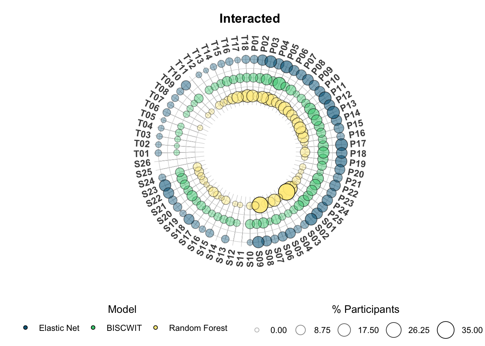
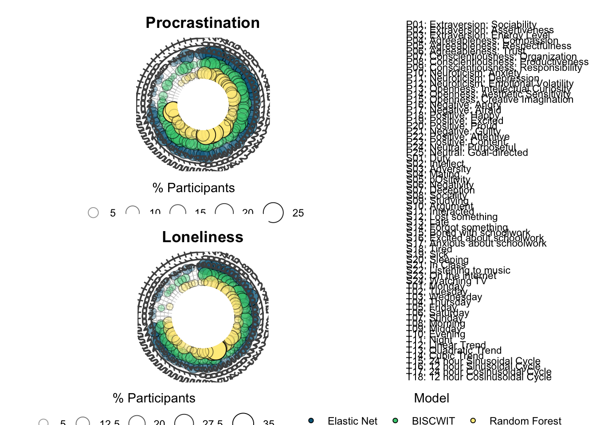
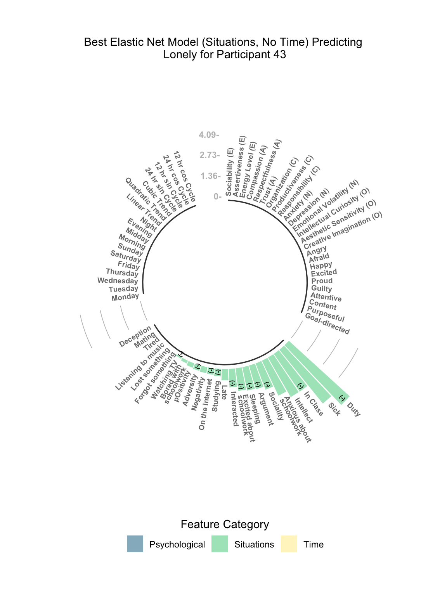
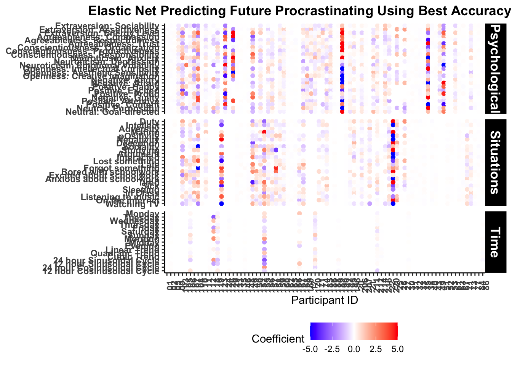
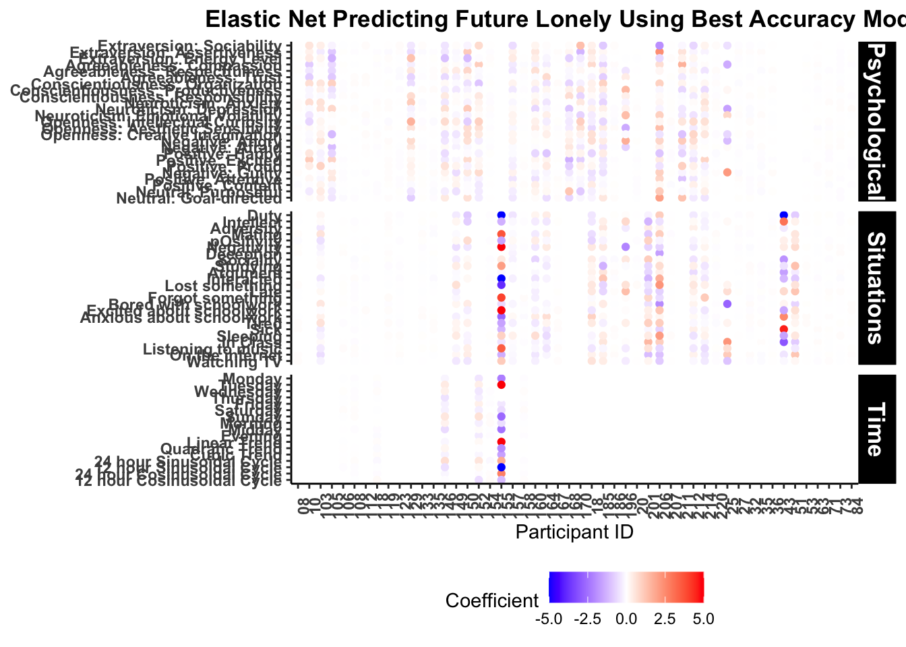
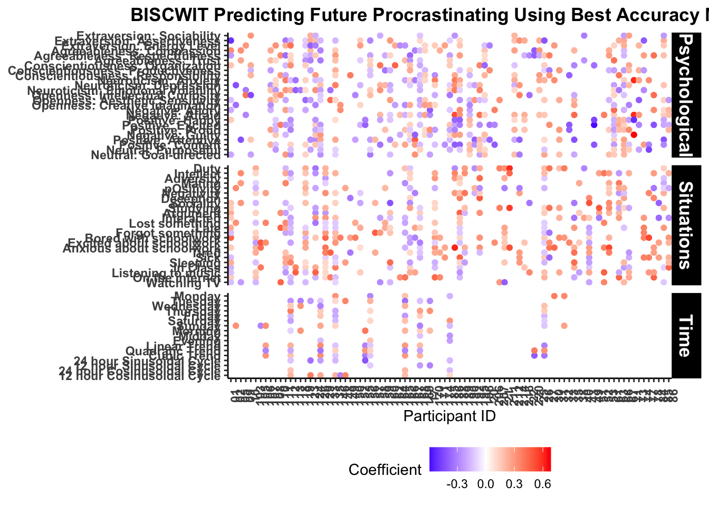
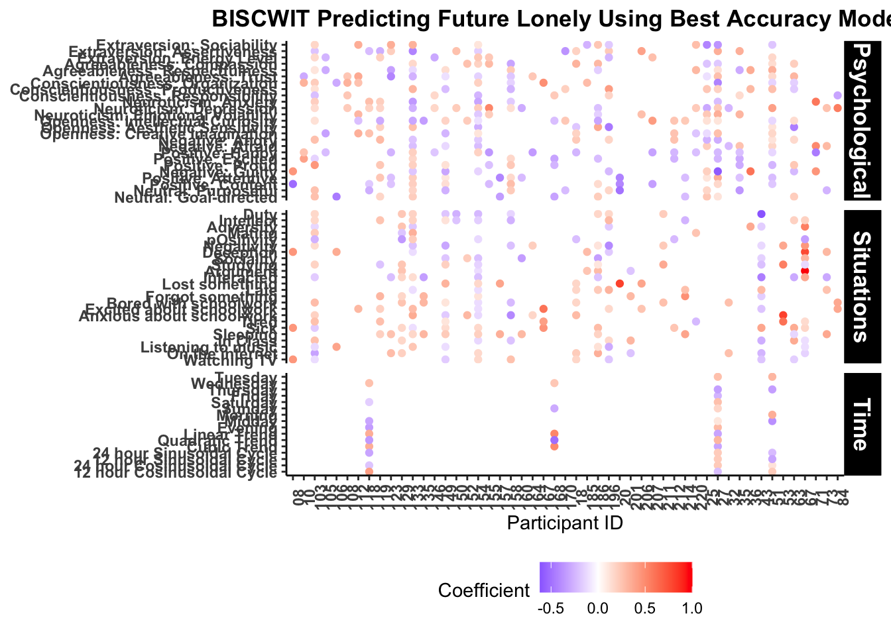

Chapter 6 Summarizing Models
Now that all the models have been run, the next step is to take various metrics and results from the models and format them into tables and figures that are more understable than thousands of model objects.
6.1 Question 1: Can we predict procrastination and loneliness?
6.1.1 Performance Metrics
To begin, we’ll pull the performance metrics – classification accuracy and area under the receiver operating curve (AUC) – to determine and display:
- Overall Model Performance
- Participant Specific Model Performance (e.g., did certain feature sets perform differently)
- Participants best models (in terms of accuracy and AUC) along with summaries of such accuracy and AUC, the feature set, etc.
The first thing we need to do is load in the final model performance metrics – that is, the accuracy and AUC of the model chosen via rolling-origin validation on the test / holdout set.
loadRData <- function(fileName, type, model){
#loads an RData file, and returns it
path <- sprintf("%s/05-results/%s/06-final-model-performance/%s", local_path, model, fileName)
load(path)
get(ls()[grepl(type, ls())])
}
sum_res <- tibble(
model = c("01-glmnet", "02-biscwit", "03-rf")
) %>%
mutate(file = map(model, ~sprintf("%s/05-results/%s/06-final-model-performance", local_path, .) %>%
list.files())) %>%
unnest(file) %>%
mutate(data = map2(file, model, ~loadRData(.x, "final_metrics", .y))) %>%
separate(file, c("SID", "outcome", "group", "set", "time"), sep = "_") %>%
mutate(time = str_remove_all(time, ".RData")
, model = str_remove_all(model, "[0-9 -]"))
save(sum_res, file = sprintf("%s/05-results/final-model-performance.RData", local_path))Which looks something like this:
load(url(sprintf("%s/05-results/final-model-performance.RData", res_path)))
sum_res %>%
unnest(data)## # A tibble: 42,810 × 10
## model SID outcome group set time .metric .estimator .estimate .config
## <chr> <chr> <chr> <chr> <chr> <chr> <chr> <chr> <dbl> <chr>
## 1 glmnet 01 argument full all no time accuracy binary 0.909 Preprocessor1_Model1
## 2 glmnet 01 argument full all no time roc_auc binary 0.6 Preprocessor1_Model1
## 3 glmnet 01 argument psychological Affect no time accuracy binary 0.909 Preprocessor1_Model1
## 4 glmnet 01 argument psychological Affect no time roc_auc binary 0.5 Preprocessor1_Model1
## 5 glmnet 01 argument psychological all no time accuracy binary 0.909 Preprocessor1_Model1
## 6 glmnet 01 argument psychological all no time roc_auc binary 0.5 Preprocessor1_Model1
## 7 glmnet 01 argument psychological BFI-2 no time accuracy binary 0.917 Preprocessor1_Model1
## 8 glmnet 01 argument psychological BFI-2 no time roc_auc binary 0.818 Preprocessor1_Model1
## 9 glmnet 01 argument situations all no time accuracy binary 0.909 Preprocessor1_Model1
## 10 glmnet 01 argument situations all no time roc_auc binary 0 Preprocessor1_Model1
## # … with 42,800 more rowsloadRData <- function(fileName){
#loads an RData file, and returns it
path <- sprintf("%s/04-data/02-model-data/%s", local_path, fileName)
load(path)
# get(ls()[grepl(type, ls())])
nrow(d)
}
n <- tibble(
file = sprintf("%s/04-data/02-model-data", local_path) %>% list.files()
) %>%
separate(file, c("SID", "outcome", "group", "set", "time"), sep = "_", remove = F) %>%
mutate(n = map_dbl(file, loadRData),
time = str_remove_all(time, ".RData"))loadRData <- function(fileName, type, model){
#loads an RData file, and returns it
path <- sprintf("%s/05-results/%s/07-final-model-param/%s", local_path, model, fileName)
load(path)
get(ls()[grepl(type, ls())])
}
param_res <- tibble(
model = c("01-glmnet", "02-biscwit", "03-rf")
) %>%
mutate(file = map(model, ~sprintf("%s/05-results/%s/07-final-model-param", local_path, .) %>%
list.files())) %>%
unnest(file) %>%
mutate(params = map2(file, model, ~loadRData(.x, "best", .y))
, coefs = map2(file, model, ~loadRData(.x, "coef", .y))) %>%
separate(file, c("SID", "outcome", "group", "set", "time"), sep = "_") %>%
mutate(time = str_remove_all(time, ".RData")
, model = str_remove_all(model, "[0-9 -]"))
save(param_res, file = sprintf("%s/05-results/final-model-param.RData", local_path))Which looks like this:
load(url(sprintf("%s/05-results/final-model-param.RData", res_path)))
param_res## # A tibble: 21,159 × 8
## model SID outcome group set time params coefs
## <chr> <chr> <chr> <chr> <chr> <chr> <list> <list>
## 1 glmnet 01 argument full all no time <tibble [1 × 4]> <dbl [40]>
## 2 glmnet 01 argument psychological Affect no time <tibble [1 × 4]> <dbl [10]>
## 3 glmnet 01 argument psychological all no time <tibble [1 × 4]> <dbl [25]>
## 4 glmnet 01 argument psychological BFI-2 no time <tibble [1 × 4]> <dbl [15]>
## 5 glmnet 01 argument situations all no time <tibble [1 × 4]> <dbl [15]>
## 6 glmnet 01 argument situations S8-I no time <tibble [1 × 4]> <dbl [8]>
## 7 glmnet 01 argument situations sit no time <tibble [1 × 4]> <dbl [7]>
## 8 glmnet 01 interacted full all no time <tibble [1 × 4]> <dbl [39]>
## 9 glmnet 01 interacted psychological Affect no time <tibble [1 × 4]> <dbl [10]>
## 10 glmnet 01 interacted psychological all no time <tibble [1 × 4]> <dbl [25]>
## # … with 21,149 more rows6.1.2 Classification Accuracy and AUC for all Models
Now that we’ve loaded in the results, the first thing that we’ll do is create tables on the performance of each model for all the tested feature sets. The goal here is less to make any specific argument with the results and more to just document them in a nice table format that is easier to read.
perf_tab_fun <- function(d, outcome, group, set, time){
# format groups, time, and outcomes to nice names
g <- str_to_title(group); s <- str_to_title(set)
tm <- if(time == "time") "With Time" else "Without Time"
o <- mapvalues(outcome, outcomes$trait, outcomes$long_name, warn_missing = F)
# create the caption
cap <- sprintf("<strong>Table SX</strong><br><em>Performance Metrics of the %s (%s) Feature Set %s Predicting %s", g, s, tm, o)
# call kable to create the html table
tab <- d %>%
kable(.
, "html"
, col.names = c("ID", rep(c("Accuracy", "AUC"), times = 3))
, align = c("r", rep("c", 6))
, digits = 2
, caption = cap
) %>%
kable_styling(full_width = F) %>%
add_header_above(c(" " = 1, "Elastic Net" = 2, "BISCWIT" = 2, "Random Forest" = 2))
# save the table to files
save_kable(tab, file = sprintf("%s/05-results/04-tables/01-participant-metrics/%s_%s_%s_%s.html", local_path, outcome, group, set, time))
# return the table object
return(tab)
}
sum_res_tab <- sum_res %>%
unnest(data) %>%
select(-.estimator, -.config) %>%
pivot_wider(names_from = c("model", ".metric")
, values_from = ".estimate") %>%
group_by(outcome, group, set, time) %>%
nest() %>%
ungroup() %>%
mutate(tab = pmap(list(data, outcome, group, set, time), perf_tab_fun))
sum_res_tab## # A tibble: 98 × 6
## outcome group set time data tab
## <chr> <chr> <chr> <chr> <list> <list>
## 1 argument full all no time <tibble [33 × 7]> <kablExtr [1]>
## 2 argument psychological Affect no time <tibble [35 × 7]> <kablExtr [1]>
## 3 argument psychological all no time <tibble [35 × 7]> <kablExtr [1]>
## 4 argument psychological BFI-2 no time <tibble [41 × 7]> <kablExtr [1]>
## 5 argument situations all no time <tibble [33 × 7]> <kablExtr [1]>
## 6 argument situations S8-I no time <tibble [33 × 7]> <kablExtr [1]>
## 7 argument situations sit no time <tibble [41 × 7]> <kablExtr [1]>
## 8 interacted full all no time <tibble [102 × 7]> <kablExtr [1]>
## 9 interacted psychological Affect no time <tibble [111 × 7]> <kablExtr [1]>
## 10 interacted psychological all no time <tibble [111 × 7]> <kablExtr [1]>
## # … with 88 more rowsNow I’ll print the tables in different tabs below. Here, I’m only showing the set with combined features for each category for parsimony. The full results are in the online materials under 05-results/04-tables/01-participant-metrics.
As is clear in each of these tables, overall accuracy and AUC are quite high although there are quite stark individual differences in them across people. AUC tended to be lower than accuracy on average. However, at the individual level, there are some individuals who had AUC scores higher than accuracy.
tmp <- sum_res_tab %>%
filter(set == "all" & group == "full" & time == "no time") %>%
mutate(group = sprintf("%s, %s", str_to_title(group), str_to_title(time)),
out = mapvalues(outcome, outcomes$trait, outcomes$long_name))
for(i in 1:nrow(tmp)){
cat(' \n\n#### ', tmp$out[i], '\n\n ', sep ="")
tmp$tab[[i]] %>%
scroll_box(height = "500px") %>%
print()
cat("\n")
}6.1.2.1 Argument
6.1.2.2 Interacted
6.1.2.3 Procrastinating
6.1.2.4 Studying
6.1.2.5 Tired
6.1.2.6 Sick
6.1.2.7 Lonely
6.1.3 Best Models
Next, to get a more concise indication of how these models are performing, we will choose the best model in terms of accuracy and AUC for each participant, outcome, and model combination.
best_mods <- sum_res %>%
unnest(data) %>%
filter(set == "all") %>%
group_by(SID, outcome, .metric, model) %>%
filter(!is.na(.estimate) & .estimate != 1) %>%
arrange(desc(.estimate), model, group) %>%
slice_head(n = 1) %>%
ungroup(); best_mods## # A tibble: 3,274 × 10
## model SID outcome group set time .metric .estimator .estimate .config
## <chr> <chr> <chr> <chr> <chr> <chr> <chr> <chr> <dbl> <chr>
## 1 biscwit 01 argument full all no time accuracy binary 0.909 <NA>
## 2 glmnet 01 argument full all no time accuracy binary 0.909 Preprocessor1_Model1
## 3 rf 01 argument psychological all no time accuracy binary 0.909 Preprocessor1_Model1
## 4 biscwit 01 argument situations all no time roc_auc binary 0.7 <NA>
## 5 glmnet 01 argument full all no time roc_auc binary 0.6 Preprocessor1_Model1
## 6 rf 01 argument full all no time roc_auc binary 0.5 Preprocessor1_Model1
## 7 biscwit 01 interacted psychological all no time accuracy binary 0.818 <NA>
## 8 glmnet 01 interacted full all no time accuracy binary 0.727 Preprocessor1_Model1
## 9 rf 01 interacted psychological all no time accuracy binary 0.818 Preprocessor1_Model1
## 10 biscwit 01 interacted situations all no time roc_auc binary 0.625 <NA>
## # … with 3,264 more rows6.1.3.1 Participant Summaries (Table)
Now that we have participants best models, the first thing we’ll do is create a summary of just how well participants’ best models actually performed. These Supplementary Tables will be split by outcome (procrastination, loneliness) and metric (accuracy, AUC) with each row giving details on which feature set was chosen for each method and what the accuracy or AUC for that method was.
px_bm_fun <- function(d, outcome, metric){
o <- mapvalues(outcome, outcomes$trait, outcomes$long_name, warn_missing = F)
m <- if(metric == "accuracy") "Accuracy" else "AUC"
cap <- sprintf("<strong>Table SX</strong><br><em>Feature Set and %s for Predicting %s for Each Participant's Best Model</em>", m, o)
tab <- d %>%
select(SID, contains("glmnet"), contains("biscwit"), contains("rf")) %>%
kable(.
, "html"
, digits = 2
, col.names = c("ID", rep(c("Feature Set", m), times = 3))
, align = c("r", rep(c("l", "c"), times = 3))
, cap = cap
) %>%
kable_styling(full_width = F) %>%
add_header_above(c(" " = 1, "Elastic Net" = 2, "BISCWIT" = 2, "Random Forest" = 2))
save_kable(tab, file = sprintf("%s/05-results/04-tables/02-participant-best-models/%s_%s.html", local_path, outcome, metric))
return(tab)
}
px_best_mods <- best_mods %>%
select(-.estimator, -.config, -set) %>%
mutate_at(vars(group, time), str_to_title) %>%
unite(group, group, time, sep = ", ") %>%
pivot_wider(names_from = "model"
, values_from = c("group", ".estimate")
, names_glue = "{model}_{.value}") %>%
group_by(outcome, .metric) %>%
nest() %>%
ungroup() %>%
mutate(tab = pmap(list(data, outcome, .metric), px_bm_fun)); px_best_mods## # A tibble: 14 × 4
## outcome .metric data tab
## <chr> <chr> <list> <list>
## 1 argument accuracy <tibble [35 × 7]> <kablExtr [1]>
## 2 argument roc_auc <tibble [35 × 7]> <kablExtr [1]>
## 3 interacted accuracy <tibble [111 × 7]> <kablExtr [1]>
## 4 interacted roc_auc <tibble [111 × 7]> <kablExtr [1]>
## 5 prcrst accuracy <tibble [87 × 7]> <kablExtr [1]>
## 6 prcrst roc_auc <tibble [87 × 7]> <kablExtr [1]>
## 7 study accuracy <tibble [110 × 7]> <kablExtr [1]>
## 8 study roc_auc <tibble [110 × 7]> <kablExtr [1]>
## 9 tired accuracy <tibble [98 × 7]> <kablExtr [1]>
## 10 tired roc_auc <tibble [98 × 7]> <kablExtr [1]>
## 11 sick accuracy <tibble [56 × 7]> <kablExtr [1]>
## 12 sick roc_auc <tibble [56 × 7]> <kablExtr [1]>
## 13 lonely accuracy <tibble [52 × 7]> <kablExtr [1]>
## 14 lonely roc_auc <tibble [52 × 7]> <kablExtr [1]>Now, let’s print each of these tables and see what they demonstrate. Across people, accuracy was, on average (and median), pretty high. Accuracy estimates across models tended to be very similar for each person, which indicates that the models seemed to perform similarly.
tmp <- px_best_mods %>%
filter(.metric == "accuracy") %>%
mutate(out = mapvalues(outcome, outcomes$trait, outcomes$long_name))6.1.3.1.1 Loneliness
(tmp %>% filter(outcome == "lonely"))$tab[[1]]| ID | Feature Set | Accuracy | Feature Set | Accuracy | Feature Set | Accuracy |
|---|---|---|---|---|---|---|
| 03 | Psychological, No Time | 0.90 | Psychological, No Time | 0.90 | Psychological, No Time | 0.90 |
| 08 | Situations, No Time | 0.83 | Situations, No Time | 0.92 | Situations, No Time | 0.91 |
| 10 | Psychological, No Time | 0.91 | Psychological, No Time | 0.91 | Psychological, No Time | 0.89 |
| 103 | Full, No Time | 0.94 | Full, No Time | 0.94 | Situations, No Time | 0.94 |
| 105 | Full, No Time | 0.85 | Full, Time | 0.92 | Full, No Time | 0.83 |
| 106 | Full, No Time | 0.94 | Full, No Time | 0.94 | Situations, No Time | 0.94 |
| 108 | Psychological, No Time | 0.80 | Full, No Time | 0.75 | Full, No Time | 0.81 |
| 112 | Full, No Time | 0.69 | Full, No Time | 0.69 | Full, No Time | 0.75 |
| 118 | Psychological, No Time | 0.73 | Psychological, No Time | 0.73 | Psychological, No Time | 0.75 |
| 119 | Full, No Time | 0.93 | Full, No Time | 0.93 | Full, No Time | 0.93 |
| 123 | Full, No Time | 0.93 | Full, No Time | 0.93 | Full, No Time | 0.93 |
| 129 | Full, No Time | 0.58 | Full, No Time | 0.58 | Full, No Time | 0.64 |
| 133 | Full, No Time | 0.90 | Full, No Time | 0.90 | Full, No Time | 0.90 |
| 135 | Full, Time | 0.93 | Full, Time | 0.93 | Situations, No Time | 0.93 |
| 146 | Full, No Time | 0.94 | Full, No Time | 0.94 | Full, No Time | 0.94 |
| 149 | Full, No Time | 0.95 | Full, No Time | 0.95 | Situations, No Time | 0.95 |
| 150 | Full, No Time | 0.96 | Full, No Time | 0.96 | Situations, No Time | 0.96 |
| 152 | Full, No Time | 0.92 | Full, No Time | 0.92 | Situations, No Time | 0.92 |
| 154 | Full, No Time | 0.94 | Full, No Time | 0.94 | Psychological, No Time | 0.94 |
| 155 | Full, No Time | 0.83 | Situations, No Time | 0.67 | Full, No Time | 0.71 |
| 157 | Full, No Time | 0.90 | Full, No Time | 0.90 | Situations, No Time | 0.90 |
| 158 | Full, Time | 0.93 | Psychological, No Time | 0.93 | Full, No Time | 0.93 |
| 160 | Full, No Time | 0.83 | Full, No Time | 0.83 | Full, No Time | 0.83 |
| 164 | Full, No Time | 0.96 | Full, No Time | 0.96 | Situations, No Time | 0.96 |
| 168 | Full, No Time | 0.69 | Psychological, Time | 0.77 | Psychological, Time | 0.75 |
| 170 | Psychological, No Time | 0.95 | Psychological, No Time | 0.95 | Psychological, No Time | 0.94 |
| 18 | Psychological, No Time | 0.95 | Full, Time | 0.95 | Situations, No Time | 0.94 |
| 185 | Situations, Time | 0.68 | Situations, No Time | 0.65 | Situations, No Time | 0.65 |
| 186 | Full, Time | 0.93 | Full, No Time | 0.93 | Situations, No Time | 0.93 |
| 196 | Full, No Time | 0.92 | Full, Time | 0.92 | Situations, No Time | 0.92 |
| 20 | Full, No Time | 0.93 | Full, No Time | 0.93 | Situations, No Time | 0.93 |
| 201 | Full, No Time | 0.82 | Full, No Time | 0.82 | Full, No Time | 0.80 |
| 206 | Full, Time | 0.89 | Full, No Time | 0.89 | Situations, No Time | 0.88 |
| 207 | Full, Time | 0.92 | Psychological, Time | 0.92 | Full, No Time | 0.92 |
| 211 | Full, No Time | 0.81 | Situations, No Time | 0.81 | Full, No Time | 0.83 |
| 212 | Full, No Time | 0.95 | Full, No Time | 0.95 | Situations, No Time | 0.95 |
| 214 | Full, No Time | 0.75 | Full, No Time | 0.75 | Situations, No Time | 0.80 |
| 220 | Full, No Time | 0.92 | Full, No Time | 0.92 | Full, Time | 0.91 |
| 25 | Full, No Time | 0.75 | Psychological, No Time | 0.83 | Full, No Time | 0.70 |
| 27 | Full, No Time | 0.83 | Full, No Time | 0.83 | Full, Time | 0.90 |
| 32 | Full, No Time | 0.93 | Full, No Time | 0.93 | Situations, No Time | 0.93 |
| 35 | Psychological, No Time | 0.83 | Full, No Time | 0.75 | Full, No Time | 0.91 |
| 36 | Full, No Time | 0.92 | Full, No Time | 0.92 | Full, No Time | 0.91 |
| 43 | Full, No Time | 0.82 | Full, No Time | 0.73 | Full, No Time | 0.80 |
| 51 | Psychological, No Time | 0.75 | Psychological, Time | 0.92 | Full, No Time | 0.80 |
| 53 | Full, No Time | 0.93 | Full, No Time | 0.93 | Full, No Time | 0.93 |
| 58 | Psychological, No Time | 0.91 | Psychological, No Time | 0.91 | Psychological, No Time | 0.90 |
| 63 | Full, No Time | 0.91 | Full, No Time | 0.91 | Full, No Time | 0.91 |
| 66 | Full, Time | 0.91 | Situations, No Time | 0.91 | ||
| 67 | Full, No Time | 0.86 | Full, No Time | 0.86 | ||
| 73 | Full, No Time | 0.93 | Full, No Time | 0.93 | Full, No Time | 0.92 |
| 84 | Full, No Time | 0.92 | Full, No Time | 0.92 | Situations, No Time | 0.92 |
6.1.3.1.2 Procrastination
(tmp %>% filter(outcome == "prcrst"))$tab[[1]]| ID | Feature Set | Accuracy | Feature Set | Accuracy | Feature Set | Accuracy |
|---|---|---|---|---|---|---|
| 01 | Full, No Time | 0.91 | Full, No Time | 0.91 | Psychological, No Time | 0.91 |
| 02 | Full, No Time | 0.85 | Situations, No Time | 0.85 | Full, No Time | 0.83 |
| 03 | Psychological, No Time | 0.90 | Psychological, No Time | 0.60 | Psychological, No Time | 0.90 |
| 05 | Psychological, No Time | 0.92 | Psychological, No Time | 0.92 | Full, No Time | 0.92 |
| 09 | Psychological, No Time | 0.91 | Psychological, No Time | 0.91 | ||
| 10 | Psychological, No Time | 0.73 | Psychological, No Time | 0.73 | Psychological, No Time | 0.67 |
| 103 | Psychological, Time | 0.69 | Psychological, No Time | 0.56 | Situations, No Time | 0.62 |
| 105 | Full, No Time | 0.92 | Full, No Time | 0.92 | Psychological, No Time | 0.93 |
| 106 | Situations, No Time | 0.75 | Psychological, Time | 0.81 | Full, No Time | 0.87 |
| 107 | Full, Time | 0.93 | Full, Time | 0.93 | Situations, No Time | 0.93 |
| 108 | Full, No Time | 0.55 | Psychological, No Time | 0.75 | Situations, No Time | 0.58 |
| 110 | Full, No Time | 0.92 | Full, No Time | 0.83 | Situations, No Time | 0.92 |
| 111 | Full, Time | 0.90 | Full, Time | 0.80 | Situations, No Time | 0.90 |
| 112 | Psychological, Time | 0.69 | Full, Time | 0.69 | Situations, No Time | 0.69 |
| 118 | Psychological, No Time | 0.64 | Psychological, Time | 0.60 | Psychological, No Time | 0.62 |
| 119 | Psychological, Time | 0.64 | Psychological, Time | 0.64 | Full, No Time | 0.57 |
| 123 | Full, Time | 0.80 | Psychological, No Time | 0.80 | Full, No Time | 0.79 |
| 124 | Full, No Time | 0.73 | Situations, No Time | 0.82 | Full, No Time | 0.50 |
| 126 | Full, No Time | 0.50 | Situations, No Time | 0.83 | Full, No Time | 0.64 |
| 129 | Full, No Time | 0.83 | Full, Time | 0.83 | Situations, No Time | 0.58 |
| 135 | Full, No Time | 0.93 | Full, No Time | 0.93 | Situations, No Time | 0.93 |
| 146 | Situations, No Time | 0.59 | Situations, Time | 0.60 | Psychological, No Time | 0.58 |
| 148 | Psychological, No Time | 0.67 | Full, No Time | 0.67 | Situations, No Time | 0.55 |
| 149 | Situations, No Time | 0.63 | Situations, Time | 0.67 | Full, No Time | 0.75 |
| 150 | Full, No Time | 0.72 | Situations, No Time | 0.68 | Situations, No Time | 0.79 |
| 152 | Full, No Time | 0.88 | Full, No Time | 0.88 | Situations, No Time | 0.88 |
| 155 | Full, No Time | 0.56 | Situations, No Time | 0.67 | Full, No Time | 0.53 |
| 156 | Psychological, Time | 0.52 | Psychological, Time | 0.57 | Situations, Time | 0.55 |
| 157 | Situations, Time | 0.95 | Full, Time | 0.95 | Full, No Time | 0.95 |
| 158 | Full, Time | 0.73 | Situations, No Time | 0.73 | Full, No Time | 0.67 |
| 159 | Full, No Time | 0.90 | Full, No Time | 0.90 | Situations, No Time | 0.90 |
| 160 | Full, No Time | 0.89 | Full, No Time | 0.89 | Full, No Time | 0.89 |
| 162 | Full, No Time | 0.93 | Full, No Time | 0.93 | Situations, No Time | 0.93 |
| 164 | Full, No Time | 0.96 | Full, No Time | 0.96 | Situations, No Time | 0.96 |
| 165 | Full, No Time | 0.73 | Psychological, Time | 0.82 | Full, No Time | 0.56 |
| 166 | Full, Time | 0.58 | Situations, Time | 0.67 | Full, Time | 0.90 |
| 167 | Situations, No Time | 0.64 | Psychological, No Time | 0.64 | Full, No Time | 0.70 |
| 168 | Full, Time | 0.69 | Full, No Time | 0.77 | Full, Time | 0.67 |
| 169 | Psychological, No Time | 0.94 | Psychological, No Time | 0.94 | Psychological, No Time | 0.93 |
| 17 | Full, Time | 0.46 | Psychological, Time | 0.62 | Psychological, Time | 0.33 |
| 170 | Full, No Time | 0.85 | Situations, Time | 0.92 | Situations, No Time | 0.85 |
| 171 | Full, No Time | 0.96 | Full, No Time | 0.96 | Situations, No Time | 0.96 |
| 174 | Full, Time | 0.96 | Full, No Time | 0.96 | Situations, No Time | 0.96 |
| 185 | Full, No Time | 0.95 | Full, No Time | 0.95 | Situations, No Time | 0.95 |
| 186 | Psychological, Time | 0.80 | Situations, No Time | 0.87 | Situations, Time | 0.79 |
| 188 | Full, No Time | 0.92 | Full, No Time | 0.92 | Full, No Time | 0.92 |
| 189 | Full, No Time | 0.83 | Psychological, No Time | 0.83 | Situations, No Time | 0.82 |
| 190 | Psychological, No Time | 0.93 | Situations, No Time | 0.86 | Psychological, No Time | 0.93 |
| 192 | Full, No Time | 0.92 | Full, No Time | 0.92 | Full, No Time | 0.92 |
| 195 | Full, No Time | 0.94 | Full, No Time | 0.94 | Situations, No Time | 0.94 |
| 196 | Full, No Time | 0.83 | Situations, No Time | 0.92 | Situations, No Time | 0.83 |
| 20 | Full, No Time | 0.79 | Full, Time | 0.86 | Situations, No Time | 0.79 |
| 206 | Full, Time | 0.89 | Full, No Time | 0.89 | Full, No Time | 0.94 |
| 207 | Psychological, No Time | 0.86 | Full, No Time | 0.86 | Full, No Time | 0.85 |
| 21 | Full, No Time | 0.60 | Full, No Time | 0.53 | Psychological, No Time | 0.64 |
| 211 | Full, No Time | 0.96 | Full, No Time | 0.96 | Situations, Time | 0.96 |
| 212 | Full, No Time | 0.95 | Full, No Time | 0.95 | Situations, No Time | 0.95 |
| 214 | Full, Time | 0.94 | Psychological, Time | 0.94 | Situations, No Time | 0.93 |
| 216 | Psychological, No Time | 0.81 | Full, No Time | 0.81 | Full, No Time | 0.83 |
| 22 | Full, Time | 0.75 | Full, Time | 0.83 | Situations, Time | 0.73 |
| 220 | Psychological, No Time | 0.92 | Full, No Time | 0.83 | Full, No Time | 0.91 |
| 25 | Full, No Time | 0.75 | Full, No Time | 0.83 | Psychological, No Time | 0.70 |
| 26 | Full, No Time | 0.81 | Full, No Time | 0.81 | Full, No Time | 0.87 |
| 27 | Situations, No Time | 0.83 | Full, Time | 0.55 | Full, Time | 0.90 |
| 30 | Full, Time | 0.92 | Full, No Time | 0.86 | Full, Time | 0.92 |
| 31 | Full, No Time | 0.93 | Full, No Time | 0.93 | Full, No Time | 0.92 |
| 32 | Full, No Time | 0.86 | Psychological, No Time | 0.86 | Full, No Time | 0.92 |
| 33 | Full, No Time | 0.91 | Full, No Time | 0.91 | Situations, No Time | 0.91 |
| 35 | Full, No Time | 0.83 | Psychological, No Time | 0.83 | Full, No Time | 0.91 |
| 38 | Psychological, No Time | 0.67 | Situations, No Time | 0.64 | Psychological, No Time | 0.69 |
| 40 | Full, No Time | 0.91 | Full, No Time | 0.91 | Full, No Time | 0.91 |
| 43 | Full, No Time | 0.91 | Situations, No Time | 0.73 | Full, No Time | 0.90 |
| 49 | Psychological, Time | 0.73 | Psychological, No Time | 0.64 | Psychological, No Time | 0.50 |
| 51 | Psychological, No Time | 0.92 | Psychological, No Time | 0.92 | Psychological, No Time | 0.91 |
| 53 | Full, No Time | 0.93 | Full, No Time | 0.93 | Full, No Time | 0.93 |
| 61 | Psychological, No Time | 0.91 | Psychological, No Time | 0.91 | Psychological, No Time | 0.91 |
| 63 | Full, No Time | 0.91 | Full, No Time | 0.91 | Full, No Time | 0.91 |
| 66 | Full, No Time | 0.91 | Full, No Time | 0.91 | Situations, No Time | 0.91 |
| 67 | Full, No Time | 0.71 | Full, Time | 0.79 | Full, No Time | 0.69 |
| 71 | Psychological, No Time | 0.73 | Full, No Time | 0.73 | Full, No Time | 0.60 |
| 73 | Full, No Time | 0.86 | Situations, No Time | 0.93 | Full, No Time | 0.85 |
| 74 | Full, No Time | 0.93 | Full, No Time | 0.93 | Situations, No Time | 0.92 |
| 77 | Full, No Time | 0.90 | Psychological, No Time | 0.80 | Situations, No Time | 0.90 |
| 78 | Full, No Time | 0.91 | Psychological, No Time | 0.91 | Full, No Time | 0.90 |
| 84 | Full, No Time | 0.92 | Full, No Time | 0.92 | Situations, No Time | 0.92 |
| 85 | Full, No Time | 0.85 | Full, No Time | 0.85 | Full, No Time | 0.83 |
| 86 | Full, No Time | 0.93 | Full, No Time | 0.93 | Full, No Time | 0.93 |
6.1.3.1.3 Studying
(tmp %>% filter(outcome == "study"))$tab[[1]]| ID | Feature Set | Accuracy | Feature Set | Accuracy | Feature Set | Accuracy |
|---|---|---|---|---|---|---|
| 01 | Full, No Time | 0.91 | Full, No Time | 0.91 | Psychological, No Time | 0.91 |
| 02 | Situations, No Time | 0.69 | Full, Time | 0.67 | Situations, Time | 0.83 |
| 03 | Psychological, No Time | 0.80 | Psychological, No Time | 0.80 | Psychological, No Time | 0.80 |
| 05 | Full, Time | 0.83 | Full, No Time | 0.67 | Situations, No Time | 0.75 |
| 08 | Full, Time | 0.67 | Full, No Time | 0.67 | Full, No Time | 0.73 |
| 09 | Psychological, No Time | 0.91 | Psychological, No Time | 0.91 | Psychological, No Time | 0.90 |
| 10 | Psychological, No Time | 0.73 | Psychological, Time | 0.73 | Psychological, No Time | 0.78 |
| 103 | Psychological, Time | 0.56 | Psychological, Time | 0.56 | Situations, Time | 0.50 |
| 105 | Full, Time | 0.92 | Full, No Time | 0.85 | Psychological, Time | 0.93 |
| 106 | Situations, Time | 0.69 | Situations, No Time | 0.62 | Full, Time | 0.67 |
| 107 | Full, Time | 0.53 | Full, No Time | 0.53 | Full, No Time | 0.54 |
| 108 | Psychological, Time | 0.65 | Psychological, Time | 0.70 | Full, No Time | 0.56 |
| 110 | Full, Time | 0.83 | Psychological, Time | 0.83 | Full, Time | 0.89 |
| 111 | Situations, Time | 0.70 | Situations, Time | 0.80 | Full, Time | 0.67 |
| 112 | Psychological, No Time | 0.77 | Psychological, No Time | 0.77 | Situations, No Time | 0.77 |
| 113 | Full, No Time | 0.90 | Situations, No Time | 0.90 | Full, No Time | 0.90 |
| 118 | Psychological, No Time | 0.82 | Psychological, No Time | 0.82 | Psychological, No Time | 0.75 |
| 119 | Full, No Time | 0.64 | Psychological, No Time | 0.57 | Full, No Time | 0.64 |
| 123 | Psychological, No Time | 0.67 | Situations, No Time | 0.80 | Full, No Time | 0.71 |
| 124 | Full, No Time | 0.91 | Full, No Time | 0.91 | Full, No Time | 0.90 |
| 126 | Full, Time | 0.75 | Situations, Time | 0.92 | Situations, No Time | 0.64 |
| 129 | Full, Time | 0.58 | Full, No Time | 0.58 | Full, Time | 0.73 |
| 132 | Psychological, Time | 0.73 | Full, No Time | 0.45 | Situations, No Time | 0.27 |
| 133 | Full, No Time | 0.40 | Situations, No Time | 0.40 | Full, No Time | 0.40 |
| 135 | Psychological, No Time | 0.50 | Full, No Time | 0.71 | Full, No Time | 0.62 |
| 14 | Full, No Time | 0.83 | Psychological, No Time | 0.83 | Situations, No Time | 0.83 |
| 146 | Psychological, No Time | 0.89 | Full, No Time | 0.82 | Psychological, No Time | 0.89 |
| 148 | Full, No Time | 0.92 | Psychological, No Time | 0.92 | Situations, No Time | 0.91 |
| 149 | Full, No Time | 0.84 | Full, No Time | 0.84 | Full, No Time | 0.94 |
| 150 | Full, No Time | 0.60 | Full, No Time | 0.64 | Full, No Time | 0.59 |
| 152 | Full, No Time | 0.88 | Situations, No Time | 0.92 | Situations, No Time | 0.88 |
| 154 | Full, No Time | 0.88 | Psychological, No Time | 0.82 | Situations, Time | 0.88 |
| 155 | Full, No Time | 0.94 | Psychological, No Time | 0.83 | Situations, No Time | 0.94 |
| 156 | Situations, No Time | 0.81 | Psychological, No Time | 0.62 | Situations, Time | 0.70 |
| 157 | Full, No Time | 0.62 | Situations, Time | 0.70 | Situations, No Time | 0.62 |
| 158 | Full, Time | 0.87 | Situations, Time | 0.87 | Full, Time | 0.86 |
| 159 | Full, No Time | 0.70 | Situations, No Time | 0.70 | Situations, No Time | 0.70 |
| 160 | Full, No Time | 0.72 | Psychological, No Time | 0.72 | Full, Time | 0.76 |
| 162 | Full, Time | 0.62 | Psychological, No Time | 0.43 | Full, No Time | 0.73 |
| 164 | Full, No Time | 0.96 | Full, No Time | 0.83 | Situations, No Time | 0.96 |
| 165 | Situations, No Time | 0.64 | Situations, No Time | 0.64 | Situations, No Time | 0.70 |
| 166 | Full, No Time | 0.67 | Situations, No Time | 0.75 | Full, No Time | 0.90 |
| 167 | Full, No Time | 0.55 | Situations, Time | 0.64 | Full, No Time | 0.50 |
| 168 | Full, No Time | 0.85 | Full, No Time | 0.77 | Full, No Time | 0.85 |
| 169 | Psychological, No Time | 0.88 | Psychological, No Time | 0.88 | ||
| 17 | Full, No Time | 0.93 | Full, No Time | 0.86 | Full, No Time | 0.92 |
| 170 | Full, No Time | 0.85 | Situations, No Time | 0.85 | Psychological, No Time | 0.82 |
| 171 | Full, Time | 0.54 | Full, No Time | 0.52 | Full, Time | 0.64 |
| 174 | Psychological, No Time | 0.68 | Situations, Time | 0.80 | Situations, Time | 0.75 |
| 18 | Psychological, No Time | 0.84 | Full, No Time | 0.84 | Situations, No Time | 0.89 |
| 180 | Full, No Time | 0.64 | Full, No Time | 0.73 | Full, No Time | 0.70 |
| 181 | Full, No Time | 0.91 | Psychological, No Time | 0.91 | Situations, No Time | 0.90 |
| 184 | Situations, Time | 0.75 | Full, No Time | 0.69 | Situations, No Time | 0.67 |
| 185 | Full, No Time | 0.45 | Full, No Time | 0.55 | Situations, Time | 0.50 |
| 186 | Full, Time | 0.60 | Full, No Time | 0.60 | Situations, No Time | 0.57 |
| 187 | Full, No Time | 0.95 | Full, No Time | 0.95 | Situations, No Time | 0.95 |
| 188 | Full, No Time | 0.92 | Full, Time | 0.83 | Full, No Time | 0.92 |
| 189 | Full, No Time | 0.67 | Full, No Time | 0.83 | Situations, No Time | 0.73 |
| 190 | Situations, No Time | 0.50 | Situations, No Time | 0.64 | Psychological, No Time | 0.47 |
| 192 | Situations, Time | 0.62 | Situations, Time | 0.62 | Full, No Time | 0.54 |
| 195 | Psychological, No Time | 0.71 | Psychological, No Time | 0.65 | Full, No Time | 0.79 |
| 196 | Full, Time | 0.50 | Full, Time | 0.50 | Situations, Time | 0.50 |
| 20 | Full, Time | 0.71 | Psychological, No Time | 0.57 | Situations, Time | 0.62 |
| 201 | Full, No Time | 0.55 | Full, No Time | 0.45 | Situations, No Time | 0.45 |
| 206 | Full, Time | 0.56 | Psychological, Time | 0.56 | Situations, No Time | 0.53 |
| 207 | Full, No Time | 0.79 | Full, No Time | 0.79 | Full, No Time | 0.77 |
| 209 | Psychological, No Time | 0.93 | Psychological, No Time | 0.93 | Psychological, No Time | 0.92 |
| 21 | Full, No Time | 0.93 | Psychological, Time | 0.87 | Full, No Time | 0.93 |
| 211 | Full, No Time | 0.96 | Full, No Time | 0.96 | Situations, No Time | 0.96 |
| 212 | Psychological, No Time | 0.95 | Full, Time | 0.80 | Situations, No Time | 0.95 |
| 214 | Full, Time | 0.94 | Psychological, Time | 0.94 | Situations, No Time | 0.93 |
| 216 | Full, No Time | 0.93 | Full, No Time | 0.93 | Situations, No Time | 0.93 |
| 22 | Full, No Time | 0.93 | Full, No Time | 0.93 | Situations, No Time | 0.92 |
| 220 | Full, No Time | 0.92 | Psychological, No Time | 0.92 | Full, No Time | 0.91 |
| 221 | Full, No Time | 0.95 | Full, No Time | 0.95 | Situations, No Time | 0.95 |
| 23 | Situations, No Time | 0.93 | Psychological, No Time | 0.93 | Situations, No Time | 0.85 |
| 25 | Full, No Time | 0.75 | Psychological, No Time | 0.67 | Situations, No Time | 0.75 |
| 26 | Psychological, No Time | 0.94 | Full, No Time | 0.88 | Situations, No Time | 0.94 |
| 27 | Full, No Time | 0.67 | Full, No Time | 0.67 | Psychological, No Time | 0.73 |
| 28 | Full, No Time | 0.93 | Full, No Time | 0.93 | Full, Time | 0.92 |
| 30 | Full, No Time | 0.79 | Full, No Time | 0.79 | Full, No Time | 0.77 |
| 31 | Psychological, Time | 0.64 | Psychological, No Time | 0.71 | Situations, Time | 0.77 |
| 32 | Full, No Time | 0.71 | Full, No Time | 0.79 | Full, No Time | 0.77 |
| 35 | Full, No Time | 0.92 | Full, No Time | 0.92 | Full, No Time | 0.82 |
| 36 | Full, No Time | 0.92 | Psychological, No Time | 0.92 | Full, No Time | 0.91 |
| 38 | Psychological, No Time | 0.93 | Situations, Time | 0.82 | Situations, No Time | 0.93 |
| 39 | Full, No Time | 0.93 | Full, No Time | 0.71 | Situations, No Time | 0.92 |
| 40 | Full, No Time | 0.82 | Psychological, Time | 0.73 | Psychological, No Time | 0.73 |
| 43 | Situations, No Time | 0.64 | Full, No Time | 0.55 | Full, No Time | 0.50 |
| 49 | Psychological, Time | 0.73 | Psychological, Time | 0.73 | Psychological, Time | 0.50 |
| 51 | Psychological, No Time | 0.92 | Full, No Time | 0.91 | Psychological, No Time | 0.91 |
| 52 | Full, Time | 0.91 | Full, No Time | 0.73 | Situations, No Time | 0.91 |
| 53 | Full, No Time | 0.93 | Full, No Time | 0.93 | Full, No Time | 0.93 |
| 58 | Psychological, Time | 0.82 | Psychological, Time | 0.82 | Psychological, Time | 0.80 |
| 61 | Psychological, Time | 0.73 | Psychological, No Time | 0.64 | Psychological, No Time | 0.73 |
| 63 | Full, No Time | 0.91 | Situations, No Time | 0.91 | Full, No Time | 0.91 |
| 66 | Full, No Time | 0.91 | Situations, No Time | 0.73 | Full, No Time | 0.88 |
| 67 | Full, No Time | 0.93 | Full, Time | 0.93 | Full, No Time | 0.92 |
| 71 | Full, No Time | 0.91 | Psychological, Time | 0.91 | Full, No Time | 0.90 |
| 72 | Full, No Time | 0.93 | Full, No Time | 0.86 | Situations, No Time | 0.92 |
| 73 | Full, No Time | 0.93 | Full, No Time | 0.93 | Full, No Time | 0.92 |
| 74 | Full, Time | 0.93 | Psychological, Time | 0.93 | Situations, No Time | 0.92 |
| 77 | Full, No Time | 0.90 | Full, No Time | 0.90 | Situations, No Time | 0.90 |
| 78 | Full, No Time | 0.91 | Psychological, No Time | 0.91 | Full, No Time | 0.90 |
| 81 | Psychological, Time | 0.82 | Psychological, No Time | 0.83 | Psychological, No Time | 0.90 |
| 82 | Psychological, Time | 0.92 | Full, Time | 0.82 | Psychological, Time | 0.91 |
| 84 | Full, No Time | 0.85 | Full, No Time | 0.92 | Situations, No Time | 0.85 |
| 85 | Full, No Time | 0.85 | Psychological, No Time | 0.85 | Full, No Time | 0.83 |
| 86 | Full, No Time | 0.93 | Full, No Time | 0.93 | Full, No Time | 0.93 |
| 87 | Full, Time | 0.55 | Psychological, Time | 0.55 | Full, No Time | 0.45 |
6.1.3.1.4 Argument
(tmp %>% filter(outcome == "argument"))$tab[[1]]| ID | Feature Set | Accuracy | Feature Set | Accuracy | Feature Set | Accuracy |
|---|---|---|---|---|---|---|
| 01 | Full, No Time | 0.91 | Full, No Time | 0.91 | Psychological, No Time | 0.91 |
| 03 | Psychological, No Time | 0.80 | Psychological, No Time | 0.90 | Psychological, No Time | 0.90 |
| 103 | Full, No Time | 0.94 | Full, No Time | 0.94 | Situations, No Time | 0.94 |
| 106 | Full, No Time | 0.94 | Full, No Time | 0.94 | Situations, No Time | 0.94 |
| 107 | Full, No Time | 0.93 | Full, No Time | 0.93 | Situations, No Time | 0.93 |
| 108 | Situations, No Time | 0.90 | Full, No Time | 0.85 | Situations, No Time | 0.84 |
| 118 | Psychological, Time | 0.90 | Psychological, No Time | 0.91 | Psychological, No Time | 0.88 |
| 129 | Full, No Time | 0.92 | Full, No Time | 0.92 | Situations, No Time | 0.92 |
| 146 | Psychological, No Time | 0.95 | Psychological, No Time | 0.95 | Psychological, No Time | 0.95 |
| 148 | Full, No Time | 0.92 | Full, No Time | 0.92 | Situations, No Time | 0.91 |
| 149 | Full, Time | 0.78 | Psychological, No Time | 0.74 | Full, No Time | 0.75 |
| 157 | Full, No Time | 0.95 | Full, No Time | 0.95 | Situations, No Time | 0.95 |
| 158 | Full, No Time | 0.93 | Full, No Time | 0.93 | Full, No Time | 0.93 |
| 159 | Full, No Time | 0.95 | Full, No Time | 0.95 | Situations, No Time | 0.95 |
| 17 | Full, No Time | 0.86 | Full, No Time | 0.86 | Full, No Time | 0.85 |
| 170 | Psychological, No Time | 0.95 | Psychological, No Time | 0.95 | Psychological, No Time | 0.94 |
| 185 | Full, Time | 0.89 | Full, Time | 0.89 | Full, Time | 0.89 |
| 188 | Full, No Time | 0.92 | Full, No Time | 0.92 | Full, No Time | 0.92 |
| 190 | Psychological, No Time | 0.93 | Psychological, No Time | 0.93 | Psychological, No Time | 0.93 |
| 196 | Full, No Time | 0.83 | Full, No Time | 0.83 | Situations, No Time | 0.83 |
| 206 | Full, Time | 0.67 | Full, No Time | 0.67 | Full, No Time | 0.69 |
| 211 | Psychological, No Time | 0.96 | Full, No Time | 0.96 | Situations, No Time | 0.96 |
| 212 | Full, No Time | 0.95 | Full, No Time | 0.95 | Situations, No Time | 0.95 |
| 22 | Full, No Time | 0.93 | Psychological, No Time | 0.93 | Full, No Time | 0.91 |
| 220 | Full, No Time | 0.75 | Full, No Time | 0.75 | Full, No Time | 0.82 |
| 25 | Full, No Time | 0.92 | Full, No Time | 0.92 | Situations, No Time | 0.92 |
| 38 | Psychological, No Time | 0.80 | Psychological, No Time | 0.80 | Psychological, No Time | 0.85 |
| 39 | Full, No Time | 0.93 | Full, No Time | 0.93 | Situations, No Time | 0.92 |
| 43 | Full, No Time | 0.73 | Full, No Time | 0.73 | Full, No Time | 0.70 |
| 53 | Full, No Time | 0.93 | Full, No Time | 0.93 | Full, No Time | 0.93 |
| 66 | Full, Time | 0.91 | Situations, No Time | 0.91 | ||
| 67 | Full, No Time | 0.86 | Full, No Time | 0.86 | ||
| 73 | Full, No Time | 0.93 | Psychological, No Time | 0.93 | Full, No Time | 0.92 |
| 77 | Full, No Time | 0.90 | Full, No Time | 0.90 | Situations, No Time | 0.90 |
| 86 | Full, No Time | 0.93 | Full, No Time | 0.93 | Full, No Time | 0.93 |
6.1.3.1.5 Tired
(tmp %>% filter(outcome == "tired"))$tab[[1]]| ID | Feature Set | Accuracy | Feature Set | Accuracy | Feature Set | Accuracy |
|---|---|---|---|---|---|---|
| 01 | Full, No Time | 0.91 | Psychological, No Time | 0.91 | Psychological, No Time | 0.91 |
| 02 | Situations, No Time | 0.92 | Full, Time | 0.83 | Situations, Time | 0.75 |
| 03 | Psychological, No Time | 0.60 | Psychological, No Time | 0.70 | Psychological, No Time | 0.90 |
| 05 | Psychological, No Time | 0.92 | Psychological, No Time | 0.92 | Full, No Time | 0.92 |
| 08 | Full, No Time | 0.75 | Full, No Time | 0.83 | Full, No Time | 0.73 |
| 09 | Psychological, Time | 0.91 | Psychological, No Time | 0.91 | Psychological, No Time | 0.90 |
| 10 | Psychological, Time | 0.73 | Psychological, No Time | 0.73 | Psychological, No Time | 0.56 |
| 103 | Full, No Time | 0.69 | Full, No Time | 0.69 | Full, No Time | 0.64 |
| 105 | Situations, No Time | 0.62 | Situations, No Time | 0.69 | Full, No Time | 0.67 |
| 106 | Situations, No Time | 0.75 | Full, Time | 0.81 | Situations, No Time | 0.62 |
| 107 | Full, No Time | 0.80 | Full, Time | 0.80 | Situations, No Time | 0.80 |
| 108 | Full, No Time | 0.70 | Full, No Time | 0.70 | Full, No Time | 0.69 |
| 111 | Full, No Time | 0.90 | Full, No Time | 0.90 | Situations, No Time | 0.90 |
| 112 | Full, No Time | 0.77 | Full, Time | 0.92 | Full, No Time | 0.83 |
| 113 | Full, No Time | 0.90 | Full, No Time | 0.90 | Full, No Time | 0.90 |
| 118 | Psychological, Time | 0.80 | Psychological, No Time | 0.73 | Psychological, Time | 0.75 |
| 119 | Psychological, No Time | 0.50 | Full, Time | 0.50 | Full, No Time | 0.50 |
| 123 | Full, Time | 0.93 | Psychological, No Time | 0.87 | Full, No Time | 0.93 |
| 124 | Full, Time | 0.90 | Situations, Time | 0.90 | Full, No Time | 0.90 |
| 126 | Full, No Time | 0.83 | Full, Time | 0.92 | Full, No Time | 0.82 |
| 129 | Full, No Time | 0.67 | Situations, Time | 0.92 | Situations, No Time | 0.67 |
| 133 | Full, No Time | 0.90 | Full, No Time | 0.90 | Full, No Time | 0.90 |
| 135 | Full, No Time | 0.64 | Situations, Time | 0.71 | Full, No Time | 0.69 |
| 146 | Full, No Time | 0.76 | Psychological, No Time | 0.63 | Psychological, Time | 0.71 |
| 148 | Situations, No Time | 0.50 | Situations, No Time | 0.50 | Full, No Time | 0.60 |
| 149 | Full, No Time | 0.63 | Psychological, No Time | 0.58 | Situations, No Time | 0.53 |
| 150 | Full, No Time | 0.88 | Psychological, Time | 0.88 | Situations, No Time | 0.88 |
| 152 | Full, No Time | 0.72 | Situations, Time | 0.79 | Situations, No Time | 0.72 |
| 154 | Full, No Time | 0.88 | Psychological, No Time | 0.82 | Situations, No Time | 0.88 |
| 155 | Full, No Time | 0.72 | Situations, No Time | 0.67 | Full, No Time | 0.76 |
| 156 | Full, No Time | 0.86 | Full, No Time | 0.86 | Full, No Time | 0.90 |
| 157 | Full, No Time | 0.76 | Situations, No Time | 0.62 | Situations, No Time | 0.48 |
| 158 | Situations, Time | 0.73 | Situations, Time | 0.73 | Situations, Time | 0.71 |
| 159 | Full, Time | 0.79 | Psychological, Time | 0.79 | Situations, Time | 0.79 |
| 160 | Full, No Time | 0.50 | Full, Time | 0.44 | Full, No Time | 0.50 |
| 162 | Full, No Time | 0.86 | Psychological, No Time | 0.86 | Full, No Time | 0.91 |
| 164 | Full, Time | 0.78 | Situations, Time | 0.78 | Full, Time | 0.81 |
| 165 | Full, No Time | 0.91 | Full, No Time | 0.91 | Situations, No Time | 0.90 |
| 166 | Full, No Time | 0.75 | Situations, No Time | 0.83 | Situations, No Time | 0.82 |
| 167 | Full, No Time | 0.82 | Full, Time | 0.91 | Situations, No Time | 0.90 |
| 168 | Full, No Time | 0.85 | Full, Time | 0.85 | Situations, No Time | 0.85 |
| 169 | Psychological, No Time | 0.94 | Psychological, No Time | 0.94 | Psychological, Time | 0.93 |
| 17 | Full, No Time | 0.64 | Full, Time | 0.69 | Full, No Time | 0.62 |
| 170 | Psychological, Time | 0.78 | Situations, No Time | 0.77 | Full, Time | 0.75 |
| 171 | Full, No Time | 0.96 | Full, No Time | 0.96 | Situations, No Time | 0.96 |
| 174 | Full, No Time | 0.96 | Full, No Time | 0.96 | Situations, Time | 0.96 |
| 18 | Full, No Time | 0.58 | Situations, No Time | 0.63 | Full, No Time | 0.75 |
| 180 | Full, No Time | 0.91 | Full, No Time | 0.91 | Full, No Time | 0.90 |
| 181 | Full, No Time | 0.91 | Full, No Time | 0.91 | Situations, No Time | 0.90 |
| 185 | Full, No Time | 0.80 | Full, No Time | 0.85 | Situations, No Time | 0.80 |
| 186 | Full, No Time | 0.93 | Full, No Time | 0.93 | Situations, No Time | 0.93 |
| 187 | Full, No Time | 0.95 | Full, No Time | 0.95 | Situations, No Time | 0.95 |
| 188 | Full, No Time | 0.67 | Psychological, Time | 0.67 | Full, No Time | 0.67 |
| 189 | Full, No Time | 0.92 | Full, No Time | 0.92 | Situations, No Time | 0.91 |
| 190 | Full, No Time | 0.71 | Full, No Time | 0.71 | Full, No Time | 0.69 |
| 192 | Full, Time | 0.69 | Psychological, No Time | 0.69 | Full, Time | 0.77 |
| 195 | Full, No Time | 0.53 | Full, No Time | 0.59 | Full, No Time | 0.64 |
| 196 | Full, No Time | 0.75 | Full, No Time | 0.67 | Situations, No Time | 0.75 |
| 20 | Full, No Time | 0.43 | Situations, No Time | 0.50 | Situations, No Time | 0.50 |
| 201 | Full, No Time | 0.82 | Situations, No Time | 0.82 | ||
| 206 | Full, Time | 0.78 | Full, No Time | 0.78 | Situations, No Time | 0.76 |
| 207 | Full, Time | 0.85 | Psychological, Time | 0.62 | Full, No Time | 0.85 |
| 21 | Full, No Time | 0.33 | Full, No Time | 0.53 | Situations, Time | 0.57 |
| 211 | Full, No Time | 0.70 | Full, No Time | 0.59 | Situations, Time | 0.92 |
| 212 | Psychological, No Time | 0.81 | Psychological, No Time | 0.81 | Situations, No Time | 0.80 |
| 214 | Full, Time | 0.88 | Full, Time | 0.88 | Situations, No Time | 0.87 |
| 216 | Full, No Time | 0.96 | Full, No Time | 0.96 | Situations, No Time | 0.96 |
| 22 | Full, No Time | 0.50 | Psychological, Time | 0.50 | Situations, No Time | 0.54 |
| 220 | Psychological, Time | 0.73 | Full, Time | 0.64 | Full, Time | 0.55 |
| 221 | Full, No Time | 0.95 | Full, No Time | 0.95 | Situations, No Time | 0.95 |
| 23 | Full, No Time | 0.43 | Full, No Time | 0.43 | Psychological, No Time | 0.50 |
| 25 | Full, No Time | 0.17 | Situations, No Time | 0.50 | Full, No Time | 0.50 |
| 26 | Full, No Time | 0.94 | Psychological, No Time | 0.94 | Situations, No Time | 0.94 |
| 27 | Situations, Time | 0.64 | Situations, Time | 0.64 | Situations, Time | 0.80 |
| 30 | Full, No Time | 0.93 | Full, No Time | 0.93 | Full, No Time | 0.92 |
| 31 | Psychological, No Time | 0.79 | Psychological, No Time | 0.79 | Full, No Time | 0.77 |
| 32 | Full, Time | 0.79 | Psychological, Time | 0.64 | Situations, No Time | 0.57 |
| 35 | Situations, No Time | 0.75 | Situations, No Time | 0.58 | Situations, No Time | 0.64 |
| 36 | Full, No Time | 0.92 | Situations, No Time | 0.92 | Situations, Time | 0.91 |
| 38 | Psychological, No Time | 0.87 | Psychological, Time | 0.82 | Full, Time | 0.89 |
| 40 | Full, No Time | 0.91 | Full, No Time | 0.91 | Full, No Time | 0.91 |
| 43 | Full, No Time | 0.91 | Psychological, No Time | 0.91 | Full, No Time | 0.90 |
| 49 | Psychological, Time | 0.55 | Psychological, No Time | 0.45 | Psychological, No Time | 0.60 |
| 51 | Psychological, No Time | 0.83 | Psychological, No Time | 0.83 | Psychological, No Time | 0.82 |
| 52 | Full, No Time | 0.91 | Full, No Time | 0.91 | Situations, No Time | 0.91 |
| 53 | Full, No Time | 0.87 | Full, No Time | 0.87 | Full, No Time | 0.93 |
| 58 | Psychological, No Time | 0.91 | Psychological, No Time | 0.82 | Psychological, No Time | 0.80 |
| 63 | Full, No Time | 0.91 | Psychological, No Time | 0.73 | Full, No Time | 0.91 |
| 67 | Full, No Time | 0.93 | Full, Time | 0.93 | Full, No Time | 0.92 |
| 71 | Full, Time | 0.64 | Psychological, No Time | 0.64 | Full, No Time | 0.70 |
| 72 | Full, No Time | 0.93 | Full, No Time | 0.93 | Situations, No Time | 0.92 |
| 73 | Full, No Time | 0.86 | Full, No Time | 0.93 | Full, No Time | 0.85 |
| 74 | Full, Time | 0.93 | Full, No Time | 0.93 | Situations, No Time | 0.92 |
| 77 | Full, No Time | 0.90 | Full, No Time | 0.90 | Situations, No Time | 0.90 |
| 81 | Psychological, No Time | 0.92 | Psychological, Time | 0.91 | Psychological, No Time | 0.90 |
| 84 | Full, Time | 0.92 | Full, No Time | 0.92 | Situations, Time | 0.92 |
| 86 | Psychological, No Time | 0.93 | Full, No Time | 0.93 | Full, No Time | 0.93 |
| 87 | Full, No Time | 0.27 | Situations, Time | 0.45 | Full, No Time | 0.36 |
6.1.3.1.6 Sick
(tmp %>% filter(outcome == "sick"))$tab[[1]]| ID | Feature Set | Accuracy | Feature Set | Accuracy | Feature Set | Accuracy |
|---|---|---|---|---|---|---|
| 02 | Full, No Time | 0.92 | Full, No Time | 0.92 | Full, No Time | 0.92 |
| 03 | Psychological, No Time | 0.90 | Psychological, No Time | 0.90 | Psychological, No Time | 0.90 |
| 08 | Full, No Time | 0.92 | Full, No Time | 0.92 | Full, No Time | 0.91 |
| 10 | Psychological, Time | 0.91 | Psychological, No Time | 0.91 | Psychological, No Time | 0.89 |
| 103 | Psychological, No Time | 0.69 | Psychological, Time | 0.62 | Situations, No Time | 0.62 |
| 105 | Psychological, No Time | 0.93 | Psychological, No Time | 0.93 | Psychological, Time | 0.93 |
| 106 | Full, No Time | 0.94 | Full, No Time | 0.94 | Situations, No Time | 0.94 |
| 107 | Situations, Time | 0.93 | Psychological, No Time | 0.53 | Situations, Time | 0.93 |
| 108 | Full, No Time | 0.95 | Full, Time | 0.95 | Situations, No Time | 0.95 |
| 118 | Psychological, Time | 0.90 | Psychological, No Time | 0.91 | Psychological, Time | 0.88 |
| 126 | Full, No Time | 0.92 | Full, No Time | 0.92 | Full, No Time | 0.91 |
| 129 | Situations, Time | 0.92 | Full, No Time | 0.67 | Situations, No Time | 0.67 |
| 135 | Situations, No Time | 0.71 | Full, No Time | 0.71 | Full, No Time | 0.92 |
| 149 | Full, No Time | 0.79 | Psychological, No Time | 0.79 | Full, No Time | 0.81 |
| 152 | Full, No Time | 0.80 | Full, No Time | 0.80 | Situations, No Time | 0.80 |
| 155 | Full, No Time | 0.78 | Full, No Time | 0.78 | Situations, No Time | 0.78 |
| 157 | Full, No Time | 0.95 | Full, No Time | 0.95 | Situations, No Time | 0.95 |
| 158 | Full, No Time | 0.93 | Full, No Time | 0.93 | Full, No Time | 0.93 |
| 159 | Full, Time | 0.95 | Full, Time | 0.95 | Situations, Time | 0.95 |
| 160 | Full, No Time | 0.89 | Full, No Time | 0.89 | Full, No Time | 0.89 |
| 162 | Full, No Time | 0.93 | Full, No Time | 0.93 | Situations, No Time | 0.93 |
| 164 | Full, No Time | 0.96 | Full, No Time | 0.96 | Situations, No Time | 0.96 |
| 167 | Full, No Time | 0.91 | Full, No Time | 0.91 | Situations, No Time | 0.90 |
| 168 | Full, Time | 0.77 | Full, Time | 0.92 | Full, Time | 0.75 |
| 170 | Full, No Time | 0.77 | Full, Time | 0.77 | Situations, No Time | 0.77 |
| 18 | Situations, No Time | 0.84 | Situations, No Time | 0.74 | Psychological, No Time | 0.88 |
| 180 | Full, No Time | 0.55 | Situations, Time | 0.73 | Situations, Time | 0.64 |
| 181 | Full, No Time | 0.91 | Full, No Time | 0.91 | Situations, No Time | 0.90 |
| 185 | Full, No Time | 0.90 | Psychological, No Time | 0.90 | Situations, No Time | 0.90 |
| 189 | Full, No Time | 0.92 | Full, No Time | 0.92 | Situations, No Time | 0.91 |
| 190 | Full, No Time | 0.71 | Psychological, No Time | 0.80 | Psychological, No Time | 0.80 |
| 192 | Full, No Time | 0.77 | Full, Time | 0.85 | Situations, No Time | 0.85 |
| 196 | Full, Time | 0.92 | Psychological, Time | 0.92 | Situations, No Time | 0.92 |
| 20 | Full, No Time | 0.93 | Full, No Time | 0.93 | Situations, No Time | 0.93 |
| 201 | Full, No Time | 0.91 | Full, No Time | 0.91 | Situations, No Time | 0.91 |
| 206 | Psychological, Time | 0.94 | Full, No Time | 0.89 | Situations, No Time | 0.94 |
| 21 | Full, Time | 0.87 | Psychological, No Time | 0.93 | Full, No Time | 0.86 |
| 211 | Psychological, No Time | 0.96 | Full, No Time | 0.96 | Situations, No Time | 0.96 |
| 214 | Full, No Time | 0.94 | Full, No Time | 0.94 | Situations, No Time | 0.93 |
| 22 | Full, No Time | 0.79 | Full, No Time | 0.79 | Situations, No Time | 0.85 |
| 25 | Full, No Time | 0.92 | Full, No Time | 0.83 | Situations, No Time | 0.92 |
| 27 | Full, No Time | 0.67 | Psychological, No Time | 0.75 | Situations, Time | 0.70 |
| 28 | Full, No Time | 0.93 | Full, No Time | 0.93 | Full, No Time | 0.92 |
| 31 | Full, Time | 0.93 | Psychological, No Time | 0.93 | Full, No Time | 0.92 |
| 32 | Full, No Time | 0.93 | Full, No Time | 0.93 | Situations, No Time | 0.93 |
| 35 | Full, No Time | 0.92 | Psychological, No Time | 0.75 | Full, No Time | 0.91 |
| 38 | Psychological, No Time | 0.93 | Psychological, No Time | 0.93 | Situations, No Time | 0.93 |
| 40 | Full, No Time | 0.91 | Full, No Time | 0.91 | Full, No Time | 0.91 |
| 43 | Full, No Time | 0.64 | Full, No Time | 0.55 | Full, No Time | 0.20 |
| 51 | Full, No Time | 0.55 | Full, No Time | 0.64 | Psychological, No Time | 0.55 |
| 63 | Full, No Time | 0.91 | Full, No Time | 0.91 | Full, No Time | 0.91 |
| 67 | Full, No Time | 0.79 | Situations, No Time | 0.86 | Situations, No Time | 0.77 |
| 71 | Psychological, No Time | 0.82 | Full, No Time | 0.73 | Full, No Time | 0.70 |
| 73 | Full, No Time | 0.93 | Full, No Time | 0.93 | Full, No Time | 0.92 |
| 77 | Full, No Time | 0.90 | Full, No Time | 0.90 | Situations, No Time | 0.90 |
| 82 | Psychological, No Time | 0.92 | Psychological, No Time | 0.92 | Psychological, No Time | 0.92 |
6.1.3.1.7 Interacted
(tmp %>% filter(outcome == "interacted"))$tab[[1]]| ID | Feature Set | Accuracy | Feature Set | Accuracy | Feature Set | Accuracy |
|---|---|---|---|---|---|---|
| 01 | Full, No Time | 0.73 | Psychological, No Time | 0.82 | Psychological, No Time | 0.82 |
| 02 | Full, No Time | 0.69 | Full, No Time | 0.77 | Full, No Time | 0.67 |
| 03 | Psychological, No Time | 0.50 | Psychological, No Time | 0.30 | Psychological, No Time | 0.30 |
| 05 | Psychological, Time | 0.58 | Psychological, Time | 0.58 | Full, Time | 0.73 |
| 08 | Full, Time | 0.67 | Psychological, No Time | 0.67 | Full, Time | 0.64 |
| 09 | Psychological, No Time | 0.45 | Psychological, No Time | 0.45 | Psychological, Time | 0.22 |
| 10 | Psychological, Time | 0.45 | Psychological, Time | 0.64 | Psychological, No Time | 0.78 |
| 103 | Situations, No Time | 0.56 | Situations, No Time | 0.62 | Situations, No Time | 0.50 |
| 105 | Psychological, No Time | 0.80 | Psychological, No Time | 0.80 | Psychological, No Time | 0.79 |
| 106 | Full, Time | 0.69 | Psychological, Time | 0.62 | Psychological, No Time | 0.60 |
| 107 | Psychological, Time | 0.67 | Full, No Time | 0.73 | Full, No Time | 0.54 |
| 108 | Psychological, No Time | 0.65 | Situations, No Time | 0.65 | Full, No Time | 0.69 |
| 110 | Full, No Time | 0.83 | Psychological, No Time | 0.92 | Situations, No Time | 0.67 |
| 111 | Full, No Time | 0.90 | Full, No Time | 0.90 | Situations, No Time | 0.90 |
| 112 | Full, No Time | 0.85 | Full, No Time | 0.77 | Situations, No Time | 0.85 |
| 113 | Full, Time | 0.70 | Situations, No Time | 0.60 | Situations, Time | 0.70 |
| 118 | Psychological, Time | 0.40 | Psychological, Time | 0.50 | Psychological, No Time | 0.62 |
| 119 | Full, No Time | 0.36 | Full, Time | 0.71 | Situations, Time | 0.71 |
| 123 | Situations, Time | 0.47 | Full, Time | 0.47 | Full, No Time | 0.43 |
| 124 | Psychological, No Time | 0.82 | Full, Time | 0.89 | ||
| 126 | Full, No Time | 0.83 | Psychological, No Time | 0.75 | Full, No Time | 0.82 |
| 129 | Full, No Time | 0.83 | Full, Time | 0.92 | Situations, No Time | 0.83 |
| 132 | Full, Time | 0.55 | Full, No Time | 0.64 | Psychological, Time | 0.56 |
| 133 | Full, No Time | 0.90 | Full, No Time | 0.90 | Full, No Time | 0.90 |
| 135 | Full, Time | 0.93 | Full, No Time | 0.93 | Situations, No Time | 0.93 |
| 14 | Full, No Time | 0.75 | Psychological, No Time | 0.67 | Situations, No Time | 0.75 |
| 146 | Psychological, No Time | 0.47 | Situations, No Time | 0.65 | Psychological, No Time | 0.47 |
| 148 | Full, No Time | 0.58 | Situations, No Time | 0.67 | Full, No Time | 0.80 |
| 149 | Situations, No Time | 0.63 | Situations, Time | 0.56 | Situations, No Time | 0.74 |
| 150 | Situations, No Time | 0.60 | Situations, No Time | 0.48 | Situations, No Time | 0.42 |
| 152 | Situations, Time | 0.62 | Psychological, Time | 0.67 | Psychological, Time | 0.64 |
| 154 | Psychological, Time | 0.53 | Full, Time | 0.56 | Psychological, No Time | 0.56 |
| 155 | Situations, No Time | 0.78 | Situations, No Time | 0.67 | Full, Time | 0.53 |
| 156 | Full, Time | 0.76 | Full, No Time | 0.71 | Situations, Time | 0.75 |
| 157 | Full, Time | 0.60 | Psychological, No Time | 0.67 | Situations, No Time | 0.62 |
| 158 | Psychological, No Time | 0.93 | Psychological, No Time | 0.67 | Full, Time | 0.93 |
| 159 | Full, No Time | 0.65 | Psychological, No Time | 0.55 | Full, No Time | 0.74 |
| 160 | Psychological, No Time | 0.78 | Psychological, Time | 0.72 | Psychological, No Time | 0.78 |
| 162 | Situations, Time | 0.85 | Situations, Time | 0.77 | Situations, Time | 0.50 |
| 164 | Full, Time | 0.70 | Full, Time | 0.74 | Full, Time | 0.81 |
| 165 | Psychological, No Time | 0.55 | Situations, No Time | 0.55 | Situations, No Time | 0.50 |
| 166 | Full, Time | 0.58 | Full, No Time | 0.58 | Situations, Time | 0.55 |
| 167 | Full, Time | 0.82 | Full, No Time | 0.82 | Full, No Time | 0.80 |
| 168 | Full, No Time | 0.77 | Full, No Time | 0.77 | Full, No Time | 0.77 |
| 169 | Psychological, No Time | 0.94 | Psychological, No Time | 0.94 | Psychological, No Time | 0.87 |
| 17 | Situations, No Time | 0.79 | Full, Time | 0.77 | Full, Time | 0.83 |
| 170 | Full, No Time | 0.69 | Full, No Time | 0.69 | Full, No Time | 0.75 |
| 171 | Situations, No Time | 0.68 | Psychological, No Time | 0.52 | Full, No Time | 0.73 |
| 174 | Psychological, Time | 0.76 | Psychological, Time | 0.76 | Full, No Time | 0.78 |
| 18 | Full, Time | 0.58 | Full, Time | 0.63 | Situations, No Time | 0.44 |
| 180 | Psychological, Time | 0.82 | Full, Time | 0.73 | Situations, Time | 0.82 |
| 181 | Full, No Time | 0.91 | Full, No Time | 0.91 | Situations, No Time | 0.90 |
| 184 | Full, No Time | 0.92 | Full, No Time | 0.77 | Full, No Time | 0.90 |
| 185 | Full, No Time | 0.90 | Situations, Time | 0.84 | Full, No Time | 0.89 |
| 186 | Psychological, No Time | 0.93 | Psychological, No Time | 0.80 | Full, No Time | 0.92 |
| 187 | Full, No Time | 0.95 | Full, No Time | 0.95 | Situations, No Time | 0.95 |
| 188 | Full, No Time | 0.58 | Psychological, No Time | 0.67 | Situations, No Time | 0.67 |
| 189 | Full, No Time | 0.67 | Psychological, Time | 0.75 | Situations, No Time | 0.64 |
| 190 | Full, No Time | 0.64 | Full, No Time | 0.64 | Full, No Time | 0.62 |
| 192 | Full, Time | 0.69 | Full, No Time | 0.69 | Situations, Time | 0.69 |
| 195 | Full, No Time | 0.82 | Full, Time | 0.69 | Situations, No Time | 0.81 |
| 196 | Full, No Time | 0.50 | Full, Time | 0.58 | Full, No Time | 0.18 |
| 20 | Full, No Time | 0.64 | Situations, Time | 0.71 | Situations, No Time | 0.64 |
| 201 | Psychological, No Time | 0.82 | Psychological, No Time | 0.82 | Full, No Time | 0.60 |
| 206 | Full, Time | 0.83 | Full, No Time | 0.83 | Full, No Time | 0.88 |
| 207 | Full, Time | 0.46 | Full, No Time | 0.50 | Situations, No Time | 0.54 |
| 209 | Full, No Time | 0.83 | Psychological, Time | 0.79 | Full, No Time | 0.91 |
| 21 | Situations, No Time | 0.73 | Situations, No Time | 0.67 | Full, Time | 0.57 |
| 211 | Full, No Time | 0.89 | Psychological, No Time | 0.85 | Situations, No Time | 0.88 |
| 212 | Full, Time | 0.80 | Full, No Time | 0.81 | Situations, No Time | 0.75 |
| 214 | Full, No Time | 0.75 | Psychological, Time | 0.81 | Full, No Time | 0.75 |
| 216 | Full, No Time | 0.74 | Psychological, No Time | 0.78 | Full, No Time | 0.75 |
| 22 | Situations, Time | 0.50 | Situations, Time | 0.67 | Situations, Time | 0.73 |
| 220 | Full, Time | 0.64 | Full, Time | 0.64 | Full, Time | 0.64 |
| 221 | Full, No Time | 0.75 | Full, No Time | 0.78 | Full, No Time | 0.76 |
| 23 | Psychological, No Time | 0.86 | Full, No Time | 0.86 | Situations, No Time | 0.92 |
| 25 | Full, No Time | 0.83 | Full, No Time | 0.83 | Full, No Time | 0.90 |
| 26 | Situations, Time | 0.71 | Full, Time | 0.57 | Situations, Time | 0.57 |
| 27 | Full, No Time | 0.92 | Full, No Time | 0.92 | Situations, No Time | 0.92 |
| 28 | Full, No Time | 0.50 | Situations, No Time | 0.57 | Situations, Time | 0.69 |
| 30 | Psychological, Time | 0.46 | Psychological, Time | 0.62 | Full, No Time | 0.54 |
| 31 | Situations, Time | 0.93 | Psychological, No Time | 0.71 | Situations, No Time | 0.92 |
| 32 | Psychological, No Time | 0.57 | Psychological, No Time | 0.57 | Full, No Time | 0.62 |
| 33 | Full, No Time | 0.82 | Situations, No Time | 0.82 | Full, No Time | 0.89 |
| 35 | Full, No Time | 0.58 | Situations, No Time | 0.75 | Full, No Time | 0.64 |
| 36 | Full, No Time | 0.75 | Situations, Time | 0.64 | Situations, No Time | 0.64 |
| 38 | Full, No Time | 0.79 | Full, Time | 0.82 | Situations, No Time | 0.57 |
| 39 | Full, No Time | 0.14 | Situations, Time | 0.57 | Full, No Time | 0.33 |
| 40 | Situations, No Time | 0.73 | Full, No Time | 0.82 | Situations, No Time | 0.73 |
| 43 | Full, No Time | 0.82 | Situations, No Time | 0.73 | Full, No Time | 0.80 |
| 49 | Psychological, No Time | 0.55 | Psychological, No Time | 0.64 | Psychological, No Time | 0.90 |
| 51 | Full, Time | 0.55 | Psychological, No Time | 0.67 | Full, Time | 0.70 |
| 52 | Situations, No Time | 0.64 | Full, No Time | 0.64 | Full, No Time | 0.89 |
| 53 | Full, No Time | 0.53 | Situations, No Time | 0.47 | Psychological, No Time | 0.53 |
| 58 | Psychological, No Time | 0.55 | Psychological, Time | 0.64 | Psychological, No Time | 0.20 |
| 61 | Psychological, Time | 0.82 | Psychological, No Time | 0.36 | Psychological, No Time | 0.73 |
| 63 | Situations, No Time | 0.82 | Situations, No Time | 0.91 | Full, No Time | 0.82 |
| 66 | Full, No Time | 0.91 | Full, No Time | 0.91 | Situations, No Time | 0.91 |
| 67 | Full, No Time | 0.86 | Full, No Time | 0.86 | Situations, No Time | 0.77 |
| 71 | Full, No Time | 0.27 | Full, Time | 0.55 | Situations, Time | 0.50 |
| 72 | Full, Time | 0.69 | Full, No Time | 0.50 | Situations, No Time | 0.77 |
| 73 | Full, Time | 0.77 | Full, No Time | 0.57 | Full, No Time | 0.62 |
| 74 | Situations, No Time | 0.57 | Situations, No Time | 0.50 | Situations, Time | 0.77 |
| 77 | Psychological, No Time | 0.80 | Psychological, No Time | 0.80 | Full, No Time | 0.62 |
| 78 | Psychological, No Time | 0.64 | Situations, No Time | 0.64 | Full, No Time | 0.70 |
| 81 | Psychological, Time | 0.64 | Psychological, No Time | 0.42 | Psychological, No Time | 0.80 |
| 82 | Situations, No Time | 0.67 | Situations, No Time | 0.75 | Full, No Time | 0.55 |
| 84 | Full, No Time | 0.69 | Psychological, No Time | 0.69 | Situations, No Time | 0.69 |
| 85 | Full, Time | 0.62 | Psychological, Time | 0.31 | Full, Time | 0.67 |
| 86 | Situations, Time | 0.69 | Situations, Time | 0.69 | Situations, Time | 0.54 |
| 87 | Full, No Time | 0.82 | Psychological, No Time | 0.82 | Full, No Time | 0.82 |
6.1.3.2 Classification Accuracy and AUC
6.1.3.2.1 Table
Similar to how we created tables for each outcome, feature set, and metric in the first section, we will next create a single, similar table for participants best models, summarizing the mean, standard deviation, median, and range for each outcome, method, and metric. In the manuscript, this will be summarized in a figure, but I’m still creating the table for ease of access.
bm_tab <- best_mods %>%
group_by(model, outcome, .metric) %>%
summarize_at(vars(.estimate), lst(mean, sd, median, min, max, n=~sum(!is.na(.)))) %>%
ungroup() %>%
mutate(sd = ifelse(sd < .01, "<.01", sprintf("%.2f", sd)),
mean = sprintf("%.2f (%s)", mean, sd),
range = sprintf("%.2f-%.2f", min, max),
median = sprintf("%.2f", median),
model = factor(model, levels = c("glmnet", "biscwit", "rf")),
outcome = factor(outcome, rev(outcomes$trait), rev(outcomes$long_name)),
.metric = factor(.metric, c("accuracy", "roc_auc"), c("Accuracy", "AUC"))
) %>%
select(-sd, -min, -max) %>%
pivot_wider(names_from = "model"
, values_from = c(mean, median, range, n)
, names_glue = "{model}_{.value}") %>%
arrange(outcome, .metric)
rs <- bm_tab %>% group_by(outcome) %>% tally() %>%
mutate(end = cumsum(n), start = lag(end) + 1, start = ifelse(is.na(start), 1, start))
bm_tab <- bm_tab %>%
select(.metric, contains("glmnet"), contains("biscwit"), contains("rf")) %>%
kable(.
, "html"
, escape = F
, col.names = c("Metric", rep(c("<em>M</em> (<em>SD</em>)", "Median", "Range", "<em>N</em>"), times = 3))
, align = c("r", rep("c",12))
, cap = "<strong>Table X</strong><br><em>Descriptive Statistics of Model Performance Across of the Best Performing Model for Each Participant</em>"
) %>%
kable_styling(full_width = F) %>%
add_header_above(c(" " = 1, "Elastic Net" = 4, "BISCWIT" = 4, "Random Forest" = 4)) %>%
footnote("Accuracy = Classification accuracy; AUC = Area under the receiver operating characteristic (ROC) curve.")
for(i in 1:nrow(rs)){
bm_tab <- bm_tab %>%
kableExtra::group_rows(rs$outcome[i], rs$start[i], rs$end[i])
}
save_kable(bm_tab, file = sprintf("%s/05-results/04-tables/01-best-summary.html", local_path))
bm_tab| Metric | M (SD) | Median | Range | N | M (SD) | Median | Range | N | M (SD) | Median | Range | N |
|---|---|---|---|---|---|---|---|---|---|---|---|---|
| Lonely | ||||||||||||
| Accuracy | 0.87 (0.09) | 0.91 | 0.58-0.96 | 51 | 0.87 (0.09) | 0.92 | 0.58-0.96 | 52 | 0.88 (0.08) | 0.91 | 0.64-0.96 | 51 |
| AUC | 0.69 (0.22) | 0.74 | 0.07-0.96 | 51 | 0.69 (0.21) | 0.72 | 0.18-0.96 | 52 | 0.63 (0.15) | 0.58 | 0.43-0.93 | 49 |
| Procrastinating | ||||||||||||
| Accuracy | 0.82 (0.13) | 0.86 | 0.46-0.96 | 87 | 0.82 (0.12) | 0.86 | 0.53-0.96 | 87 | 0.81 (0.15) | 0.90 | 0.33-0.96 | 86 |
| AUC | 0.73 (0.16) | 0.76 | 0.33-0.96 | 86 | 0.67 (0.18) | 0.69 | 0.28-0.97 | 87 | 0.66 (0.18) | 0.65 | 0.28-0.97 | 86 |
| Interacted | ||||||||||||
| Accuracy | 0.70 (0.16) | 0.69 | 0.14-0.95 | 110 | 0.69 (0.14) | 0.69 | 0.30-0.95 | 111 | 0.70 (0.17) | 0.73 | 0.18-0.95 | 111 |
| AUC | 0.68 (0.15) | 0.69 | 0.29-0.96 | 110 | 0.62 (0.16) | 0.62 | 0.28-0.97 | 111 | 0.64 (0.15) | 0.63 | 0.24-0.92 | 111 |
| Argument | ||||||||||||
| Accuracy | 0.89 (0.07) | 0.92 | 0.67-0.96 | 34 | 0.89 (0.07) | 0.92 | 0.67-0.96 | 35 | 0.89 (0.07) | 0.92 | 0.69-0.96 | 34 |
| AUC | 0.74 (0.16) | 0.77 | 0.40-0.97 | 34 | 0.69 (0.18) | 0.70 | 0.18-0.93 | 35 | 0.63 (0.19) | 0.52 | 0.33-0.94 | 34 |
| Studying | ||||||||||||
| Accuracy | 0.79 (0.14) | 0.83 | 0.40-0.96 | 110 | 0.77 (0.14) | 0.81 | 0.40-0.96 | 110 | 0.78 (0.16) | 0.83 | 0.27-0.96 | 109 |
| AUC | 0.68 (0.17) | 0.70 | 0.22-0.96 | 110 | 0.69 (0.17) | 0.70 | 0.17-0.97 | 110 | 0.63 (0.16) | 0.60 | 0.00-0.94 | 109 |
| Sick | ||||||||||||
| Accuracy | 0.86 (0.10) | 0.91 | 0.55-0.96 | 56 | 0.86 (0.11) | 0.91 | 0.53-0.96 | 56 | 0.86 (0.13) | 0.91 | 0.20-0.96 | 56 |
| AUC | 0.70 (0.21) | 0.73 | 0.00-0.97 | 56 | 0.72 (0.19) | 0.77 | 0.22-0.97 | 55 | 0.65 (0.17) | 0.61 | 0.35-0.93 | 56 |
| Tired | ||||||||||||
| Accuracy | 0.78 (0.16) | 0.81 | 0.17-0.96 | 97 | 0.78 (0.15) | 0.82 | 0.43-0.96 | 98 | 0.79 (0.15) | 0.82 | 0.36-0.96 | 98 |
| AUC | 0.67 (0.18) | 0.70 | 0.11-0.98 | 97 | 0.63 (0.18) | 0.65 | 0.10-0.93 | 98 | 0.64 (0.17) | 0.59 | 0.07-0.94 | 98 |
| Note: | ||||||||||||
| Accuracy = Classification accuracy; AUC = Area under the receiver operating characteristic (ROC) curve. | ||||||||||||
There are a few key takeaways from this table. First, accuracy across all models and outcomes was quite high, with mean accuracy of .87 (Median .91 to .92) for loneliness and between .82 and .83 (Median .88 to .89) for procrastination. Similarly, AUC was also well above the .5 threshold with means ranging from .70 to .76 (Median .75 to .80) for loneliness and .69 to .70 (Median .70 to .75) for procrastination.
6.1.3.2.2 Figure (Figure 1)
Now, we’ll create distributions of the performance (accuracy, AUC) of participants’ best models and plot those along with the descriptive statistics that were created for the Supplementary Table in the previous section. This figure will become Figure 1 in the manuscript.
p_dist_fun <- function(d, outcome) {
o <- mapvalues(outcome, outcomes$trait, outcomes$long_name, warn_missing = F)
d %>%
mutate(model = factor(model, c("glmnet", "biscwit", "rf")
, c("Elastic Net", "BISCWIT", "Random Forest"))
, .metric = factor(.metric, c("accuracy", "roc_auc"), c("Accuracy", "AUC"))
, group = factor(str_to_title(group))) %>%
ggplot(aes(y = model, x = .estimate)) +
scale_x_continuous(limits = c(0,1), breaks = seq(0,1,.5)) +
geom_density_ridges(aes(fill = model), alpha = .5) +
stat_pointinterval() +
geom_vline(aes(xintercept = .5), linetype = "dashed") +
labs(x = NULL, y = NULL, title = o) +
facet_wrap(~.metric, scales = "free", nrow = 2) +
theme_classic() +
theme(legend.position = "none"
, axis.text = element_text(face = "bold")
, axis.title = element_text(face = "bold")
, strip.background = element_blank()
, strip.text.y = element_blank()
, plot.margin = margin(.1,.1,1,.1, unit = "cm")
, strip.text = element_text(face = "bold", size = rel(1.2))
, plot.title = element_text(face = "bold", size = rel(1.2), hjust = .5))
}
bm_dist <- best_mods %>%
group_by(outcome) %>%
nest() %>%
ungroup() %>%
mutate(p = map2(data, outcome, p_dist_fun))
tab_fun <- function(d){
tab <- d %>%
select(-model) %>%
setNames(c("M (SD)", "Median", "N", "Range")) %>%
tableGrob(rows = NULL
, theme = ttheme_minimal(base_family = "Times"))
tab <- gtable_add_grob(tab,
grobs = segmentsGrob( # line across the bottom
x0 = unit(0,"npc"),
y0 = unit(0,"npc"),
x1 = unit(1,"npc"),
y1 = unit(0,"npc"),
gp = gpar(lwd = 2.0)),
t = 1, b = 1, l = 1, ncol(tab))
tab$grobs[1:4] <- lapply(tab$grobs[1:4], function(x) {x$grobs[[1]]$gp$fontface = "bold"; return(x)})
return(tab)
}
bm_tbl <- best_mods %>%
group_by(model, outcome, .metric) %>%
summarize_at(vars(.estimate), lst(mean, sd, median, min, max, n=~sum(!is.na(.)))) %>%
ungroup() %>%
mutate(sd = ifelse(sd < .01, "<.01", sprintf("%.2f", sd)),
mean = sprintf("%.2f (%s)", mean, sd),
range = sprintf("%.2f-%.2f", min, max),
median = sprintf("%.2f", median),
model = factor(model, levels = c("glmnet", "biscwit", "rf"),
labels = c("Elastic Net", "BISCWIT", "Random Forest")),
.metric = factor(.metric, c("accuracy", "roc_auc"), c("Accuracy", "AUC"))
) %>%
select(-sd, -min, -max) %>%
arrange(outcome, .metric, model) %>%
group_by(outcome, .metric) %>%
nest() %>%
ungroup() %>%
mutate(tab = map(data, tab_fun))
bm_dist %>%
select(-data) %>%
full_join(bm_tbl %>% select(-data) %>% group_by(outcome) %>% nest() %>% ungroup())## # A tibble: 7 × 3
## outcome p data
## <chr> <list> <list>
## 1 argument <gg> <tibble [2 × 2]>
## 2 interacted <gg> <tibble [2 × 2]>
## 3 prcrst <gg> <tibble [2 × 2]>
## 4 study <gg> <tibble [2 × 2]>
## 5 tired <gg> <tibble [2 × 2]>
## 6 sick <gg> <tibble [2 × 2]>
## 7 lonely <gg> <tibble [2 × 2]>bm_comb_fun <- function(p, d, out, rn){
o <- mapvalues(out, outcomes$trait, outcomes$long_name, warn_missing = F)
my_theme <- function(...) {
theme_classic() +
theme(plot.title = element_text(face = "bold"))
}
title_theme <- calc_element("plot.title", my_theme())
ttl <- ggdraw() +
draw_label(
o,
fontfamily = title_theme$family,
fontface = title_theme$face,
size = title_theme$size
)
# p1 <- if(rn %in% c(1,3,5,7)) {p + labs(title = NULL)} else {p + labs(title = NULL) + theme(axis.text.y = element_blank())}
p1 <- p + labs(title = NULL)
# wdth <- if(rn %in% c(1,3,5,7)) c(.5, .5) else c(.4, .6)
wdth <- c(.5,.5)
bm_tab1 <- plot_grid(d$tab[[1]], d$tab[[2]], nrow = 2)
bm_p <- plot_grid(p1, bm_tab1, ncol = 2, rel_widths = wdth)
bm_p <- plot_grid(ttl, bm_p, nrow = 2, rel_heights = c(.05,.95))
ggsave(bm_p, file = sprintf("%s/05-results/05-figures/04-best-mod-dist/%s.pdf", local_path, out)
, width = 6, height = 3.5)
ggsave(bm_p, file = sprintf("%s/05-results/05-figures/04-best-mod-dist/%s.png", local_path, out)
, width = 6, height = 3.5)
return(bm_p)
}
bm_dist_comb <- bm_dist %>%
select(-data) %>%
full_join(bm_tbl %>% select(-data) %>% group_by(outcome) %>% nest() %>% ungroup()) %>%
mutate(outcome = factor(outcome, rev(unique(outcomes$trait)))) %>%
arrange(outcome) %>%
mutate(p2 = pmap(list(p, data, outcome, row_number()), bm_comb_fun))
bm_plot <- plot_grid(bm_dist_comb$p2[[1]]
, bm_dist_comb$p2[[2]]
, bm_dist_comb$p2[[5]]
, ncol = 1
# , rel_widths = c(.55, .45)
); bm_plot
(#fig:fig 1)Histograms of classification accuracy and Area Under the Receiver Operator Curve (AUC) for participants’ best models.
ggsave(bm_plot, file = sprintf("%s/05-results/05-figures/fig-1-best-models.pdf", local_path)
, width = 5, height = 12)
ggsave(bm_plot, file = sprintf("%s/05-results/05-figures/fig-1-best-models.png", local_path)
, width = 5, height = 12)
bm_plot_all <- plot_grid(
bm_dist_comb$p2[[1]]
, bm_dist_comb$p2[[2]]
, bm_dist_comb$p2[[3]]
, bm_dist_comb$p2[[4]]
, bm_dist_comb$p2[[5]]
, bm_dist_comb$p2[[6]]
, bm_dist_comb$p2[[7]]
, ncol = 2
, rel_widths = c(.5, .5)
)
ggsave(bm_plot_all, file = sprintf("%s/05-results/05-figures/04-best-mod-dist/best-models.pdf", local_path)
, width = 12, height = 16)
ggsave(bm_plot_all, file = sprintf("%s/05-results/05-figures/04-best-mod-dist/best-models.png", local_path)
, width = 12, height = 16)Figure 1 presents histograms and descriptive statistics of accuracy and AUC across the full sample for each outcome and model. As is clear in the figure, predictive accuracy was high overall, with mean accuracy of .87 (Median .91 to .92) for loneliness and between .82 and .83 (Median .88 to .89) for procrastination. Similarly, AUC was also well above the .5 threshold with means ranging from .70 to .76 (Median .75 to .80) for loneliness and .69 to .70 (Median .70 to .75) for procrastination.
6.1.4 Tuning Parameters (Table)
Next, I’m going to create tables that include the tuning parameters, features, and accuracy for each participants best model for each machine learning method and outcome as well as which feature set was used in their best model.
px_tun_par_tab_fun <- function(d, model, outcome){
if(model == "glmnet"){
cn <- c("ID","Group", "Penalty", "Mixture", "# Features", "Accuracy")
al <- c(rep("r", 2), rep("c", 4))
tab <- d %>%
mutate(group = str_to_title(paste(group, time, sep = ", "))) %>%
select(SID, group, penalty, mixture, nvars, .estimate) %>%
mutate(penalty = ifelse(penalty < .01, sprintf("%.1e", penalty), sprintf("%.2f", penalty))
, .estimate = sprintf("%.2f", .estimate)
, mixture = ifelse(mixture == 0, "0", sprintf("%.2f", mixture)))
} else if(model == "rf"){
cn <- c("ID","Group", "# Features Sampled", "Min N for Split", "# Features", "Accuracy")
al <- c(rep("r", 2), rep("c", 4))
tab <- d %>%
mutate(group = str_to_title(paste(group, time, sep = ", "))) %>%
select(SID, group, mtry, min_n, nvars, .estimate) %>%
mutate(.estimate = sprintf("%.2f", .estimate))
} else {
cn <- c("ID","Group", "# Items", "# Features", "Accuracy")
al <- c(rep("r", 2), rep("c", 3))
tab <- d %>%
mutate(group = str_to_title(paste(group, time, sep = ", "))) %>%
select(SID, group, nitem, nvars, .estimate) %>%
mutate(.estimate = sprintf("%.2f", .estimate))
}
o <- mapvalues(outcome, outcomes$trait, outcomes$long_name, warn_missing = F)
m <- mapvalues(model, c("glmnet", "rf", "biscwit"), c("Elastic Net", "Random Forest", "BISCWIT"))
cap <- sprintf("<strong>Table X</strong><br><em>Tuning Parameters, Final Number of Non-Zero Features, and Classifications Accuracy for Each Participants' Best Model of %s Using %s", o, m)
tab <- tab %>%
kable(.
, "html"
, escape = "F"
, col.names = cn
, align = al
, cap = cap
) %>%
kable_styling(full_width = F)
save_kable(tab, file = sprintf("%s/05-results/04-tables/03-px-tuning-params/%s_%s.html", local_path, outcome, model))
return(tab)
}
tuning_param <- param_res %>%
right_join(best_mods %>% select(-.estimator, -.config)) %>%
select(-coefs) %>%
group_by(outcome, model) %>%
nest() %>%
ungroup() %>%
mutate(data = map(data, ~(.) %>% unnest(params) %>% filter(.metric == "accuracy")),
tab = pmap(list(data, model, outcome), px_tun_par_tab_fun))6.1.4.1 Elastic Net
Rather than splitting these by outcome and model, I’m going to do a broad discussion across outcomes. From the tables, a few things become clear – penalties tended to be quite low (near 0) or quite high (near 1). Indeed, of the 10 tested values, only 3 appeared: 0.0000000001, 0.08, and 1.00. For mixture, the most frequent value was 0, but there was was a also more variability than for penalty, with almost all of the 10 possible values being represented. The number of features tended to vary quite widely and does not appear to be a function of stronger penalties or mixture values. The tuning parameters also appear to have little effect on model accuracy.
tmp <- tuning_param %>%
filter(model == "glmnet") %>%
mutate(out = mapvalues(outcome, outcomes$trait, outcomes$long_name))6.1.4.1.1 Loneliness
(tmp %>% filter(outcome == "lonely"))$tab[[1]] %>%
scroll_box(height = "500px") | ID | Group | Penalty | Mixture | # Features | Accuracy |
|---|---|---|---|---|---|
| 03 | Psychological, No Time | 1.0e-10 | 0 | 25 | 0.90 |
| 08 | Situations, No Time | 1.0e-10 | 0.11 | 15 | 0.83 |
| 103 | Full, No Time | 1.0e-10 | 0 | 46 | 0.94 |
| 105 | Full, No Time | 1.0e-10 | 0 | 43 | 0.85 |
| 106 | Full, No Time | 1.0e-10 | 0 | 43 | 0.94 |
| 108 | Psychological, No Time | 1.00 | 0 | 25 | 0.80 |
| 112 | Full, No Time | 1.0e-10 | 0 | 36 | 0.69 |
| 118 | Psychological, No Time | 0.08 | 0.11 | 23 | 0.73 |
| 119 | Full, No Time | 1.0e-10 | 0 | 42 | 0.93 |
| 123 | Full, No Time | 1.0e-10 | 0 | 40 | 0.93 |
| 129 | Full, No Time | 1.0e-10 | 0 | 44 | 0.58 |
| 133 | Full, No Time | 1.0e-10 | 0 | 41 | 0.90 |
| 135 | Full, Time | 1.0e-10 | 0 | 58 | 0.93 |
| 146 | Full, No Time | 1.00 | 0 | 42 | 0.94 |
| 149 | Full, No Time | 1.0e-10 | 0 | 45 | 0.95 |
| 150 | Full, No Time | 1.00 | 0 | 40 | 0.96 |
| 152 | Full, No Time | 0.08 | 0 | 43 | 0.92 |
| 154 | Full, No Time | 6.0e-03 | 0.33 | 33 | 0.94 |
| 155 | Full, No Time | 1.0e-10 | 0.11 | 41 | 0.83 |
| 157 | Full, No Time | 1.0e-10 | 0 | 44 | 0.90 |
| 158 | Full, Time | 1.0e-10 | 0 | 60 | 0.93 |
| 160 | Full, No Time | 0.08 | 0 | 41 | 0.83 |
| 164 | Full, No Time | 1.0e-10 | 0 | 44 | 0.96 |
| 168 | Full, No Time | 1.0e-10 | 0.11 | 40 | 0.69 |
| 170 | Psychological, No Time | 0.08 | 0.89 | 20 | 0.95 |
| 18 | Psychological, No Time | 1.00 | 0 | 25 | 0.95 |
| 185 | Situations, Time | 0.08 | 0 | 36 | 0.68 |
| 186 | Full, Time | 1.0e-10 | 0 | 56 | 0.93 |
| 196 | Full, No Time | 1.0e-10 | 0 | 41 | 0.92 |
| 20 | Full, No Time | 1.0e-10 | 0 | 43 | 0.93 |
| 201 | Full, No Time | 1.0e-10 | 0 | 42 | 0.82 |
| 206 | Full, Time | 1.0e-10 | 0 | 64 | 0.89 |
| 207 | Full, Time | 1.0e-10 | 0 | 56 | 0.92 |
| 211 | Full, No Time | 1.00 | 0 | 39 | 0.81 |
| 212 | Full, No Time | 1.0e-10 | 0 | 47 | 0.95 |
| 214 | Full, No Time | 0.08 | 0.56 | 33 | 0.75 |
| 220 | Full, No Time | 1.0e-10 | 0 | 43 | 0.92 |
| 25 | Full, No Time | 1.0e-10 | 0 | 45 | 0.75 |
| 27 | Full, No Time | 1.0e-10 | 0 | 46 | 0.83 |
| 32 | Full, No Time | 1.0e-10 | 0 | 46 | 0.93 |
| 35 | Psychological, No Time | 1.00 | 0 | 23 | 0.83 |
| 36 | Full, No Time | 1.0e-10 | 0 | 41 | 0.92 |
| 43 | Full, No Time | 1.0e-10 | 0 | 43 | 0.82 |
| 51 | Psychological, No Time | 1.00 | 0 | 25 | 0.75 |
| 53 | Full, No Time | 1.0e-10 | 0 | 43 | 0.93 |
| 63 | Full, No Time | 1.0e-10 | 0 | 44 | 0.91 |
| 73 | Full, No Time | 1.0e-10 | 0 | 45 | 0.93 |
| 84 | Full, No Time | 1.0e-10 | 0 | 41 | 0.92 |
6.1.4.1.2 Procrastination
(tmp %>% filter(outcome == "prcrst"))$tab[[1]] %>%
scroll_box(height = "500px") | ID | Group | Penalty | Mixture | # Features | Accuracy |
|---|---|---|---|---|---|
| 01 | Full, No Time | 1.0e-10 | 0 | 40 | 0.91 |
| 02 | Full, No Time | 1.0e-10 | 0 | 39 | 0.85 |
| 03 | Psychological, No Time | 1.00 | 0.22 | 25 | 0.90 |
| 05 | Psychological, No Time | 1.00 | 0 | 25 | 0.92 |
| 09 | Psychological, No Time | 1.0e-10 | 0 | 25 | 0.91 |
| 103 | Psychological, Time | 1.0e-10 | 0.44 | 37 | 0.69 |
| 105 | Full, No Time | 1.0e-10 | 0 | 43 | 0.92 |
| 106 | Situations, No Time | 0.08 | 0.56 | 18 | 0.75 |
| 107 | Full, Time | 1.0e-10 | 0 | 58 | 0.93 |
| 108 | Full, No Time | 1.00 | 0.11 | 40 | 0.55 |
| 110 | Full, No Time | 1.0e-10 | 0 | 36 | 0.92 |
| 111 | Full, Time | 1.0e-10 | 0 | 58 | 0.90 |
| 112 | Psychological, Time | 1.0e-10 | 0 | 41 | 0.69 |
| 118 | Psychological, No Time | 1.0e-10 | 0 | 25 | 0.64 |
| 119 | Psychological, Time | 1.0e-10 | 0 | 41 | 0.64 |
| 123 | Full, Time | 1.0e-10 | 0 | 58 | 0.80 |
| 124 | Full, No Time | 1.0e-10 | 0.56 | 26 | 0.73 |
| 126 | Full, No Time | 6.0e-03 | 0.78 | 28 | 0.50 |
| 129 | Full, No Time | 1.0e-10 | 0.67 | 28 | 0.83 |
| 135 | Full, No Time | 1.0e-10 | 0 | 42 | 0.93 |
| 146 | Situations, No Time | 1.00 | 0.11 | 17 | 0.59 |
| 148 | Psychological, No Time | 1.0e-10 | 0 | 24 | 0.67 |
| 149 | Situations, No Time | 1.00 | 0 | 20 | 0.63 |
| 150 | Full, No Time | 1.0e-10 | 0 | 40 | 0.72 |
| 152 | Full, No Time | 1.00 | 0 | 43 | 0.88 |
| 155 | Full, No Time | 1.00 | 0 | 43 | 0.56 |
| 156 | Psychological, Time | 1.00 | 0.11 | 42 | 0.52 |
| 157 | Situations, Time | 1.00 | 0 | 36 | 0.95 |
| 158 | Full, Time | 1.00 | 0.22 | 54 | 0.73 |
| 159 | Full, No Time | 1.0e-10 | 0 | 43 | 0.90 |
| 160 | Full, No Time | 0.08 | 0 | 41 | 0.89 |
| 162 | Full, No Time | 1.0e-10 | 0 | 40 | 0.93 |
| 165 | Full, No Time | 0.08 | 1.00 | 17 | 0.73 |
| 166 | Full, Time | 1.0e-10 | 0 | 57 | 0.58 |
| 167 | Situations, No Time | 0.08 | 0.67 | 17 | 0.64 |
| 168 | Full, Time | 1.0e-10 | 0.11 | 51 | 0.69 |
| 169 | Psychological, No Time | 0.08 | 0 | 25 | 0.94 |
| 17 | Full, Time | 1.0e-10 | 0 | 60 | 0.46 |
| 171 | Full, No Time | 0.08 | 0 | 27 | 0.96 |
| 174 | Full, Time | 1.0e-10 | 0 | 53 | 0.96 |
| 185 | Full, No Time | 0.08 | 0 | 43 | 0.95 |
| 186 | Psychological, Time | 1.0e-10 | 0 | 42 | 0.80 |
| 188 | Full, No Time | 1.0e-10 | 0 | 45 | 0.92 |
| 189 | Full, No Time | 1.0e-10 | 0 | 41 | 0.83 |
| 190 | Psychological, No Time | 1.00 | 0 | 25 | 0.93 |
| 192 | Full, No Time | 1.0e-10 | 0 | 41 | 0.92 |
| 195 | Full, No Time | 1.0e-10 | 0 | 42 | 0.94 |
| 196 | Full, No Time | 1.0e-10 | 0 | 41 | 0.83 |
| 20 | Full, No Time | 1.0e-10 | 0 | 43 | 0.79 |
| 206 | Full, Time | 1.0e-10 | 0 | 64 | 0.89 |
| 207 | Psychological, No Time | 1.00 | 0 | 25 | 0.86 |
| 21 | Full, No Time | 1.0e-10 | 0 | 43 | 0.60 |
| 211 | Full, No Time | 1.0e-10 | 0 | 39 | 0.96 |
| 212 | Full, No Time | 1.00 | 0 | 47 | 0.95 |
| 214 | Full, Time | 1.0e-10 | 0 | 59 | 0.94 |
| 216 | Psychological, No Time | 0.08 | 0 | 25 | 0.81 |
| 22 | Full, Time | 1.0e-10 | 0 | 62 | 0.75 |
| 220 | Psychological, No Time | 1.00 | 0.11 | 25 | 0.92 |
| 25 | Full, No Time | 1.00 | 0.22 | 42 | 0.75 |
| 26 | Full, No Time | 1.0e-10 | 0 | 42 | 0.81 |
| 27 | Situations, No Time | 6.0e-03 | 1.00 | 20 | 0.83 |
| 30 | Full, Time | 1.0e-10 | 0 | 58 | 0.92 |
| 31 | Full, No Time | 1.0e-10 | 0 | 40 | 0.93 |
| 32 | Full, No Time | 1.0e-10 | 0 | 46 | 0.86 |
| 33 | Full, No Time | 1.0e-10 | 0 | 33 | 0.91 |
| 35 | Full, No Time | 1.0e-10 | 0 | 41 | 0.83 |
| 38 | Psychological, No Time | 1.00 | 0 | 25 | 0.67 |
| 40 | Full, No Time | 1.0e-10 | 0 | 39 | 0.91 |
| 43 | Full, No Time | 1.0e-10 | 0 | 43 | 0.91 |
| 49 | Psychological, Time | 1.0e-10 | 0 | 42 | 0.73 |
| 51 | Psychological, No Time | 1.0e-10 | 0 | 25 | 0.92 |
| 53 | Full, No Time | 1.0e-10 | 0 | 42 | 0.93 |
| 61 | Psychological, No Time | 1.0e-10 | 0 | 25 | 0.91 |
| 63 | Full, No Time | 1.0e-10 | 0 | 44 | 0.91 |
| 66 | Full, No Time | 1.0e-10 | 0 | 44 | 0.91 |
| 67 | Full, No Time | 1.0e-10 | 0 | 43 | 0.71 |
| 71 | Psychological, No Time | 1.0e-10 | 0 | 25 | 0.73 |
| 73 | Full, No Time | 1.0e-10 | 0 | 45 | 0.86 |
| 77 | Full, No Time | 1.0e-10 | 0 | 41 | 0.90 |
| 84 | Full, No Time | 1.0e-10 | 0 | 40 | 0.92 |
| 86 | Full, No Time | 1.0e-10 | 0 | 35 | 0.93 |
6.1.4.1.3 Studying
(tmp %>% filter(outcome == "study"))$tab[[1]] %>%
scroll_box(height = "500px") | ID | Group | Penalty | Mixture | # Features | Accuracy |
|---|---|---|---|---|---|
| 01 | Full, No Time | 1.0e-10 | 0 | 39 | 0.91 |
| 02 | Situations, No Time | 6.0e-03 | 0.56 | 13 | 0.69 |
| 03 | Psychological, No Time | 1.00 | 0.22 | 24 | 0.80 |
| 09 | Psychological, No Time | 1.00 | 0 | 25 | 0.91 |
| 10 | Psychological, No Time | 1.00 | 0 | 23 | 0.73 |
| 103 | Psychological, Time | 1.00 | 0.22 | 41 | 0.56 |
| 105 | Full, Time | 0.08 | 0.44 | 34 | 0.92 |
| 106 | Situations, Time | 1.00 | 0.11 | 33 | 0.69 |
| 107 | Full, Time | 1.0e-10 | 0 | 57 | 0.53 |
| 108 | Psychological, Time | 1.00 | 0 | 41 | 0.65 |
| 110 | Full, Time | 1.0e-10 | 0 | 53 | 0.83 |
| 111 | Situations, Time | 0.08 | 0.11 | 29 | 0.70 |
| 112 | Psychological, No Time | 1.00 | 0 | 25 | 0.77 |
| 113 | Full, No Time | 1.0e-10 | 0 | 38 | 0.90 |
| 118 | Psychological, No Time | 1.0e-10 | 0 | 25 | 0.82 |
| 119 | Full, No Time | 1.00 | 0.11 | 40 | 0.64 |
| 123 | Psychological, No Time | 1.0e-10 | 0 | 24 | 0.67 |
| 126 | Full, Time | 1.0e-10 | 0 | 61 | 0.75 |
| 129 | Full, Time | 1.00 | 0.11 | 48 | 0.58 |
| 132 | Psychological, Time | 0.08 | 0.11 | 38 | 0.73 |
| 133 | Full, No Time | 1.00 | 0.11 | 33 | 0.40 |
| 135 | Psychological, No Time | 1.0e-10 | 0 | 25 | 0.50 |
| 14 | Full, No Time | 1.0e-10 | 0 | 35 | 0.83 |
| 146 | Psychological, No Time | 1.00 | 0 | 25 | 0.89 |
| 148 | Full, No Time | 1.0e-10 | 0 | 38 | 0.92 |
| 149 | Full, No Time | 1.0e-10 | 0 | 44 | 0.84 |
| 150 | Full, No Time | 1.00 | 0.22 | 39 | 0.60 |
| 152 | Full, No Time | 1.00 | 0 | 42 | 0.88 |
| 154 | Full, No Time | 1.00 | 0.33 | 38 | 0.88 |
| 155 | Full, No Time | 1.00 | 0.22 | 42 | 0.94 |
| 156 | Situations, No Time | 0.08 | 0 | 16 | 0.81 |
| 157 | Full, No Time | 1.00 | 0 | 42 | 0.62 |
| 158 | Full, Time | 1.00 | 0.11 | 55 | 0.87 |
| 159 | Full, No Time | 1.00 | 0.11 | 41 | 0.70 |
| 160 | Full, No Time | 1.00 | 0 | 40 | 0.72 |
| 162 | Full, Time | 1.00 | 0.33 | 44 | 0.62 |
| 164 | Full, No Time | 1.00 | 0.11 | 40 | 0.96 |
| 165 | Situations, No Time | 0.08 | 1.00 | 14 | 0.64 |
| 166 | Full, No Time | 1.00 | 0.22 | 30 | 0.67 |
| 167 | Full, No Time | 1.0e-10 | 0.44 | 28 | 0.55 |
| 168 | Full, No Time | 1.00 | 0.22 | 33 | 0.85 |
| 169 | Psychological, No Time | 0.08 | 0.78 | 23 | 0.88 |
| 17 | Full, No Time | 1.00 | 0.11 | 39 | 0.93 |
| 170 | Full, No Time | 1.00 | 0.11 | 36 | 0.85 |
| 171 | Full, Time | 1.00 | 0.22 | 46 | 0.54 |
| 174 | Psychological, No Time | 0.08 | 0.56 | 19 | 0.68 |
| 18 | Psychological, No Time | 1.00 | 0 | 25 | 0.84 |
| 180 | Full, No Time | 1.0e-10 | 0 | 36 | 0.64 |
| 181 | Full, No Time | 1.0e-10 | 0 | 35 | 0.91 |
| 184 | Situations, Time | 1.0e-10 | 0 | 28 | 0.75 |
| 185 | Full, No Time | 0.08 | 0.44 | 41 | 0.45 |
| 186 | Full, Time | 1.0e-10 | 0 | 55 | 0.60 |
| 188 | Full, No Time | 1.0e-10 | 0 | 44 | 0.92 |
| 189 | Full, No Time | 1.00 | 0.11 | 32 | 0.67 |
| 190 | Situations, No Time | 0.08 | 0.78 | 16 | 0.50 |
| 192 | Situations, Time | 1.0e-10 | 0 | 31 | 0.62 |
| 195 | Psychological, No Time | 1.00 | 0 | 25 | 0.71 |
| 196 | Full, Time | 1.0e-10 | 0 | 56 | 0.50 |
| 20 | Full, Time | 1.0e-10 | 0.11 | 48 | 0.71 |
| 206 | Full, Time | 1.0e-10 | 0 | 63 | 0.56 |
| 207 | Full, No Time | 1.0e-10 | 0 | 38 | 0.79 |
| 209 | Psychological, No Time | 1.00 | 0.11 | 24 | 0.93 |
| 21 | Full, No Time | 1.0e-10 | 0 | 42 | 0.93 |
| 211 | Full, No Time | 1.0e-10 | 0 | 43 | 0.96 |
| 212 | Psychological, No Time | 1.0e-10 | 0 | 25 | 0.95 |
| 214 | Full, Time | 1.0e-10 | 0 | 58 | 0.94 |
| 216 | Full, No Time | 1.00 | 0 | 33 | 0.93 |
| 22 | Full, No Time | 1.0e-10 | 0 | 45 | 0.93 |
| 220 | Full, No Time | 1.00 | 0.11 | 40 | 0.92 |
| 221 | Full, No Time | 0.08 | 0 | 39 | 0.95 |
| 23 | Situations, No Time | 1.00 | 0 | 12 | 0.93 |
| 25 | Full, No Time | 1.00 | 0.22 | 38 | 0.75 |
| 26 | Psychological, No Time | 1.00 | 0 | 25 | 0.94 |
| 27 | Full, No Time | 1.0e-10 | 0.33 | 33 | 0.67 |
| 28 | Full, No Time | 1.0e-10 | 0 | 37 | 0.93 |
| 30 | Full, No Time | 1.00 | 0.11 | 40 | 0.79 |
| 31 | Psychological, Time | 0.08 | 0.22 | 38 | 0.64 |
| 32 | Full, No Time | 1.0e-10 | 0 | 45 | 0.71 |
| 35 | Full, No Time | 0.08 | 0.22 | 28 | 0.92 |
| 36 | Full, No Time | 1.0e-10 | 0 | 40 | 0.92 |
| 38 | Psychological, No Time | 1.00 | 0.22 | 25 | 0.93 |
| 39 | Full, No Time | 1.00 | 0.22 | 34 | 0.93 |
| 40 | Full, No Time | 1.00 | 0.11 | 33 | 0.82 |
| 43 | Situations, No Time | 1.0e-10 | 0 | 17 | 0.64 |
| 49 | Psychological, Time | 1.0e-10 | 0.11 | 37 | 0.73 |
| 51 | Psychological, No Time | 1.00 | 0 | 25 | 0.92 |
| 52 | Full, Time | 1.00 | 0.11 | 45 | 0.91 |
| 53 | Full, No Time | 1.0e-10 | 0 | 41 | 0.93 |
| 58 | Psychological, Time | 1.0e-10 | 0 | 40 | 0.82 |
| 61 | Psychological, Time | 1.0e-10 | 0 | 41 | 0.73 |
| 63 | Full, No Time | 1.00 | 0.22 | 40 | 0.91 |
| 66 | Full, No Time | 1.00 | 0.22 | 38 | 0.91 |
| 67 | Full, No Time | 1.0e-10 | 0 | 42 | 0.93 |
| 71 | Full, No Time | 1.00 | 0.22 | 33 | 0.91 |
| 72 | Full, No Time | 1.00 | 0.11 | 36 | 0.93 |
| 73 | Full, No Time | 1.0e-10 | 0 | 44 | 0.93 |
| 74 | Full, Time | 1.0e-10 | 0 | 52 | 0.93 |
| 77 | Full, No Time | 1.0e-10 | 0 | 42 | 0.90 |
| 78 | Full, No Time | 1.0e-10 | 0 | 32 | 0.91 |
| 81 | Psychological, Time | 1.0e-10 | 0 | 39 | 0.82 |
| 82 | Psychological, Time | 1.0e-10 | 0 | 41 | 0.92 |
| 84 | Full, No Time | 1.0e-10 | 0 | 39 | 0.85 |
| 85 | Full, No Time | 1.0e-10 | 0 | 38 | 0.85 |
| 86 | Full, No Time | 1.0e-10 | 0 | 37 | 0.93 |
| 87 | Full, Time | 1.0e-10 | 0.67 | 32 | 0.55 |
6.1.4.1.4 Argument
(tmp %>% filter(outcome == "argument"))$tab[[1]] %>%
scroll_box(height = "500px") | ID | Group | Penalty | Mixture | # Features | Accuracy |
|---|---|---|---|---|---|
| 01 | Full, No Time | 1.0e-10 | 0 | 40 | 0.91 |
| 03 | Psychological, No Time | 1.0e-10 | 0 | 25 | 0.80 |
| 103 | Full, No Time | 1.0e-10 | 0 | 46 | 0.94 |
| 106 | Full, No Time | 1.0e-10 | 0 | 43 | 0.94 |
| 108 | Situations, No Time | 1.0e-10 | 0 | 16 | 0.90 |
| 118 | Psychological, Time | 1.0e-10 | 1.00 | 11 | 0.90 |
| 129 | Full, No Time | 1.0e-10 | 0 | 44 | 0.92 |
| 146 | Psychological, No Time | 6.0e-03 | 0 | 25 | 0.95 |
| 149 | Full, Time | 6.0e-03 | 1.00 | 19 | 0.78 |
| 157 | Full, No Time | 1.00 | 0 | 42 | 0.95 |
| 17 | Full, No Time | 1.0e-10 | 0 | 43 | 0.86 |
| 170 | Psychological, No Time | 0.08 | 0 | 25 | 0.95 |
| 185 | Full, Time | 1.0e-10 | 0 | 60 | 0.89 |
| 188 | Full, No Time | 1.0e-10 | 0 | 44 | 0.92 |
| 190 | Psychological, No Time | 0.08 | 0 | 25 | 0.93 |
| 206 | Full, Time | 1.0e-10 | 0 | 63 | 0.67 |
| 211 | Psychological, No Time | 1.00 | 0 | 25 | 0.96 |
| 212 | Full, No Time | 1.0e-10 | 0 | 46 | 0.95 |
| 22 | Full, No Time | 1.0e-10 | 0 | 45 | 0.93 |
| 220 | Full, No Time | 1.0e-10 | 0 | 41 | 0.75 |
| 25 | Full, No Time | 1.0e-10 | 0 | 44 | 0.92 |
| 38 | Psychological, No Time | 1.00 | 0 | 25 | 0.80 |
| 39 | Full, No Time | 1.0e-10 | 0 | 36 | 0.93 |
| 43 | Full, No Time | 1.0e-10 | 0 | 42 | 0.73 |
| 53 | Full, No Time | 1.0e-10 | 0 | 41 | 0.93 |
| 73 | Full, No Time | 1.0e-10 | 0.89 | 16 | 0.93 |
| 77 | Full, No Time | 1.0e-10 | 0 | 42 | 0.90 |
| 86 | Full, No Time | 1.0e-10 | 0 | 37 | 0.93 |
6.1.4.1.5 Tired
(tmp %>% filter(outcome == "tired"))$tab[[1]] %>%
scroll_box(height = "500px") | ID | Group | Penalty | Mixture | # Features | Accuracy |
|---|---|---|---|---|---|
| 01 | Full, No Time | 0.08 | 0.33 | 30 | 0.91 |
| 02 | Situations, No Time | 0.08 | 0 | 13 | 0.92 |
| 03 | Psychological, No Time | 1.0e-10 | 0.11 | 25 | 0.60 |
| 05 | Psychological, No Time | 0.08 | 0 | 25 | 0.92 |
| 08 | Full, No Time | 1.0e-10 | 0 | 40 | 0.75 |
| 09 | Psychological, Time | 1.0e-10 | 0 | 39 | 0.91 |
| 103 | Full, No Time | 1.0e-10 | 0 | 45 | 0.69 |
| 105 | Situations, No Time | 1.00 | 0 | 17 | 0.62 |
| 106 | Situations, No Time | 0.08 | 0.56 | 17 | 0.75 |
| 107 | Full, No Time | 0.08 | 0.89 | 29 | 0.80 |
| 108 | Full, No Time | 1.00 | 0 | 39 | 0.70 |
| 111 | Full, No Time | 1.0e-10 | 0 | 41 | 0.90 |
| 112 | Full, No Time | 1.00 | 0.22 | 34 | 0.77 |
| 113 | Full, No Time | 1.0e-10 | 0 | 38 | 0.90 |
| 118 | Psychological, Time | 1.0e-10 | 0 | 40 | 0.80 |
| 119 | Psychological, No Time | 1.0e-10 | 0.33 | 24 | 0.50 |
| 123 | Full, Time | 1.0e-10 | 0 | 57 | 0.93 |
| 124 | Full, Time | 1.0e-10 | 0 | 53 | 0.90 |
| 126 | Full, No Time | 1.0e-10 | 0 | 44 | 0.83 |
| 129 | Full, No Time | 1.0e-10 | 0 | 43 | 0.67 |
| 133 | Full, No Time | 1.00 | 0.22 | 24 | 0.90 |
| 135 | Full, No Time | 1.00 | 0.11 | 39 | 0.64 |
| 146 | Full, No Time | 1.0e-10 | 0.11 | 41 | 0.76 |
| 148 | Situations, No Time | 0.08 | 0 | 14 | 0.50 |
| 149 | Full, No Time | 0.08 | 0 | 44 | 0.63 |
| 150 | Full, No Time | 1.00 | 0 | 39 | 0.88 |
| 152 | Full, No Time | 1.00 | 0 | 42 | 0.72 |
| 154 | Full, No Time | 1.0e-10 | 0 | 39 | 0.88 |
| 155 | Full, No Time | 1.00 | 0 | 42 | 0.72 |
| 156 | Full, No Time | 0.08 | 1.00 | 27 | 0.86 |
| 157 | Full, No Time | 0.08 | 0.22 | 41 | 0.76 |
| 158 | Situations, Time | 0.08 | 0.56 | 29 | 0.73 |
| 159 | Full, Time | 1.0e-10 | 0 | 59 | 0.79 |
| 160 | Full, No Time | 1.0e-10 | 0 | 40 | 0.50 |
| 162 | Full, No Time | 1.0e-10 | 0 | 39 | 0.86 |
| 164 | Full, Time | 1.00 | 0 | 60 | 0.78 |
| 166 | Full, No Time | 1.0e-10 | 0 | 36 | 0.75 |
| 167 | Full, No Time | 1.00 | 0.22 | 36 | 0.82 |
| 168 | Full, No Time | 1.0e-10 | 0.67 | 33 | 0.85 |
| 169 | Psychological, No Time | 1.0e-10 | 0 | 25 | 0.94 |
| 17 | Full, No Time | 1.0e-10 | 0 | 43 | 0.64 |
| 170 | Psychological, Time | 1.00 | 0 | 41 | 0.78 |
| 171 | Full, No Time | 0.08 | 0 | 26 | 0.96 |
| 174 | Full, No Time | 1.0e-10 | 0 | 36 | 0.96 |
| 18 | Full, No Time | 1.0e-10 | 0 | 39 | 0.58 |
| 180 | Full, No Time | 1.0e-10 | 0 | 36 | 0.91 |
| 181 | Full, No Time | 1.0e-10 | 0 | 35 | 0.91 |
| 185 | Full, No Time | 1.00 | 0 | 42 | 0.80 |
| 186 | Full, No Time | 1.0e-10 | 0 | 39 | 0.93 |
| 187 | Full, No Time | 0.08 | 0 | 28 | 0.95 |
| 188 | Full, No Time | 1.0e-10 | 0 | 44 | 0.67 |
| 189 | Full, No Time | 1.0e-10 | 0 | 40 | 0.92 |
| 190 | Full, No Time | 1.0e-10 | 0 | 41 | 0.71 |
| 192 | Full, Time | 1.0e-10 | 0 | 56 | 0.69 |
| 195 | Full, No Time | 1.00 | 0.22 | 38 | 0.53 |
| 196 | Full, No Time | 1.0e-10 | 0 | 40 | 0.75 |
| 20 | Full, No Time | 1.00 | 0.22 | 34 | 0.43 |
| 206 | Full, Time | 1.0e-10 | 0 | 63 | 0.78 |
| 207 | Full, Time | 0.08 | 0.89 | 31 | 0.85 |
| 21 | Full, No Time | 1.00 | 0.11 | 40 | 0.33 |
| 211 | Full, No Time | 0.08 | 1.00 | 38 | 0.70 |
| 212 | Psychological, No Time | 1.00 | 0 | 25 | 0.81 |
| 214 | Full, Time | 1.0e-10 | 0 | 58 | 0.88 |
| 216 | Full, No Time | 1.0e-10 | 0 | 34 | 0.96 |
| 22 | Full, No Time | 1.0e-10 | 0 | 45 | 0.50 |
| 220 | Psychological, Time | 1.0e-10 | 0.44 | 34 | 0.73 |
| 221 | Full, No Time | 1.00 | 0 | 39 | 0.95 |
| 23 | Full, No Time | 1.0e-10 | 0 | 37 | 0.43 |
| 25 | Full, No Time | 1.00 | 0.11 | 41 | 0.17 |
| 26 | Full, No Time | 1.0e-10 | 0 | 41 | 0.94 |
| 27 | Situations, Time | 1.0e-10 | 0.11 | 36 | 0.64 |
| 30 | Full, No Time | 1.0e-10 | 0 | 41 | 0.93 |
| 31 | Psychological, No Time | 1.00 | 0.22 | 22 | 0.79 |
| 32 | Full, Time | 1.0e-10 | 0.11 | 53 | 0.79 |
| 35 | Situations, No Time | 1.00 | 0.11 | 17 | 0.75 |
| 36 | Full, No Time | 1.0e-10 | 0 | 40 | 0.92 |
| 38 | Psychological, No Time | 1.00 | 0.11 | 25 | 0.87 |
| 40 | Full, No Time | 1.0e-10 | 0 | 38 | 0.91 |
| 43 | Full, No Time | 1.0e-10 | 0 | 42 | 0.91 |
| 49 | Psychological, Time | 0.08 | 0.44 | 31 | 0.55 |
| 52 | Full, No Time | 1.0e-10 | 0 | 37 | 0.91 |
| 53 | Full, No Time | 1.0e-10 | 0 | 41 | 0.87 |
| 58 | Psychological, No Time | 0.08 | 0.89 | 19 | 0.91 |
| 63 | Full, No Time | 1.00 | 0.22 | 40 | 0.91 |
| 67 | Full, No Time | 1.00 | 0.22 | 39 | 0.93 |
| 71 | Full, Time | 1.0e-10 | 0 | 57 | 0.64 |
| 72 | Full, No Time | 1.0e-10 | 0 | 38 | 0.93 |
| 73 | Full, No Time | 1.0e-10 | 0 | 44 | 0.86 |
| 74 | Full, Time | 1.0e-10 | 0.11 | 46 | 0.93 |
| 77 | Full, No Time | 1.0e-10 | 0 | 40 | 0.90 |
| 81 | Psychological, No Time | 1.00 | 0 | 25 | 0.92 |
| 84 | Full, Time | 1.0e-10 | 0 | 56 | 0.92 |
| 86 | Psychological, No Time | 1.00 | 0 | 24 | 0.93 |
| 87 | Full, No Time | 1.00 | 0.22 | 35 | 0.27 |
6.1.4.1.6 Sick
(tmp %>% filter(outcome == "sick"))$tab[[1]] %>%
scroll_box(height = "500px") | ID | Group | Penalty | Mixture | # Features | Accuracy |
|---|---|---|---|---|---|
| 02 | Full, No Time | 1.0e-10 | 0 | 39 | 0.92 |
| 103 | Psychological, No Time | 1.0e-10 | 0.11 | 25 | 0.69 |
| 105 | Psychological, No Time | 1.0e-10 | 0 | 25 | 0.93 |
| 106 | Full, No Time | 1.0e-10 | 0 | 43 | 0.94 |
| 107 | Situations, Time | 1.0e-10 | 0.11 | 32 | 0.93 |
| 108 | Full, No Time | 1.0e-10 | 0 | 39 | 0.95 |
| 118 | Psychological, Time | 1.0e-10 | 0 | 40 | 0.90 |
| 126 | Full, No Time | 1.0e-10 | 0 | 44 | 0.92 |
| 129 | Situations, Time | 1.0e-10 | 0 | 34 | 0.92 |
| 135 | Situations, No Time | 6.0e-03 | 0.56 | 16 | 0.71 |
| 149 | Full, No Time | 1.00 | 0 | 44 | 0.79 |
| 152 | Full, No Time | 1.00 | 0 | 42 | 0.80 |
| 155 | Full, No Time | 1.00 | 0 | 42 | 0.78 |
| 157 | Full, No Time | 1.0e-10 | 0 | 44 | 0.95 |
| 158 | Full, No Time | 1.0e-10 | 0 | 38 | 0.93 |
| 159 | Full, Time | 1.0e-10 | 0 | 59 | 0.95 |
| 160 | Full, No Time | 1.0e-10 | 0 | 40 | 0.89 |
| 162 | Full, No Time | 1.0e-10 | 0 | 39 | 0.93 |
| 164 | Full, No Time | 1.0e-10 | 0 | 40 | 0.96 |
| 167 | Full, No Time | 1.0e-10 | 0 | 42 | 0.91 |
| 168 | Full, Time | 1.0e-10 | 0 | 55 | 0.77 |
| 170 | Full, No Time | 1.0e-10 | 0 | 40 | 0.77 |
| 18 | Situations, No Time | 1.00 | 0 | 14 | 0.84 |
| 180 | Full, No Time | 0.08 | 0.11 | 33 | 0.55 |
| 181 | Full, No Time | 1.0e-10 | 0 | 37 | 0.91 |
| 185 | Full, No Time | 1.00 | 0 | 42 | 0.90 |
| 190 | Full, No Time | 1.0e-10 | 0 | 41 | 0.71 |
| 192 | Full, No Time | 1.0e-10 | 0 | 40 | 0.77 |
| 196 | Full, Time | 1.0e-10 | 0 | 55 | 0.92 |
| 20 | Full, No Time | 0.08 | 0.11 | 34 | 0.93 |
| 201 | Full, No Time | 1.0e-10 | 0 | 43 | 0.91 |
| 206 | Psychological, Time | 4.6e-04 | 0.89 | 18 | 0.94 |
| 21 | Full, Time | 1.0e-10 | 0 | 58 | 0.87 |
| 211 | Psychological, No Time | 0.08 | 0 | 25 | 0.96 |
| 214 | Full, No Time | 1.0e-10 | 0 | 41 | 0.94 |
| 25 | Full, No Time | 1.0e-10 | 0 | 44 | 0.92 |
| 27 | Full, No Time | 0.08 | 0.44 | 40 | 0.67 |
| 31 | Full, Time | 1.0e-10 | 0 | 56 | 0.93 |
| 32 | Full, No Time | 1.0e-10 | 0.11 | 37 | 0.93 |
| 35 | Full, No Time | 1.00 | 0.33 | 32 | 0.92 |
| 38 | Psychological, No Time | 0.08 | 0 | 25 | 0.93 |
| 40 | Full, No Time | 1.0e-10 | 0 | 38 | 0.91 |
| 43 | Full, No Time | 1.0e-10 | 0.33 | 39 | 0.64 |
| 51 | Full, No Time | 1.0e-10 | 0.11 | 34 | 0.55 |
| 63 | Full, No Time | 1.0e-10 | 0 | 43 | 0.91 |
| 67 | Full, No Time | 1.0e-10 | 0 | 42 | 0.79 |
| 71 | Psychological, No Time | 0.08 | 0.89 | 20 | 0.82 |
| 77 | Full, No Time | 1.00 | 0.22 | 35 | 0.90 |
6.1.4.1.7 Interacted
(tmp %>% filter(outcome == "interacted"))$tab[[1]] %>%
scroll_box(height = "500px") | ID | Group | Penalty | Mixture | # Features | Accuracy |
|---|---|---|---|---|---|
| 01 | Full, No Time | 1.0e-10 | 0 | 39 | 0.73 |
| 02 | Full, No Time | 1.0e-10 | 0 | 38 | 0.69 |
| 03 | Psychological, No Time | 6.0e-03 | 1.00 | 18 | 0.50 |
| 09 | Psychological, No Time | 1.0e-10 | 0 | 25 | 0.45 |
| 103 | Situations, No Time | 0.08 | 0.56 | 19 | 0.56 |
| 105 | Psychological, No Time | 0.08 | 0 | 25 | 0.80 |
| 106 | Full, Time | 1.00 | 0.22 | 46 | 0.69 |
| 107 | Psychological, Time | 1.0e-10 | 0 | 42 | 0.67 |
| 108 | Psychological, No Time | 1.00 | 0.11 | 25 | 0.65 |
| 110 | Full, No Time | 0.08 | 0.33 | 32 | 0.83 |
| 111 | Full, No Time | 1.0e-10 | 0.11 | 32 | 0.90 |
| 112 | Full, No Time | 1.00 | 0.11 | 34 | 0.85 |
| 113 | Full, Time | 0.08 | 0.11 | 50 | 0.70 |
| 118 | Psychological, Time | 0.08 | 1.00 | 18 | 0.40 |
| 119 | Full, No Time | 1.00 | 0.22 | 40 | 0.36 |
| 123 | Situations, Time | 0.08 | 0 | 32 | 0.47 |
| 126 | Full, No Time | 1.00 | 0.22 | 39 | 0.83 |
| 129 | Full, No Time | 1.0e-10 | 0 | 43 | 0.83 |
| 132 | Full, Time | 1.0e-10 | 1.00 | 19 | 0.55 |
| 133 | Full, No Time | 1.0e-10 | 0 | 40 | 0.90 |
| 135 | Full, Time | 1.0e-10 | 0 | 57 | 0.93 |
| 14 | Full, No Time | 1.00 | 0.11 | 34 | 0.75 |
| 146 | Psychological, No Time | 1.00 | 0 | 25 | 0.47 |
| 148 | Full, No Time | 1.00 | 0.33 | 29 | 0.58 |
| 149 | Situations, No Time | 1.00 | 0 | 19 | 0.63 |
| 150 | Situations, No Time | 0.08 | 0.56 | 14 | 0.60 |
| 152 | Situations, Time | 0.08 | 0.33 | 35 | 0.62 |
| 154 | Psychological, Time | 1.0e-10 | 0 | 41 | 0.53 |
| 155 | Situations, No Time | 4.6e-04 | 0.11 | 17 | 0.78 |
| 156 | Full, Time | 1.00 | 0.22 | 54 | 0.76 |
| 157 | Full, Time | 1.0e-10 | 0 | 60 | 0.60 |
| 158 | Psychological, No Time | 1.00 | 0.11 | 24 | 0.93 |
| 159 | Full, No Time | 1.0e-10 | 0.11 | 40 | 0.65 |
| 160 | Psychological, No Time | 1.00 | 0 | 25 | 0.78 |
| 162 | Situations, Time | 1.0e-10 | 0 | 28 | 0.85 |
| 164 | Full, Time | 0.08 | 0.56 | 49 | 0.70 |
| 165 | Psychological, No Time | 1.0e-10 | 0 | 25 | 0.55 |
| 166 | Full, Time | 1.0e-10 | 0 | 56 | 0.58 |
| 167 | Full, Time | 1.00 | 0.11 | 47 | 0.82 |
| 168 | Full, No Time | 1.0e-10 | 0 | 40 | 0.77 |
| 169 | Psychological, No Time | 0.08 | 0 | 25 | 0.94 |
| 17 | Situations, No Time | 1.00 | 0 | 18 | 0.79 |
| 170 | Full, No Time | 1.0e-10 | 0 | 40 | 0.69 |
| 171 | Situations, No Time | 1.00 | 0.11 | 11 | 0.68 |
| 174 | Psychological, Time | 1.00 | 0 | 41 | 0.76 |
| 18 | Full, Time | 0.08 | 0.22 | 46 | 0.58 |
| 180 | Psychological, Time | 1.0e-10 | 0 | 42 | 0.82 |
| 181 | Full, No Time | 1.0e-10 | 0 | 37 | 0.91 |
| 184 | Full, No Time | 1.0e-10 | 0 | 37 | 0.92 |
| 185 | Full, No Time | 1.00 | 0.11 | 42 | 0.90 |
| 186 | Psychological, No Time | 1.00 | 0 | 24 | 0.93 |
| 187 | Full, No Time | 0.08 | 0.44 | 24 | 0.95 |
| 188 | Full, No Time | 1.00 | 0.33 | 38 | 0.58 |
| 189 | Full, No Time | 1.0e-10 | 0 | 40 | 0.67 |
| 190 | Full, No Time | 0.08 | 0.11 | 32 | 0.64 |
| 192 | Full, Time | 1.0e-10 | 0.11 | 47 | 0.69 |
| 195 | Full, No Time | 1.00 | 0 | 39 | 0.82 |
| 196 | Full, No Time | 1.0e-10 | 1.00 | 21 | 0.50 |
| 20 | Full, No Time | 1.0e-10 | 0 | 42 | 0.64 |
| 201 | Psychological, No Time | 1.0e-10 | 0 | 23 | 0.82 |
| 206 | Full, Time | 1.0e-10 | 0 | 63 | 0.83 |
| 207 | Full, Time | 1.0e-10 | 0 | 55 | 0.46 |
| 209 | Full, No Time | 1.00 | 0.33 | 34 | 0.83 |
| 21 | Situations, No Time | 0.08 | 0.11 | 17 | 0.73 |
| 211 | Full, No Time | 1.00 | 0.22 | 38 | 0.89 |
| 212 | Full, Time | 1.0e-10 | 0 | 64 | 0.80 |
| 214 | Full, No Time | 1.00 | 0.11 | 41 | 0.75 |
| 216 | Full, No Time | 1.00 | 0 | 33 | 0.74 |
| 22 | Situations, Time | 6.0e-03 | 0.44 | 32 | 0.50 |
| 220 | Full, Time | 1.0e-10 | 0.11 | 50 | 0.64 |
| 221 | Full, No Time | 1.00 | 0 | 39 | 0.75 |
| 23 | Psychological, No Time | 1.00 | 0 | 25 | 0.86 |
| 25 | Full, No Time | 1.0e-10 | 0 | 44 | 0.83 |
| 26 | Situations, Time | 4.6e-04 | 0.33 | 32 | 0.71 |
| 27 | Full, No Time | 6.0e-03 | 0.89 | 18 | 0.92 |
| 28 | Full, No Time | 0.08 | 0.67 | 32 | 0.50 |
| 30 | Psychological, Time | 0.08 | 0.33 | 32 | 0.46 |
| 31 | Situations, Time | 1.0e-10 | 0 | 33 | 0.93 |
| 32 | Psychological, No Time | 1.0e-10 | 0.22 | 25 | 0.57 |
| 33 | Full, No Time | 0.08 | 0.78 | 27 | 0.82 |
| 35 | Full, No Time | 1.00 | 0.44 | 31 | 0.58 |
| 36 | Full, No Time | 0.08 | 0.33 | 38 | 0.75 |
| 38 | Full, No Time | 0.08 | 0.89 | 33 | 0.79 |
| 39 | Full, No Time | 1.00 | 0.22 | 35 | 0.14 |
| 40 | Situations, No Time | 0.08 | 0.56 | 13 | 0.73 |
| 43 | Full, No Time | 1.0e-10 | 0 | 42 | 0.82 |
| 49 | Psychological, No Time | 0.08 | 0 | 24 | 0.55 |
| 51 | Full, Time | 1.0e-10 | 0.44 | 37 | 0.55 |
| 52 | Situations, No Time | 6.0e-03 | 1.00 | 12 | 0.64 |
| 53 | Full, No Time | 0.08 | 1.00 | 27 | 0.53 |
| 58 | Psychological, No Time | 0.08 | 0.67 | 22 | 0.55 |
| 61 | Psychological, Time | 0.08 | 0.67 | 26 | 0.82 |
| 63 | Situations, No Time | 1.00 | 0.11 | 18 | 0.82 |
| 66 | Full, No Time | 1.0e-10 | 0 | 43 | 0.91 |
| 67 | Full, No Time | 0.08 | 0.11 | 34 | 0.86 |
| 71 | Full, No Time | 1.00 | 0.22 | 33 | 0.27 |
| 72 | Full, Time | 1.0e-10 | 0.11 | 49 | 0.69 |
| 73 | Full, Time | 1.00 | 0.11 | 49 | 0.77 |
| 74 | Situations, No Time | 1.00 | 0 | 11 | 0.57 |
| 77 | Psychological, No Time | 1.0e-10 | 0.11 | 25 | 0.80 |
| 78 | Psychological, No Time | 1.0e-10 | 0.11 | 25 | 0.64 |
| 81 | Psychological, Time | 0.08 | 0.11 | 36 | 0.64 |
| 82 | Situations, No Time | 1.0e-10 | 0 | 9 | 0.67 |
| 84 | Full, No Time | 1.00 | 0.22 | 38 | 0.69 |
| 85 | Full, Time | 0.08 | 1.00 | 22 | 0.62 |
| 86 | Situations, Time | 1.0e-10 | 0.11 | 28 | 0.69 |
| 87 | Full, No Time | 1.0e-10 | 0 | 38 | 0.82 |
6.1.4.2 BISCWIT
The only turning parameter for BISCWIT was the number of items selected through rolling origin validation. As is clear in the table, relative to ENR, BISCWIT tended to select fewer features (e.g., Participant 01 had the full feature set with 22 features for BISCWIT but 49 features for ENR). Divergences in feature numbers are due to ties. As with ENR, the number of features did not appear to be related to the accuracy of the model and the was a wide range in which feature set produced the best model.
tmp <- tuning_param %>%
filter(model == "biscwit") %>%
mutate(out = mapvalues(outcome, outcomes$trait, outcomes$long_name))6.1.4.2.1 Loneliness
(tmp %>% filter(outcome == "lonely"))$tab[[1]] %>%
scroll_box(height = "500px") | ID | Group | # Items | # Features | Accuracy |
|---|---|---|---|---|
| 03 | Psychological, No Time | 18 | 13 | 0.90 |
| 08 | Situations, No Time | 3 | 4 | 0.92 |
| 10 | Psychological, No Time | 3 | 4 | 0.91 |
| 103 | Full, No Time | 3 | 4 | 0.94 |
| 105 | Full, Time | 27 | 28 | 0.92 |
| 106 | Full, No Time | 15 | 16 | 0.94 |
| 108 | Full, No Time | 27 | 28 | 0.75 |
| 112 | Full, No Time | 3 | 4 | 0.69 |
| 118 | Psychological, No Time | 12 | 13 | 0.73 |
| 119 | Full, No Time | 3 | 4 | 0.93 |
| 123 | Full, No Time | 6 | 7 | 0.93 |
| 129 | Full, No Time | 3 | 4 | 0.58 |
| 133 | Full, No Time | 3 | 4 | 0.90 |
| 135 | Full, Time | 3 | 4 | 0.93 |
| 146 | Full, No Time | 30 | 23 | 0.94 |
| 149 | Full, No Time | 27 | 28 | 0.95 |
| 150 | Full, No Time | 3 | 4 | 0.96 |
| 152 | Full, No Time | 9 | 10 | 0.92 |
| 154 | Full, No Time | 3 | 4 | 0.94 |
| 155 | Situations, No Time | 3 | 4 | 0.67 |
| 157 | Full, No Time | 3 | 4 | 0.90 |
| 158 | Psychological, No Time | 6 | 7 | 0.93 |
| 160 | Full, No Time | 3 | 4 | 0.83 |
| 164 | Full, No Time | 3 | 4 | 0.96 |
| 168 | Psychological, Time | 15 | 16 | 0.77 |
| 170 | Psychological, No Time | 21 | 13 | 0.95 |
| 18 | Full, Time | 3 | 4 | 0.95 |
| 185 | Situations, No Time | 12 | 11 | 0.65 |
| 186 | Full, No Time | 3 | 4 | 0.93 |
| 196 | Full, Time | 18 | 19 | 0.92 |
| 20 | Full, No Time | 9 | 10 | 0.93 |
| 201 | Full, No Time | 3 | 4 | 0.82 |
| 206 | Full, No Time | 18 | 19 | 0.89 |
| 207 | Psychological, Time | 3 | 4 | 0.92 |
| 211 | Situations, No Time | 3 | 4 | 0.81 |
| 212 | Full, No Time | 3 | 4 | 0.95 |
| 214 | Full, No Time | 6 | 7 | 0.75 |
| 220 | Full, No Time | 3 | 4 | 0.92 |
| 25 | Psychological, No Time | 3 | 4 | 0.83 |
| 27 | Full, No Time | 3 | 4 | 0.83 |
| 32 | Full, No Time | 6 | 7 | 0.93 |
| 35 | Full, No Time | 21 | 23 | 0.75 |
| 36 | Full, No Time | 6 | 7 | 0.92 |
| 43 | Full, No Time | 12 | 14 | 0.73 |
| 51 | Psychological, Time | 3 | 4 | 0.92 |
| 53 | Full, No Time | 3 | 4 | 0.93 |
| 58 | Psychological, No Time | 3 | 4 | 0.91 |
| 63 | Full, No Time | 3 | 4 | 0.91 |
| 66 | Full, Time | 6 | 7 | 0.91 |
| 73 | Full, No Time | 12 | 13 | 0.93 |
| 84 | Full, No Time | 3 | 4 | 0.92 |
6.1.4.2.2 Procrastination
(tmp %>% filter(outcome == "prcrst"))$tab[[1]] %>%
scroll_box(height = "500px") | ID | Group | # Items | # Features | Accuracy |
|---|---|---|---|---|
| 01 | Full, No Time | 3 | 5 | 0.91 |
| 02 | Situations, No Time | 15 | 11 | 0.85 |
| 03 | Psychological, No Time | 3 | 4 | 0.60 |
| 05 | Psychological, No Time | 3 | 4 | 0.92 |
| 09 | Psychological, No Time | 3 | 4 | 0.91 |
| 10 | Psychological, No Time | 3 | 4 | 0.73 |
| 103 | Psychological, No Time | 12 | 10 | 0.56 |
| 105 | Full, No Time | 21 | 22 | 0.92 |
| 106 | Psychological, Time | 6 | 7 | 0.81 |
| 107 | Full, Time | 6 | 7 | 0.93 |
| 108 | Psychological, No Time | 3 | 4 | 0.75 |
| 110 | Full, No Time | 3 | 4 | 0.83 |
| 111 | Full, Time | 24 | 25 | 0.80 |
| 112 | Full, Time | 3 | 4 | 0.69 |
| 118 | Psychological, Time | 18 | 19 | 0.60 |
| 119 | Psychological, Time | 21 | 22 | 0.64 |
| 123 | Psychological, No Time | 21 | 11 | 0.80 |
| 124 | Situations, No Time | 3 | 4 | 0.82 |
| 126 | Situations, No Time | 21 | 13 | 0.83 |
| 129 | Full, Time | 27 | 28 | 0.83 |
| 135 | Full, No Time | 12 | 13 | 0.93 |
| 146 | Situations, Time | 3 | 4 | 0.60 |
| 148 | Full, No Time | 3 | 4 | 0.67 |
| 149 | Situations, Time | 3 | 4 | 0.67 |
| 150 | Situations, No Time | 15 | 8 | 0.68 |
| 152 | Full, No Time | 15 | 16 | 0.88 |
| 155 | Situations, No Time | 3 | 4 | 0.67 |
| 156 | Psychological, Time | 6 | 7 | 0.57 |
| 157 | Full, Time | 42 | 30 | 0.95 |
| 158 | Situations, No Time | 15 | 13 | 0.73 |
| 159 | Full, No Time | 3 | 4 | 0.90 |
| 160 | Full, No Time | 24 | 19 | 0.89 |
| 162 | Full, No Time | 3 | 4 | 0.93 |
| 164 | Full, No Time | 12 | 13 | 0.96 |
| 165 | Psychological, Time | 24 | 25 | 0.82 |
| 166 | Situations, Time | 9 | 10 | 0.67 |
| 167 | Psychological, No Time | 3 | 4 | 0.64 |
| 168 | Full, No Time | 33 | 30 | 0.77 |
| 169 | Psychological, No Time | 3 | 4 | 0.94 |
| 17 | Psychological, Time | 21 | 18 | 0.62 |
| 170 | Situations, Time | 3 | 4 | 0.92 |
| 171 | Full, No Time | 3 | 4 | 0.96 |
| 174 | Full, No Time | 3 | 4 | 0.96 |
| 185 | Full, No Time | 12 | 13 | 0.95 |
| 186 | Situations, No Time | 3 | 4 | 0.87 |
| 188 | Full, No Time | 3 | 4 | 0.92 |
| 189 | Psychological, No Time | 9 | 10 | 0.83 |
| 190 | Situations, No Time | 12 | 13 | 0.86 |
| 192 | Full, No Time | 21 | 16 | 0.92 |
| 195 | Full, No Time | 15 | 16 | 0.94 |
| 196 | Situations, No Time | 6 | 7 | 0.92 |
| 20 | Full, Time | 45 | 38 | 0.86 |
| 206 | Full, No Time | 3 | 4 | 0.89 |
| 207 | Full, No Time | 3 | 4 | 0.86 |
| 21 | Full, No Time | 12 | 13 | 0.53 |
| 211 | Full, No Time | 3 | 4 | 0.96 |
| 212 | Full, No Time | 6 | 7 | 0.95 |
| 214 | Psychological, Time | 3 | 4 | 0.94 |
| 216 | Full, No Time | 12 | 13 | 0.81 |
| 22 | Full, Time | 9 | 10 | 0.83 |
| 220 | Full, No Time | 27 | 28 | 0.83 |
| 25 | Full, No Time | 24 | 25 | 0.83 |
| 26 | Full, No Time | 3 | 4 | 0.81 |
| 27 | Full, Time | 6 | 8 | 0.55 |
| 30 | Full, No Time | 15 | 16 | 0.86 |
| 31 | Full, No Time | 18 | 19 | 0.93 |
| 32 | Psychological, No Time | 6 | 7 | 0.86 |
| 33 | Full, No Time | 3 | 4 | 0.91 |
| 35 | Psychological, No Time | 6 | 7 | 0.83 |
| 38 | Situations, No Time | 15 | 14 | 0.64 |
| 40 | Full, No Time | 9 | 10 | 0.91 |
| 43 | Situations, No Time | 3 | 4 | 0.73 |
| 49 | Psychological, No Time | 9 | 10 | 0.64 |
| 51 | Psychological, No Time | 9 | 10 | 0.92 |
| 53 | Full, No Time | 15 | 16 | 0.93 |
| 61 | Psychological, No Time | 12 | 13 | 0.91 |
| 63 | Full, No Time | 15 | 16 | 0.91 |
| 66 | Full, No Time | 3 | 4 | 0.91 |
| 67 | Full, Time | 3 | 4 | 0.79 |
| 71 | Full, No Time | 3 | 4 | 0.73 |
| 73 | Situations, No Time | 12 | 13 | 0.93 |
| 74 | Full, No Time | 15 | 16 | 0.93 |
| 77 | Psychological, No Time | 9 | 10 | 0.80 |
| 78 | Psychological, No Time | 3 | 4 | 0.91 |
| 84 | Full, No Time | 3 | 4 | 0.92 |
| 86 | Full, No Time | 6 | 7 | 0.93 |
6.1.4.2.3 Studying
(tmp %>% filter(outcome == "study"))$tab[[1]] %>%
scroll_box(height = "500px") | ID | Group | # Items | # Features | Accuracy |
|---|---|---|---|---|
| 01 | Full, No Time | 3 | 4 | 0.91 |
| 02 | Full, Time | 9 | 10 | 0.67 |
| 03 | Psychological, No Time | 12 | 13 | 0.80 |
| 05 | Full, No Time | 24 | 25 | 0.67 |
| 08 | Full, No Time | 6 | 7 | 0.67 |
| 09 | Psychological, No Time | 15 | 12 | 0.91 |
| 10 | Psychological, Time | 6 | 7 | 0.73 |
| 103 | Psychological, Time | 12 | 14 | 0.56 |
| 105 | Full, No Time | 18 | 20 | 0.85 |
| 106 | Situations, No Time | 9 | 10 | 0.62 |
| 107 | Full, No Time | 18 | 19 | 0.53 |
| 108 | Psychological, Time | 15 | 14 | 0.70 |
| 110 | Psychological, Time | 21 | 22 | 0.83 |
| 111 | Situations, Time | 18 | 19 | 0.80 |
| 112 | Psychological, No Time | 9 | 9 | 0.77 |
| 113 | Situations, No Time | 6 | 7 | 0.90 |
| 118 | Psychological, No Time | 3 | 4 | 0.82 |
| 119 | Psychological, No Time | 9 | 10 | 0.57 |
| 123 | Situations, No Time | 3 | 4 | 0.80 |
| 124 | Full, No Time | 21 | 22 | 0.91 |
| 126 | Situations, Time | 6 | 7 | 0.92 |
| 129 | Full, No Time | 6 | 7 | 0.58 |
| 132 | Full, No Time | 6 | 7 | 0.45 |
| 133 | Situations, No Time | 15 | 11 | 0.40 |
| 135 | Full, No Time | 21 | 22 | 0.71 |
| 14 | Psychological, No Time | 12 | 13 | 0.83 |
| 146 | Full, No Time | 3 | 4 | 0.82 |
| 148 | Psychological, No Time | 3 | 4 | 0.92 |
| 149 | Full, No Time | 9 | 10 | 0.84 |
| 150 | Full, No Time | 6 | 7 | 0.64 |
| 152 | Situations, No Time | 6 | 7 | 0.92 |
| 154 | Psychological, No Time | 6 | 7 | 0.82 |
| 155 | Psychological, No Time | 9 | 10 | 0.83 |
| 156 | Psychological, No Time | 18 | 7 | 0.62 |
| 157 | Situations, Time | 33 | 24 | 0.70 |
| 158 | Situations, Time | 24 | 26 | 0.87 |
| 159 | Situations, No Time | 3 | 4 | 0.70 |
| 160 | Psychological, No Time | 9 | 10 | 0.72 |
| 162 | Psychological, No Time | 3 | 4 | 0.43 |
| 164 | Full, No Time | 24 | 25 | 0.83 |
| 165 | Situations, No Time | 18 | 16 | 0.64 |
| 166 | Situations, No Time | 9 | 11 | 0.75 |
| 167 | Situations, Time | 30 | 20 | 0.64 |
| 168 | Full, No Time | 6 | 7 | 0.77 |
| 169 | Psychological, No Time | 6 | 7 | 0.88 |
| 17 | Full, No Time | 3 | 4 | 0.86 |
| 170 | Situations, No Time | 9 | 10 | 0.85 |
| 171 | Full, No Time | 18 | 18 | 0.52 |
| 174 | Situations, Time | 6 | 8 | 0.80 |
| 18 | Full, No Time | 3 | 4 | 0.84 |
| 180 | Full, No Time | 3 | 4 | 0.73 |
| 181 | Psychological, No Time | 9 | 10 | 0.91 |
| 184 | Full, No Time | 6 | 7 | 0.69 |
| 185 | Full, No Time | 3 | 4 | 0.55 |
| 186 | Full, No Time | 21 | 20 | 0.60 |
| 187 | Full, No Time | 18 | 10 | 0.95 |
| 188 | Full, Time | 6 | 7 | 0.83 |
| 189 | Full, No Time | 3 | 4 | 0.83 |
| 190 | Situations, No Time | 12 | 14 | 0.64 |
| 192 | Situations, Time | 12 | 13 | 0.62 |
| 195 | Psychological, No Time | 9 | 10 | 0.65 |
| 196 | Full, Time | 9 | 10 | 0.50 |
| 20 | Psychological, No Time | 3 | 4 | 0.57 |
| 201 | Full, No Time | 12 | 13 | 0.45 |
| 206 | Psychological, Time | 6 | 7 | 0.56 |
| 207 | Full, No Time | 3 | 4 | 0.79 |
| 209 | Psychological, No Time | 21 | 13 | 0.93 |
| 21 | Psychological, Time | 21 | 22 | 0.87 |
| 211 | Full, No Time | 3 | 4 | 0.96 |
| 212 | Full, Time | 12 | 13 | 0.80 |
| 214 | Psychological, Time | 9 | 10 | 0.94 |
| 216 | Full, No Time | 15 | 14 | 0.93 |
| 22 | Full, No Time | 3 | 4 | 0.93 |
| 220 | Psychological, No Time | 9 | 10 | 0.92 |
| 221 | Full, No Time | 3 | 4 | 0.95 |
| 23 | Psychological, No Time | 21 | 17 | 0.93 |
| 25 | Psychological, No Time | 3 | 4 | 0.67 |
| 26 | Full, No Time | 6 | 7 | 0.88 |
| 27 | Full, No Time | 36 | 33 | 0.67 |
| 28 | Full, No Time | 9 | 10 | 0.93 |
| 30 | Full, No Time | 12 | 13 | 0.79 |
| 31 | Psychological, No Time | 3 | 4 | 0.71 |
| 32 | Full, No Time | 3 | 4 | 0.79 |
| 35 | Full, No Time | 33 | 34 | 0.92 |
| 36 | Psychological, No Time | 21 | 10 | 0.92 |
| 38 | Situations, Time | 3 | 4 | 0.82 |
| 39 | Full, No Time | 24 | 25 | 0.71 |
| 40 | Psychological, Time | 30 | 19 | 0.73 |
| 43 | Full, No Time | 15 | 16 | 0.55 |
| 49 | Psychological, Time | 9 | 10 | 0.73 |
| 51 | Full, No Time | 24 | 22 | 0.91 |
| 52 | Full, No Time | 6 | 7 | 0.73 |
| 53 | Full, No Time | 15 | 16 | 0.93 |
| 58 | Psychological, Time | 21 | 23 | 0.82 |
| 61 | Psychological, No Time | 9 | 10 | 0.64 |
| 63 | Situations, No Time | 6 | 7 | 0.91 |
| 66 | Situations, No Time | 15 | 11 | 0.73 |
| 67 | Full, Time | 27 | 28 | 0.93 |
| 71 | Psychological, Time | 15 | 16 | 0.91 |
| 72 | Full, No Time | 21 | 22 | 0.86 |
| 73 | Full, No Time | 36 | 34 | 0.93 |
| 74 | Psychological, Time | 15 | 16 | 0.93 |
| 77 | Full, No Time | 3 | 4 | 0.90 |
| 78 | Psychological, No Time | 6 | 7 | 0.91 |
| 81 | Psychological, No Time | 18 | 16 | 0.83 |
| 82 | Full, Time | 30 | 31 | 0.82 |
| 84 | Full, No Time | 3 | 4 | 0.92 |
| 85 | Psychological, No Time | 6 | 7 | 0.85 |
| 86 | Full, No Time | 3 | 4 | 0.93 |
| 87 | Psychological, Time | 9 | 10 | 0.55 |
6.1.4.2.4 Argument
(tmp %>% filter(outcome == "argument"))$tab[[1]] %>%
scroll_box(height = "500px") | ID | Group | # Items | # Features | Accuracy |
|---|---|---|---|---|
| 01 | Full, No Time | 6 | 9 | 0.91 |
| 03 | Psychological, No Time | 18 | 18 | 0.90 |
| 103 | Full, No Time | 33 | 25 | 0.94 |
| 106 | Full, No Time | 3 | 4 | 0.94 |
| 107 | Full, No Time | 6 | 7 | 0.93 |
| 108 | Full, No Time | 3 | 4 | 0.85 |
| 118 | Psychological, No Time | 3 | 4 | 0.91 |
| 129 | Full, No Time | 3 | 4 | 0.92 |
| 146 | Psychological, No Time | 12 | 11 | 0.95 |
| 148 | Full, No Time | 3 | 4 | 0.92 |
| 149 | Psychological, No Time | 6 | 7 | 0.74 |
| 157 | Full, No Time | 12 | 13 | 0.95 |
| 158 | Full, No Time | 15 | 16 | 0.93 |
| 159 | Full, No Time | 6 | 7 | 0.95 |
| 17 | Full, No Time | 21 | 22 | 0.86 |
| 170 | Psychological, No Time | 9 | 10 | 0.95 |
| 185 | Full, Time | 3 | 4 | 0.89 |
| 188 | Full, No Time | 3 | 4 | 0.92 |
| 190 | Psychological, No Time | 9 | 10 | 0.93 |
| 196 | Full, No Time | 3 | 4 | 0.83 |
| 206 | Full, No Time | 6 | 7 | 0.67 |
| 211 | Full, No Time | 21 | 18 | 0.96 |
| 212 | Full, No Time | 3 | 4 | 0.95 |
| 22 | Psychological, No Time | 15 | 15 | 0.93 |
| 220 | Full, No Time | 3 | 4 | 0.75 |
| 25 | Full, No Time | 15 | 16 | 0.92 |
| 38 | Psychological, No Time | 6 | 7 | 0.80 |
| 39 | Full, No Time | 6 | 7 | 0.93 |
| 43 | Full, No Time | 24 | 25 | 0.73 |
| 53 | Full, No Time | 3 | 4 | 0.93 |
| 66 | Full, Time | 6 | 7 | 0.91 |
| 73 | Psychological, No Time | 6 | 7 | 0.93 |
| 77 | Full, No Time | 12 | 13 | 0.90 |
| 86 | Full, No Time | 21 | 13 | 0.93 |
6.1.4.2.5 Tired
(tmp %>% filter(outcome == "tired"))$tab[[1]] %>%
scroll_box(height = "500px") | ID | Group | # Items | # Features | Accuracy |
|---|---|---|---|---|
| 01 | Psychological, No Time | 15 | 16 | 0.91 |
| 02 | Full, Time | 3 | 4 | 0.83 |
| 03 | Psychological, No Time | 12 | 13 | 0.70 |
| 05 | Psychological, No Time | 3 | 4 | 0.92 |
| 08 | Full, No Time | 3 | 4 | 0.83 |
| 09 | Psychological, No Time | 15 | 16 | 0.91 |
| 10 | Psychological, No Time | 12 | 13 | 0.73 |
| 103 | Full, No Time | 3 | 4 | 0.69 |
| 105 | Situations, No Time | 6 | 7 | 0.69 |
| 106 | Full, Time | 3 | 4 | 0.81 |
| 107 | Full, Time | 9 | 11 | 0.80 |
| 108 | Full, No Time | 6 | 7 | 0.70 |
| 111 | Full, No Time | 15 | 16 | 0.90 |
| 112 | Full, Time | 6 | 7 | 0.92 |
| 113 | Full, No Time | 9 | 10 | 0.90 |
| 118 | Psychological, No Time | 3 | 4 | 0.73 |
| 119 | Full, Time | 15 | 16 | 0.50 |
| 123 | Psychological, No Time | 9 | 10 | 0.87 |
| 124 | Situations, Time | 6 | 7 | 0.90 |
| 126 | Full, Time | 21 | 22 | 0.92 |
| 129 | Situations, Time | 18 | 20 | 0.92 |
| 133 | Full, No Time | 9 | 10 | 0.90 |
| 135 | Situations, Time | 27 | 18 | 0.71 |
| 146 | Psychological, No Time | 9 | 9 | 0.63 |
| 148 | Situations, No Time | 9 | 11 | 0.50 |
| 149 | Psychological, No Time | 6 | 7 | 0.58 |
| 150 | Psychological, Time | 24 | 14 | 0.88 |
| 152 | Situations, Time | 12 | 13 | 0.79 |
| 154 | Psychological, No Time | 18 | 9 | 0.82 |
| 155 | Situations, No Time | 15 | 9 | 0.67 |
| 156 | Full, No Time | 24 | 13 | 0.86 |
| 157 | Situations, No Time | 12 | 12 | 0.62 |
| 158 | Situations, Time | 15 | 16 | 0.73 |
| 159 | Psychological, Time | 3 | 4 | 0.79 |
| 160 | Full, Time | 18 | 19 | 0.44 |
| 162 | Psychological, No Time | 15 | 16 | 0.86 |
| 164 | Situations, Time | 12 | 13 | 0.78 |
| 165 | Full, No Time | 3 | 4 | 0.91 |
| 166 | Situations, No Time | 9 | 10 | 0.83 |
| 167 | Full, Time | 3 | 4 | 0.91 |
| 168 | Full, Time | 9 | 10 | 0.85 |
| 169 | Psychological, No Time | 18 | 10 | 0.94 |
| 17 | Full, Time | 6 | 8 | 0.69 |
| 170 | Situations, No Time | 6 | 7 | 0.77 |
| 171 | Full, No Time | 3 | 4 | 0.96 |
| 174 | Full, No Time | 3 | 4 | 0.96 |
| 18 | Situations, No Time | 15 | 14 | 0.63 |
| 180 | Full, No Time | 21 | 22 | 0.91 |
| 181 | Full, No Time | 30 | 27 | 0.91 |
| 185 | Full, No Time | 6 | 7 | 0.85 |
| 186 | Full, No Time | 18 | 19 | 0.93 |
| 187 | Full, No Time | 6 | 7 | 0.95 |
| 188 | Psychological, Time | 15 | 16 | 0.67 |
| 189 | Full, No Time | 6 | 7 | 0.92 |
| 190 | Full, No Time | 36 | 23 | 0.71 |
| 192 | Psychological, No Time | 12 | 13 | 0.69 |
| 195 | Full, No Time | 3 | 4 | 0.59 |
| 196 | Full, No Time | 6 | 7 | 0.67 |
| 20 | Situations, No Time | 12 | 12 | 0.50 |
| 201 | Full, No Time | 3 | 5 | 0.82 |
| 206 | Full, No Time | 3 | 4 | 0.78 |
| 207 | Psychological, Time | 12 | 13 | 0.62 |
| 21 | Full, No Time | 18 | 19 | 0.53 |
| 211 | Full, No Time | 15 | 16 | 0.59 |
| 212 | Psychological, No Time | 9 | 8 | 0.81 |
| 214 | Full, Time | 3 | 4 | 0.88 |
| 216 | Full, No Time | 3 | 4 | 0.96 |
| 22 | Psychological, Time | 3 | 4 | 0.50 |
| 220 | Full, Time | 3 | 4 | 0.64 |
| 221 | Full, No Time | 12 | 13 | 0.95 |
| 23 | Full, No Time | 12 | 14 | 0.43 |
| 25 | Situations, No Time | 3 | 4 | 0.50 |
| 26 | Psychological, No Time | 3 | 4 | 0.94 |
| 27 | Situations, Time | 3 | 4 | 0.64 |
| 30 | Full, No Time | 30 | 24 | 0.93 |
| 31 | Psychological, No Time | 9 | 11 | 0.79 |
| 32 | Psychological, Time | 24 | 25 | 0.64 |
| 35 | Situations, No Time | 12 | 13 | 0.58 |
| 36 | Situations, No Time | 15 | 12 | 0.92 |
| 38 | Psychological, Time | 21 | 19 | 0.82 |
| 40 | Full, No Time | 6 | 7 | 0.91 |
| 43 | Psychological, No Time | 6 | 7 | 0.91 |
| 49 | Psychological, No Time | 21 | 16 | 0.45 |
| 51 | Psychological, No Time | 12 | 13 | 0.83 |
| 52 | Full, No Time | 6 | 7 | 0.91 |
| 53 | Full, No Time | 24 | 25 | 0.87 |
| 58 | Psychological, No Time | 9 | 10 | 0.82 |
| 63 | Psychological, No Time | 9 | 10 | 0.73 |
| 67 | Full, Time | 9 | 10 | 0.93 |
| 71 | Psychological, No Time | 12 | 10 | 0.64 |
| 72 | Full, No Time | 18 | 19 | 0.93 |
| 73 | Full, No Time | 3 | 4 | 0.93 |
| 74 | Full, No Time | 6 | 7 | 0.93 |
| 77 | Full, No Time | 9 | 10 | 0.90 |
| 81 | Psychological, Time | 24 | 25 | 0.91 |
| 84 | Full, No Time | 9 | 10 | 0.92 |
| 86 | Full, No Time | 3 | 4 | 0.93 |
| 87 | Situations, Time | 15 | 17 | 0.45 |
6.1.4.2.6 Sick
(tmp %>% filter(outcome == "sick"))$tab[[1]] %>%
scroll_box(height = "500px") | ID | Group | # Items | # Features | Accuracy |
|---|---|---|---|---|
| 02 | Full, No Time | 15 | 16 | 0.92 |
| 03 | Psychological, No Time | 15 | 12 | 0.90 |
| 08 | Full, No Time | 21 | 22 | 0.92 |
| 10 | Psychological, No Time | 18 | 14 | 0.91 |
| 103 | Psychological, Time | 15 | 16 | 0.62 |
| 105 | Psychological, No Time | 18 | 19 | 0.93 |
| 106 | Full, No Time | 21 | 19 | 0.94 |
| 107 | Psychological, No Time | 18 | 11 | 0.53 |
| 108 | Full, Time | 3 | 4 | 0.95 |
| 118 | Psychological, No Time | 18 | 16 | 0.91 |
| 126 | Full, No Time | 3 | 4 | 0.92 |
| 129 | Full, No Time | 3 | 4 | 0.67 |
| 135 | Full, No Time | 36 | 21 | 0.71 |
| 149 | Psychological, No Time | 9 | 10 | 0.79 |
| 152 | Full, No Time | 12 | 13 | 0.80 |
| 155 | Full, No Time | 9 | 10 | 0.78 |
| 157 | Full, No Time | 3 | 4 | 0.95 |
| 158 | Full, No Time | 27 | 27 | 0.93 |
| 159 | Full, Time | 6 | 7 | 0.95 |
| 160 | Full, No Time | 30 | 25 | 0.89 |
| 162 | Full, No Time | 3 | 4 | 0.93 |
| 164 | Full, No Time | 12 | 13 | 0.96 |
| 167 | Full, No Time | 9 | 10 | 0.91 |
| 168 | Full, Time | 3 | 4 | 0.92 |
| 170 | Full, Time | 21 | 24 | 0.77 |
| 18 | Situations, No Time | 9 | 8 | 0.74 |
| 180 | Situations, Time | 12 | 13 | 0.73 |
| 181 | Full, No Time | 18 | 19 | 0.91 |
| 185 | Psychological, No Time | 6 | 7 | 0.90 |
| 189 | Full, No Time | 15 | 16 | 0.92 |
| 190 | Psychological, No Time | 6 | 7 | 0.80 |
| 192 | Full, Time | 21 | 23 | 0.85 |
| 196 | Psychological, Time | 6 | 7 | 0.92 |
| 20 | Full, No Time | 3 | 4 | 0.93 |
| 201 | Full, No Time | 18 | 19 | 0.91 |
| 206 | Full, No Time | 6 | 7 | 0.89 |
| 21 | Psychological, No Time | 3 | 4 | 0.93 |
| 211 | Full, No Time | 15 | 10 | 0.96 |
| 214 | Full, No Time | 21 | 22 | 0.94 |
| 22 | Full, No Time | 21 | 22 | 0.79 |
| 25 | Full, No Time | 12 | 13 | 0.83 |
| 27 | Psychological, No Time | 3 | 4 | 0.75 |
| 28 | Full, No Time | 12 | 13 | 0.93 |
| 31 | Psychological, No Time | 18 | 8 | 0.93 |
| 32 | Full, No Time | 12 | 13 | 0.93 |
| 35 | Psychological, No Time | 12 | 13 | 0.75 |
| 38 | Psychological, No Time | 9 | 10 | 0.93 |
| 40 | Full, No Time | 15 | 16 | 0.91 |
| 43 | Full, No Time | 12 | 13 | 0.55 |
| 51 | Full, No Time | 6 | 7 | 0.64 |
| 63 | Full, No Time | 6 | 7 | 0.91 |
| 67 | Situations, No Time | 6 | 7 | 0.86 |
| 71 | Full, No Time | 39 | 35 | 0.73 |
| 73 | Full, No Time | 3 | 4 | 0.93 |
| 77 | Full, No Time | 6 | 7 | 0.90 |
| 82 | Psychological, No Time | 3 | 4 | 0.92 |
6.1.4.2.7 Interacted
(tmp %>% filter(outcome == "interacted"))$tab[[1]] %>%
scroll_box(height = "500px") | ID | Group | # Items | # Features | Accuracy |
|---|---|---|---|---|
| 01 | Psychological, No Time | 3 | 4 | 0.82 |
| 02 | Full, No Time | 6 | 7 | 0.77 |
| 03 | Psychological, No Time | 21 | 16 | 0.30 |
| 05 | Psychological, Time | 6 | 7 | 0.58 |
| 08 | Psychological, No Time | 6 | 7 | 0.67 |
| 09 | Psychological, No Time | 12 | 13 | 0.45 |
| 10 | Psychological, Time | 6 | 7 | 0.64 |
| 103 | Situations, No Time | 3 | 4 | 0.62 |
| 105 | Psychological, No Time | 6 | 7 | 0.80 |
| 106 | Psychological, Time | 15 | 16 | 0.62 |
| 107 | Full, No Time | 12 | 13 | 0.73 |
| 108 | Situations, No Time | 12 | 10 | 0.65 |
| 110 | Psychological, No Time | 21 | 17 | 0.92 |
| 111 | Full, No Time | 3 | 4 | 0.90 |
| 112 | Full, No Time | 30 | 23 | 0.77 |
| 113 | Situations, No Time | 6 | 7 | 0.60 |
| 118 | Psychological, Time | 3 | 4 | 0.50 |
| 119 | Full, Time | 6 | 7 | 0.71 |
| 123 | Full, Time | 3 | 4 | 0.47 |
| 124 | Psychological, No Time | 3 | 4 | 0.82 |
| 126 | Psychological, No Time | 21 | 12 | 0.75 |
| 129 | Full, Time | 6 | 7 | 0.92 |
| 132 | Full, No Time | 18 | 21 | 0.64 |
| 133 | Full, No Time | 6 | 7 | 0.90 |
| 135 | Full, No Time | 9 | 10 | 0.93 |
| 14 | Psychological, No Time | 15 | 14 | 0.67 |
| 146 | Situations, No Time | 6 | 7 | 0.65 |
| 148 | Situations, No Time | 12 | 14 | 0.67 |
| 149 | Situations, Time | 24 | 25 | 0.56 |
| 150 | Situations, No Time | 12 | 7 | 0.48 |
| 152 | Psychological, Time | 6 | 7 | 0.67 |
| 154 | Full, Time | 6 | 7 | 0.56 |
| 155 | Situations, No Time | 3 | 4 | 0.67 |
| 156 | Full, No Time | 3 | 4 | 0.71 |
| 157 | Psychological, No Time | 12 | 11 | 0.67 |
| 158 | Psychological, No Time | 3 | 4 | 0.67 |
| 159 | Psychological, No Time | 6 | 7 | 0.55 |
| 160 | Psychological, Time | 9 | 10 | 0.72 |
| 162 | Situations, Time | 6 | 8 | 0.77 |
| 164 | Full, Time | 3 | 4 | 0.74 |
| 165 | Situations, No Time | 12 | 11 | 0.55 |
| 166 | Full, No Time | 3 | 4 | 0.58 |
| 167 | Full, No Time | 12 | 13 | 0.82 |
| 168 | Full, No Time | 3 | 4 | 0.77 |
| 169 | Psychological, No Time | 9 | 10 | 0.94 |
| 17 | Full, Time | 15 | 16 | 0.77 |
| 170 | Full, No Time | 6 | 7 | 0.69 |
| 171 | Psychological, No Time | 3 | 4 | 0.52 |
| 174 | Psychological, Time | 30 | 24 | 0.76 |
| 18 | Full, Time | 6 | 7 | 0.63 |
| 180 | Full, Time | 48 | 39 | 0.73 |
| 181 | Full, No Time | 6 | 7 | 0.91 |
| 184 | Full, No Time | 21 | 29 | 0.77 |
| 185 | Situations, Time | 3 | 4 | 0.84 |
| 186 | Psychological, No Time | 9 | 10 | 0.80 |
| 187 | Full, No Time | 6 | 7 | 0.95 |
| 188 | Psychological, No Time | 9 | 10 | 0.67 |
| 189 | Psychological, Time | 12 | 13 | 0.75 |
| 190 | Full, No Time | 6 | 7 | 0.64 |
| 192 | Full, No Time | 15 | 17 | 0.69 |
| 195 | Full, Time | 12 | 13 | 0.69 |
| 196 | Full, Time | 24 | 25 | 0.58 |
| 20 | Situations, Time | 6 | 7 | 0.71 |
| 201 | Psychological, No Time | 6 | 7 | 0.82 |
| 206 | Full, No Time | 3 | 4 | 0.83 |
| 207 | Full, No Time | 18 | 19 | 0.50 |
| 209 | Psychological, Time | 3 | 4 | 0.79 |
| 21 | Situations, No Time | 12 | 7 | 0.67 |
| 211 | Psychological, No Time | 6 | 7 | 0.85 |
| 212 | Full, No Time | 3 | 4 | 0.81 |
| 214 | Psychological, Time | 9 | 10 | 0.81 |
| 216 | Psychological, No Time | 3 | 4 | 0.78 |
| 22 | Situations, Time | 3 | 4 | 0.67 |
| 220 | Full, Time | 9 | 10 | 0.64 |
| 221 | Full, No Time | 3 | 4 | 0.78 |
| 23 | Full, No Time | 3 | 4 | 0.86 |
| 25 | Full, No Time | 27 | 24 | 0.83 |
| 26 | Full, Time | 3 | 4 | 0.57 |
| 27 | Full, No Time | 3 | 4 | 0.92 |
| 28 | Situations, No Time | 6 | 11 | 0.57 |
| 30 | Psychological, Time | 3 | 4 | 0.62 |
| 31 | Psychological, No Time | 15 | 16 | 0.71 |
| 32 | Psychological, No Time | 9 | 10 | 0.57 |
| 33 | Situations, No Time | 9 | 14 | 0.82 |
| 35 | Situations, No Time | 9 | 10 | 0.75 |
| 36 | Situations, Time | 3 | 4 | 0.64 |
| 38 | Full, Time | 30 | 31 | 0.82 |
| 39 | Situations, Time | 21 | 22 | 0.57 |
| 40 | Full, No Time | 27 | 20 | 0.82 |
| 43 | Situations, No Time | 18 | 17 | 0.73 |
| 49 | Psychological, No Time | 6 | 7 | 0.64 |
| 51 | Psychological, No Time | 18 | 15 | 0.67 |
| 52 | Full, No Time | 18 | 20 | 0.64 |
| 53 | Situations, No Time | 12 | 12 | 0.47 |
| 58 | Psychological, Time | 15 | 16 | 0.64 |
| 61 | Psychological, No Time | 3 | 4 | 0.36 |
| 63 | Situations, No Time | 3 | 4 | 0.91 |
| 66 | Full, No Time | 6 | 7 | 0.91 |
| 67 | Full, No Time | 21 | 23 | 0.86 |
| 71 | Full, Time | 30 | 31 | 0.55 |
| 72 | Full, No Time | 3 | 4 | 0.50 |
| 73 | Full, No Time | 3 | 4 | 0.57 |
| 74 | Situations, No Time | 12 | 12 | 0.50 |
| 77 | Psychological, No Time | 6 | 7 | 0.80 |
| 78 | Situations, No Time | 3 | 5 | 0.64 |
| 81 | Psychological, No Time | 3 | 4 | 0.42 |
| 82 | Situations, No Time | 3 | 4 | 0.75 |
| 84 | Psychological, No Time | 3 | 4 | 0.69 |
| 85 | Psychological, Time | 24 | 25 | 0.31 |
| 86 | Situations, Time | 12 | 15 | 0.69 |
| 87 | Psychological, No Time | 3 | 4 | 0.82 |
6.1.4.3 Random Forest
Random forest used two tuning parameters, the number of features sampled from the feature set to train the model and the minimum sample size in each group needed for a binary split. The number of features sampled in each small tree tended to be smaller than the final number of features selected but varied widely across people. The minimum N for a split also varied quite widely. However, 10 was the most frequent number, which logically makes sense given the sample sizes in the present study. Because we used time delay embedding to preserve the “order” of the time series, the final number of features here tended to be larger than other methods (the number of possible features was doubled using an embedding dimension of 1). Each of these appeared to unrelated to accuracy.
tmp <- tuning_param %>%
filter(model == "rf") %>%
mutate(out = mapvalues(outcome, outcomes$trait, outcomes$long_name))6.1.4.3.1 Loneliness
(tmp %>% filter(outcome == "lonely"))$tab[[1]] %>%
scroll_box(height = "500px") | ID | Group | # Features Sampled | Min N for Split | # Features | Accuracy |
|---|---|---|---|---|---|
| 03 | Psychological, No Time | 8 | 35 | 0 | 0.90 |
| 08 | Situations, No Time | 26 | 19 | 30 | 0.91 |
| 10 | Psychological, No Time | 8 | 35 | 0 | 0.89 |
| 103 | Situations, No Time | 7 | 35 | 33 | 0.94 |
| 105 | Full, No Time | 14 | 35 | 0 | 0.83 |
| 106 | Situations, No Time | 26 | 19 | 26 | 0.94 |
| 108 | Full, No Time | 13 | 35 | 72 | 0.81 |
| 112 | Full, No Time | 13 | 35 | 0 | 0.75 |
| 118 | Psychological, No Time | 8 | 35 | 0 | 0.75 |
| 119 | Full, No Time | 15 | 35 | 31 | 0.93 |
| 123 | Full, No Time | 14 | 35 | 42 | 0.93 |
| 129 | Full, No Time | 14 | 35 | 0 | 0.64 |
| 133 | Full, No Time | 14 | 35 | 0 | 0.90 |
| 135 | Situations, No Time | 7 | 35 | 35 | 0.93 |
| 146 | Full, No Time | 13 | 35 | 57 | 0.94 |
| 149 | Situations, No Time | 7 | 35 | 26 | 0.95 |
| 150 | Situations, No Time | 31 | 22 | 30 | 0.96 |
| 152 | Situations, No Time | 6 | 35 | 30 | 0.92 |
| 154 | Psychological, No Time | 8 | 35 | 49 | 0.94 |
| 155 | Full, No Time | 49 | 31 | 80 | 0.71 |
| 157 | Situations, No Time | 7 | 35 | 24 | 0.90 |
| 158 | Full, No Time | 13 | 35 | 63 | 0.93 |
| 160 | Full, No Time | 13 | 35 | 44 | 0.83 |
| 164 | Situations, No Time | 6 | 35 | 24 | 0.96 |
| 168 | Psychological, Time | 13 | 15 | 66 | 0.75 |
| 170 | Psychological, No Time | 8 | 35 | 44 | 0.94 |
| 18 | Situations, No Time | 6 | 35 | 26 | 0.94 |
| 185 | Situations, No Time | 6 | 35 | 36 | 0.65 |
| 186 | Situations, No Time | 5 | 35 | 17 | 0.93 |
| 196 | Situations, No Time | 15 | 3 | 36 | 0.92 |
| 20 | Situations, No Time | 7 | 35 | 29 | 0.93 |
| 201 | Full, No Time | 13 | 35 | 0 | 0.80 |
| 206 | Situations, No Time | 8 | 35 | 39 | 0.88 |
| 207 | Full, No Time | 14 | 35 | 52 | 0.92 |
| 211 | Full, No Time | 12 | 35 | 67 | 0.83 |
| 212 | Situations, No Time | 8 | 35 | 33 | 0.95 |
| 214 | Situations, No Time | 6 | 35 | 28 | 0.80 |
| 220 | Full, Time | 16 | 35 | 0 | 0.91 |
| 25 | Full, No Time | 15 | 35 | 0 | 0.70 |
| 27 | Full, Time | 17 | 35 | 0 | 0.90 |
| 32 | Situations, No Time | 8 | 35 | 31 | 0.93 |
| 35 | Full, No Time | 14 | 35 | 0 | 0.91 |
| 36 | Full, No Time | 14 | 35 | 0 | 0.91 |
| 43 | Full, No Time | 14 | 35 | 0 | 0.80 |
| 51 | Full, No Time | 14 | 35 | 0 | 0.80 |
| 53 | Full, No Time | 13 | 35 | 34 | 0.93 |
| 58 | Psychological, No Time | 8 | 35 | 0 | 0.90 |
| 63 | Full, No Time | 15 | 35 | 0 | 0.91 |
| 66 | Situations, No Time | 7 | 35 | 0 | 0.91 |
| 73 | Full, No Time | 14 | 35 | 39 | 0.92 |
| 84 | Situations, No Time | 6 | 35 | 21 | 0.92 |
6.1.4.3.2 Procrastination
(tmp %>% filter(outcome == "prcrst"))$tab[[1]] %>%
scroll_box(height = "500px") | ID | Group | # Features Sampled | Min N for Split | # Features | Accuracy |
|---|---|---|---|---|---|
| 01 | Psychological, No Time | 8 | 35 | 0 | 0.91 |
| 02 | Full, No Time | 14 | 35 | 0 | 0.83 |
| 03 | Psychological, No Time | 8 | 35 | 0 | 0.90 |
| 05 | Full, No Time | 13 | 35 | 0 | 0.92 |
| 10 | Psychological, No Time | 8 | 35 | 0 | 0.67 |
| 103 | Situations, No Time | 7 | 35 | 41 | 0.62 |
| 105 | Psychological, No Time | 46 | 5 | 51 | 0.93 |
| 106 | Full, No Time | 3 | 6 | 87 | 0.87 |
| 107 | Situations, No Time | 5 | 35 | 27 | 0.93 |
| 108 | Situations, No Time | 5 | 35 | 28 | 0.58 |
| 110 | Situations, No Time | 2 | 6 | 33 | 0.92 |
| 111 | Situations, No Time | 8 | 35 | 0 | 0.90 |
| 112 | Situations, No Time | 6 | 35 | 28 | 0.69 |
| 118 | Psychological, No Time | 8 | 35 | 0 | 0.62 |
| 119 | Full, No Time | 86 | 5 | 77 | 0.57 |
| 123 | Full, No Time | 14 | 35 | 64 | 0.79 |
| 124 | Full, No Time | 3 | 6 | 82 | 0.50 |
| 126 | Full, No Time | 15 | 35 | 0 | 0.64 |
| 129 | Situations, No Time | 17 | 11 | 39 | 0.58 |
| 135 | Situations, No Time | 7 | 35 | 35 | 0.93 |
| 146 | Psychological, No Time | 8 | 35 | 48 | 0.58 |
| 148 | Situations, No Time | 7 | 35 | 0 | 0.55 |
| 149 | Full, No Time | 63 | 19 | 80 | 0.75 |
| 150 | Situations, No Time | 21 | 37 | 31 | 0.79 |
| 152 | Situations, No Time | 16 | 11 | 36 | 0.88 |
| 155 | Full, No Time | 61 | 19 | 77 | 0.53 |
| 156 | Situations, Time | 9 | 35 | 53 | 0.55 |
| 157 | Full, No Time | 14 | 35 | 73 | 0.95 |
| 158 | Full, No Time | 64 | 20 | 73 | 0.67 |
| 159 | Situations, No Time | 6 | 35 | 26 | 0.90 |
| 160 | Full, No Time | 13 | 35 | 61 | 0.89 |
| 162 | Situations, No Time | 6 | 35 | 22 | 0.93 |
| 164 | Situations, No Time | 6 | 35 | 24 | 0.96 |
| 165 | Full, No Time | 13 | 35 | 0 | 0.56 |
| 166 | Full, Time | 84 | 5 | 81 | 0.90 |
| 167 | Full, No Time | 82 | 5 | 75 | 0.70 |
| 168 | Full, Time | 73 | 19 | 93 | 0.67 |
| 169 | Psychological, No Time | 8 | 35 | 45 | 0.93 |
| 17 | Psychological, Time | 54 | 20 | 66 | 0.33 |
| 170 | Situations, No Time | 7 | 35 | 25 | 0.85 |
| 171 | Situations, No Time | 4 | 35 | 16 | 0.96 |
| 174 | Situations, No Time | 4 | 35 | 19 | 0.96 |
| 185 | Situations, No Time | 6 | 35 | 36 | 0.95 |
| 186 | Situations, Time | 42 | 22 | 23 | 0.79 |
| 188 | Full, No Time | 15 | 35 | 0 | 0.92 |
| 189 | Situations, No Time | 7 | 35 | 0 | 0.82 |
| 190 | Psychological, No Time | 8 | 35 | 51 | 0.93 |
| 192 | Full, No Time | 14 | 35 | 42 | 0.92 |
| 195 | Situations, No Time | 5 | 35 | 23 | 0.94 |
| 196 | Situations, No Time | 7 | 35 | 0 | 0.83 |
| 20 | Situations, No Time | 7 | 35 | 39 | 0.79 |
| 206 | Full, No Time | 15 | 35 | 52 | 0.94 |
| 207 | Full, No Time | 13 | 35 | 34 | 0.85 |
| 21 | Psychological, No Time | 22 | 11 | 51 | 0.64 |
| 211 | Situations, Time | 7 | 35 | 35 | 0.96 |
| 212 | Situations, No Time | 8 | 35 | 43 | 0.95 |
| 214 | Situations, No Time | 6 | 35 | 30 | 0.93 |
| 216 | Full, No Time | 12 | 35 | 58 | 0.83 |
| 22 | Situations, Time | 10 | 35 | 0 | 0.73 |
| 220 | Full, No Time | 14 | 35 | 0 | 0.91 |
| 25 | Psychological, No Time | 12 | 17 | 51 | 0.70 |
| 26 | Full, No Time | 14 | 35 | 76 | 0.87 |
| 27 | Full, Time | 48 | 11 | 97 | 0.90 |
| 30 | Full, Time | 16 | 35 | 49 | 0.92 |
| 31 | Full, No Time | 13 | 35 | 0 | 0.92 |
| 32 | Full, No Time | 15 | 35 | 61 | 0.92 |
| 33 | Situations, No Time | 4 | 35 | 0 | 0.91 |
| 35 | Full, No Time | 14 | 35 | 0 | 0.91 |
| 38 | Psychological, No Time | 8 | 35 | 44 | 0.69 |
| 40 | Full, No Time | 14 | 35 | 0 | 0.91 |
| 43 | Full, No Time | 14 | 35 | 0 | 0.90 |
| 49 | Psychological, No Time | 28 | 31 | 0 | 0.50 |
| 51 | Psychological, No Time | 8 | 35 | 0 | 0.91 |
| 53 | Full, No Time | 14 | 35 | 47 | 0.93 |
| 61 | Psychological, No Time | 8 | 35 | 0 | 0.91 |
| 63 | Full, No Time | 15 | 35 | 0 | 0.91 |
| 66 | Situations, No Time | 8 | 35 | 0 | 0.91 |
| 67 | Full, No Time | 14 | 35 | 54 | 0.69 |
| 71 | Full, No Time | 13 | 35 | 0 | 0.60 |
| 73 | Full, No Time | 14 | 35 | 63 | 0.85 |
| 74 | Situations, No Time | 6 | 35 | 20 | 0.92 |
| 77 | Situations, No Time | 7 | 35 | 0 | 0.90 |
| 78 | Full, No Time | 13 | 35 | 0 | 0.90 |
| 84 | Situations, No Time | 6 | 35 | 23 | 0.92 |
| 85 | Full, No Time | 13 | 35 | 20 | 0.83 |
| 86 | Full, No Time | 13 | 35 | 54 | 0.93 |
6.1.4.3.3 Studying
(tmp %>% filter(outcome == "study"))$tab[[1]] %>%
scroll_box(height = "500px") | ID | Group | # Features Sampled | Min N for Split | # Features | Accuracy |
|---|---|---|---|---|---|
| 01 | Psychological, No Time | 8 | 35 | 0 | 0.91 |
| 02 | Situations, Time | 21 | 11 | 49 | 0.83 |
| 03 | Psychological, No Time | 8 | 35 | 0 | 0.80 |
| 05 | Situations, No Time | 12 | 11 | 28 | 0.75 |
| 08 | Full, No Time | 13 | 35 | 0 | 0.73 |
| 09 | Psychological, No Time | 8 | 35 | 0 | 0.90 |
| 10 | Psychological, No Time | 8 | 35 | 0 | 0.78 |
| 103 | Situations, Time | 21 | 32 | 45 | 0.50 |
| 105 | Psychological, Time | 24 | 3 | 68 | 0.93 |
| 106 | Full, Time | 70 | 19 | 91 | 0.67 |
| 107 | Full, No Time | 14 | 35 | 64 | 0.54 |
| 108 | Full, No Time | 12 | 35 | 70 | 0.56 |
| 110 | Full, Time | 40 | 11 | 78 | 0.89 |
| 111 | Full, Time | 92 | 5 | 89 | 0.67 |
| 112 | Situations, No Time | 5 | 35 | 23 | 0.77 |
| 113 | Full, No Time | 14 | 35 | 0 | 0.90 |
| 118 | Psychological, No Time | 8 | 35 | 0 | 0.75 |
| 119 | Full, No Time | 14 | 35 | 76 | 0.64 |
| 123 | Full, No Time | 14 | 35 | 68 | 0.71 |
| 124 | Full, No Time | 13 | 35 | 0 | 0.90 |
| 126 | Situations, No Time | 2 | 6 | 43 | 0.64 |
| 129 | Full, Time | 3 | 6 | 102 | 0.73 |
| 132 | Situations, No Time | 16 | 19 | 23 | 0.27 |
| 133 | Full, No Time | 13 | 35 | 0 | 0.40 |
| 135 | Full, No Time | 73 | 24 | 70 | 0.62 |
| 14 | Situations, No Time | 4 | 35 | 0 | 0.83 |
| 146 | Psychological, No Time | 8 | 35 | 49 | 0.89 |
| 148 | Situations, No Time | 27 | 19 | 28 | 0.91 |
| 149 | Full, No Time | 14 | 35 | 68 | 0.94 |
| 150 | Full, No Time | 6 | 39 | 75 | 0.59 |
| 152 | Situations, No Time | 6 | 35 | 35 | 0.88 |
| 154 | Situations, Time | 4 | 39 | 46 | 0.88 |
| 155 | Situations, No Time | 6 | 35 | 35 | 0.94 |
| 156 | Situations, Time | 4 | 39 | 52 | 0.70 |
| 157 | Situations, No Time | 6 | 35 | 36 | 0.62 |
| 158 | Full, Time | 3 | 6 | 96 | 0.86 |
| 159 | Situations, No Time | 3 | 39 | 35 | 0.70 |
| 160 | Full, Time | 23 | 17 | 88 | 0.76 |
| 162 | Full, No Time | 35 | 11 | 77 | 0.73 |
| 164 | Situations, No Time | 5 | 35 | 31 | 0.96 |
| 165 | Situations, No Time | 6 | 35 | 0 | 0.70 |
| 166 | Full, No Time | 12 | 35 | 0 | 0.90 |
| 167 | Full, No Time | 38 | 11 | 71 | 0.50 |
| 168 | Full, No Time | 14 | 35 | 55 | 0.85 |
| 17 | Full, No Time | 60 | 37 | 0 | 0.92 |
| 170 | Psychological, No Time | 36 | 19 | 51 | 0.82 |
| 171 | Full, Time | 64 | 22 | 62 | 0.64 |
| 174 | Situations, Time | 26 | 37 | 37 | 0.75 |
| 18 | Situations, No Time | 5 | 35 | 29 | 0.89 |
| 180 | Full, No Time | 12 | 35 | 0 | 0.70 |
| 181 | Situations, No Time | 6 | 35 | 0 | 0.90 |
| 184 | Situations, No Time | 5 | 35 | 0 | 0.67 |
| 185 | Situations, Time | 19 | 32 | 43 | 0.50 |
| 186 | Situations, No Time | 4 | 35 | 23 | 0.57 |
| 187 | Situations, No Time | 3 | 35 | 16 | 0.95 |
| 188 | Full, No Time | 14 | 35 | 0 | 0.92 |
| 189 | Situations, No Time | 7 | 35 | 0 | 0.73 |
| 190 | Psychological, No Time | 8 | 35 | 51 | 0.47 |
| 192 | Full, No Time | 14 | 35 | 62 | 0.54 |
| 195 | Full, No Time | 13 | 35 | 68 | 0.79 |
| 196 | Situations, Time | 9 | 35 | 0 | 0.50 |
| 20 | Situations, Time | 50 | 12 | 47 | 0.62 |
| 201 | Situations, No Time | 7 | 35 | 0 | 0.45 |
| 206 | Situations, No Time | 2 | 6 | 45 | 0.53 |
| 207 | Full, No Time | 13 | 35 | 36 | 0.77 |
| 209 | Psychological, No Time | 8 | 35 | 46 | 0.92 |
| 21 | Full, No Time | 14 | 35 | 72 | 0.93 |
| 211 | Situations, No Time | 5 | 35 | 14 | 0.96 |
| 212 | Situations, No Time | 16 | 32 | 41 | 0.95 |
| 214 | Situations, No Time | 6 | 35 | 31 | 0.93 |
| 216 | Situations, No Time | 5 | 35 | 25 | 0.93 |
| 22 | Situations, No Time | 8 | 35 | 38 | 0.92 |
| 220 | Full, No Time | 14 | 35 | 0 | 0.91 |
| 221 | Situations, No Time | 5 | 35 | 26 | 0.95 |
| 23 | Situations, No Time | 25 | 24 | 24 | 0.85 |
| 25 | Situations, No Time | 7 | 35 | 0 | 0.75 |
| 26 | Situations, No Time | 6 | 35 | 33 | 0.94 |
| 27 | Psychological, No Time | 46 | 5 | 51 | 0.73 |
| 28 | Full, Time | 16 | 35 | 70 | 0.92 |
| 30 | Full, No Time | 14 | 35 | 66 | 0.77 |
| 31 | Situations, Time | 8 | 35 | 46 | 0.77 |
| 32 | Full, No Time | 14 | 35 | 60 | 0.77 |
| 35 | Full, No Time | 14 | 35 | 0 | 0.82 |
| 36 | Full, No Time | 13 | 35 | 0 | 0.91 |
| 38 | Situations, No Time | 7 | 35 | 39 | 0.93 |
| 39 | Situations, No Time | 7 | 35 | 34 | 0.92 |
| 40 | Psychological, No Time | 10 | 15 | 51 | 0.73 |
| 43 | Full, No Time | 62 | 19 | 67 | 0.50 |
| 49 | Psychological, Time | 23 | 3 | 66 | 0.50 |
| 51 | Psychological, No Time | 8 | 35 | 0 | 0.91 |
| 52 | Situations, No Time | 2 | 6 | 30 | 0.91 |
| 53 | Full, No Time | 13 | 35 | 69 | 0.93 |
| 58 | Psychological, Time | 11 | 35 | 0 | 0.80 |
| 61 | Psychological, No Time | 8 | 35 | 0 | 0.73 |
| 63 | Full, No Time | 14 | 35 | 0 | 0.91 |
| 66 | Full, No Time | 15 | 35 | 0 | 0.88 |
| 67 | Full, No Time | 14 | 35 | 57 | 0.92 |
| 71 | Full, No Time | 13 | 35 | 0 | 0.90 |
| 72 | Situations, No Time | 8 | 17 | 29 | 0.92 |
| 73 | Full, No Time | 14 | 35 | 62 | 0.92 |
| 74 | Situations, No Time | 11 | 3 | 29 | 0.92 |
| 77 | Situations, No Time | 7 | 35 | 0 | 0.90 |
| 78 | Full, No Time | 13 | 35 | 0 | 0.90 |
| 81 | Psychological, No Time | 8 | 35 | 0 | 0.90 |
| 82 | Psychological, Time | 11 | 35 | 0 | 0.91 |
| 84 | Situations, No Time | 5 | 35 | 27 | 0.85 |
| 85 | Full, No Time | 13 | 35 | 53 | 0.83 |
| 86 | Full, No Time | 13 | 35 | 39 | 0.93 |
| 87 | Full, No Time | 13 | 35 | 0 | 0.45 |
6.1.4.3.4 Argument
(tmp %>% filter(outcome == "argument"))$tab[[1]] %>%
scroll_box(height = "500px") | ID | Group | # Features Sampled | Min N for Split | # Features | Accuracy |
|---|---|---|---|---|---|
| 01 | Psychological, No Time | 8 | 35 | 0 | 0.91 |
| 03 | Psychological, No Time | 8 | 35 | 0 | 0.90 |
| 103 | Situations, No Time | 7 | 35 | 29 | 0.94 |
| 106 | Situations, No Time | 6 | 35 | 22 | 0.94 |
| 107 | Situations, No Time | 5 | 35 | 19 | 0.93 |
| 108 | Situations, No Time | 5 | 35 | 22 | 0.84 |
| 118 | Psychological, No Time | 8 | 35 | 0 | 0.88 |
| 129 | Situations, No Time | 6 | 35 | 0 | 0.92 |
| 146 | Psychological, No Time | 8 | 35 | 30 | 0.95 |
| 148 | Situations, No Time | 7 | 35 | 0 | 0.91 |
| 149 | Full, No Time | 14 | 35 | 65 | 0.75 |
| 157 | Situations, No Time | 6 | 35 | 36 | 0.95 |
| 158 | Full, No Time | 13 | 35 | 37 | 0.93 |
| 159 | Situations, No Time | 6 | 35 | 26 | 0.95 |
| 17 | Full, No Time | 14 | 35 | 46 | 0.85 |
| 170 | Psychological, No Time | 8 | 35 | 49 | 0.94 |
| 185 | Full, Time | 16 | 35 | 52 | 0.89 |
| 188 | Full, No Time | 15 | 35 | 0 | 0.92 |
| 190 | Psychological, No Time | 8 | 35 | 36 | 0.93 |
| 196 | Situations, No Time | 6 | 35 | 0 | 0.83 |
| 206 | Full, No Time | 15 | 35 | 77 | 0.69 |
| 211 | Situations, No Time | 5 | 35 | 24 | 0.96 |
| 212 | Situations, No Time | 7 | 35 | 31 | 0.95 |
| 22 | Full, No Time | 15 | 35 | 0 | 0.91 |
| 220 | Full, No Time | 14 | 35 | 0 | 0.82 |
| 25 | Situations, No Time | 7 | 35 | 0 | 0.92 |
| 38 | Psychological, No Time | 8 | 35 | 37 | 0.85 |
| 39 | Situations, No Time | 7 | 35 | 20 | 0.92 |
| 43 | Full, No Time | 14 | 35 | 0 | 0.70 |
| 53 | Full, No Time | 13 | 35 | 52 | 0.93 |
| 66 | Situations, No Time | 7 | 35 | 0 | 0.91 |
| 73 | Full, No Time | 14 | 35 | 60 | 0.92 |
| 77 | Situations, No Time | 7 | 35 | 0 | 0.90 |
| 86 | Full, No Time | 13 | 35 | 35 | 0.93 |
6.1.4.3.5 Tired
(tmp %>% filter(outcome == "tired"))$tab[[1]] %>%
scroll_box(height = "500px") | ID | Group | # Features Sampled | Min N for Split | # Features | Accuracy |
|---|---|---|---|---|---|
| 01 | Psychological, No Time | 8 | 35 | 0 | 0.91 |
| 02 | Situations, Time | 40 | 20 | 45 | 0.75 |
| 03 | Psychological, No Time | 8 | 35 | 0 | 0.90 |
| 05 | Full, No Time | 13 | 35 | 0 | 0.92 |
| 08 | Full, No Time | 13 | 35 | 0 | 0.73 |
| 09 | Psychological, No Time | 8 | 35 | 0 | 0.90 |
| 10 | Psychological, No Time | 21 | 11 | 47 | 0.56 |
| 103 | Full, No Time | 14 | 35 | 75 | 0.64 |
| 105 | Full, No Time | 90 | 22 | 68 | 0.67 |
| 106 | Situations, No Time | 6 | 35 | 34 | 0.62 |
| 107 | Situations, No Time | 5 | 35 | 27 | 0.80 |
| 108 | Full, No Time | 18 | 17 | 70 | 0.69 |
| 111 | Situations, No Time | 7 | 35 | 0 | 0.90 |
| 112 | Full, No Time | 13 | 35 | 0 | 0.83 |
| 113 | Full, No Time | 14 | 35 | 0 | 0.90 |
| 118 | Psychological, Time | 11 | 35 | 0 | 0.75 |
| 119 | Full, No Time | 33 | 3 | 87 | 0.50 |
| 123 | Full, No Time | 14 | 35 | 71 | 0.93 |
| 124 | Full, No Time | 13 | 35 | 0 | 0.90 |
| 126 | Full, No Time | 15 | 35 | 0 | 0.82 |
| 129 | Situations, No Time | 6 | 35 | 0 | 0.67 |
| 133 | Full, No Time | 14 | 35 | 0 | 0.90 |
| 135 | Full, No Time | 34 | 32 | 62 | 0.69 |
| 146 | Psychological, Time | 5 | 39 | 65 | 0.71 |
| 148 | Full, No Time | 14 | 35 | 0 | 0.60 |
| 149 | Situations, No Time | 7 | 35 | 39 | 0.53 |
| 150 | Situations, No Time | 5 | 35 | 29 | 0.88 |
| 152 | Situations, No Time | 6 | 35 | 35 | 0.72 |
| 154 | Situations, No Time | 13 | 11 | 29 | 0.88 |
| 155 | Full, No Time | 3 | 6 | 85 | 0.76 |
| 156 | Full, No Time | 14 | 35 | 75 | 0.90 |
| 157 | Situations, No Time | 33 | 12 | 37 | 0.48 |
| 158 | Situations, Time | 48 | 22 | 45 | 0.71 |
| 159 | Situations, Time | 8 | 35 | 39 | 0.79 |
| 160 | Full, No Time | 81 | 22 | 54 | 0.50 |
| 162 | Full, No Time | 13 | 35 | 0 | 0.91 |
| 164 | Full, Time | 16 | 35 | 87 | 0.81 |
| 165 | Situations, No Time | 6 | 35 | 0 | 0.90 |
| 166 | Situations, No Time | 5 | 35 | 0 | 0.82 |
| 167 | Situations, No Time | 7 | 35 | 0 | 0.90 |
| 168 | Situations, No Time | 20 | 28 | 34 | 0.85 |
| 169 | Psychological, Time | 11 | 35 | 0 | 0.93 |
| 17 | Full, No Time | 14 | 35 | 61 | 0.62 |
| 170 | Full, Time | 46 | 11 | 81 | 0.75 |
| 171 | Situations, No Time | 4 | 35 | 19 | 0.96 |
| 174 | Situations, Time | 7 | 35 | 12 | 0.96 |
| 18 | Full, No Time | 78 | 22 | 70 | 0.75 |
| 180 | Full, No Time | 13 | 35 | 0 | 0.90 |
| 181 | Situations, No Time | 6 | 35 | 0 | 0.90 |
| 185 | Situations, No Time | 6 | 35 | 34 | 0.80 |
| 186 | Situations, No Time | 4 | 35 | 17 | 0.93 |
| 187 | Situations, No Time | 3 | 35 | 15 | 0.95 |
| 188 | Full, No Time | 3 | 6 | 90 | 0.67 |
| 189 | Situations, No Time | 7 | 35 | 0 | 0.91 |
| 190 | Full, No Time | 14 | 35 | 63 | 0.69 |
| 192 | Full, Time | 16 | 35 | 55 | 0.77 |
| 195 | Full, No Time | 53 | 26 | 64 | 0.64 |
| 196 | Situations, No Time | 23 | 31 | 28 | 0.75 |
| 20 | Situations, No Time | 35 | 12 | 34 | 0.50 |
| 201 | Situations, No Time | 7 | 35 | 0 | 0.82 |
| 206 | Situations, No Time | 8 | 35 | 41 | 0.76 |
| 207 | Full, No Time | 13 | 35 | 64 | 0.85 |
| 21 | Situations, Time | 4 | 39 | 52 | 0.57 |
| 211 | Situations, Time | 2 | 6 | 41 | 0.92 |
| 212 | Situations, No Time | 7 | 35 | 41 | 0.80 |
| 214 | Situations, No Time | 6 | 35 | 30 | 0.87 |
| 216 | Situations, No Time | 5 | 35 | 23 | 0.96 |
| 22 | Situations, No Time | 8 | 35 | 35 | 0.54 |
| 220 | Full, Time | 92 | 12 | 89 | 0.55 |
| 221 | Situations, No Time | 5 | 35 | 27 | 0.95 |
| 23 | Psychological, No Time | 49 | 22 | 41 | 0.50 |
| 25 | Full, No Time | 38 | 11 | 78 | 0.50 |
| 26 | Situations, No Time | 6 | 35 | 30 | 0.94 |
| 27 | Situations, Time | 15 | 17 | 61 | 0.80 |
| 30 | Full, No Time | 14 | 35 | 60 | 0.92 |
| 31 | Full, No Time | 13 | 35 | 57 | 0.77 |
| 32 | Situations, No Time | 7 | 35 | 41 | 0.57 |
| 35 | Situations, No Time | 2 | 6 | 40 | 0.64 |
| 36 | Situations, Time | 8 | 35 | 0 | 0.91 |
| 38 | Full, Time | 17 | 35 | 0 | 0.89 |
| 40 | Full, No Time | 14 | 35 | 0 | 0.91 |
| 43 | Full, No Time | 14 | 35 | 0 | 0.90 |
| 49 | Psychological, No Time | 8 | 35 | 0 | 0.60 |
| 51 | Psychological, No Time | 8 | 35 | 0 | 0.82 |
| 52 | Situations, No Time | 5 | 35 | 0 | 0.91 |
| 53 | Full, No Time | 13 | 35 | 69 | 0.93 |
| 58 | Psychological, No Time | 8 | 35 | 0 | 0.80 |
| 63 | Full, No Time | 64 | 19 | 73 | 0.91 |
| 67 | Full, No Time | 14 | 35 | 64 | 0.92 |
| 71 | Full, No Time | 13 | 35 | 0 | 0.70 |
| 72 | Situations, No Time | 6 | 35 | 18 | 0.92 |
| 73 | Full, No Time | 14 | 35 | 60 | 0.85 |
| 74 | Situations, No Time | 5 | 35 | 26 | 0.92 |
| 77 | Situations, No Time | 7 | 35 | 0 | 0.90 |
| 81 | Psychological, No Time | 8 | 35 | 0 | 0.90 |
| 84 | Situations, Time | 8 | 35 | 34 | 0.92 |
| 86 | Full, No Time | 13 | 35 | 64 | 0.93 |
| 87 | Full, No Time | 39 | 8 | 75 | 0.36 |
6.1.4.3.6 Sick
(tmp %>% filter(outcome == "sick"))$tab[[1]] %>%
scroll_box(height = "500px") | ID | Group | # Features Sampled | Min N for Split | # Features | Accuracy |
|---|---|---|---|---|---|
| 02 | Full, No Time | 13 | 35 | 0 | 0.92 |
| 03 | Psychological, No Time | 8 | 35 | 0 | 0.90 |
| 08 | Full, No Time | 14 | 35 | 0 | 0.91 |
| 10 | Psychological, No Time | 43 | 5 | 36 | 0.89 |
| 103 | Situations, No Time | 39 | 22 | 14 | 0.62 |
| 105 | Psychological, Time | 11 | 35 | 0 | 0.93 |
| 106 | Situations, No Time | 6 | 35 | 28 | 0.94 |
| 107 | Situations, Time | 21 | 11 | 47 | 0.93 |
| 108 | Situations, No Time | 5 | 35 | 24 | 0.95 |
| 118 | Psychological, Time | 11 | 35 | 0 | 0.88 |
| 126 | Full, No Time | 74 | 20 | 63 | 0.91 |
| 129 | Situations, No Time | 6 | 35 | 0 | 0.67 |
| 135 | Full, No Time | 73 | 24 | 73 | 0.92 |
| 149 | Full, No Time | 14 | 35 | 71 | 0.81 |
| 152 | Situations, No Time | 6 | 35 | 35 | 0.80 |
| 155 | Situations, No Time | 6 | 35 | 35 | 0.78 |
| 157 | Situations, No Time | 7 | 35 | 15 | 0.95 |
| 158 | Full, No Time | 12 | 35 | 48 | 0.93 |
| 159 | Situations, Time | 8 | 35 | 42 | 0.95 |
| 160 | Full, No Time | 13 | 35 | 69 | 0.89 |
| 162 | Situations, No Time | 5 | 35 | 23 | 0.93 |
| 164 | Situations, No Time | 5 | 35 | 29 | 0.96 |
| 167 | Situations, No Time | 7 | 35 | 0 | 0.90 |
| 168 | Full, Time | 16 | 35 | 50 | 0.75 |
| 170 | Situations, No Time | 2 | 6 | 40 | 0.77 |
| 18 | Psychological, No Time | 36 | 19 | 50 | 0.88 |
| 180 | Situations, Time | 43 | 5 | 46 | 0.64 |
| 181 | Situations, No Time | 6 | 35 | 0 | 0.90 |
| 185 | Situations, No Time | 6 | 35 | 33 | 0.90 |
| 189 | Situations, No Time | 7 | 35 | 0 | 0.91 |
| 190 | Psychological, No Time | 8 | 35 | 47 | 0.80 |
| 192 | Situations, No Time | 9 | 17 | 28 | 0.85 |
| 196 | Situations, No Time | 7 | 35 | 0 | 0.92 |
| 20 | Situations, No Time | 6 | 35 | 33 | 0.93 |
| 201 | Situations, No Time | 7 | 35 | 0 | 0.91 |
| 206 | Situations, No Time | 8 | 35 | 34 | 0.94 |
| 21 | Full, No Time | 14 | 35 | 70 | 0.86 |
| 211 | Situations, No Time | 5 | 35 | 22 | 0.96 |
| 214 | Situations, No Time | 6 | 35 | 26 | 0.93 |
| 22 | Situations, No Time | 8 | 35 | 28 | 0.85 |
| 25 | Situations, No Time | 20 | 8 | 37 | 0.92 |
| 27 | Situations, Time | 26 | 11 | 61 | 0.70 |
| 28 | Full, No Time | 14 | 35 | 36 | 0.92 |
| 31 | Full, No Time | 13 | 35 | 58 | 0.92 |
| 32 | Situations, No Time | 7 | 35 | 31 | 0.93 |
| 35 | Full, No Time | 14 | 35 | 0 | 0.91 |
| 38 | Situations, No Time | 7 | 35 | 36 | 0.93 |
| 40 | Full, No Time | 14 | 35 | 0 | 0.91 |
| 43 | Full, No Time | 70 | 20 | 70 | 0.20 |
| 51 | Psychological, No Time | 12 | 17 | 51 | 0.55 |
| 63 | Full, No Time | 14 | 35 | 0 | 0.91 |
| 67 | Situations, No Time | 28 | 19 | 29 | 0.77 |
| 71 | Full, No Time | 13 | 35 | 0 | 0.70 |
| 73 | Full, No Time | 14 | 35 | 60 | 0.92 |
| 77 | Situations, No Time | 7 | 35 | 0 | 0.90 |
| 82 | Psychological, No Time | 8 | 35 | 0 | 0.92 |
6.1.4.3.7 Interacted
(tmp %>% filter(outcome == "interacted"))$tab[[1]] %>%
scroll_box(height = "500px") | ID | Group | # Features Sampled | Min N for Split | # Features | Accuracy |
|---|---|---|---|---|---|
| 01 | Psychological, No Time | 8 | 35 | 0 | 0.82 |
| 02 | Full, No Time | 13 | 35 | 0 | 0.67 |
| 03 | Psychological, No Time | 2 | 6 | 51 | 0.30 |
| 05 | Full, Time | 3 | 6 | 93 | 0.73 |
| 08 | Full, Time | 35 | 3 | 89 | 0.64 |
| 09 | Psychological, Time | 11 | 35 | 0 | 0.22 |
| 10 | Psychological, No Time | 8 | 35 | 0 | 0.78 |
| 103 | Situations, No Time | 17 | 11 | 39 | 0.50 |
| 105 | Psychological, No Time | 8 | 35 | 48 | 0.79 |
| 106 | Psychological, No Time | 36 | 19 | 50 | 0.60 |
| 107 | Full, No Time | 30 | 3 | 82 | 0.54 |
| 108 | Full, No Time | 60 | 24 | 66 | 0.69 |
| 110 | Situations, No Time | 25 | 20 | 30 | 0.67 |
| 111 | Situations, No Time | 7 | 35 | 0 | 0.90 |
| 112 | Situations, No Time | 5 | 35 | 27 | 0.85 |
| 113 | Situations, Time | 2 | 6 | 54 | 0.70 |
| 118 | Psychological, No Time | 22 | 11 | 51 | 0.62 |
| 119 | Situations, Time | 46 | 24 | 36 | 0.71 |
| 123 | Full, No Time | 14 | 35 | 65 | 0.43 |
| 124 | Full, Time | 15 | 35 | 0 | 0.89 |
| 126 | Full, No Time | 15 | 35 | 0 | 0.82 |
| 129 | Situations, No Time | 6 | 35 | 0 | 0.83 |
| 132 | Psychological, Time | 58 | 12 | 59 | 0.56 |
| 133 | Full, No Time | 33 | 32 | 0 | 0.90 |
| 135 | Situations, No Time | 7 | 35 | 34 | 0.93 |
| 14 | Situations, No Time | 4 | 35 | 0 | 0.75 |
| 146 | Psychological, No Time | 8 | 35 | 49 | 0.47 |
| 148 | Full, No Time | 37 | 11 | 67 | 0.80 |
| 149 | Situations, No Time | 2 | 6 | 39 | 0.74 |
| 150 | Situations, No Time | 7 | 17 | 29 | 0.42 |
| 152 | Psychological, Time | 54 | 24 | 65 | 0.64 |
| 154 | Psychological, No Time | 4 | 39 | 51 | 0.56 |
| 155 | Full, Time | 3 | 6 | 101 | 0.53 |
| 156 | Situations, Time | 9 | 35 | 49 | 0.75 |
| 157 | Situations, No Time | 9 | 17 | 37 | 0.62 |
| 158 | Full, Time | 87 | 5 | 88 | 0.93 |
| 159 | Full, No Time | 13 | 35 | 81 | 0.74 |
| 160 | Psychological, No Time | 2 | 6 | 51 | 0.78 |
| 162 | Situations, Time | 32 | 37 | 0 | 0.50 |
| 164 | Full, Time | 90 | 5 | 98 | 0.81 |
| 165 | Situations, No Time | 6 | 35 | 0 | 0.50 |
| 166 | Situations, Time | 2 | 6 | 48 | 0.55 |
| 167 | Full, No Time | 14 | 35 | 0 | 0.80 |
| 168 | Full, No Time | 14 | 35 | 40 | 0.77 |
| 169 | Psychological, No Time | 8 | 35 | 48 | 0.87 |
| 17 | Full, Time | 16 | 35 | 0 | 0.83 |
| 170 | Full, No Time | 14 | 35 | 0 | 0.75 |
| 171 | Full, No Time | 27 | 28 | 47 | 0.73 |
| 174 | Full, No Time | 46 | 24 | 53 | 0.78 |
| 18 | Situations, No Time | 5 | 35 | 29 | 0.44 |
| 180 | Situations, Time | 2 | 6 | 48 | 0.82 |
| 181 | Situations, No Time | 6 | 35 | 0 | 0.90 |
| 184 | Full, No Time | 6 | 39 | 0 | 0.90 |
| 185 | Full, No Time | 13 | 35 | 74 | 0.89 |
| 186 | Full, No Time | 12 | 35 | 64 | 0.92 |
| 187 | Situations, No Time | 3 | 35 | 15 | 0.95 |
| 188 | Situations, No Time | 32 | 24 | 39 | 0.67 |
| 189 | Situations, No Time | 7 | 35 | 0 | 0.64 |
| 190 | Full, No Time | 14 | 35 | 62 | 0.62 |
| 192 | Situations, Time | 12 | 17 | 51 | 0.69 |
| 195 | Situations, No Time | 5 | 35 | 29 | 0.81 |
| 196 | Full, No Time | 80 | 5 | 79 | 0.18 |
| 20 | Situations, No Time | 7 | 35 | 32 | 0.64 |
| 201 | Full, No Time | 13 | 35 | 0 | 0.60 |
| 206 | Full, No Time | 15 | 35 | 76 | 0.88 |
| 207 | Situations, No Time | 28 | 20 | 27 | 0.54 |
| 209 | Full, No Time | 3 | 6 | 75 | 0.91 |
| 21 | Full, Time | 3 | 6 | 102 | 0.57 |
| 211 | Situations, No Time | 5 | 35 | 25 | 0.88 |
| 212 | Situations, No Time | 2 | 6 | 43 | 0.75 |
| 214 | Full, No Time | 13 | 35 | 0 | 0.75 |
| 216 | Full, No Time | 11 | 35 | 68 | 0.75 |
| 22 | Situations, Time | 61 | 22 | 49 | 0.73 |
| 220 | Full, Time | 49 | 8 | 89 | 0.64 |
| 221 | Full, No Time | 6 | 39 | 78 | 0.76 |
| 23 | Situations, No Time | 5 | 35 | 29 | 0.92 |
| 25 | Full, No Time | 14 | 35 | 0 | 0.90 |
| 26 | Situations, Time | 36 | 37 | 30 | 0.57 |
| 27 | Situations, No Time | 7 | 35 | 0 | 0.92 |
| 28 | Situations, Time | 42 | 20 | 44 | 0.69 |
| 30 | Full, No Time | 49 | 28 | 73 | 0.54 |
| 31 | Situations, No Time | 6 | 35 | 34 | 0.92 |
| 32 | Full, No Time | 73 | 24 | 77 | 0.62 |
| 33 | Full, No Time | 11 | 35 | 0 | 0.89 |
| 35 | Full, No Time | 13 | 35 | 0 | 0.64 |
| 36 | Situations, No Time | 7 | 15 | 33 | 0.64 |
| 38 | Situations, No Time | 15 | 3 | 43 | 0.57 |
| 39 | Full, No Time | 29 | 3 | 74 | 0.33 |
| 40 | Situations, No Time | 33 | 12 | 37 | 0.73 |
| 43 | Full, No Time | 62 | 19 | 64 | 0.80 |
| 49 | Psychological, No Time | 12 | 17 | 48 | 0.90 |
| 51 | Full, Time | 3 | 6 | 99 | 0.70 |
| 52 | Full, No Time | 13 | 35 | 0 | 0.89 |
| 53 | Psychological, No Time | 22 | 11 | 51 | 0.53 |
| 58 | Psychological, No Time | 35 | 19 | 46 | 0.20 |
| 61 | Psychological, No Time | 18 | 3 | 51 | 0.73 |
| 63 | Full, No Time | 14 | 35 | 0 | 0.82 |
| 66 | Situations, No Time | 7 | 35 | 0 | 0.91 |
| 67 | Situations, No Time | 7 | 35 | 32 | 0.77 |
| 71 | Situations, Time | 21 | 11 | 47 | 0.50 |
| 72 | Situations, No Time | 2 | 6 | 29 | 0.77 |
| 73 | Full, No Time | 14 | 35 | 72 | 0.62 |
| 74 | Situations, Time | 36 | 24 | 41 | 0.77 |
| 77 | Full, No Time | 13 | 35 | 0 | 0.62 |
| 78 | Full, No Time | 54 | 37 | 0 | 0.70 |
| 81 | Psychological, No Time | 19 | 32 | 0 | 0.80 |
| 82 | Full, No Time | 13 | 35 | 0 | 0.55 |
| 84 | Situations, No Time | 2 | 6 | 33 | 0.69 |
| 85 | Full, Time | 35 | 3 | 98 | 0.67 |
| 86 | Situations, Time | 35 | 19 | 42 | 0.54 |
| 87 | Full, No Time | 13 | 35 | 0 | 0.82 |
6.2 Question 2: Are there individual differences in the idiographic range of prediction across people?
Next, rather than grouping performance information by the feature sets, we’ll group the feature sets by participant, demonstrating the mean, standard deviation, median, and range for each person to answer the range of prediction across people.
In the manuscript, we include a subset of this as a figure of a sample of 25 participants for each outcome. But below, we’ll create tables for each outcome, where each participant is a row to describe their results.
6.2.1 The Range of Prediction
6.2.1.1 Table
px_sum_tab <- function(d, outcome){
# clean up the outcome names
o <- mapvalues(outcome, outcomes$trait, outcomes$long_name, warn_missing = F)
# create the caption
cap <- sprintf("<strong>Table SX</strong><br><em>Descriptive Statistics of Model Performance for Each Participant for %s", outcome)
# create the span headers for the table
h1 <- c(1, rep(2, 6)); names(h1) <- c(" ", rep(c("Accuracy", "AUC"), times = 3))
h2 <- c(1, rep(4, 3)); names(h2) <- c(" ", "Elastic Net", "BISCWIT", "Random Forest")
# call the kable table
tab <- d %>%
kable(.
, "html"
, col.names = c("ID", rep(c("M (SD)", "Range"), times = 6))
, align = c("r", rep("c", 12))
, caption = cap
) %>%
kable_styling(full_width = F) %>%
add_header_above(h1) %>%
add_header_above(h2)
save_kable(tab, file = sprintf("%s/05-results/04-tables/04-participant-sum/%s.html", local_path, outcome))
return(tab)
}
# indexing the preferred column order
ord <- paste(rep(c("glmnet", "biscwit", "rf"), each = 6)
, rep(c("accuracy", "roc_auc"), each = 3, times = 3)
, rep(c("mean", "median", "range"), times = 6)
, sep = "_")
px_tabs <- sum_res %>%
unnest(data) %>%
group_by(SID, outcome, model, .metric) %>%
# summaries for each participant, outcome, model, and metric combinations
summarize_at(vars(.estimate), lst(mean, median, sd, min, max), na.rm = T) %>%
ungroup() %>%
mutate(sd = ifelse(sd < .01, "<.01", sprintf("%.2f", sd)),
mean = sprintf("%.2f (%s)", mean, sd),
range = sprintf("%.2f-%.2f", min, max),
median = sprintf("%.2f", median)) %>%
select(-sd, -min, -max) %>%
pivot_wider(names_from = c("model", ".metric")
, values_from = c("mean", "median", "range")
, names_glue = "{model}_{.metric}_{.value}") %>%
select(SID, outcome, ord) %>%
select(-contains("median")) %>%
group_by(outcome) %>%
nest() %>%
ungroup() %>%
mutate(tab = map2(data, outcome, px_sum_tab))From the tables below, a few things become clear. First, for both accuracy and AUC, some individuals are very consistent in how accurately we can predict future procrastination or loneliness, regardless of what feature set is used (albeit low or high accuracy). Others, however, show a wide range, with a few participants even showing the full 0 - 1 range (e.g., Participant 135 for procrastination, 154 for loneliness) that is possible for classification accuracy and AUC.
tmp <- px_tabs %>%
mutate(out = mapvalues(outcome, outcomes$trait, outcomes$long_name))6.2.1.1.1 Loneliness
(tmp %>% filter(outcome == "lonely"))$tab[[1]] %>%
scroll_box(height = "500px") | ID | M (SD) | Range | M (SD) | Range | M (SD) | Range | M (SD) | Range | M (SD) | Range | M (SD) | Range |
|---|---|---|---|---|---|---|---|---|---|---|---|---|
| 03 | 0.89 (0.04) | 0.80-0.91 | 0.49 (0.28) | 0.20-0.89 | 0.90 (<.01) | 0.90-0.91 | 0.59 (0.19) | 0.30-0.78 | 0.90 (<.01) | 0.90-0.91 | 0.50 (<.01) | 0.50-0.50 |
| 08 | 0.54 (0.19) | 0.25-0.83 | 0.56 (0.23) | 0.20-1.00 | 0.70 (0.15) | 0.42-0.92 | 0.48 (0.13) | 0.30-0.75 | 0.72 (0.22) | 0.17-0.91 | 0.53 (0.15) | 0.22-0.83 |
| 10 | 0.88 (0.06) | 0.75-0.92 | 0.56 (0.16) | 0.40-0.80 | 0.91 (<.01) | 0.91-0.92 | 0.40 (0.30) | 0.00-0.73 | 0.90 (<.01) | 0.89-0.92 | 0.50 (<.01) | 0.50-0.50 |
| 103 | 0.91 (0.07) | 0.75-1.00 | 0.76 (0.24) | 0.20-1.00 | 0.89 (0.04) | 0.81-0.94 | 0.25 (0.20) | 0.07-0.70 | 0.93 (<.01) | 0.93-0.94 | 0.62 (0.32) | 0.00-0.87 |
| 105 | 0.66 (0.18) | 0.38-0.85 | 0.48 (0.11) | 0.31-0.68 | 0.84 (0.04) | 0.80-0.92 | 0.41 (0.13) | 0.23-0.60 | 0.81 (0.03) | 0.71-0.83 | 0.41 (0.07) | 0.27-0.50 |
| 106 | 0.94 (<.01) | 0.94-0.94 | 0.22 (0.20) | 0.00-0.73 | 0.93 (0.02) | 0.88-0.94 | 0.85 (0.17) | 0.50-1.00 | 0.93 (0.02) | 0.88-0.94 | 0.57 (0.20) | 0.21-0.93 |
| 108 | 0.74 (0.09) | 0.55-0.80 | 0.44 (0.17) | 0.05-0.73 | 0.71 (0.07) | 0.60-0.80 | 0.58 (0.21) | 0.23-0.95 | 0.77 (0.08) | 0.58-0.81 | 0.31 (0.09) | 0.20-0.47 |
| 11 | 0.86 (0.06) | 0.80-0.91 | 0.68 (0.32) | 0.22-0.90 | 0.90 (<.01) | 0.90-0.91 | 0.43 (0.38) | 0.10-0.85 | 0.92 (0.05) | 0.89-1.00 | 0.50 (<.01) | 0.50-0.50 |
| 112 | 0.69 (0.03) | 0.62-0.77 | 0.75 (0.13) | 0.47-0.89 | 0.70 (0.02) | 0.69-0.77 | 0.23 (0.05) | 0.11-0.32 | 0.70 (0.03) | 0.67-0.75 | 0.56 (0.09) | 0.39-0.69 |
| 118 | 0.70 (0.06) | 0.64-0.80 | 0.70 (0.20) | 0.44-0.94 | 0.78 (0.14) | 0.60-1.00 | 0.27 (0.23) | 0.00-0.58 | 0.67 (0.18) | 0.40-0.91 | 0.48 (0.27) | 0.00-1.00 |
| 119 | 0.93 (<.01) | 0.93-0.93 | 0.66 (0.27) | 0.23-1.00 | 0.93 (<.01) | 0.93-0.93 | 0.38 (0.29) | 0.00-1.00 | 0.93 (<.01) | 0.93-0.93 | 0.57 (0.35) | 0.08-1.00 |
| 121 | 0.90 (0.04) | 0.83-0.92 | 0.70 (0.19) | 0.55-0.91 | 0.92 (<.01) | 0.92-0.92 | 0.35 (0.24) | 0.14-0.64 | 0.90 (<.01) | 0.90-0.91 | 0.50 (<.01) | 0.50-0.50 |
| 123 | 0.92 (0.04) | 0.80-0.93 | 0.30 (0.24) | 0.00-0.79 | 0.93 (0.02) | 0.87-0.93 | 0.52 (0.28) | 0.00-0.93 | 0.93 (<.01) | 0.93-0.93 | 0.65 (0.30) | 0.08-0.93 |
| 129 | 0.56 (0.06) | 0.42-0.67 | 0.28 (0.20) | 0.00-0.60 | 0.56 (0.05) | 0.42-0.58 | 0.84 (0.17) | 0.46-1.00 | 0.61 (0.03) | 0.58-0.64 | 0.50 (<.01) | 0.50-0.50 |
| 133 | 0.90 (<.01) | 0.90-0.90 | 0.63 (0.45) | 0.00-1.00 | 0.90 (<.01) | 0.90-0.90 | 0.46 (0.42) | 0.00-1.00 | 0.90 (<.01) | 0.90-0.90 | 0.50 (<.01) | 0.50-0.50 |
| 135 | 0.89 (0.07) | 0.71-0.93 | 0.43 (0.28) | 0.08-0.85 | 0.92 (0.03) | 0.86-0.93 | 0.61 (0.31) | 0.08-1.00 | 0.93 (0.02) | 0.92-1.00 | 0.46 (0.27) | 0.00-0.83 |
| 146 | 0.92 (0.02) | 0.89-0.94 | 0.61 (0.25) | 0.06-1.00 | 0.91 (0.02) | 0.87-0.94 | 0.49 (0.21) | 0.00-0.84 | 0.91 (0.02) | 0.88-0.94 | 0.51 (0.27) | 0.06-0.93 |
| 149 | 0.94 (0.02) | 0.89-0.95 | 0.44 (0.28) | 0.11-0.94 | 0.95 (<.01) | 0.94-0.95 | 0.52 (0.26) | 0.12-1.00 | 0.94 (<.01) | 0.93-0.95 | 0.34 (0.31) | 0.00-0.76 |
| 15 | 0.77 (0.09) | 0.73-0.91 | 0.93 (0.08) | 0.83-1.00 | 0.80 (0.09) | 0.73-0.91 | 0.07 (0.07) | 0.00-0.17 | 0.70 (0.20) | 0.40-0.80 | 0.89 (0.13) | 0.75-1.00 |
| 150 | 0.95 (0.01) | 0.92-0.96 | 0.44 (0.22) | 0.00-0.71 | 0.96 (<.01) | 0.96-0.96 | 0.57 (0.21) | 0.17-0.96 | 0.95 (0.01) | 0.92-0.96 | 0.21 (0.14) | 0.05-0.52 |
| 152 | 0.90 (0.03) | 0.84-0.92 | 0.43 (0.12) | 0.22-0.61 | 0.92 (<.01) | 0.92-0.92 | 0.54 (0.14) | 0.37-0.79 | 0.92 (<.01) | 0.91-0.92 | 0.50 (0.22) | 0.20-0.89 |
| 154 | 0.89 (0.07) | 0.65-0.94 | 0.50 (0.25) | 0.20-1.00 | 0.92 (0.03) | 0.88-0.94 | 0.58 (0.33) | 0.06-1.00 | 0.94 (<.01) | 0.93-0.94 | 0.37 (0.22) | 0.07-0.94 |
| 155 | 0.58 (0.14) | 0.33-0.83 | 0.57 (0.21) | 0.18-0.82 | 0.57 (0.08) | 0.39-0.72 | 0.50 (0.15) | 0.23-0.77 | 0.63 (0.06) | 0.59-0.78 | 0.64 (0.14) | 0.46-0.97 |
| 157 | 0.90 (<.01) | 0.90-0.90 | 0.56 (0.25) | 0.25-1.00 | 0.90 (<.01) | 0.90-0.90 | 0.55 (0.20) | 0.08-0.86 | 0.90 (<.01) | 0.89-0.90 | 0.64 (0.17) | 0.38-0.92 |
| 158 | 0.91 (0.06) | 0.73-0.93 | 0.48 (0.29) | 0.00-0.93 | 0.89 (0.06) | 0.80-0.93 | 0.56 (0.29) | 0.07-1.00 | 0.93 (0.02) | 0.87-0.93 | 0.68 (0.24) | 0.00-0.93 |
| 160 | 0.83 (<.01) | 0.83-0.83 | 0.39 (0.17) | 0.11-0.69 | 0.83 (<.01) | 0.83-0.83 | 0.74 (0.14) | 0.40-0.93 | 0.83 (<.01) | 0.82-0.83 | 0.69 (0.08) | 0.50-0.82 |
| 164 | 0.96 (<.01) | 0.96-0.96 | 0.40 (0.29) | 0.14-1.00 | 0.96 (<.01) | 0.96-0.96 | 0.50 (0.26) | 0.09-0.86 | 0.95 (<.01) | 0.95-0.96 | 0.40 (0.28) | 0.05-1.00 |
| 168 | 0.59 (0.09) | 0.38-0.69 | 0.57 (0.10) | 0.42-0.73 | 0.66 (0.16) | 0.38-0.92 | 0.36 (0.14) | 0.20-0.60 | 0.61 (0.11) | 0.42-0.83 | 0.71 (0.10) | 0.50-0.82 |
| 170 | 0.91 (0.04) | 0.84-0.95 | 0.57 (0.16) | 0.24-0.79 | 0.91 (0.03) | 0.85-0.95 | 0.46 (0.15) | 0.12-0.67 | 0.94 (0.04) | 0.89-1.00 | 0.34 (0.27) | 0.00-0.75 |
| 18 | 0.92 (0.04) | 0.84-0.95 | 0.47 (0.35) | 0.00-0.94 | 0.93 (0.03) | 0.89-0.95 | 0.64 (0.27) | 0.25-1.00 | 0.95 (0.02) | 0.94-1.00 | 0.40 (0.30) | 0.00-1.00 |
| 185 | 0.65 (0.02) | 0.63-0.68 | 0.65 (0.09) | 0.45-0.77 | 0.60 (0.05) | 0.53-0.65 | 0.40 (0.09) | 0.23-0.53 | 0.63 (0.02) | 0.61-0.65 | 0.52 (0.10) | 0.39-0.71 |
| 186 | 0.92 (0.03) | 0.87-0.93 | 0.62 (0.19) | 0.36-0.93 | 0.92 (0.02) | 0.87-0.93 | 0.50 (0.18) | 0.14-0.79 | 0.93 (<.01) | 0.92-0.93 | 0.48 (0.18) | 0.00-0.75 |
| 196 | 0.92 (0.02) | 0.92-1.00 | 0.88 (0.17) | 0.41-1.00 | 0.90 (0.07) | 0.75-1.00 | 0.16 (0.16) | 0.00-0.55 | 0.91 (0.02) | 0.83-0.92 | 0.46 (0.10) | 0.18-0.55 |
| 20 | 0.92 (0.02) | 0.86-0.93 | 0.59 (0.30) | 0.08-0.92 | 0.93 (<.01) | 0.93-0.93 | 0.28 (0.23) | 0.00-0.69 | 0.92 (<.01) | 0.91-0.93 | 0.56 (0.24) | 0.17-1.00 |
| 201 | 0.70 (0.11) | 0.55-0.82 | 0.58 (0.09) | 0.47-0.69 | 0.65 (0.12) | 0.55-0.82 | 0.43 (0.13) | 0.25-0.61 | 0.67 (0.20) | 0.27-0.82 | 0.47 (0.15) | 0.17-0.67 |
| 206 | 0.87 (0.04) | 0.78-0.89 | 0.51 (0.25) | 0.03-0.84 | 0.89 (<.01) | 0.89-0.89 | 0.43 (0.15) | 0.19-0.75 | 0.88 (<.01) | 0.88-0.88 | 0.68 (0.23) | 0.27-0.93 |
| 207 | 0.77 (0.18) | 0.38-0.92 | 0.38 (0.16) | 0.17-0.67 | 0.81 (0.08) | 0.69-0.92 | 0.77 (0.23) | 0.17-1.00 | 0.84 (0.23) | 0.08-0.92 | 0.47 (0.23) | 0.00-0.83 |
| 211 | 0.80 (0.05) | 0.62-0.81 | 0.56 (0.07) | 0.43-0.71 | 0.78 (0.03) | 0.73-0.81 | 0.43 (0.05) | 0.32-0.57 | 0.81 (0.04) | 0.69-0.85 | 0.56 (0.09) | 0.43-0.71 |
| 212 | 0.95 (<.01) | 0.95-0.95 | 0.49 (0.23) | 0.05-0.90 | 0.95 (<.01) | 0.95-0.95 | 0.48 (0.25) | 0.10-0.84 | 0.95 (<.01) | 0.95-0.95 | 0.32 (0.19) | 0.05-0.61 |
| 214 | 0.75 (<.01) | 0.75-0.75 | 0.39 (0.12) | 0.27-0.66 | 0.75 (0.02) | 0.75-0.81 | 0.51 (0.17) | 0.19-0.73 | 0.77 (0.03) | 0.73-0.80 | 0.40 (0.16) | 0.12-0.67 |
| 220 | 0.88 (0.06) | 0.73-0.92 | 0.51 (0.30) | 0.00-1.00 | 0.89 (0.04) | 0.82-0.92 | 0.52 (0.32) | 0.00-1.00 | 0.92 (0.02) | 0.91-1.00 | 0.50 (<.01) | 0.50-0.50 |
| 25 | 0.75 (<.01) | 0.75-0.75 | 0.61 (0.18) | 0.33-0.87 | 0.80 (0.04) | 0.75-0.83 | 0.35 (0.13) | 0.19-0.48 | 0.70 (0.03) | 0.67-0.75 | 0.49 (0.04) | 0.39-0.52 |
| 27 | 0.78 (0.07) | 0.64-0.83 | 0.67 (0.16) | 0.42-0.89 | 0.79 (0.08) | 0.67-1.00 | 0.35 (0.27) | 0.00-0.78 | 0.86 (0.04) | 0.82-0.90 | 0.50 (<.01) | 0.50-0.50 |
| 32 | 0.77 (0.19) | 0.36-0.93 | 0.54 (0.32) | 0.00-1.00 | 0.91 (0.04) | 0.79-0.93 | 0.47 (0.33) | 0.00-1.00 | 0.89 (0.04) | 0.85-0.93 | 0.58 (0.24) | 0.17-0.92 |
| 35 | 0.81 (0.04) | 0.75-0.83 | 0.14 (0.13) | 0.00-0.35 | 0.77 (0.04) | 0.75-0.83 | 0.81 (0.16) | 0.60-1.00 | 0.89 (0.06) | 0.75-0.91 | 0.47 (0.08) | 0.30-0.50 |
| 36 | 0.81 (0.12) | 0.64-0.92 | 0.46 (0.30) | 0.00-0.90 | 0.90 (0.03) | 0.82-0.92 | 0.56 (0.30) | 0.09-1.00 | 0.93 (0.04) | 0.90-1.00 | 0.50 (<.01) | 0.50-0.50 |
| 43 | 0.81 (0.03) | 0.73-0.82 | 0.25 (0.27) | 0.00-0.67 | 0.70 (0.10) | 0.55-0.82 | 0.75 (0.24) | 0.28-1.00 | 0.80 (<.01) | 0.80-0.80 | 0.50 (<.01) | 0.50-0.50 |
| 51 | 0.70 (0.10) | 0.45-0.83 | 0.61 (0.18) | 0.29-0.89 | 0.66 (0.11) | 0.45-0.92 | 0.43 (0.22) | 0.00-0.81 | 0.73 (0.08) | 0.55-0.80 | 0.47 (0.15) | 0.12-0.74 |
| 53 | 0.93 (<.01) | 0.93-0.93 | 0.48 (0.40) | 0.07-1.00 | 0.93 (<.01) | 0.93-0.93 | 0.46 (0.33) | 0.00-0.96 | 0.92 (0.03) | 0.87-0.93 | 0.78 (0.24) | 0.36-1.00 |
| 58 | 0.92 (<.01) | 0.91-0.92 | 0.45 (0.19) | 0.20-0.60 | 0.92 (0.03) | 0.91-1.00 | 0.46 (0.25) | 0.00-0.77 | 0.92 (0.03) | 0.90-1.00 | 0.57 (0.19) | 0.50-1.00 |
| 63 | 0.91 (<.01) | 0.91-0.91 | 0.72 (0.28) | 0.10-1.00 | 0.90 (0.03) | 0.82-0.91 | 0.37 (0.32) | 0.00-1.00 | 0.95 (0.05) | 0.91-1.00 | 0.50 (<.01) | 0.50-0.50 |
| 66 | 0.90 (0.03) | 0.82-0.91 | 0.51 (0.28) | 0.00-1.00 | 0.95 (0.05) | 0.91-1.00 | 0.50 (<.01) | 0.50-0.50 | ||||
| 67 | 0.86 (<.01) | 0.86-0.86 | 0.80 (0.20) | 0.50-1.00 | 0.86 (0.02) | 0.86-0.93 | 0.35 (0.32) | 0.00-0.83 | ||||
| 68 | 0.91 (<.01) | 0.91-0.91 | 0.55 (0.34) | 0.20-1.00 | 0.91 (<.01) | 0.91-0.91 | 0.56 (0.12) | 0.40-0.70 | 0.93 (0.05) | 0.90-1.00 | 0.50 (<.01) | 0.50-0.50 |
| 73 | 0.93 (<.01) | 0.92-0.93 | 0.89 (0.18) | 0.38-1.00 | 0.93 (<.01) | 0.92-0.93 | 0.32 (0.26) | 0.00-0.85 | 0.92 (<.01) | 0.92-0.92 | 0.95 (0.09) | 0.75-1.00 |
| 84 | 0.92 (0.02) | 0.85-0.92 | 0.28 (0.15) | 0.04-0.58 | 0.92 (0.02) | 0.85-0.92 | 0.65 (0.31) | 0.08-1.00 | 0.92 (<.01) | 0.91-0.92 | 0.32 (0.26) | 0.00-0.75 |
| 88 | 0.90 (<.01) | 0.90-0.90 | 0.42 (0.33) | 0.00-0.78 | 0.90 (<.01) | 0.90-0.90 | 0.64 (0.29) | 0.33-0.89 | 0.89 (0.01) | 0.88-0.90 | 0.50 (<.01) | 0.50-0.50 |
6.2.1.1.2 Procrastination
(tmp %>% filter(outcome == "prcrst"))$tab[[1]] %>%
scroll_box(height = "500px") | ID | M (SD) | Range | M (SD) | Range | M (SD) | Range | M (SD) | Range | M (SD) | Range | M (SD) | Range |
|---|---|---|---|---|---|---|---|---|---|---|---|---|
| 01 | 0.91 (<.01) | 0.91-0.92 | 0.47 (0.31) | 0.00-1.00 | 0.90 (0.03) | 0.83-0.92 | 0.64 (0.24) | 0.27-0.95 | 0.95 (0.05) | 0.91-1.00 | 0.50 (<.01) | 0.50-0.50 |
| 02 | 0.81 (0.08) | 0.54-0.85 | 0.39 (0.19) | 0.14-0.77 | 0.76 (0.09) | 0.58-0.85 | 0.66 (0.25) | 0.18-0.95 | 0.83 (<.01) | 0.83-0.85 | 0.49 (0.05) | 0.35-0.55 |
| 03 | 0.68 (0.25) | 0.36-0.91 | 0.55 (0.20) | 0.33-0.90 | 0.71 (0.13) | 0.55-0.90 | 0.57 (0.26) | 0.20-0.90 | 0.92 (0.04) | 0.90-1.00 | 0.58 (0.20) | 0.50-1.00 |
| 05 | 0.92 (<.01) | 0.92-0.92 | 0.56 (0.31) | 0.08-1.00 | 0.91 (0.03) | 0.83-0.92 | 0.41 (0.35) | 0.00-1.00 | 0.93 (0.03) | 0.91-1.00 | 0.52 (0.07) | 0.50-0.73 |
| 09 | 0.91 (<.01) | 0.91-0.92 | 0.69 (0.29) | 0.20-1.00 | 0.91 (<.01) | 0.91-0.92 | 0.43 (0.23) | 0.18-0.80 | 0.91 (<.01) | 0.91-0.91 | 0.50 (<.01) | 0.50-0.50 |
| 10 | 0.74 (0.01) | 0.73-0.75 | 0.39 (0.05) | 0.33-0.44 | 0.74 (0.01) | 0.73-0.75 | 0.46 (0.14) | 0.26-0.61 | 0.70 (0.03) | 0.67-0.75 | 0.50 (<.01) | 0.50-0.50 |
| 103 | 0.58 (0.10) | 0.31-0.69 | 0.40 (0.11) | 0.20-0.53 | 0.53 (0.08) | 0.38-0.69 | 0.64 (0.11) | 0.50-0.83 | 0.58 (0.04) | 0.50-0.62 | 0.42 (0.14) | 0.17-0.67 |
| 105 | 0.79 (0.18) | 0.23-0.92 | 0.48 (0.21) | 0.08-0.83 | 0.81 (0.08) | 0.65-0.92 | 0.30 (0.18) | 0.00-0.57 | 0.89 (0.04) | 0.81-0.93 | 0.46 (0.19) | 0.09-0.77 |
| 106 | 0.66 (0.14) | 0.38-0.88 | 0.41 (0.23) | 0.04-0.79 | 0.63 (0.13) | 0.44-0.81 | 0.52 (0.22) | 0.25-0.86 | 0.76 (0.10) | 0.56-0.87 | 0.44 (0.25) | 0.08-0.88 |
| 107 | 0.89 (0.08) | 0.67-0.93 | 0.46 (0.25) | 0.07-0.93 | 0.91 (0.04) | 0.87-1.00 | 0.47 (0.37) | 0.00-1.00 | 0.93 (0.02) | 0.92-1.00 | 0.67 (0.30) | 0.07-1.00 |
| 108 | 0.55 (<.01) | 0.55-0.55 | 0.55 (0.07) | 0.50-0.71 | 0.58 (0.08) | 0.45-0.75 | 0.42 (0.08) | 0.30-0.59 | 0.57 (0.01) | 0.55-0.58 | 0.53 (0.09) | 0.32-0.70 |
| 11 | 0.66 (0.21) | 0.40-0.91 | 0.46 (0.42) | 0.00-1.00 | 0.62 (0.12) | 0.45-0.70 | 0.40 (0.45) | 0.00-1.00 | 0.58 (0.23) | 0.33-0.89 | 0.44 (0.19) | 0.22-0.67 |
| 110 | 0.88 (0.08) | 0.67-0.92 | 0.41 (0.34) | 0.00-0.91 | 0.84 (0.06) | 0.75-0.92 | 0.63 (0.32) | 0.09-1.00 | 0.86 (0.07) | 0.78-0.92 | 0.56 (0.11) | 0.50-0.82 |
| 111 | 0.76 (0.17) | 0.40-1.00 | 0.54 (0.40) | 0.00-1.00 | 0.76 (0.10) | 0.60-0.90 | 0.56 (0.30) | 0.11-1.00 | 0.90 (<.01) | 0.89-0.90 | 0.50 (<.01) | 0.50-0.50 |
| 112 | 0.59 (0.11) | 0.31-0.69 | 0.51 (0.11) | 0.36-0.78 | 0.62 (0.08) | 0.46-0.69 | 0.44 (0.12) | 0.25-0.67 | 0.65 (0.05) | 0.54-0.69 | 0.43 (0.20) | 0.14-0.75 |
| 118 | 0.66 (0.10) | 0.55-0.82 | 0.58 (0.15) | 0.36-0.75 | 0.63 (0.07) | 0.55-0.73 | 0.38 (0.15) | 0.21-0.54 | 0.60 (0.03) | 0.55-0.64 | 0.50 (<.01) | 0.50-0.50 |
| 119 | 0.57 (0.03) | 0.50-0.64 | 0.55 (0.13) | 0.21-0.69 | 0.54 (0.08) | 0.43-0.64 | 0.50 (0.14) | 0.29-0.70 | 0.56 (0.03) | 0.50-0.57 | 0.55 (0.11) | 0.35-0.73 |
| 121 | 0.92 (<.01) | 0.92-0.92 | 0.34 (0.27) | 0.00-0.64 | 0.92 (<.01) | 0.92-0.92 | 0.41 (0.40) | 0.18-1.00 | 0.93 (0.05) | 0.90-1.00 | 0.50 (<.01) | 0.50-0.50 |
| 123 | 0.77 (0.06) | 0.67-0.80 | 0.43 (0.14) | 0.22-0.64 | 0.69 (0.09) | 0.60-0.80 | 0.57 (0.16) | 0.25-0.83 | 0.79 (<.01) | 0.79-0.80 | 0.38 (0.20) | 0.09-0.88 |
| 124 | 0.59 (0.14) | 0.36-0.83 | 0.59 (0.19) | 0.27-0.90 | 0.54 (0.14) | 0.36-0.82 | 0.46 (0.20) | 0.10-0.77 | 0.51 (0.07) | 0.44-0.75 | 0.49 (0.13) | 0.20-0.83 |
| 126 | 0.49 (0.15) | 0.33-0.83 | 0.56 (0.19) | 0.28-0.88 | 0.61 (0.16) | 0.42-0.83 | 0.45 (0.19) | 0.19-0.66 | 0.59 (0.13) | 0.18-0.67 | 0.51 (0.10) | 0.36-0.82 |
| 129 | 0.58 (0.18) | 0.33-0.83 | 0.58 (0.20) | 0.29-0.77 | 0.71 (0.23) | 0.17-0.92 | 0.26 (0.26) | 0.06-0.86 | 0.52 (0.10) | 0.36-0.75 | 0.57 (0.13) | 0.40-0.77 |
| 135 | 0.88 (0.07) | 0.79-0.93 | 0.47 (0.32) | 0.08-1.00 | 0.92 (0.02) | 0.86-0.93 | 0.50 (0.32) | 0.00-0.92 | 0.93 (<.01) | 0.92-0.93 | 0.47 (0.37) | 0.00-1.00 |
| 146 | 0.57 (0.03) | 0.53-0.61 | 0.43 (0.08) | 0.29-0.54 | 0.53 (0.06) | 0.44-0.61 | 0.57 (0.12) | 0.27-0.74 | 0.56 (0.03) | 0.53-0.61 | 0.51 (0.12) | 0.29-0.75 |
| 148 | 0.62 (0.09) | 0.50-0.83 | 0.55 (0.14) | 0.29-0.71 | 0.61 (0.11) | 0.42-0.75 | 0.42 (0.07) | 0.34-0.57 | 0.52 (0.04) | 0.45-0.58 | 0.48 (0.04) | 0.33-0.50 |
| 149 | 0.59 (0.06) | 0.50-0.67 | 0.44 (0.15) | 0.27-0.73 | 0.56 (0.12) | 0.37-0.72 | 0.56 (0.16) | 0.34-0.75 | 0.67 (0.07) | 0.53-0.75 | 0.63 (0.11) | 0.42-0.81 |
| 15 | 0.55 (<.01) | 0.55-0.55 | 0.59 (0.22) | 0.33-0.83 | 0.57 (0.09) | 0.45-0.64 | 0.41 (0.27) | 0.10-0.70 | 0.50 (<.01) | 0.50-0.50 | 0.50 (<.01) | 0.50-0.50 |
| 150 | 0.64 (0.11) | 0.44-0.80 | 0.58 (0.13) | 0.26-0.76 | 0.60 (0.09) | 0.36-0.72 | 0.41 (0.13) | 0.20-0.74 | 0.72 (0.08) | 0.58-0.83 | 0.63 (0.11) | 0.42-0.84 |
| 152 | 0.88 (<.01) | 0.88-0.88 | 0.54 (0.11) | 0.30-0.72 | 0.87 (0.02) | 0.83-0.88 | 0.42 (0.10) | 0.24-0.60 | 0.87 (<.01) | 0.86-0.88 | 0.72 (0.11) | 0.60-0.92 |
| 155 | 0.54 (0.02) | 0.50-0.56 | 0.49 (0.12) | 0.31-0.68 | 0.53 (0.08) | 0.44-0.67 | 0.50 (0.09) | 0.33-0.62 | 0.55 (0.06) | 0.47-0.67 | 0.50 (0.13) | 0.19-0.69 |
| 156 | 0.49 (0.03) | 0.43-0.52 | 0.52 (0.08) | 0.36-0.63 | 0.52 (0.04) | 0.43-0.57 | 0.42 (0.06) | 0.30-0.51 | 0.49 (0.03) | 0.42-0.55 | 0.41 (0.06) | 0.33-0.52 |
| 157 | 0.86 (0.13) | 0.50-0.95 | 0.75 (0.19) | 0.41-1.00 | 0.93 (0.02) | 0.90-0.95 | 0.32 (0.19) | 0.00-0.67 | 0.93 (0.03) | 0.86-0.95 | 0.73 (0.26) | 0.17-1.00 |
| 158 | 0.66 (0.18) | 0.20-1.00 | 0.54 (0.18) | 0.25-1.00 | 0.58 (0.17) | 0.27-0.87 | 0.46 (0.20) | 0.10-0.75 | 0.41 (0.20) | 0.21-0.73 | 0.61 (0.23) | 0.25-0.91 |
| 159 | 0.87 (0.05) | 0.75-0.95 | 0.46 (0.22) | 0.07-0.82 | 0.89 (0.01) | 0.85-0.90 | 0.40 (0.18) | 0.18-0.74 | 0.89 (<.01) | 0.89-0.90 | 0.70 (0.25) | 0.19-1.00 |
| 160 | 0.87 (0.05) | 0.72-0.89 | 0.25 (0.13) | 0.09-0.56 | 0.89 (<.01) | 0.89-0.89 | 0.83 (0.14) | 0.53-1.00 | 0.89 (<.01) | 0.88-0.89 | 0.35 (0.20) | 0.17-0.75 |
| 162 | 0.92 (0.02) | 0.86-0.93 | 0.50 (0.22) | 0.04-0.85 | 0.90 (0.05) | 0.77-0.93 | 0.31 (0.19) | 0.00-0.58 | 0.93 (0.04) | 0.90-1.00 | 0.23 (0.19) | 0.00-0.50 |
| 164 | 0.95 (0.02) | 0.91-0.96 | 0.50 (0.34) | 0.05-0.91 | 0.96 (<.01) | 0.96-0.96 | 0.52 (0.26) | 0.00-0.89 | 0.95 (<.01) | 0.95-0.96 | 0.34 (0.35) | 0.00-1.00 |
| 165 | 0.57 (0.09) | 0.36-0.73 | 0.61 (0.15) | 0.33-0.90 | 0.62 (0.12) | 0.45-0.82 | 0.41 (0.12) | 0.20-0.60 | 0.51 (0.07) | 0.33-0.56 | 0.46 (0.11) | 0.20-0.63 |
| 166 | 0.59 (0.05) | 0.50-0.67 | 0.61 (0.12) | 0.39-0.77 | 0.55 (0.07) | 0.42-0.67 | 0.43 (0.09) | 0.34-0.59 | 0.69 (0.14) | 0.50-0.90 | 0.56 (0.09) | 0.46-0.69 |
| 167 | 0.56 (0.07) | 0.45-0.64 | 0.47 (0.11) | 0.32-0.68 | 0.59 (0.09) | 0.45-0.73 | 0.49 (0.09) | 0.32-0.71 | 0.61 (0.06) | 0.50-0.70 | 0.57 (0.12) | 0.43-0.80 |
| 168 | 0.63 (0.06) | 0.54-0.77 | 0.63 (0.14) | 0.50-0.90 | 0.66 (0.07) | 0.54-0.77 | 0.33 (0.06) | 0.23-0.43 | 0.62 (0.10) | 0.46-0.77 | 0.51 (0.07) | 0.38-0.62 |
| 169 | 0.94 (0.03) | 0.88-1.00 | 0.61 (0.36) | 0.03-1.00 | 0.95 (0.02) | 0.94-1.00 | 0.36 (0.28) | 0.00-0.77 | 0.94 (<.01) | 0.93-0.95 | 0.58 (0.40) | 0.00-1.00 |
| 17 | 0.39 (0.08) | 0.23-0.54 | 0.49 (0.08) | 0.33-0.67 | 0.46 (0.07) | 0.36-0.62 | 0.52 (0.12) | 0.31-0.71 | 0.29 (0.06) | 0.23-0.38 | 0.35 (0.07) | 0.25-0.53 |
| 170 | 0.78 (0.07) | 0.58-0.85 | 0.58 (0.10) | 0.39-0.75 | 0.82 (0.04) | 0.77-0.92 | 0.33 (0.13) | 0.14-0.55 | 0.80 (0.03) | 0.75-0.85 | 0.63 (0.16) | 0.40-0.95 |
| 171 | 0.96 (<.01) | 0.96-0.96 | 0.46 (0.32) | 0.04-1.00 | 0.96 (<.01) | 0.96-0.96 | 0.69 (0.24) | 0.26-1.00 | 0.96 (0.01) | 0.95-1.00 | 0.45 (0.20) | 0.15-0.71 |
| 174 | 0.95 (0.01) | 0.92-0.96 | 0.35 (0.29) | 0.00-0.96 | 0.96 (0.01) | 0.92-0.96 | 0.55 (0.26) | 0.04-0.85 | 0.96 (0.02) | 0.94-1.00 | 0.49 (0.37) | 0.00-1.00 |
| 177 | 0.92 (<.01) | 0.92-0.92 | 0.50 (0.20) | 0.25-0.75 | 0.85 (0.11) | 0.69-0.92 | 0.73 (0.18) | 0.50-0.92 | 0.91 (<.01) | 0.91-0.92 | 0.56 (0.11) | 0.50-0.73 |
| 185 | 0.93 (0.04) | 0.84-1.00 | 0.56 (0.38) | 0.00-1.00 | 0.93 (0.03) | 0.84-0.95 | 0.43 (0.28) | 0.05-0.95 | 0.94 (0.02) | 0.89-0.95 | 0.62 (0.26) | 0.00-1.00 |
| 186 | 0.73 (0.03) | 0.67-0.80 | 0.76 (0.11) | 0.57-0.93 | 0.76 (0.04) | 0.73-0.87 | 0.29 (0.12) | 0.09-0.52 | 0.75 (0.03) | 0.71-0.79 | 0.62 (0.22) | 0.23-0.97 |
| 188 | 0.92 (<.01) | 0.92-0.92 | 0.36 (0.33) | 0.00-0.91 | 0.89 (0.04) | 0.83-0.92 | 0.36 (0.27) | 0.09-0.91 | 0.92 (<.01) | 0.92-0.92 | 0.50 (<.01) | 0.50-0.50 |
| 189 | 0.79 (0.07) | 0.67-0.83 | 0.41 (0.19) | 0.10-0.70 | 0.74 (0.10) | 0.58-0.92 | 0.50 (0.28) | 0.05-0.90 | 0.81 (0.01) | 0.80-0.83 | 0.56 (0.11) | 0.50-0.81 |
| 190 | 0.92 (0.03) | 0.86-0.94 | 0.56 (0.27) | 0.12-0.96 | 0.81 (0.10) | 0.67-0.94 | 0.47 (0.29) | 0.00-0.93 | 0.90 (0.13) | 0.46-1.00 | 0.38 (0.22) | 0.00-0.67 |
| 192 | 0.90 (0.05) | 0.77-0.92 | 0.44 (0.26) | 0.00-0.83 | 0.92 (<.01) | 0.92-0.92 | 0.53 (0.23) | 0.17-0.88 | 0.92 (<.01) | 0.92-0.92 | 0.60 (0.33) | 0.00-1.00 |
| 195 | 0.93 (0.02) | 0.88-0.94 | 0.21 (0.23) | 0.00-0.69 | 0.94 (<.01) | 0.94-0.94 | 0.83 (0.19) | 0.56-1.00 | 0.93 (<.01) | 0.93-0.94 | 0.76 (0.23) | 0.33-1.00 |
| 196 | 0.80 (0.05) | 0.67-0.83 | 0.53 (0.23) | 0.20-0.88 | 0.66 (0.14) | 0.50-0.92 | 0.54 (0.26) | 0.10-0.88 | 0.83 (<.01) | 0.82-0.83 | 0.51 (0.03) | 0.50-0.60 |
| 20 | 0.74 (0.09) | 0.57-0.86 | 0.75 (0.26) | 0.30-1.00 | 0.79 (0.07) | 0.64-0.86 | 0.36 (0.12) | 0.21-0.55 | 0.76 (0.04) | 0.73-0.86 | 0.64 (0.18) | 0.48-0.97 |
| 206 | 0.88 (0.01) | 0.83-0.89 | 0.43 (0.24) | 0.16-0.97 | 0.89 (<.01) | 0.89-0.89 | 0.75 (0.23) | 0.03-0.97 | 0.91 (0.03) | 0.88-0.94 | 0.60 (0.35) | 0.13-1.00 |
| 207 | 0.85 (0.03) | 0.79-0.93 | 0.65 (0.22) | 0.25-0.96 | 0.85 (0.02) | 0.79-0.86 | 0.49 (0.28) | 0.06-0.86 | 0.84 (<.01) | 0.83-0.85 | 0.61 (0.16) | 0.35-0.86 |
| 21 | 0.54 (0.07) | 0.40-0.60 | 0.48 (0.07) | 0.37-0.63 | 0.53 (0.08) | 0.33-0.67 | 0.49 (0.10) | 0.35-0.69 | 0.58 (0.02) | 0.57-0.64 | 0.57 (0.08) | 0.44-0.73 |
| 211 | 0.96 (0.01) | 0.92-0.96 | 0.53 (0.21) | 0.16-0.84 | 0.96 (<.01) | 0.96-0.96 | 0.53 (0.22) | 0.04-0.88 | 0.98 (0.02) | 0.96-1.00 | 0.50 (0.31) | 0.00-0.96 |
| 212 | 0.95 (<.01) | 0.95-0.95 | 0.46 (0.25) | 0.00-0.79 | 0.91 (0.03) | 0.85-0.95 | 0.62 (0.31) | 0.05-1.00 | 0.95 (<.01) | 0.95-0.95 | 0.39 (0.30) | 0.00-0.89 |
| 214 | 0.93 (0.02) | 0.88-0.94 | 0.30 (0.23) | 0.07-0.93 | 0.91 (0.03) | 0.88-0.94 | 0.85 (0.14) | 0.60-1.00 | 0.92 (0.01) | 0.91-0.94 | 0.32 (0.18) | 0.07-0.50 |
| 216 | 0.81 (0.02) | 0.78-0.81 | 0.48 (0.10) | 0.32-0.68 | 0.81 (<.01) | 0.81-0.81 | 0.51 (0.11) | 0.35-0.69 | 0.82 (<.01) | 0.81-0.83 | 0.58 (0.15) | 0.29-0.71 |
| 22 | 0.72 (0.04) | 0.58-0.75 | 0.51 (0.13) | 0.26-0.78 | 0.74 (0.08) | 0.58-0.83 | 0.46 (0.16) | 0.20-0.82 | 0.67 (0.05) | 0.60-0.73 | 0.50 (0.07) | 0.33-0.67 |
| 220 | 0.87 (0.07) | 0.75-0.92 | 0.42 (0.21) | 0.00-0.70 | 0.70 (0.12) | 0.55-1.00 | 0.50 (0.28) | 0.00-1.00 | 0.87 (0.09) | 0.64-0.92 | 0.53 (0.24) | 0.00-1.00 |
| 25 | 0.74 (0.03) | 0.67-0.75 | 0.64 (0.13) | 0.50-0.87 | 0.79 (0.09) | 0.58-0.83 | 0.26 (0.10) | 0.15-0.41 | 0.67 (0.06) | 0.58-0.75 | 0.70 (0.16) | 0.50-0.90 |
| 26 | 0.80 (0.01) | 0.79-0.81 | 0.53 (0.14) | 0.30-0.67 | 0.79 (0.02) | 0.75-0.81 | 0.60 (0.09) | 0.45-0.74 | 0.82 (0.03) | 0.79-0.87 | 0.53 (0.15) | 0.33-0.74 |
| 27 | 0.50 (0.12) | 0.33-0.83 | 0.47 (0.21) | 0.06-0.89 | 0.44 (0.18) | 0.08-0.73 | 0.56 (0.17) | 0.40-0.94 | 0.73 (0.12) | 0.50-0.90 | 0.82 (0.11) | 0.63-1.00 |
| 30 | 0.87 (0.07) | 0.71-1.00 | 0.69 (0.26) | 0.21-1.00 | 0.87 (0.06) | 0.79-1.00 | 0.36 (0.31) | 0.00-1.00 | 0.89 (0.04) | 0.85-0.92 | 0.77 (0.19) | 0.50-1.00 |
| 31 | 0.93 (<.01) | 0.93-0.93 | 0.42 (0.38) | 0.00-1.00 | 0.93 (0.03) | 0.86-1.00 | 0.55 (0.39) | 0.00-1.00 | 0.92 (<.01) | 0.92-0.93 | 0.35 (0.37) | 0.00-1.00 |
| 32 | 0.79 (0.16) | 0.36-0.86 | 0.61 (0.12) | 0.44-0.83 | 0.80 (0.09) | 0.57-0.93 | 0.36 (0.15) | 0.12-0.69 | 0.88 (0.04) | 0.85-0.92 | 0.52 (0.18) | 0.17-0.75 |
| 33 | 0.91 (<.01) | 0.91-0.91 | 0.64 (0.25) | 0.10-1.00 | 0.92 (0.02) | 0.91-1.00 | 0.49 (0.34) | 0.00-1.00 | 0.92 (0.04) | 0.89-1.00 | 0.50 (<.01) | 0.50-0.50 |
| 35 | 0.75 (0.13) | 0.50-0.83 | 0.48 (0.13) | 0.30-0.70 | 0.80 (0.04) | 0.75-0.83 | 0.58 (0.13) | 0.30-0.70 | 0.89 (0.04) | 0.82-0.91 | 0.47 (0.08) | 0.30-0.50 |
| 38 | 0.49 (0.16) | 0.18-0.67 | 0.33 (0.19) | 0.13-0.84 | 0.58 (0.11) | 0.36-0.73 | 0.56 (0.12) | 0.28-0.79 | 0.61 (0.07) | 0.45-0.69 | 0.47 (0.19) | 0.16-0.80 |
| 40 | 0.90 (0.03) | 0.82-0.91 | 0.68 (0.33) | 0.10-1.00 | 0.90 (0.02) | 0.82-0.91 | 0.34 (0.33) | 0.00-0.80 | 0.91 (<.01) | 0.91-0.91 | 0.50 (<.01) | 0.50-0.50 |
| 43 | 0.84 (0.11) | 0.64-0.91 | 0.37 (0.18) | 0.20-0.70 | 0.73 (0.10) | 0.64-0.91 | 0.74 (0.07) | 0.60-0.80 | 0.90 (<.01) | 0.90-0.90 | 0.50 (<.01) | 0.50-0.50 |
| 44 | 0.43 (0.14) | 0.36-0.64 | 0.64 (0.34) | 0.25-0.96 | 0.50 (0.05) | 0.45-0.55 | 0.26 (0.16) | 0.11-0.43 | 0.40 (0.12) | 0.30-0.55 | 0.69 (0.22) | 0.50-0.89 |
| 49 | 0.62 (0.13) | 0.45-0.82 | 0.67 (0.19) | 0.46-0.90 | 0.59 (0.08) | 0.45-0.67 | 0.36 (0.09) | 0.22-0.47 | 0.53 (0.08) | 0.42-0.67 | 0.53 (0.12) | 0.32-0.69 |
| 51 | 0.91 (<.01) | 0.91-0.92 | 0.61 (0.23) | 0.09-0.91 | 0.83 (0.07) | 0.73-0.92 | 0.52 (0.20) | 0.14-0.85 | 0.91 (<.01) | 0.90-0.92 | 0.50 (<.01) | 0.50-0.50 |
| 53 | 0.93 (<.01) | 0.93-0.93 | 0.48 (0.19) | 0.21-0.79 | 0.92 (0.02) | 0.87-0.93 | 0.59 (0.25) | 0.18-0.93 | 0.94 (0.03) | 0.91-1.00 | 0.37 (0.19) | 0.00-0.57 |
| 56 | 0.83 (0.15) | 0.60-0.91 | 0.21 (0.09) | 0.11-0.33 | 0.88 (0.04) | 0.82-0.91 | 0.53 (0.37) | 0.00-0.85 | 0.90 (<.01) | 0.90-0.91 | 0.50 (<.01) | 0.50-0.50 |
| 61 | 0.91 (<.01) | 0.91-0.92 | 0.78 (0.30) | 0.20-1.00 | 0.91 (<.01) | 0.91-0.92 | 0.30 (0.31) | 0.08-1.00 | 0.91 (<.01) | 0.90-0.92 | 0.52 (0.06) | 0.50-0.68 |
| 63 | 0.91 (<.01) | 0.91-0.91 | 0.51 (0.32) | 0.00-1.00 | 0.90 (0.04) | 0.82-1.00 | 0.44 (0.37) | 0.00-1.00 | 0.92 (0.03) | 0.90-1.00 | 0.50 (<.01) | 0.50-0.50 |
| 66 | 0.86 (0.09) | 0.64-0.91 | 0.57 (0.26) | 0.10-1.00 | 0.91 (<.01) | 0.91-0.91 | 0.40 (0.30) | 0.00-0.90 | 0.91 (0.04) | 0.88-1.00 | 0.50 (<.01) | 0.50-0.50 |
| 67 | 0.68 (0.11) | 0.36-0.79 | 0.54 (0.14) | 0.30-0.80 | 0.72 (0.07) | 0.64-0.79 | 0.55 (0.16) | 0.26-0.70 | 0.70 (<.01) | 0.69-0.71 | 0.26 (0.12) | 0.11-0.60 |
| 71 | 0.65 (0.03) | 0.64-0.73 | 0.61 (0.23) | 0.21-0.93 | 0.66 (0.08) | 0.55-0.82 | 0.48 (0.41) | 0.04-1.00 | 0.61 (0.01) | 0.60-0.64 | 0.50 (<.01) | 0.50-0.50 |
| 73 | 0.85 (0.02) | 0.77-0.86 | 0.32 (0.27) | 0.09-0.96 | 0.84 (0.07) | 0.69-0.93 | 0.71 (0.37) | 0.02-1.00 | 0.85 (<.01) | 0.85-0.85 | 0.43 (0.12) | 0.27-0.68 |
| 74 | 0.91 (0.03) | 0.86-0.93 | 0.51 (0.16) | 0.31-0.69 | 0.92 (0.02) | 0.86-0.93 | 0.52 (0.33) | 0.08-1.00 | 0.93 (0.03) | 0.92-1.00 | 0.55 (0.38) | 0.00-1.00 |
| 77 | 0.84 (0.08) | 0.70-0.90 | 0.56 (0.22) | 0.33-0.83 | 0.80 (0.08) | 0.70-0.90 | 0.35 (0.24) | 0.00-0.78 | 0.89 (0.01) | 0.88-0.90 | 0.50 (<.01) | 0.50-0.50 |
| 78 | 0.91 (<.01) | 0.91-0.91 | 0.57 (0.42) | 0.10-1.00 | 0.87 (0.05) | 0.82-0.91 | 0.34 (0.34) | 0.00-0.85 | 0.90 (<.01) | 0.90-0.90 | 0.50 (<.01) | 0.50-0.50 |
| 81 | 0.54 (0.08) | 0.47-0.64 | 0.56 (0.04) | 0.52-0.60 | 0.48 (0.04) | 0.43-0.53 | 0.40 (0.07) | 0.32-0.48 | 0.50 (0.09) | 0.42-0.62 | 0.46 (0.09) | 0.34-0.55 |
| 84 | 0.92 (<.01) | 0.92-0.92 | 0.50 (0.34) | 0.00-1.00 | 0.92 (<.01) | 0.92-0.92 | 0.57 (0.26) | 0.00-0.83 | 0.96 (0.04) | 0.92-1.00 | 0.48 (0.41) | 0.00-1.00 |
| 85 | 0.84 (0.03) | 0.77-0.85 | 0.52 (0.11) | 0.39-0.68 | 0.85 (<.01) | 0.85-0.85 | 0.48 (0.11) | 0.27-0.64 | 0.83 (<.01) | 0.83-0.83 | 0.50 (0.09) | 0.25-0.65 |
| 86 | 0.90 (0.05) | 0.77-0.93 | 0.59 (0.31) | 0.00-1.00 | 0.92 (0.02) | 0.85-0.93 | 0.47 (0.31) | 0.00-1.00 | 0.93 (<.01) | 0.92-0.93 | 0.53 (0.37) | 0.00-1.00 |
| 88 | 0.53 (0.32) | 0.20-0.80 | 0.38 (0.15) | 0.25-0.56 | 0.70 (0.12) | 0.60-0.80 | 0.52 (0.25) | 0.25-0.75 | 0.72 (0.09) | 0.60-0.80 | 0.48 (0.03) | 0.44-0.50 |
6.2.1.1.3 Studying
(tmp %>% filter(outcome == "study"))$tab[[1]] %>%
scroll_box(height = "500px") | ID | M (SD) | Range | M (SD) | Range | M (SD) | Range | M (SD) | Range | M (SD) | Range | M (SD) | Range |
|---|---|---|---|---|---|---|---|---|---|---|---|---|
| 01 | 0.90 (0.03) | 0.83-0.92 | 0.54 (0.30) | 0.05-0.90 | 0.88 (0.09) | 0.67-0.92 | 0.44 (0.24) | 0.10-0.73 | 0.91 (<.01) | 0.90-0.92 | 0.50 (<.01) | 0.50-0.50 |
| 02 | 0.59 (0.15) | 0.31-0.85 | 0.62 (0.16) | 0.38-0.85 | 0.62 (0.14) | 0.38-0.85 | 0.34 (0.20) | 0.08-0.62 | 0.69 (0.14) | 0.42-0.92 | 0.69 (0.21) | 0.40-1.00 |
| 03 | 0.73 (0.16) | 0.45-0.90 | 0.62 (0.13) | 0.50-0.81 | 0.60 (0.15) | 0.36-0.80 | 0.61 (0.12) | 0.44-0.78 | 0.78 (0.07) | 0.64-0.82 | 0.50 (0.11) | 0.31-0.67 |
| 05 | 0.71 (0.11) | 0.50-0.83 | 0.67 (0.17) | 0.37-0.96 | 0.61 (0.10) | 0.46-0.83 | 0.39 (0.10) | 0.19-0.52 | 0.67 (0.07) | 0.50-0.75 | 0.61 (0.13) | 0.33-0.78 |
| 08 | 0.64 (0.05) | 0.50-0.67 | 0.40 (0.09) | 0.22-0.50 | 0.60 (0.10) | 0.42-0.75 | 0.57 (0.09) | 0.41-0.75 | 0.67 (0.09) | 0.45-0.73 | 0.45 (0.09) | 0.29-0.54 |
| 09 | 0.92 (0.03) | 0.91-1.00 | 0.52 (0.35) | 0.00-1.00 | 0.90 (0.03) | 0.83-0.92 | 0.42 (0.23) | 0.10-0.70 | 0.91 (0.04) | 0.89-1.00 | 0.46 (0.11) | 0.20-0.50 |
| 10 | 0.70 (0.03) | 0.67-0.73 | 0.69 (0.13) | 0.50-0.84 | 0.71 (0.07) | 0.64-0.83 | 0.28 (0.08) | 0.16-0.41 | 0.76 (0.07) | 0.67-0.90 | 0.53 (0.09) | 0.50-0.75 |
| 103 | 0.45 (0.13) | 0.25-0.56 | 0.41 (0.10) | 0.21-0.50 | 0.42 (0.11) | 0.25-0.56 | 0.64 (0.10) | 0.51-0.81 | 0.45 (0.06) | 0.31-0.56 | 0.39 (0.08) | 0.27-0.48 |
| 105 | 0.83 (0.16) | 0.47-1.00 | 0.43 (0.28) | 0.00-1.00 | 0.57 (0.11) | 0.40-0.85 | 0.57 (0.30) | 0.11-1.00 | 0.85 (0.16) | 0.40-0.94 | 0.45 (0.37) | 0.00-1.00 |
| 106 | 0.50 (0.14) | 0.25-0.69 | 0.52 (0.11) | 0.35-0.72 | 0.49 (0.17) | 0.19-0.69 | 0.49 (0.19) | 0.25-0.88 | 0.57 (0.08) | 0.44-0.69 | 0.67 (0.05) | 0.58-0.76 |
| 107 | 0.50 (0.06) | 0.40-0.60 | 0.53 (0.15) | 0.37-0.79 | 0.48 (0.07) | 0.33-0.60 | 0.51 (0.15) | 0.26-0.70 | 0.50 (0.05) | 0.40-0.54 | 0.47 (0.11) | 0.24-0.66 |
| 108 | 0.55 (0.04) | 0.50-0.65 | 0.48 (0.09) | 0.28-0.60 | 0.57 (0.08) | 0.45-0.70 | 0.52 (0.14) | 0.33-0.70 | 0.55 (0.04) | 0.47-0.65 | 0.59 (0.11) | 0.40-0.75 |
| 11 | 0.48 (0.09) | 0.40-0.60 | 0.26 (0.09) | 0.12-0.33 | 0.41 (0.06) | 0.36-0.50 | 0.63 (0.12) | 0.50-0.75 | 0.36 (0.12) | 0.22-0.50 | 0.32 (0.18) | 0.19-0.57 |
| 110 | 0.82 (0.03) | 0.75-0.83 | 0.45 (0.17) | 0.20-0.80 | 0.74 (0.10) | 0.50-0.83 | 0.56 (0.12) | 0.33-0.80 | 0.83 (0.06) | 0.67-0.89 | 0.51 (0.12) | 0.35-0.88 |
| 111 | 0.59 (0.18) | 0.30-0.90 | 0.57 (0.17) | 0.36-0.86 | 0.54 (0.18) | 0.30-0.90 | 0.51 (0.17) | 0.14-0.71 | 0.50 (0.15) | 0.20-0.67 | 0.42 (0.13) | 0.14-0.61 |
| 112 | 0.71 (0.06) | 0.62-0.77 | 0.55 (0.18) | 0.20-0.92 | 0.67 (0.07) | 0.62-0.77 | 0.55 (0.16) | 0.15-0.77 | 0.70 (0.05) | 0.62-0.77 | 0.57 (0.22) | 0.08-0.83 |
| 113 | 0.81 (0.18) | 0.30-0.90 | 0.47 (0.25) | 0.11-0.83 | 0.86 (0.06) | 0.70-0.90 | 0.40 (0.31) | 0.00-0.89 | 0.89 (0.04) | 0.80-0.90 | 0.49 (0.02) | 0.44-0.50 |
| 118 | 0.81 (<.01) | 0.80-0.82 | 0.75 (0.20) | 0.39-0.94 | 0.81 (<.01) | 0.80-0.82 | 0.34 (0.21) | 0.03-0.56 | 0.78 (0.03) | 0.75-0.82 | 0.50 (<.01) | 0.50-0.50 |
| 119 | 0.51 (0.11) | 0.29-0.64 | 0.32 (0.05) | 0.22-0.43 | 0.43 (0.07) | 0.36-0.57 | 0.74 (0.07) | 0.56-0.80 | 0.62 (0.05) | 0.50-0.64 | 0.38 (0.10) | 0.20-0.56 |
| 121 | 0.65 (0.10) | 0.50-0.75 | 0.57 (0.18) | 0.40-0.75 | 0.62 (0.05) | 0.58-0.67 | 0.36 (0.10) | 0.25-0.50 | 0.76 (0.18) | 0.50-0.91 | 0.76 (0.19) | 0.50-0.94 |
| 123 | 0.54 (0.14) | 0.33-0.73 | 0.54 (0.06) | 0.43-0.61 | 0.61 (0.10) | 0.47-0.80 | 0.45 (0.10) | 0.30-0.65 | 0.70 (0.05) | 0.53-0.73 | 0.48 (0.09) | 0.35-0.61 |
| 124 | 0.90 (0.10) | 0.73-1.00 | 0.65 (0.34) | 0.20-1.00 | 0.91 (<.01) | 0.90-0.92 | 0.58 (0.34) | 0.00-1.00 | 0.92 (0.04) | 0.89-1.00 | 0.50 (<.01) | 0.50-0.50 |
| 126 | 0.60 (0.13) | 0.42-0.75 | 0.62 (0.15) | 0.33-0.81 | 0.68 (0.14) | 0.42-0.92 | 0.36 (0.16) | 0.17-0.70 | 0.56 (0.09) | 0.36-0.73 | 0.55 (0.13) | 0.30-0.71 |
| 129 | 0.50 (0.17) | 0.25-0.75 | 0.57 (0.13) | 0.19-0.72 | 0.60 (0.07) | 0.42-0.67 | 0.37 (0.08) | 0.22-0.50 | 0.58 (0.13) | 0.33-0.73 | 0.52 (0.09) | 0.42-0.67 |
| 132 | 0.27 (0.24) | 0.09-0.73 | 0.38 (0.21) | 0.10-0.70 | 0.27 (0.11) | 0.09-0.45 | 0.64 (0.29) | 0.10-0.95 | 0.08 (0.12) | 0.00-0.36 | 0.34 (0.35) | 0.00-0.80 |
| 133 | 0.37 (0.05) | 0.30-0.40 | 0.30 (0.12) | 0.12-0.42 | 0.29 (0.12) | 0.10-0.40 | 0.75 (0.21) | 0.48-1.00 | 0.40 (<.01) | 0.40-0.40 | 0.49 (0.07) | 0.35-0.58 |
| 135 | 0.42 (0.12) | 0.21-0.71 | 0.49 (0.19) | 0.17-0.88 | 0.51 (0.13) | 0.36-0.79 | 0.49 (0.17) | 0.08-0.65 | 0.50 (0.12) | 0.36-0.77 | 0.54 (0.15) | 0.29-0.79 |
| 14 | 0.81 (0.06) | 0.67-0.83 | 0.36 (0.11) | 0.25-0.53 | 0.79 (0.07) | 0.67-0.83 | 0.61 (0.18) | 0.28-0.80 | 0.82 (0.02) | 0.80-0.83 | 0.50 (<.01) | 0.50-0.50 |
| 146 | 0.83 (0.09) | 0.56-0.89 | 0.56 (0.18) | 0.22-0.90 | 0.80 (0.06) | 0.67-0.89 | 0.38 (0.13) | 0.12-0.63 | 0.77 (0.14) | 0.47-0.89 | 0.33 (0.16) | 0.00-0.57 |
| 148 | 0.86 (0.10) | 0.67-0.92 | 0.16 (0.12) | 0.00-0.36 | 0.79 (0.09) | 0.67-0.92 | 0.77 (0.23) | 0.27-1.00 | 0.89 (0.03) | 0.82-0.92 | 0.42 (0.18) | 0.00-0.50 |
| 149 | 0.82 (0.05) | 0.67-0.84 | 0.52 (0.07) | 0.35-0.62 | 0.83 (0.02) | 0.78-0.84 | 0.66 (0.14) | 0.35-0.87 | 0.88 (0.05) | 0.83-0.94 | 0.37 (0.13) | 0.22-0.69 |
| 15 | 0.66 (0.05) | 0.64-0.73 | 0.81 (0.17) | 0.66-1.00 | 0.68 (0.05) | 0.64-0.73 | 0.29 (0.25) | 0.04-0.61 | 0.60 (<.01) | 0.60-0.60 | 0.50 (<.01) | 0.50-0.50 |
| 150 | 0.60 (<.01) | 0.60-0.60 | 0.47 (0.07) | 0.35-0.56 | 0.57 (0.05) | 0.48-0.64 | 0.49 (0.09) | 0.39-0.65 | 0.59 (0.01) | 0.58-0.62 | 0.55 (0.08) | 0.43-0.74 |
| 152 | 0.88 (<.01) | 0.88-0.88 | 0.57 (0.09) | 0.32-0.73 | 0.88 (0.02) | 0.83-0.92 | 0.38 (0.10) | 0.17-0.59 | 0.87 (<.01) | 0.86-0.88 | 0.49 (0.08) | 0.35-0.61 |
| 154 | 0.83 (0.10) | 0.56-0.94 | 0.47 (0.12) | 0.10-0.60 | 0.71 (0.08) | 0.56-0.82 | 0.57 (0.24) | 0.13-0.89 | 0.82 (0.06) | 0.65-0.88 | 0.36 (0.13) | 0.14-0.57 |
| 155 | 0.92 (0.05) | 0.78-0.94 | 0.39 (0.20) | 0.06-0.65 | 0.77 (0.08) | 0.67-0.94 | 0.87 (0.21) | 0.26-1.00 | 0.93 (0.02) | 0.88-0.94 | 0.49 (0.31) | 0.12-1.00 |
| 156 | 0.63 (0.12) | 0.29-0.81 | 0.50 (0.11) | 0.33-0.74 | 0.58 (0.07) | 0.43-0.67 | 0.55 (0.10) | 0.41-0.74 | 0.59 (0.16) | 0.30-0.71 | 0.64 (0.10) | 0.34-0.76 |
| 157 | 0.61 (0.01) | 0.60-0.65 | 0.56 (0.22) | 0.23-0.84 | 0.61 (0.06) | 0.48-0.70 | 0.46 (0.21) | 0.21-0.77 | 0.60 (0.02) | 0.58-0.62 | 0.66 (0.14) | 0.42-0.90 |
| 158 | 0.82 (0.06) | 0.67-0.87 | 0.65 (0.21) | 0.31-0.85 | 0.78 (0.05) | 0.73-0.87 | 0.32 (0.13) | 0.15-0.67 | 0.82 (0.04) | 0.73-0.87 | 0.58 (0.20) | 0.19-0.88 |
| 159 | 0.69 (<.01) | 0.68-0.70 | 0.41 (0.17) | 0.17-0.59 | 0.66 (0.04) | 0.60-0.75 | 0.59 (0.15) | 0.30-0.82 | 0.69 (0.02) | 0.67-0.75 | 0.69 (0.15) | 0.41-0.94 |
| 160 | 0.71 (0.03) | 0.61-0.72 | 0.64 (0.13) | 0.43-0.91 | 0.65 (0.12) | 0.50-0.89 | 0.37 (0.11) | 0.17-0.55 | 0.74 (0.03) | 0.71-0.78 | 0.60 (0.09) | 0.42-0.77 |
| 162 | 0.53 (0.09) | 0.31-0.62 | 0.40 (0.14) | 0.12-0.62 | 0.41 (0.06) | 0.31-0.50 | 0.72 (0.12) | 0.42-0.90 | 0.56 (0.13) | 0.33-0.73 | 0.63 (0.16) | 0.34-0.81 |
| 164 | 0.93 (0.04) | 0.83-0.96 | 0.71 (0.25) | 0.09-0.95 | 0.83 (0.07) | 0.74-0.96 | 0.45 (0.24) | 0.18-1.00 | 0.88 (0.22) | 0.13-0.96 | 0.64 (0.23) | 0.18-0.86 |
| 165 | 0.55 (0.11) | 0.45-0.82 | 0.59 (0.09) | 0.42-0.75 | 0.52 (0.07) | 0.45-0.64 | 0.46 (0.13) | 0.27-0.71 | 0.53 (0.20) | 0.20-0.73 | 0.42 (0.19) | 0.06-0.58 |
| 166 | 0.64 (0.09) | 0.33-0.67 | 0.46 (0.09) | 0.25-0.61 | 0.62 (0.07) | 0.50-0.75 | 0.58 (0.14) | 0.41-0.88 | 0.75 (0.13) | 0.64-0.90 | 0.48 (0.06) | 0.27-0.50 |
| 167 | 0.48 (0.07) | 0.36-0.64 | 0.54 (0.18) | 0.27-0.77 | 0.52 (0.09) | 0.36-0.64 | 0.50 (0.19) | 0.28-0.93 | 0.49 (0.02) | 0.45-0.50 | 0.57 (0.09) | 0.50-0.75 |
| 168 | 0.84 (0.05) | 0.69-0.92 | 0.52 (0.13) | 0.20-0.73 | 0.77 (0.06) | 0.62-0.85 | 0.46 (0.16) | 0.18-0.75 | 0.80 (0.09) | 0.58-0.85 | 0.28 (0.14) | 0.05-0.59 |
| 169 | 0.88 (0.01) | 0.88-0.89 | 0.41 (0.17) | 0.23-0.71 | 0.87 (0.02) | 0.84-0.89 | 0.70 (0.16) | 0.37-0.86 | 0.94 (0.06) | 0.88-1.00 | 0.62 (0.22) | 0.46-0.93 |
| 17 | 0.81 (0.16) | 0.43-0.93 | 0.44 (0.28) | 0.00-0.92 | 0.75 (0.09) | 0.62-0.92 | 0.60 (0.35) | 0.04-1.00 | 0.87 (0.12) | 0.54-1.00 | 0.51 (0.30) | 0.00-1.00 |
| 170 | 0.63 (0.16) | 0.31-0.85 | 0.62 (0.19) | 0.32-0.92 | 0.65 (0.13) | 0.44-0.85 | 0.36 (0.17) | 0.11-0.64 | 0.63 (0.13) | 0.42-0.82 | 0.62 (0.28) | 0.00-0.92 |
| 171 | 0.52 (0.01) | 0.50-0.54 | 0.46 (0.07) | 0.30-0.52 | 0.43 (0.09) | 0.33-0.56 | 0.55 (0.06) | 0.45-0.67 | 0.53 (0.07) | 0.41-0.64 | 0.48 (0.08) | 0.37-0.66 |
| 174 | 0.61 (0.11) | 0.28-0.72 | 0.60 (0.13) | 0.38-0.79 | 0.70 (0.05) | 0.64-0.80 | 0.39 (0.13) | 0.24-0.69 | 0.69 (0.05) | 0.62-0.79 | 0.58 (0.14) | 0.42-0.80 |
| 177 | 0.58 (0.15) | 0.46-0.77 | 0.49 (0.13) | 0.39-0.68 | 0.69 (0.14) | 0.54-0.85 | 0.37 (0.12) | 0.23-0.47 | 0.66 (0.17) | 0.42-0.82 | 0.70 (0.24) | 0.38-0.89 |
| 18 | 0.78 (0.12) | 0.42-0.84 | 0.61 (0.17) | 0.31-0.83 | 0.82 (0.03) | 0.74-0.84 | 0.40 (0.13) | 0.23-0.71 | 0.73 (0.26) | 0.11-0.89 | 0.44 (0.13) | 0.22-0.61 |
| 180 | 0.64 (<.01) | 0.64-0.64 | 0.60 (0.08) | 0.48-0.79 | 0.58 (0.08) | 0.45-0.73 | 0.41 (0.09) | 0.29-0.61 | 0.66 (0.03) | 0.64-0.70 | 0.50 (<.01) | 0.50-0.50 |
| 181 | 0.71 (0.21) | 0.45-0.91 | 0.35 (0.26) | 0.00-0.80 | 0.85 (0.09) | 0.64-1.00 | 0.51 (0.35) | 0.00-1.00 | 0.80 (0.26) | 0.00-1.00 | 0.51 (0.09) | 0.38-0.75 |
| 184 | 0.68 (0.05) | 0.54-0.75 | 0.59 (0.18) | 0.25-0.89 | 0.68 (0.01) | 0.67-0.69 | 0.40 (0.29) | 0.05-0.84 | 0.62 (0.04) | 0.56-0.67 | 0.50 (0.01) | 0.45-0.50 |
| 185 | 0.41 (0.05) | 0.32-0.47 | 0.33 (0.17) | 0.02-0.58 | 0.45 (0.06) | 0.37-0.55 | 0.61 (0.14) | 0.45-0.90 | 0.44 (0.03) | 0.40-0.50 | 0.55 (0.10) | 0.40-0.71 |
| 186 | 0.57 (0.05) | 0.47-0.60 | 0.32 (0.08) | 0.17-0.48 | 0.53 (0.08) | 0.33-0.60 | 0.72 (0.13) | 0.37-0.89 | 0.56 (0.02) | 0.54-0.60 | 0.47 (0.10) | 0.24-0.65 |
| 187 | 0.95 (<.01) | 0.95-0.95 | 0.46 (0.17) | 0.24-0.71 | 0.95 (<.01) | 0.95-0.95 | 0.61 (0.08) | 0.50-0.68 | 0.94 (<.01) | 0.94-0.95 | 0.54 (0.40) | 0.00-0.93 |
| 188 | 0.81 (0.11) | 0.58-0.92 | 0.30 (0.15) | 0.09-0.55 | 0.79 (0.05) | 0.67-0.83 | 0.79 (0.15) | 0.55-1.00 | 0.90 (0.05) | 0.75-0.92 | 0.43 (0.18) | 0.00-0.64 |
| 189 | 0.67 (<.01) | 0.67-0.67 | 0.62 (0.10) | 0.44-0.77 | 0.74 (0.09) | 0.58-0.83 | 0.40 (0.07) | 0.28-0.53 | 0.71 (0.02) | 0.67-0.73 | 0.50 (<.01) | 0.50-0.50 |
| 190 | 0.47 (0.04) | 0.43-0.53 | 0.44 (0.12) | 0.14-0.58 | 0.51 (0.08) | 0.35-0.64 | 0.52 (0.14) | 0.36-0.76 | 0.47 (0.08) | 0.38-0.59 | 0.54 (0.13) | 0.38-0.75 |
| 192 | 0.53 (0.05) | 0.38-0.62 | 0.54 (0.17) | 0.29-0.81 | 0.51 (0.09) | 0.38-0.69 | 0.60 (0.16) | 0.26-0.90 | 0.54 (<.01) | 0.54-0.54 | 0.64 (0.13) | 0.33-0.86 |
| 195 | 0.59 (0.15) | 0.29-0.71 | 0.44 (0.16) | 0.15-0.61 | 0.55 (0.08) | 0.46-0.71 | 0.58 (0.15) | 0.41-0.92 | 0.64 (0.13) | 0.42-0.80 | 0.47 (0.15) | 0.15-0.76 |
| 196 | 0.46 (0.04) | 0.42-0.50 | 0.46 (0.13) | 0.19-0.66 | 0.46 (0.04) | 0.42-0.50 | 0.42 (0.14) | 0.17-0.68 | 0.46 (0.03) | 0.42-0.50 | 0.50 (<.01) | 0.50-0.50 |
| 20 | 0.61 (0.10) | 0.43-0.71 | 0.51 (0.16) | 0.22-0.76 | 0.51 (0.10) | 0.36-0.71 | 0.62 (0.18) | 0.36-0.91 | 0.56 (0.05) | 0.43-0.64 | 0.42 (0.16) | 0.04-0.57 |
| 201 | 0.53 (0.03) | 0.45-0.55 | 0.61 (0.12) | 0.40-0.70 | 0.43 (0.04) | 0.36-0.45 | 0.37 (0.13) | 0.20-0.55 | 0.45 (<.01) | 0.45-0.45 | 0.50 (<.01) | 0.50-0.50 |
| 206 | 0.52 (0.05) | 0.44-0.56 | 0.45 (0.09) | 0.28-0.66 | 0.49 (0.05) | 0.39-0.56 | 0.54 (0.12) | 0.36-0.71 | 0.46 (0.12) | 0.12-0.56 | 0.34 (0.11) | 0.10-0.50 |
| 207 | 0.78 (<.01) | 0.77-0.79 | 0.57 (0.26) | 0.23-0.91 | 0.77 (0.02) | 0.71-0.79 | 0.43 (0.31) | 0.06-0.80 | 0.77 (<.01) | 0.75-0.77 | 0.46 (0.18) | 0.22-0.70 |
| 209 | 0.92 (0.04) | 0.83-1.00 | 0.57 (0.39) | 0.00-1.00 | 0.84 (0.08) | 0.67-0.93 | 0.33 (0.29) | 0.00-1.00 | 0.91 (0.05) | 0.75-0.93 | 0.51 (0.29) | 0.08-1.00 |
| 21 | 0.93 (<.01) | 0.93-0.93 | 0.59 (0.26) | 0.07-0.93 | 0.82 (0.06) | 0.73-0.87 | 0.37 (0.29) | 0.00-0.93 | 0.93 (<.01) | 0.93-0.93 | 0.79 (0.23) | 0.15-1.00 |
| 211 | 0.96 (<.01) | 0.96-0.96 | 0.58 (0.33) | 0.00-1.00 | 0.96 (<.01) | 0.96-0.96 | 0.33 (0.31) | 0.00-0.88 | 0.96 (<.01) | 0.96-0.96 | 0.50 (0.30) | 0.14-1.00 |
| 212 | 0.86 (0.11) | 0.60-0.95 | 0.71 (0.30) | 0.05-1.00 | 0.79 (0.05) | 0.71-0.86 | 0.50 (0.30) | 0.16-1.00 | 0.94 (0.02) | 0.89-0.95 | 0.51 (0.30) | 0.11-1.00 |
| 214 | 0.93 (0.03) | 0.81-0.94 | 0.29 (0.29) | 0.00-1.00 | 0.90 (0.05) | 0.81-0.94 | 0.66 (0.23) | 0.20-0.93 | 0.92 (0.02) | 0.87-0.94 | 0.43 (0.23) | 0.07-0.86 |
| 216 | 0.92 (0.02) | 0.89-0.93 | 0.65 (0.22) | 0.37-0.94 | 0.92 (0.03) | 0.85-0.93 | 0.45 (0.14) | 0.14-0.65 | 0.92 (<.01) | 0.92-0.93 | 0.51 (0.16) | 0.30-0.78 |
| 22 | 0.88 (0.09) | 0.67-0.93 | 0.64 (0.25) | 0.00-1.00 | 0.88 (0.05) | 0.79-0.93 | 0.41 (0.30) | 0.00-0.92 | 0.95 (0.05) | 0.90-1.00 | 0.50 (0.19) | 0.25-0.92 |
| 220 | 0.91 (<.01) | 0.91-0.92 | 0.49 (0.28) | 0.00-1.00 | 0.81 (0.12) | 0.58-1.00 | 0.46 (0.32) | 0.00-0.90 | 0.88 (0.08) | 0.67-0.91 | 0.46 (0.18) | 0.00-0.80 |
| 221 | 0.95 (<.01) | 0.95-0.95 | 0.64 (0.17) | 0.27-0.93 | 0.95 (<.01) | 0.93-0.95 | 0.42 (0.18) | 0.05-0.64 | 0.95 (<.01) | 0.94-0.95 | 0.65 (0.12) | 0.32-0.79 |
| 23 | 0.86 (0.12) | 0.64-0.93 | 0.55 (0.38) | 0.00-0.85 | 0.89 (0.06) | 0.79-0.93 | 0.41 (0.32) | 0.08-0.85 | 0.93 (0.07) | 0.85-1.00 | 0.63 (0.38) | 0.08-0.92 |
| 25 | 0.75 (<.01) | 0.75-0.75 | 0.52 (0.05) | 0.50-0.63 | 0.61 (0.12) | 0.50-0.75 | 0.55 (0.14) | 0.39-0.78 | 0.70 (0.06) | 0.60-0.75 | 0.54 (0.07) | 0.48-0.67 |
| 26 | 0.92 (0.05) | 0.75-0.94 | 0.59 (0.26) | 0.00-1.00 | 0.87 (0.06) | 0.79-0.94 | 0.66 (0.28) | 0.13-1.00 | 0.94 (0.02) | 0.92-1.00 | 0.45 (0.27) | 0.00-0.87 |
| 27 | 0.55 (0.16) | 0.17-0.75 | 0.49 (0.22) | 0.14-0.83 | 0.54 (0.20) | 0.08-0.83 | 0.44 (0.22) | 0.13-0.94 | 0.68 (0.10) | 0.50-0.83 | 0.72 (0.12) | 0.54-0.94 |
| 28 | 0.93 (<.01) | 0.93-0.93 | 0.54 (0.26) | 0.15-1.00 | 0.90 (0.07) | 0.71-1.00 | 0.50 (0.32) | 0.00-0.92 | 0.93 (0.03) | 0.92-1.00 | 0.56 (0.27) | 0.25-1.00 |
| 30 | 0.77 (0.02) | 0.69-0.79 | 0.61 (0.21) | 0.24-0.87 | 0.72 (0.08) | 0.57-0.85 | 0.36 (0.20) | 0.10-0.64 | 0.77 (0.03) | 0.69-0.85 | 0.74 (0.16) | 0.42-0.93 |
| 31 | 0.38 (0.20) | 0.21-0.71 | 0.54 (0.08) | 0.50-0.78 | 0.61 (0.10) | 0.43-0.79 | 0.38 (0.14) | 0.14-0.72 | 0.63 (0.10) | 0.38-0.77 | 0.60 (0.08) | 0.47-0.72 |
| 32 | 0.71 (<.01) | 0.71-0.71 | 0.60 (0.14) | 0.36-0.78 | 0.71 (0.03) | 0.64-0.79 | 0.42 (0.09) | 0.30-0.55 | 0.73 (0.03) | 0.69-0.77 | 0.61 (0.06) | 0.45-0.68 |
| 35 | 0.86 (0.04) | 0.83-0.92 | 0.75 (0.23) | 0.30-0.95 | 0.87 (0.04) | 0.83-0.92 | 0.21 (0.23) | 0.00-0.65 | 0.82 (<.01) | 0.82-0.83 | 0.54 (0.11) | 0.50-0.80 |
| 36 | 0.80 (0.21) | 0.27-0.92 | 0.49 (0.26) | 0.00-1.00 | 0.79 (0.07) | 0.73-0.92 | 0.55 (0.32) | 0.09-1.00 | 0.92 (0.03) | 0.90-1.00 | 0.50 (<.01) | 0.50-0.50 |
| 38 | 0.86 (0.12) | 0.64-0.93 | 0.58 (0.24) | 0.10-1.00 | 0.69 (0.14) | 0.45-0.93 | 0.34 (0.24) | 0.10-1.00 | 0.89 (0.08) | 0.64-0.93 | 0.50 (0.32) | 0.00-0.92 |
| 39 | 0.86 (0.11) | 0.64-0.93 | 0.49 (0.30) | 0.08-0.92 | 0.61 (0.11) | 0.36-0.79 | 0.58 (0.28) | 0.08-0.92 | 0.91 (0.04) | 0.77-0.92 | 0.35 (0.25) | 0.00-0.83 |
| 40 | 0.56 (0.22) | 0.27-0.82 | 0.26 (0.18) | 0.00-0.50 | 0.48 (0.13) | 0.27-0.73 | 0.58 (0.16) | 0.33-0.83 | 0.55 (0.13) | 0.36-0.82 | 0.44 (0.18) | 0.17-0.78 |
| 42 | 0.64 (<.01) | 0.64-0.64 | 0.54 (0.24) | 0.29-0.86 | 0.68 (0.12) | 0.55-0.82 | 0.48 (0.23) | 0.25-0.71 | 0.62 (0.02) | 0.60-0.64 | 0.50 (<.01) | 0.50-0.50 |
| 43 | 0.48 (0.14) | 0.27-0.64 | 0.49 (0.18) | 0.23-0.82 | 0.51 (0.10) | 0.36-0.64 | 0.54 (0.15) | 0.27-0.70 | 0.49 (0.07) | 0.40-0.60 | 0.53 (0.07) | 0.48-0.68 |
| 44 | 0.30 (0.05) | 0.27-0.36 | 0.41 (0.06) | 0.33-0.46 | 0.32 (0.05) | 0.27-0.36 | 0.49 (0.06) | 0.42-0.54 | 0.29 (0.02) | 0.27-0.30 | 0.50 (<.01) | 0.50-0.50 |
| 49 | 0.65 (0.13) | 0.36-0.75 | 0.74 (0.20) | 0.30-0.89 | 0.62 (0.13) | 0.36-0.75 | 0.34 (0.15) | 0.17-0.65 | 0.52 (0.11) | 0.40-0.67 | 0.58 (0.14) | 0.38-0.79 |
| 51 | 0.91 (0.04) | 0.82-1.00 | 0.44 (0.34) | 0.00-1.00 | 0.86 (0.08) | 0.67-1.00 | 0.48 (0.37) | 0.00-1.00 | 0.88 (0.07) | 0.67-0.92 | 0.51 (0.10) | 0.33-0.82 |
| 52 | 0.70 (0.28) | 0.09-0.91 | 0.62 (0.33) | 0.00-1.00 | 0.54 (0.10) | 0.36-0.73 | 0.36 (0.32) | 0.00-0.80 | 0.58 (0.37) | 0.00-1.00 | 0.88 (0.18) | 0.50-1.00 |
| 53 | 0.93 (<.01) | 0.93-0.93 | 0.77 (0.21) | 0.50-1.00 | 0.90 (0.05) | 0.80-0.93 | 0.35 (0.34) | 0.00-1.00 | 0.92 (0.01) | 0.91-0.93 | 0.59 (0.18) | 0.36-1.00 |
| 56 | 0.90 (<.01) | 0.90-0.91 | 0.92 (0.11) | 0.78-1.00 | 0.86 (0.06) | 0.80-0.91 | 0.38 (0.34) | 0.20-0.89 | 0.90 (<.01) | 0.90-0.91 | 0.49 (0.06) | 0.40-0.56 |
| 58 | 0.79 (0.07) | 0.64-0.85 | 0.62 (0.15) | 0.40-0.83 | 0.79 (0.05) | 0.73-0.85 | 0.21 (0.20) | 0.00-0.60 | 0.80 (0.07) | 0.70-0.91 | 0.52 (0.05) | 0.50-0.65 |
| 61 | 0.70 (0.09) | 0.54-0.83 | 0.46 (0.09) | 0.33-0.62 | 0.59 (0.08) | 0.46-0.73 | 0.54 (0.13) | 0.33-0.74 | 0.74 (0.02) | 0.70-0.75 | 0.48 (0.09) | 0.33-0.63 |
| 63 | 0.90 (0.03) | 0.82-0.91 | 0.53 (0.25) | 0.10-1.00 | 0.78 (0.10) | 0.64-1.00 | 0.40 (0.31) | 0.00-1.00 | 0.90 (0.03) | 0.80-0.91 | 0.57 (0.15) | 0.50-1.00 |
| 66 | 0.77 (0.18) | 0.45-0.91 | 0.48 (0.35) | 0.00-1.00 | 0.52 (0.10) | 0.36-0.73 | 0.60 (0.37) | 0.00-1.00 | 0.77 (0.19) | 0.45-1.00 | 0.35 (0.26) | 0.00-1.00 |
| 67 | 0.93 (<.01) | 0.93-0.93 | 0.77 (0.18) | 0.50-0.92 | 0.88 (0.05) | 0.79-0.93 | 0.30 (0.18) | 0.00-0.62 | 0.92 (<.01) | 0.92-0.93 | 0.45 (0.17) | 0.08-0.67 |
| 68 | 0.77 (0.09) | 0.64-0.82 | 0.47 (0.12) | 0.33-0.61 | 0.68 (0.12) | 0.55-0.82 | 0.49 (0.20) | 0.28-0.67 | 0.81 (0.01) | 0.80-0.82 | 0.50 (<.01) | 0.50-0.50 |
| 71 | 0.91 (<.01) | 0.91-0.91 | 0.57 (0.40) | 0.00-1.00 | 0.71 (0.20) | 0.45-1.00 | 0.42 (0.43) | 0.00-1.00 | 0.90 (<.01) | 0.90-0.91 | 0.53 (0.12) | 0.40-0.90 |
| 72 | 0.93 (<.01) | 0.92-0.93 | 0.56 (0.28) | 0.00-1.00 | 0.83 (0.08) | 0.62-0.93 | 0.48 (0.25) | 0.15-1.00 | 0.92 (0.04) | 0.85-1.00 | 0.53 (0.12) | 0.33-0.83 |
| 73 | 0.89 (0.08) | 0.69-0.93 | 0.49 (0.30) | 0.00-1.00 | 0.93 (<.01) | 0.92-0.93 | 0.64 (0.29) | 0.00-0.92 | 0.93 (0.02) | 0.92-1.00 | 0.40 (0.29) | 0.00-1.00 |
| 74 | 0.91 (0.03) | 0.86-0.93 | 0.58 (0.32) | 0.08-1.00 | 0.89 (0.04) | 0.86-0.93 | 0.43 (0.29) | 0.00-0.88 | 0.93 (0.02) | 0.92-1.00 | 0.64 (0.22) | 0.25-1.00 |
| 77 | 0.89 (0.04) | 0.80-0.90 | 0.24 (0.23) | 0.00-0.67 | 0.89 (0.04) | 0.80-0.90 | 0.71 (0.18) | 0.44-1.00 | 0.89 (0.01) | 0.88-0.90 | 0.50 (<.01) | 0.50-0.50 |
| 78 | 0.88 (0.07) | 0.73-0.91 | 0.29 (0.27) | 0.00-0.65 | 0.86 (0.07) | 0.73-0.91 | 0.58 (0.25) | 0.20-0.85 | 0.91 (0.04) | 0.90-1.00 | 0.50 (<.01) | 0.50-0.50 |
| 81 | 0.70 (0.10) | 0.57-0.83 | 0.63 (0.13) | 0.44-0.82 | 0.67 (0.10) | 0.50-0.83 | 0.36 (0.11) | 0.21-0.58 | 0.81 (0.10) | 0.60-0.90 | 0.59 (0.20) | 0.35-0.88 |
| 82 | 0.77 (0.07) | 0.69-0.92 | 0.41 (0.16) | 0.22-0.73 | 0.75 (0.08) | 0.58-0.91 | 0.63 (0.20) | 0.34-1.00 | 0.81 (0.09) | 0.69-0.92 | 0.53 (0.19) | 0.23-1.00 |
| 84 | 0.85 (0.02) | 0.85-0.92 | 0.73 (0.31) | 0.14-1.00 | 0.85 (0.05) | 0.77-0.92 | 0.43 (0.40) | 0.00-1.00 | 0.83 (0.01) | 0.82-0.85 | 0.61 (0.21) | 0.27-0.95 |
| 85 | 0.69 (0.14) | 0.38-0.85 | 0.49 (0.09) | 0.33-0.64 | 0.77 (0.07) | 0.62-0.85 | 0.56 (0.15) | 0.27-0.73 | 0.83 (<.01) | 0.83-0.85 | 0.50 (0.13) | 0.15-0.80 |
| 86 | 0.89 (0.07) | 0.77-0.93 | 0.17 (0.16) | 0.00-0.54 | 0.92 (0.02) | 0.86-0.93 | 0.64 (0.28) | 0.15-0.92 | 0.93 (<.01) | 0.92-0.93 | 0.39 (0.31) | 0.00-0.77 |
| 87 | 0.47 (0.05) | 0.36-0.55 | 0.55 (0.10) | 0.40-0.72 | 0.47 (0.04) | 0.45-0.55 | 0.46 (0.08) | 0.33-0.62 | 0.47 (0.03) | 0.45-0.55 | 0.47 (0.08) | 0.37-0.67 |
| 88 | 0.45 (0.10) | 0.40-0.60 | 0.36 (0.16) | 0.24-0.60 | 0.42 (0.17) | 0.20-0.60 | 0.52 (0.24) | 0.28-0.76 | 0.51 (0.09) | 0.40-0.62 | 0.48 (0.28) | 0.16-0.80 |
6.2.1.1.4 Argument
(tmp %>% filter(outcome == "argument"))$tab[[1]] %>%
scroll_box(height = "500px") | ID | M (SD) | Range | M (SD) | Range | M (SD) | Range | M (SD) | Range | M (SD) | Range | M (SD) | Range |
|---|---|---|---|---|---|---|---|---|---|---|---|---|
| 01 | 0.89 (0.07) | 0.73-0.92 | 0.43 (0.31) | 0.00-0.82 | 0.91 (<.01) | 0.91-0.92 | 0.54 (0.28) | 0.20-1.00 | 0.91 (<.01) | 0.90-0.92 | 0.50 (<.01) | 0.50-0.50 |
| 03 | 0.89 (0.04) | 0.80-0.91 | 0.33 (0.37) | 0.00-1.00 | 0.90 (<.01) | 0.90-0.91 | 0.65 (0.34) | 0.05-1.00 | 0.90 (<.01) | 0.90-0.91 | 0.50 (<.01) | 0.50-0.50 |
| 103 | 0.94 (<.01) | 0.94-0.94 | 0.51 (0.29) | 0.13-0.93 | 0.94 (<.01) | 0.94-0.94 | 0.41 (0.25) | 0.07-0.80 | 0.93 (<.01) | 0.93-0.94 | 0.29 (0.19) | 0.00-0.60 |
| 106 | 0.93 (0.03) | 0.81-0.94 | 0.51 (0.29) | 0.00-1.00 | 0.94 (<.01) | 0.94-0.94 | 0.43 (0.29) | 0.00-1.00 | 0.93 (<.01) | 0.93-0.94 | 0.51 (0.39) | 0.00-1.00 |
| 107 | 0.90 (0.08) | 0.73-0.93 | 0.59 (0.35) | 0.07-1.00 | 0.93 (<.01) | 0.93-0.93 | 0.46 (0.34) | 0.00-1.00 | 0.93 (<.01) | 0.92-0.93 | 0.48 (0.26) | 0.14-1.00 |
| 108 | 0.86 (0.02) | 0.85-0.90 | 0.63 (0.05) | 0.53-0.71 | 0.85 (<.01) | 0.85-0.85 | 0.44 (0.08) | 0.33-0.61 | 0.83 (0.02) | 0.81-0.85 | 0.51 (0.16) | 0.26-0.73 |
| 11 | 0.74 (0.04) | 0.70-0.80 | 0.66 (0.30) | 0.29-0.94 | 0.76 (0.04) | 0.73-0.80 | 0.44 (0.16) | 0.28-0.67 | 0.79 (0.01) | 0.78-0.80 | 0.50 (<.01) | 0.50-0.50 |
| 118 | 0.83 (0.10) | 0.64-0.91 | 0.61 (0.30) | 0.20-1.00 | 0.90 (0.03) | 0.82-0.91 | 0.37 (0.27) | 0.00-0.80 | 0.89 (0.02) | 0.88-0.91 | 0.50 (<.01) | 0.50-0.50 |
| 121 | 0.83 (0.17) | 0.58-0.92 | 0.27 (0.20) | 0.09-0.55 | 0.90 (0.04) | 0.83-0.92 | 0.67 (0.25) | 0.32-0.91 | 0.90 (<.01) | 0.90-0.91 | 0.50 (<.01) | 0.50-0.50 |
| 129 | 0.92 (0.04) | 0.83-1.00 | 0.93 (0.10) | 0.73-1.00 | 0.92 (<.01) | 0.92-0.92 | 0.14 (0.23) | 0.00-0.91 | 0.91 (<.01) | 0.91-0.92 | 0.50 (<.01) | 0.50-0.50 |
| 146 | 0.92 (0.05) | 0.80-0.96 | 0.36 (0.28) | 0.00-0.86 | 0.94 (<.01) | 0.93-0.96 | 0.58 (0.35) | 0.09-1.00 | 0.94 (<.01) | 0.93-0.96 | 0.51 (0.29) | 0.00-1.00 |
| 148 | 0.92 (<.01) | 0.92-0.92 | 0.68 (0.36) | 0.18-1.00 | 0.91 (0.02) | 0.83-0.92 | 0.44 (0.25) | 0.00-0.82 | 0.92 (0.03) | 0.90-1.00 | 0.50 (<.01) | 0.50-0.50 |
| 149 | 0.75 (0.02) | 0.72-0.78 | 0.65 (0.08) | 0.49-0.80 | 0.73 (0.02) | 0.68-0.78 | 0.41 (0.07) | 0.25-0.56 | 0.73 (0.03) | 0.67-0.78 | 0.63 (0.14) | 0.41-0.86 |
| 15 | 0.84 (0.09) | 0.73-0.91 | 0.61 (0.37) | 0.10-0.90 | 0.91 (<.01) | 0.91-0.91 | 0.53 (0.28) | 0.20-0.80 | 0.90 (<.01) | 0.90-0.90 | 0.50 (<.01) | 0.50-0.50 |
| 157 | 0.95 (0.01) | 0.90-0.95 | 0.56 (0.25) | 0.16-0.89 | 0.95 (<.01) | 0.95-0.95 | 0.53 (0.28) | 0.05-0.95 | 0.95 (0.01) | 0.94-1.00 | 0.64 (0.27) | 0.22-1.00 |
| 158 | 0.91 (0.03) | 0.87-0.93 | 0.31 (0.28) | 0.00-0.79 | 0.93 (<.01) | 0.93-0.93 | 0.47 (0.34) | 0.00-1.00 | 0.93 (<.01) | 0.93-0.93 | 0.60 (0.28) | 0.14-1.00 |
| 159 | 0.92 (0.03) | 0.90-0.95 | 0.52 (0.26) | 0.21-0.84 | 0.95 (0.01) | 0.90-0.95 | 0.40 (0.24) | 0.00-1.00 | 0.95 (<.01) | 0.95-0.95 | 0.47 (0.34) | 0.11-1.00 |
| 17 | 0.84 (0.04) | 0.69-0.86 | 0.70 (0.17) | 0.21-0.86 | 0.85 (<.01) | 0.85-0.86 | 0.30 (0.25) | 0.05-0.88 | 0.84 (<.01) | 0.83-0.86 | 0.53 (0.15) | 0.23-0.88 |
| 170 | 0.90 (0.11) | 0.61-0.96 | 0.39 (0.27) | 0.00-0.78 | 0.92 (0.04) | 0.85-0.96 | 0.51 (0.21) | 0.22-1.00 | 0.93 (0.02) | 0.91-0.96 | 0.35 (0.30) | 0.00-0.95 |
| 185 | 0.87 (0.02) | 0.85-0.89 | 0.46 (0.18) | 0.21-0.75 | 0.87 (0.02) | 0.85-0.89 | 0.48 (0.18) | 0.22-0.67 | 0.87 (0.02) | 0.84-0.89 | 0.27 (0.07) | 0.16-0.39 |
| 188 | 0.92 (0.02) | 0.92-1.00 | 0.61 (0.41) | 0.00-1.00 | 0.89 (0.05) | 0.75-0.92 | 0.24 (0.22) | 0.00-0.73 | 0.92 (<.01) | 0.92-0.92 | 0.50 (<.01) | 0.50-0.50 |
| 190 | 0.93 (<.01) | 0.93-0.94 | 0.45 (0.30) | 0.07-0.92 | 0.93 (<.01) | 0.93-0.94 | 0.59 (0.29) | 0.00-1.00 | 0.93 (<.01) | 0.92-0.94 | 0.52 (0.28) | 0.08-0.92 |
| 196 | 0.83 (<.01) | 0.83-0.83 | 0.33 (0.10) | 0.12-0.40 | 0.83 (0.02) | 0.75-0.83 | 0.67 (0.12) | 0.45-0.80 | 0.83 (<.01) | 0.83-0.83 | 0.50 (<.01) | 0.50-0.50 |
| 206 | 0.66 (0.04) | 0.61-0.72 | 0.55 (0.08) | 0.40-0.71 | 0.67 (<.01) | 0.67-0.67 | 0.51 (0.08) | 0.42-0.67 | 0.66 (0.02) | 0.65-0.69 | 0.64 (0.13) | 0.35-0.76 |
| 211 | 0.95 (0.03) | 0.85-0.96 | 0.64 (0.17) | 0.27-0.88 | 0.96 (<.01) | 0.96-0.96 | 0.53 (0.17) | 0.21-0.78 | 0.96 (<.01) | 0.96-0.96 | 0.30 (0.29) | 0.00-0.78 |
| 212 | 0.93 (0.05) | 0.76-0.95 | 0.45 (0.30) | 0.05-0.97 | 0.95 (<.01) | 0.95-0.95 | 0.48 (0.24) | 0.17-0.80 | 0.95 (<.01) | 0.95-0.95 | 0.86 (0.11) | 0.58-0.95 |
| 22 | 0.89 (0.06) | 0.75-0.93 | 0.40 (0.19) | 0.08-0.77 | 0.92 (0.02) | 0.86-0.93 | 0.60 (0.18) | 0.31-1.00 | 0.93 (0.04) | 0.90-1.00 | 0.44 (0.13) | 0.20-0.50 |
| 220 | 0.73 (0.05) | 0.64-0.83 | 0.68 (0.23) | 0.06-0.89 | 0.73 (0.03) | 0.64-0.75 | 0.30 (0.16) | 0.12-0.65 | 0.75 (0.07) | 0.64-0.82 | 0.51 (0.03) | 0.50-0.58 |
| 25 | 0.87 (0.09) | 0.67-0.92 | 0.36 (0.41) | 0.00-1.00 | 0.90 (0.03) | 0.83-0.92 | 0.60 (0.37) | 0.09-1.00 | 0.91 (<.01) | 0.90-0.92 | 0.50 (<.01) | 0.50-0.50 |
| 38 | 0.75 (0.05) | 0.64-0.80 | 0.50 (0.21) | 0.00-0.76 | 0.76 (0.03) | 0.73-0.80 | 0.54 (0.23) | 0.18-1.00 | 0.75 (0.07) | 0.67-0.85 | 0.39 (0.18) | 0.00-0.52 |
| 39 | 0.88 (0.08) | 0.71-0.93 | 0.71 (0.24) | 0.23-1.00 | 0.92 (0.02) | 0.86-0.93 | 0.32 (0.15) | 0.08-0.54 | 0.92 (<.01) | 0.92-0.92 | 0.76 (0.25) | 0.50-1.00 |
| 43 | 0.69 (0.07) | 0.55-0.73 | 0.29 (0.18) | 0.04-0.46 | 0.70 (0.04) | 0.64-0.73 | 0.65 (0.18) | 0.42-0.92 | 0.70 (<.01) | 0.70-0.70 | 0.50 (<.01) | 0.50-0.50 |
| 44 | 0.86 (0.09) | 0.73-0.91 | 0.70 (0.35) | 0.20-1.00 | 0.89 (0.05) | 0.82-0.91 | 0.33 (0.33) | 0.00-0.70 | 0.93 (0.05) | 0.90-1.00 | 0.50 (<.01) | 0.50-0.50 |
| 49 | 0.92 (<.01) | 0.92-0.92 | 0.60 (0.27) | 0.27-0.91 | 0.92 (<.01) | 0.92-0.92 | 0.62 (0.19) | 0.50-0.91 | 0.92 (<.01) | 0.92-0.92 | 0.50 (<.01) | 0.50-0.50 |
| 53 | 0.92 (0.03) | 0.87-0.93 | 0.57 (0.31) | 0.07-1.00 | 0.92 (0.02) | 0.87-0.93 | 0.74 (0.27) | 0.00-1.00 | 0.92 (0.01) | 0.91-0.93 | 0.50 (0.19) | 0.14-0.86 |
| 58 | 0.54 (0.11) | 0.46-0.62 | 0.45 (0.25) | 0.28-0.62 | 0.60 (0.02) | 0.58-0.62 | 0.64 (0.14) | 0.45-0.78 | 0.62 (0.06) | 0.55-0.67 | 0.54 (0.09) | 0.50-0.67 |
| 66 | 0.90 (0.02) | 0.82-0.91 | 0.47 (0.35) | 0.00-1.00 | 0.91 (0.04) | 0.88-1.00 | 0.50 (<.01) | 0.50-0.50 | ||||
| 67 | 0.85 (0.03) | 0.79-0.86 | 0.76 (0.23) | 0.50-0.96 | 0.86 (<.01) | 0.86-0.86 | 0.38 (0.27) | 0.02-0.79 | ||||
| 73 | 0.92 (0.02) | 0.85-0.93 | 0.75 (0.21) | 0.27-1.00 | 0.89 (0.04) | 0.85-0.93 | 0.26 (0.16) | 0.08-0.54 | 0.92 (<.01) | 0.92-0.92 | 0.86 (0.20) | 0.42-1.00 |
| 77 | 0.89 (0.04) | 0.80-0.90 | 0.51 (0.33) | 0.00-0.89 | 0.89 (0.04) | 0.80-0.90 | 0.35 (0.32) | 0.11-1.00 | 0.89 (0.01) | 0.88-0.90 | 0.50 (<.01) | 0.50-0.50 |
| 86 | 0.92 (0.02) | 0.86-0.93 | 0.38 (0.25) | 0.08-0.77 | 0.93 (<.01) | 0.92-0.93 | 0.68 (0.28) | 0.23-1.00 | 0.93 (<.01) | 0.92-0.93 | 0.45 (0.29) | 0.00-1.00 |
6.2.1.1.5 Tired
(tmp %>% filter(outcome == "tired"))$tab[[1]] %>%
scroll_box(height = "500px") | ID | M (SD) | Range | M (SD) | Range | M (SD) | Range | M (SD) | Range | M (SD) | Range | M (SD) | Range |
|---|---|---|---|---|---|---|---|---|---|---|---|---|
| 01 | 0.91 (<.01) | 0.91-0.92 | 0.34 (0.27) | 0.00-0.80 | 0.85 (0.10) | 0.64-0.92 | 0.54 (0.21) | 0.15-0.82 | 0.91 (<.01) | 0.90-0.92 | 0.50 (<.01) | 0.50-0.50 |
| 02 | 0.77 (0.14) | 0.54-0.92 | 0.61 (0.29) | 0.18-1.00 | 0.63 (0.11) | 0.46-0.83 | 0.47 (0.31) | 0.00-0.92 | 0.64 (0.13) | 0.50-0.83 | 0.56 (0.20) | 0.18-0.82 |
| 03 | 0.38 (0.18) | 0.10-0.60 | 0.19 (0.11) | 0.10-0.39 | 0.62 (0.14) | 0.45-0.80 | 0.46 (0.15) | 0.33-0.70 | 0.74 (0.17) | 0.50-0.91 | 0.56 (0.14) | 0.44-0.78 |
| 05 | 0.90 (0.05) | 0.75-0.92 | 0.40 (0.28) | 0.00-0.91 | 0.90 (0.04) | 0.83-0.92 | 0.31 (0.23) | 0.00-0.79 | 0.92 (<.01) | 0.91-0.92 | 0.53 (0.11) | 0.50-0.91 |
| 08 | 0.62 (0.14) | 0.42-0.75 | 0.47 (0.14) | 0.33-0.70 | 0.61 (0.14) | 0.42-0.92 | 0.56 (0.20) | 0.19-0.81 | 0.57 (0.20) | 0.25-0.75 | 0.41 (0.13) | 0.17-0.56 |
| 09 | 0.89 (0.07) | 0.73-0.92 | 0.59 (0.31) | 0.10-1.00 | 0.90 (0.03) | 0.83-0.92 | 0.58 (0.32) | 0.09-1.00 | 0.91 (0.04) | 0.89-1.00 | 0.50 (<.01) | 0.50-0.50 |
| 10 | 0.60 (0.14) | 0.33-0.75 | 0.59 (0.09) | 0.43-0.74 | 0.67 (0.08) | 0.50-0.75 | 0.41 (0.14) | 0.19-0.67 | 0.69 (0.14) | 0.50-0.90 | 0.60 (0.22) | 0.44-1.00 |
| 103 | 0.60 (0.08) | 0.38-0.69 | 0.57 (0.09) | 0.40-0.77 | 0.61 (0.08) | 0.44-0.75 | 0.47 (0.13) | 0.28-0.71 | 0.61 (0.03) | 0.56-0.64 | 0.41 (0.12) | 0.24-0.60 |
| 105 | 0.53 (0.08) | 0.40-0.62 | 0.54 (0.09) | 0.39-0.67 | 0.56 (0.12) | 0.38-0.71 | 0.49 (0.13) | 0.28-0.68 | 0.56 (0.07) | 0.47-0.67 | 0.56 (0.08) | 0.46-0.69 |
| 106 | 0.60 (0.14) | 0.25-0.81 | 0.60 (0.13) | 0.32-0.78 | 0.68 (0.11) | 0.44-0.81 | 0.28 (0.13) | 0.13-0.45 | 0.60 (0.04) | 0.50-0.62 | 0.59 (0.13) | 0.43-0.87 |
| 107 | 0.77 (0.08) | 0.53-0.80 | 0.72 (0.16) | 0.42-0.89 | 0.78 (0.07) | 0.67-0.93 | 0.23 (0.14) | 0.08-0.62 | 0.77 (0.05) | 0.67-0.80 | 0.60 (0.12) | 0.43-0.83 |
| 108 | 0.69 (0.02) | 0.65-0.70 | 0.49 (0.10) | 0.29-0.63 | 0.64 (0.05) | 0.50-0.70 | 0.48 (0.09) | 0.35-0.63 | 0.66 (0.06) | 0.47-0.70 | 0.52 (0.12) | 0.32-0.80 |
| 11 | 0.48 (0.03) | 0.45-0.50 | 0.50 (<.01) | 0.50-0.50 | 0.47 (0.06) | 0.40-0.55 | 0.45 (0.09) | 0.37-0.56 | 0.41 (0.17) | 0.22-0.60 | 0.38 (0.17) | 0.15-0.52 |
| 111 | 0.88 (0.06) | 0.70-0.90 | 0.35 (0.26) | 0.00-0.78 | 0.83 (0.07) | 0.70-1.00 | 0.63 (0.29) | 0.00-1.00 | 0.90 (<.01) | 0.89-0.90 | 0.50 (<.01) | 0.50-0.50 |
| 112 | 0.77 (<.01) | 0.77-0.77 | 0.62 (0.19) | 0.28-0.93 | 0.79 (0.08) | 0.69-0.92 | 0.38 (0.22) | 0.03-0.78 | 0.78 (0.03) | 0.75-0.83 | 0.53 (0.20) | 0.03-0.83 |
| 113 | 0.89 (0.03) | 0.80-0.90 | 0.83 (0.15) | 0.61-1.00 | 0.88 (0.04) | 0.80-0.90 | 0.15 (0.15) | 0.00-0.44 | 0.90 (<.01) | 0.90-0.90 | 0.50 (<.01) | 0.50-0.50 |
| 118 | 0.72 (0.08) | 0.64-0.82 | 0.49 (0.12) | 0.33-0.71 | 0.66 (0.07) | 0.55-0.73 | 0.47 (0.14) | 0.28-0.71 | 0.65 (0.10) | 0.44-0.75 | 0.44 (0.23) | 0.12-0.75 |
| 119 | 0.40 (0.07) | 0.29-0.50 | 0.38 (0.07) | 0.29-0.46 | 0.46 (0.05) | 0.36-0.50 | 0.51 (0.10) | 0.35-0.69 | 0.45 (0.07) | 0.36-0.57 | 0.44 (0.08) | 0.27-0.54 |
| 121 | 0.77 (0.08) | 0.67-0.83 | 0.64 (0.10) | 0.50-0.75 | 0.71 (0.11) | 0.58-0.83 | 0.32 (0.12) | 0.15-0.45 | 0.81 (0.01) | 0.80-0.82 | 0.51 (0.03) | 0.50-0.56 |
| 123 | 0.91 (0.06) | 0.73-0.93 | 0.43 (0.30) | 0.07-1.00 | 0.83 (0.10) | 0.67-1.00 | 0.53 (0.35) | 0.00-0.93 | 0.90 (0.11) | 0.53-0.93 | 0.43 (0.27) | 0.00-0.79 |
| 124 | 0.84 (0.03) | 0.82-0.90 | 0.71 (0.22) | 0.31-1.00 | 0.78 (0.10) | 0.50-0.90 | 0.37 (0.19) | 0.11-0.75 | 0.88 (0.04) | 0.82-0.90 | 0.51 (0.15) | 0.11-0.78 |
| 126 | 0.84 (0.02) | 0.83-0.92 | 0.64 (0.18) | 0.35-0.90 | 0.83 (0.09) | 0.67-1.00 | 0.25 (0.23) | 0.00-0.70 | 0.82 (<.01) | 0.82-0.83 | 0.50 (<.01) | 0.50-0.50 |
| 129 | 0.67 (<.01) | 0.67-0.67 | 0.63 (0.18) | 0.50-0.88 | 0.74 (0.13) | 0.50-0.92 | 0.21 (0.09) | 0.06-0.44 | 0.65 (0.02) | 0.64-0.67 | 0.50 (<.01) | 0.50-0.50 |
| 133 | 0.90 (<.01) | 0.90-0.90 | 0.56 (0.23) | 0.11-0.78 | 0.90 (<.01) | 0.90-0.90 | 0.32 (0.27) | 0.11-0.89 | 0.90 (<.01) | 0.90-0.90 | 0.50 (<.01) | 0.50-0.50 |
| 135 | 0.60 (0.10) | 0.29-0.71 | 0.38 (0.17) | 0.11-0.67 | 0.55 (0.15) | 0.21-0.79 | 0.48 (0.26) | 0.11-0.93 | 0.55 (0.09) | 0.43-0.69 | 0.46 (0.11) | 0.31-0.60 |
| 146 | 0.64 (0.11) | 0.47-0.76 | 0.53 (0.12) | 0.25-0.76 | 0.59 (0.10) | 0.35-0.73 | 0.45 (0.13) | 0.29-0.70 | 0.65 (0.09) | 0.44-0.74 | 0.44 (0.10) | 0.23-0.63 |
| 148 | 0.39 (0.08) | 0.25-0.50 | 0.34 (0.18) | 0.11-0.71 | 0.39 (0.11) | 0.25-0.58 | 0.64 (0.19) | 0.37-0.89 | 0.44 (0.09) | 0.36-0.60 | 0.39 (0.18) | 0.08-0.50 |
| 149 | 0.47 (0.05) | 0.44-0.63 | 0.52 (0.11) | 0.27-0.76 | 0.49 (0.04) | 0.42-0.58 | 0.45 (0.12) | 0.30-0.71 | 0.45 (0.04) | 0.40-0.53 | 0.53 (0.10) | 0.36-0.70 |
| 15 | 0.91 (<.01) | 0.91-0.91 | 0.60 (0.32) | 0.20-0.90 | 0.91 (<.01) | 0.91-0.91 | 0.51 (0.32) | 0.15-0.90 | 0.88 (0.05) | 0.80-0.90 | 0.46 (0.08) | 0.33-0.50 |
| 150 | 0.88 (<.01) | 0.88-0.88 | 0.58 (0.17) | 0.32-0.91 | 0.85 (0.04) | 0.76-0.88 | 0.32 (0.16) | 0.17-0.71 | 0.86 (0.03) | 0.77-0.88 | 0.52 (0.10) | 0.40-0.67 |
| 152 | 0.71 (<.01) | 0.71-0.72 | 0.46 (0.14) | 0.17-0.62 | 0.71 (0.04) | 0.67-0.79 | 0.50 (0.13) | 0.35-0.76 | 0.71 (0.01) | 0.68-0.72 | 0.57 (0.07) | 0.46-0.69 |
| 154 | 0.88 (0.01) | 0.83-0.89 | 0.58 (0.18) | 0.27-0.77 | 0.84 (0.06) | 0.71-0.94 | 0.44 (0.18) | 0.19-0.73 | 0.87 (0.03) | 0.81-0.94 | 0.49 (0.18) | 0.07-0.72 |
| 155 | 0.69 (0.12) | 0.28-0.72 | 0.53 (0.07) | 0.38-0.65 | 0.61 (0.06) | 0.56-0.72 | 0.53 (0.13) | 0.34-0.75 | 0.69 (0.05) | 0.59-0.76 | 0.55 (0.15) | 0.28-0.79 |
| 156 | 0.86 (<.01) | 0.86-0.86 | 0.59 (0.18) | 0.39-0.93 | 0.83 (0.04) | 0.76-0.86 | 0.44 (0.10) | 0.22-0.54 | 0.86 (0.02) | 0.84-0.90 | 0.69 (0.14) | 0.51-0.88 |
| 157 | 0.56 (0.12) | 0.45-0.76 | 0.63 (0.10) | 0.50-0.79 | 0.48 (0.08) | 0.35-0.62 | 0.41 (0.09) | 0.27-0.56 | 0.44 (0.07) | 0.32-0.67 | 0.41 (0.14) | 0.09-0.60 |
| 158 | 0.51 (0.13) | 0.33-0.80 | 0.57 (0.17) | 0.23-0.82 | 0.55 (0.13) | 0.33-0.73 | 0.47 (0.08) | 0.34-0.64 | 0.51 (0.10) | 0.40-0.71 | 0.68 (0.06) | 0.57-0.79 |
| 159 | 0.70 (0.10) | 0.55-0.79 | 0.66 (0.10) | 0.53-0.82 | 0.76 (0.03) | 0.70-0.79 | 0.44 (0.11) | 0.29-0.60 | 0.75 (0.03) | 0.72-0.79 | 0.59 (0.19) | 0.30-0.90 |
| 160 | 0.46 (0.07) | 0.28-0.56 | 0.36 (0.08) | 0.21-0.51 | 0.43 (0.06) | 0.33-0.50 | 0.65 (0.10) | 0.48-0.80 | 0.48 (0.03) | 0.41-0.50 | 0.36 (0.10) | 0.22-0.57 |
| 162 | 0.85 (0.02) | 0.79-0.86 | 0.70 (0.16) | 0.35-0.91 | 0.85 (0.02) | 0.79-0.86 | 0.32 (0.13) | 0.17-0.56 | 0.85 (0.04) | 0.80-0.91 | 0.55 (0.12) | 0.33-0.77 |
| 164 | 0.75 (0.05) | 0.61-0.78 | 0.43 (0.08) | 0.33-0.50 | 0.73 (0.04) | 0.65-0.78 | 0.53 (0.07) | 0.42-0.68 | 0.74 (0.05) | 0.65-0.81 | 0.58 (0.08) | 0.44-0.71 |
| 165 | 0.87 (0.05) | 0.82-0.91 | 0.43 (0.34) | 0.10-1.00 | 0.91 (<.01) | 0.91-0.91 | 0.53 (0.25) | 0.10-1.00 | 0.90 (<.01) | 0.90-0.91 | 0.50 (<.01) | 0.50-0.50 |
| 166 | 0.74 (0.08) | 0.58-0.92 | 0.60 (0.10) | 0.41-0.78 | 0.77 (0.08) | 0.67-0.92 | 0.38 (0.11) | 0.22-0.57 | 0.81 (0.02) | 0.75-0.82 | 0.48 (0.06) | 0.28-0.50 |
| 167 | 0.82 (<.01) | 0.82-0.82 | 0.41 (0.10) | 0.22-0.50 | 0.75 (0.10) | 0.64-0.91 | 0.55 (0.18) | 0.33-0.83 | 0.79 (0.10) | 0.70-0.90 | 0.50 (0.01) | 0.44-0.50 |
| 168 | 0.60 (0.14) | 0.38-0.85 | 0.65 (0.22) | 0.21-1.00 | 0.66 (0.15) | 0.38-0.85 | 0.32 (0.14) | 0.14-0.57 | 0.58 (0.15) | 0.33-0.85 | 0.62 (0.17) | 0.36-0.93 |
| 169 | 0.94 (0.02) | 0.89-0.95 | 0.76 (0.27) | 0.33-1.00 | 0.94 (<.01) | 0.94-0.95 | 0.28 (0.22) | 0.00-0.58 | 0.95 (0.02) | 0.93-1.00 | 0.53 (0.35) | 0.07-1.00 |
| 17 | 0.60 (0.08) | 0.38-0.64 | 0.38 (0.10) | 0.27-0.55 | 0.63 (0.04) | 0.54-0.69 | 0.51 (0.13) | 0.33-0.64 | 0.60 (0.05) | 0.43-0.62 | 0.43 (0.18) | 0.05-0.60 |
| 170 | 0.73 (0.04) | 0.69-0.79 | 0.55 (0.13) | 0.31-0.78 | 0.71 (0.06) | 0.61-0.84 | 0.46 (0.13) | 0.26-0.67 | 0.73 (0.07) | 0.61-0.92 | 0.56 (0.15) | 0.40-0.85 |
| 171 | 0.96 (<.01) | 0.96-0.96 | 0.66 (0.26) | 0.17-1.00 | 0.96 (<.01) | 0.96-0.96 | 0.41 (0.28) | 0.00-0.75 | 0.96 (0.01) | 0.95-1.00 | 0.47 (0.34) | 0.00-0.98 |
| 174 | 0.96 (<.01) | 0.96-0.96 | 0.52 (0.25) | 0.08-1.00 | 0.96 (<.01) | 0.96-0.96 | 0.60 (0.29) | 0.04-0.92 | 0.97 (0.02) | 0.94-1.00 | 0.60 (0.36) | 0.09-0.94 |
| 177 | 0.81 (0.10) | 0.69-0.92 | 0.29 (0.17) | 0.08-0.50 | 0.92 (<.01) | 0.92-0.92 | 0.66 (0.26) | 0.29-0.92 | 0.91 (<.01) | 0.91-0.92 | 0.27 (0.27) | 0.00-0.50 |
| 18 | 0.43 (0.07) | 0.37-0.58 | 0.49 (0.06) | 0.38-0.59 | 0.53 (0.08) | 0.42-0.63 | 0.45 (0.05) | 0.37-0.52 | 0.56 (0.12) | 0.37-0.75 | 0.58 (0.11) | 0.39-0.71 |
| 180 | 0.84 (0.17) | 0.36-0.91 | 0.57 (0.31) | 0.20-0.90 | 0.83 (0.08) | 0.73-1.00 | 0.32 (0.23) | 0.00-0.70 | 0.65 (0.31) | 0.09-0.91 | 0.53 (0.14) | 0.30-0.90 |
| 181 | 0.83 (0.13) | 0.55-1.00 | 0.51 (0.35) | 0.00-1.00 | 0.88 (0.04) | 0.82-0.91 | 0.55 (0.35) | 0.00-1.00 | 0.90 (0.03) | 0.89-1.00 | 0.46 (0.14) | 0.00-0.50 |
| 185 | 0.76 (0.08) | 0.53-0.80 | 0.56 (0.18) | 0.06-0.76 | 0.72 (0.09) | 0.55-0.85 | 0.42 (0.09) | 0.24-0.66 | 0.70 (0.14) | 0.39-0.80 | 0.62 (0.17) | 0.16-0.80 |
| 186 | 0.93 (0.02) | 0.87-0.93 | 0.55 (0.19) | 0.14-0.79 | 0.93 (<.01) | 0.93-0.93 | 0.47 (0.22) | 0.21-0.93 | 0.93 (<.01) | 0.92-0.93 | 0.29 (0.24) | 0.00-0.71 |
| 187 | 0.94 (0.01) | 0.90-0.95 | 0.46 (0.22) | 0.13-0.88 | 0.94 (0.01) | 0.90-0.95 | 0.56 (0.20) | 0.12-0.81 | 0.94 (<.01) | 0.92-0.95 | 0.56 (0.23) | 0.22-0.93 |
| 188 | 0.66 (0.08) | 0.50-0.83 | 0.57 (0.14) | 0.34-0.78 | 0.60 (0.06) | 0.50-0.67 | 0.46 (0.14) | 0.25-0.81 | 0.66 (0.06) | 0.50-0.75 | 0.56 (0.18) | 0.12-0.81 |
| 189 | 0.90 (0.04) | 0.75-0.92 | 0.59 (0.33) | 0.00-1.00 | 0.91 (0.02) | 0.83-0.92 | 0.23 (0.23) | 0.00-0.82 | 0.91 (<.01) | 0.90-0.92 | 0.50 (<.01) | 0.50-0.50 |
| 190 | 0.60 (0.11) | 0.36-0.71 | 0.50 (0.12) | 0.28-0.78 | 0.66 (0.08) | 0.53-0.86 | 0.35 (0.09) | 0.22-0.56 | 0.62 (0.07) | 0.53-0.69 | 0.51 (0.12) | 0.24-0.64 |
| 192 | 0.62 (0.12) | 0.31-0.77 | 0.45 (0.17) | 0.19-0.67 | 0.65 (0.04) | 0.62-0.69 | 0.60 (0.19) | 0.35-0.83 | 0.66 (0.07) | 0.54-0.77 | 0.58 (0.06) | 0.53-0.75 |
| 195 | 0.50 (0.04) | 0.46-0.53 | 0.53 (0.08) | 0.39-0.67 | 0.54 (0.09) | 0.38-0.71 | 0.48 (0.09) | 0.29-0.62 | 0.48 (0.10) | 0.40-0.64 | 0.51 (0.12) | 0.38-0.71 |
| 196 | 0.74 (0.02) | 0.67-0.75 | 0.46 (0.06) | 0.37-0.59 | 0.64 (0.10) | 0.42-0.75 | 0.45 (0.14) | 0.24-0.81 | 0.67 (0.09) | 0.55-0.75 | 0.46 (0.08) | 0.33-0.59 |
| 20 | 0.42 (0.02) | 0.36-0.43 | 0.60 (0.10) | 0.42-0.73 | 0.43 (0.03) | 0.36-0.50 | 0.31 (0.07) | 0.21-0.44 | 0.45 (0.03) | 0.36-0.50 | 0.41 (0.10) | 0.23-0.52 |
| 201 | 0.82 (<.01) | 0.82-0.82 | 0.57 (0.21) | 0.28-0.83 | 0.81 (<.01) | 0.80-0.82 | 0.50 (<.01) | 0.50-0.50 | ||||
| 206 | 0.73 (0.08) | 0.50-0.78 | 0.33 (0.15) | 0.16-0.64 | 0.75 (0.05) | 0.72-0.89 | 0.62 (0.17) | 0.32-0.84 | 0.75 (0.02) | 0.71-0.76 | 0.57 (0.10) | 0.37-0.73 |
| 207 | 0.72 (0.13) | 0.50-0.85 | 0.24 (0.19) | 0.00-0.64 | 0.56 (0.09) | 0.43-0.71 | 0.81 (0.23) | 0.29-1.00 | 0.80 (0.10) | 0.54-0.85 | 0.69 (0.29) | 0.23-1.00 |
| 21 | 0.34 (0.04) | 0.27-0.47 | 0.57 (0.09) | 0.44-0.72 | 0.47 (0.07) | 0.40-0.60 | 0.44 (0.07) | 0.32-0.56 | 0.40 (0.11) | 0.21-0.57 | 0.48 (0.12) | 0.33-0.80 |
| 211 | 0.66 (0.16) | 0.41-0.96 | 0.45 (0.33) | 0.00-0.88 | 0.53 (0.15) | 0.27-0.81 | 0.58 (0.36) | 0.08-1.00 | 0.67 (0.15) | 0.42-0.92 | 0.65 (0.29) | 0.20-1.00 |
| 212 | 0.80 (0.01) | 0.76-0.81 | 0.47 (0.09) | 0.33-0.62 | 0.76 (0.06) | 0.65-0.81 | 0.54 (0.15) | 0.26-0.73 | 0.79 (0.01) | 0.75-0.80 | 0.34 (0.10) | 0.13-0.50 |
| 214 | 0.85 (0.07) | 0.62-0.88 | 0.64 (0.19) | 0.34-0.93 | 0.85 (0.04) | 0.75-0.88 | 0.53 (0.19) | 0.21-0.75 | 0.85 (0.02) | 0.82-0.88 | 0.42 (0.16) | 0.08-0.71 |
| 216 | 0.96 (<.01) | 0.93-0.96 | 0.16 (0.18) | 0.00-0.63 | 0.96 (0.02) | 0.89-0.96 | 0.72 (0.16) | 0.42-0.88 | 0.96 (<.01) | 0.96-0.96 | 0.34 (0.25) | 0.00-0.73 |
| 22 | 0.51 (0.02) | 0.50-0.58 | 0.37 (0.10) | 0.22-0.56 | 0.48 (0.05) | 0.42-0.58 | 0.53 (0.20) | 0.19-0.78 | 0.44 (0.06) | 0.36-0.54 | 0.48 (0.06) | 0.31-0.55 |
| 220 | 0.46 (0.15) | 0.17-0.73 | 0.45 (0.15) | 0.11-0.63 | 0.57 (0.14) | 0.33-0.75 | 0.45 (0.16) | 0.29-0.80 | 0.47 (0.09) | 0.27-0.55 | 0.50 (0.11) | 0.29-0.67 |
| 221 | 0.95 (<.01) | 0.95-0.95 | 0.31 (0.15) | 0.14-0.61 | 0.95 (<.01) | 0.95-0.95 | 0.64 (0.14) | 0.39-0.92 | 0.97 (0.03) | 0.95-1.00 | 0.32 (0.12) | 0.20-0.55 |
| 23 | 0.31 (0.05) | 0.29-0.43 | 0.49 (0.06) | 0.36-0.53 | 0.36 (0.08) | 0.21-0.43 | 0.57 (0.12) | 0.45-0.74 | 0.33 (0.11) | 0.23-0.50 | 0.36 (0.18) | 0.20-0.60 |
| 25 | 0.17 (<.01) | 0.17-0.17 | 0.53 (0.12) | 0.33-0.70 | 0.33 (0.14) | 0.08-0.50 | 0.48 (0.09) | 0.35-0.62 | 0.31 (0.18) | 0.17-0.50 | 0.65 (0.19) | 0.50-0.94 |
| 26 | 0.93 (<.01) | 0.93-0.94 | 0.61 (0.26) | 0.15-1.00 | 0.92 (0.02) | 0.88-0.94 | 0.29 (0.26) | 0.00-0.70 | 0.90 (0.04) | 0.85-0.94 | 0.45 (0.29) | 0.08-0.93 |
| 27 | 0.52 (0.18) | 0.17-0.82 | 0.45 (0.11) | 0.22-0.67 | 0.52 (0.11) | 0.33-0.67 | 0.55 (0.13) | 0.30-0.89 | 0.64 (0.14) | 0.36-0.82 | 0.41 (0.23) | 0.06-0.72 |
| 30 | 0.91 (0.05) | 0.77-1.00 | 0.52 (0.35) | 0.00-1.00 | 0.92 (0.04) | 0.85-1.00 | 0.47 (0.32) | 0.00-1.00 | 0.92 (<.01) | 0.92-0.93 | 0.58 (0.30) | 0.00-1.00 |
| 31 | 0.75 (0.05) | 0.64-0.79 | 0.55 (0.17) | 0.31-0.85 | 0.69 (0.09) | 0.50-0.86 | 0.47 (0.13) | 0.24-0.62 | 0.77 (<.01) | 0.77-0.79 | 0.32 (0.17) | 0.10-0.58 |
| 32 | 0.54 (0.12) | 0.36-0.79 | 0.58 (0.11) | 0.29-0.69 | 0.55 (0.10) | 0.36-0.71 | 0.39 (0.11) | 0.24-0.64 | 0.53 (0.04) | 0.46-0.62 | 0.64 (0.11) | 0.50-0.81 |
| 35 | 0.62 (0.17) | 0.33-0.75 | 0.50 (0.25) | 0.19-0.85 | 0.52 (0.15) | 0.42-0.83 | 0.49 (0.23) | 0.07-0.81 | 0.54 (0.15) | 0.36-0.82 | 0.44 (0.13) | 0.28-0.67 |
| 36 | 0.89 (0.10) | 0.55-0.92 | 0.47 (0.37) | 0.00-1.00 | 0.75 (0.12) | 0.55-0.92 | 0.54 (0.29) | 0.10-1.00 | 0.93 (0.07) | 0.73-1.00 | 0.48 (0.07) | 0.30-0.50 |
| 38 | 0.75 (0.15) | 0.36-0.87 | 0.55 (0.15) | 0.31-0.83 | 0.68 (0.12) | 0.45-0.87 | 0.51 (0.17) | 0.29-0.92 | 0.82 (0.10) | 0.67-1.00 | 0.43 (0.21) | 0.00-0.71 |
| 40 | 0.90 (0.03) | 0.82-0.91 | 0.37 (0.31) | 0.00-0.90 | 0.90 (0.03) | 0.82-0.91 | 0.55 (0.30) | 0.10-1.00 | 0.91 (<.01) | 0.91-0.91 | 0.50 (<.01) | 0.50-0.50 |
| 42 | 0.91 (<.01) | 0.91-0.91 | 0.69 (0.13) | 0.55-0.80 | 0.86 (0.05) | 0.82-0.91 | 0.45 (0.29) | 0.10-0.80 | 0.90 (<.01) | 0.90-0.91 | 0.58 (0.21) | 0.44-0.89 |
| 43 | 0.86 (0.13) | 0.64-1.00 | 0.44 (0.45) | 0.00-1.00 | 0.88 (0.04) | 0.82-0.91 | 0.64 (0.38) | 0.10-1.00 | 0.90 (<.01) | 0.90-0.90 | 0.50 (<.01) | 0.50-0.50 |
| 44 | 0.55 (<.01) | 0.55-0.55 | 0.73 (0.07) | 0.70-0.83 | 0.59 (0.09) | 0.55-0.73 | 0.37 (0.10) | 0.23-0.47 | 0.52 (0.03) | 0.50-0.55 | 0.50 (<.01) | 0.50-0.50 |
| 49 | 0.56 (0.07) | 0.45-0.67 | 0.62 (0.11) | 0.45-0.75 | 0.55 (0.10) | 0.45-0.67 | 0.42 (0.13) | 0.26-0.66 | 0.59 (<.01) | 0.58-0.60 | 0.51 (0.03) | 0.50-0.57 |
| 51 | 0.83 (<.01) | 0.83-0.83 | 0.62 (0.28) | 0.30-0.90 | 0.83 (<.01) | 0.82-0.83 | 0.40 (0.21) | 0.20-0.78 | 0.81 (0.01) | 0.80-0.83 | 0.50 (<.01) | 0.50-0.50 |
| 52 | 0.88 (0.06) | 0.73-0.91 | 0.55 (0.29) | 0.00-0.90 | 0.86 (0.07) | 0.73-1.00 | 0.42 (0.31) | 0.00-1.00 | 0.93 (0.05) | 0.89-1.00 | 0.48 (0.06) | 0.30-0.50 |
| 53 | 0.86 (0.03) | 0.80-0.87 | 0.48 (0.19) | 0.21-0.79 | 0.84 (0.04) | 0.73-0.87 | 0.44 (0.18) | 0.20-0.70 | 0.88 (0.06) | 0.82-0.93 | 0.38 (0.16) | 0.07-0.50 |
| 56 | 0.88 (0.05) | 0.80-0.91 | 0.50 (0.05) | 0.44-0.56 | 0.76 (0.10) | 0.70-0.91 | 0.54 (0.38) | 0.00-0.89 | 0.90 (<.01) | 0.90-0.91 | 0.49 (0.03) | 0.44-0.50 |
| 58 | 0.82 (0.07) | 0.67-0.91 | 0.59 (0.16) | 0.35-0.83 | 0.71 (0.10) | 0.55-0.83 | 0.59 (0.22) | 0.27-0.85 | 0.81 (0.02) | 0.80-0.83 | 0.54 (0.11) | 0.50-0.80 |
| 63 | 0.91 (<.01) | 0.91-0.91 | 0.48 (0.08) | 0.20-0.50 | 0.73 (0.11) | 0.55-1.00 | 0.52 (0.28) | 0.00-1.00 | 0.90 (0.02) | 0.82-0.91 | 0.52 (0.16) | 0.20-0.90 |
| 67 | 0.93 (<.01) | 0.93-0.93 | 0.48 (0.21) | 0.23-0.85 | 0.77 (0.12) | 0.57-0.93 | 0.62 (0.17) | 0.31-0.85 | 0.91 (0.04) | 0.77-0.93 | 0.59 (0.33) | 0.08-1.00 |
| 68 | 0.91 (<.01) | 0.91-0.91 | 0.81 (0.28) | 0.40-1.00 | 0.80 (0.11) | 0.64-0.91 | 0.25 (0.19) | 0.10-0.50 | 0.90 (<.01) | 0.90-0.91 | 0.60 (0.20) | 0.50-0.90 |
| 71 | 0.57 (0.06) | 0.45-0.64 | 0.58 (0.08) | 0.46-0.68 | 0.56 (0.08) | 0.45-0.73 | 0.45 (0.14) | 0.07-0.61 | 0.70 (0.02) | 0.64-0.73 | 0.53 (0.07) | 0.50-0.71 |
| 72 | 0.92 (0.02) | 0.85-0.93 | 0.35 (0.30) | 0.00-1.00 | 0.93 (<.01) | 0.92-0.93 | 0.59 (0.30) | 0.08-1.00 | 0.92 (<.01) | 0.92-0.93 | 0.43 (0.22) | 0.08-0.92 |
| 73 | 0.83 (0.09) | 0.54-0.93 | 0.53 (0.16) | 0.36-0.92 | 0.81 (0.08) | 0.69-0.93 | 0.45 (0.15) | 0.17-0.64 | 0.85 (<.01) | 0.85-0.85 | 0.40 (0.21) | 0.14-0.77 |
| 74 | 0.92 (0.05) | 0.79-1.00 | 0.60 (0.37) | 0.00-1.00 | 0.91 (0.04) | 0.86-1.00 | 0.42 (0.33) | 0.00-1.00 | 0.93 (0.03) | 0.92-1.00 | 0.57 (0.31) | 0.00-1.00 |
| 77 | 0.87 (0.05) | 0.80-0.90 | 0.46 (0.27) | 0.11-0.89 | 0.90 (<.01) | 0.90-0.90 | 0.49 (0.34) | 0.00-1.00 | 0.89 (0.01) | 0.88-0.90 | 0.50 (<.01) | 0.50-0.50 |
| 81 | 0.89 (0.03) | 0.86-0.92 | 0.84 (0.13) | 0.67-1.00 | 0.82 (0.07) | 0.71-0.91 | 0.20 (0.14) | 0.09-0.44 | 0.86 (0.03) | 0.82-0.90 | 0.47 (0.17) | 0.14-0.65 |
| 84 | 0.90 (0.05) | 0.77-0.92 | 0.50 (0.26) | 0.08-1.00 | 0.91 (0.03) | 0.85-0.92 | 0.42 (0.25) | 0.00-0.83 | 0.91 (0.03) | 0.85-0.92 | 0.59 (0.24) | 0.21-1.00 |
| 86 | 0.90 (0.07) | 0.71-0.93 | 0.34 (0.24) | 0.00-0.75 | 0.93 (<.01) | 0.92-0.93 | 0.53 (0.31) | 0.08-1.00 | 0.92 (0.02) | 0.86-0.93 | 0.54 (0.35) | 0.08-1.00 |
| 87 | 0.30 (0.08) | 0.27-0.55 | 0.32 (0.26) | 0.00-0.67 | 0.29 (0.14) | 0.00-0.45 | 0.64 (0.20) | 0.29-1.00 | 0.30 (0.12) | 0.09-0.64 | 0.51 (0.22) | 0.12-0.79 |
| 88 | 0.83 (0.05) | 0.80-0.90 | 0.48 (0.36) | 0.00-0.88 | 0.72 (0.10) | 0.60-0.80 | 0.55 (0.26) | 0.31-0.81 | 0.90 (0.12) | 0.80-1.00 | 0.50 (<.01) | 0.50-0.50 |
6.2.1.1.6 Sick
(tmp %>% filter(outcome == "sick"))$tab[[1]] %>%
scroll_box(height = "500px") | ID | M (SD) | Range | M (SD) | Range | M (SD) | Range | M (SD) | Range | M (SD) | Range | M (SD) | Range |
|---|---|---|---|---|---|---|---|---|---|---|---|---|
| 02 | 0.92 (<.01) | 0.92-0.92 | 0.41 (0.34) | 0.00-1.00 | 0.92 (<.01) | 0.92-0.92 | 0.56 (0.34) | 0.08-1.00 | 0.92 (0.03) | 0.83-1.00 | 0.48 (0.12) | 0.09-0.64 |
| 03 | 0.90 (<.01) | 0.90-0.91 | 0.36 (0.38) | 0.00-0.90 | 0.90 (<.01) | 0.90-0.91 | 0.51 (0.42) | 0.00-1.00 | 0.90 (<.01) | 0.90-0.91 | 0.50 (<.01) | 0.50-0.50 |
| 08 | 0.88 (0.04) | 0.83-0.92 | 0.51 (0.30) | 0.00-0.82 | 0.92 (<.01) | 0.92-0.92 | 0.39 (0.30) | 0.00-0.91 | 0.92 (0.03) | 0.91-1.00 | 0.50 (<.01) | 0.50-0.50 |
| 10 | 0.81 (0.15) | 0.50-0.92 | 0.57 (0.32) | 0.09-1.00 | 0.88 (0.05) | 0.82-0.92 | 0.41 (0.32) | 0.00-0.91 | 0.90 (<.01) | 0.89-0.92 | 0.61 (0.29) | 0.11-1.00 |
| 103 | 0.48 (0.14) | 0.31-0.69 | 0.47 (0.15) | 0.23-0.70 | 0.56 (0.06) | 0.44-0.62 | 0.63 (0.12) | 0.37-0.77 | 0.51 (0.11) | 0.38-0.62 | 0.52 (0.07) | 0.44-0.65 |
| 105 | 0.89 (0.06) | 0.76-0.94 | 0.54 (0.29) | 0.21-1.00 | 0.93 (0.02) | 0.85-0.94 | 0.44 (0.32) | 0.00-1.00 | 0.93 (0.02) | 0.92-1.00 | 0.43 (0.30) | 0.07-1.00 |
| 106 | 0.92 (0.05) | 0.81-0.94 | 0.47 (0.36) | 0.00-1.00 | 0.94 (<.01) | 0.94-0.94 | 0.56 (0.31) | 0.07-1.00 | 0.93 (<.01) | 0.93-0.94 | 0.50 (0.33) | 0.07-1.00 |
| 107 | 0.79 (0.12) | 0.60-0.93 | 0.50 (0.30) | 0.00-1.00 | 0.49 (0.11) | 0.27-0.67 | 0.51 (0.30) | 0.00-1.00 | 0.86 (0.11) | 0.62-1.00 | 0.43 (0.25) | 0.00-0.79 |
| 108 | 0.95 (<.01) | 0.95-0.95 | 0.56 (0.30) | 0.00-0.95 | 0.95 (0.01) | 0.90-0.95 | 0.42 (0.34) | 0.00-1.00 | 0.96 (0.02) | 0.94-1.00 | 0.44 (0.24) | 0.00-0.93 |
| 11 | 0.64 (0.21) | 0.40-0.91 | 0.58 (0.21) | 0.30-0.80 | 0.88 (0.04) | 0.82-0.91 | 0.18 (0.09) | 0.11-0.30 | 0.89 (<.01) | 0.89-0.90 | 0.43 (0.14) | 0.22-0.50 |
| 118 | 0.84 (0.08) | 0.73-0.91 | 0.38 (0.27) | 0.00-0.90 | 0.86 (0.05) | 0.80-0.91 | 0.45 (0.24) | 0.00-0.80 | 0.91 (0.04) | 0.88-1.00 | 0.50 (<.01) | 0.50-0.50 |
| 121 | 0.92 (<.01) | 0.92-0.92 | 0.47 (0.34) | 0.09-0.77 | 0.90 (0.04) | 0.83-0.92 | 0.55 (0.07) | 0.45-0.64 | 0.90 (<.01) | 0.90-0.91 | 0.50 (<.01) | 0.50-0.50 |
| 126 | 0.92 (0.02) | 0.92-1.00 | 0.73 (0.22) | 0.45-1.00 | 0.84 (0.10) | 0.67-1.00 | 0.39 (0.21) | 0.00-0.73 | 0.90 (0.02) | 0.82-0.92 | 0.41 (0.11) | 0.20-0.50 |
| 129 | 0.76 (0.12) | 0.67-0.92 | 0.92 (0.17) | 0.36-1.00 | 0.67 (<.01) | 0.67-0.67 | 0.13 (0.16) | 0.00-0.52 | 0.65 (0.02) | 0.64-0.67 | 0.50 (<.01) | 0.50-0.50 |
| 135 | 0.48 (0.23) | 0.14-0.93 | 0.78 (0.13) | 0.58-1.00 | 0.60 (0.07) | 0.50-0.71 | 0.37 (0.15) | 0.15-0.69 | 0.46 (0.40) | 0.07-0.93 | 0.46 (0.26) | 0.00-0.85 |
| 149 | 0.78 (<.01) | 0.78-0.79 | 0.43 (0.19) | 0.20-0.80 | 0.78 (0.03) | 0.72-0.83 | 0.58 (0.14) | 0.35-0.89 | 0.79 (0.01) | 0.78-0.81 | 0.59 (0.16) | 0.32-0.87 |
| 15 | 0.64 (0.07) | 0.55-0.73 | 0.66 (0.03) | 0.62-0.68 | 0.48 (0.11) | 0.36-0.64 | 0.38 (0.04) | 0.32-0.43 | 0.50 (0.14) | 0.30-0.60 | 0.44 (0.12) | 0.29-0.58 |
| 152 | 0.78 (0.04) | 0.67-0.80 | 0.47 (0.11) | 0.33-0.67 | 0.80 (<.01) | 0.79-0.80 | 0.45 (0.09) | 0.26-0.55 | 0.79 (0.01) | 0.77-0.80 | 0.52 (0.12) | 0.35-0.79 |
| 155 | 0.66 (0.16) | 0.33-0.83 | 0.67 (0.11) | 0.46-0.84 | 0.77 (0.02) | 0.72-0.78 | 0.51 (0.17) | 0.25-0.66 | 0.67 (0.15) | 0.39-0.78 | 0.46 (0.06) | 0.36-0.60 |
| 157 | 0.95 (0.02) | 0.90-0.95 | 0.14 (0.08) | 0.05-0.25 | 0.95 (<.01) | 0.95-0.95 | 0.83 (0.13) | 0.62-1.00 | 0.95 (<.01) | 0.95-0.95 | 0.27 (0.20) | 0.00-0.60 |
| 158 | 0.93 (<.01) | 0.93-0.93 | 0.56 (0.30) | 0.00-1.00 | 0.93 (<.01) | 0.93-0.93 | 0.41 (0.31) | 0.00-0.86 | 0.93 (<.01) | 0.93-0.93 | 0.50 (0.30) | 0.07-0.92 |
| 159 | 0.86 (0.16) | 0.50-0.95 | 0.48 (0.29) | 0.06-0.94 | 0.91 (0.03) | 0.85-0.95 | 0.56 (0.27) | 0.11-0.92 | 0.91 (0.02) | 0.89-0.95 | 0.55 (0.14) | 0.33-0.78 |
| 160 | 0.89 (<.01) | 0.89-0.89 | 0.27 (0.16) | 0.00-0.56 | 0.89 (<.01) | 0.89-0.89 | 0.78 (0.14) | 0.38-0.94 | 0.89 (<.01) | 0.88-0.89 | 0.47 (0.16) | 0.22-0.84 |
| 162 | 0.93 (<.01) | 0.92-0.93 | 0.59 (0.26) | 0.17-0.92 | 0.92 (0.02) | 0.86-0.93 | 0.43 (0.24) | 0.08-0.77 | 0.92 (0.03) | 0.90-1.00 | 0.46 (0.26) | 0.00-0.85 |
| 164 | 0.96 (<.01) | 0.96-0.96 | 0.56 (0.28) | 0.05-1.00 | 0.95 (0.01) | 0.91-0.96 | 0.41 (0.33) | 0.00-1.00 | 0.95 (<.01) | 0.95-0.96 | 0.51 (0.34) | 0.00-1.00 |
| 167 | 0.90 (0.02) | 0.82-0.91 | 0.49 (0.17) | 0.10-0.70 | 0.91 (<.01) | 0.91-0.91 | 0.40 (0.11) | 0.20-0.60 | 0.94 (0.05) | 0.90-1.00 | 0.50 (<.01) | 0.50-0.50 |
| 168 | 0.65 (0.06) | 0.62-0.77 | 0.69 (0.15) | 0.33-0.83 | 0.77 (0.10) | 0.62-0.92 | 0.14 (0.14) | 0.00-0.39 | 0.62 (0.20) | 0.25-0.83 | 0.68 (0.10) | 0.52-0.92 |
| 170 | 0.69 (0.10) | 0.50-0.80 | 0.41 (0.15) | 0.03-0.58 | 0.64 (0.10) | 0.46-0.77 | 0.61 (0.24) | 0.29-1.00 | 0.76 (0.03) | 0.69-0.83 | 0.48 (0.21) | 0.10-0.85 |
| 18 | 0.57 (0.21) | 0.16-0.84 | 0.48 (0.12) | 0.29-0.73 | 0.70 (0.08) | 0.58-0.84 | 0.54 (0.14) | 0.14-0.69 | 0.54 (0.26) | 0.12-0.88 | 0.36 (0.20) | 0.18-0.83 |
| 180 | 0.50 (0.11) | 0.36-0.73 | 0.47 (0.12) | 0.30-0.67 | 0.50 (0.13) | 0.18-0.73 | 0.43 (0.16) | 0.27-0.80 | 0.50 (0.19) | 0.18-0.80 | 0.44 (0.24) | 0.03-0.75 |
| 181 | 0.90 (0.02) | 0.82-0.91 | 0.52 (0.23) | 0.15-0.90 | 0.90 (0.02) | 0.82-0.91 | 0.51 (0.29) | 0.00-0.90 | 0.90 (<.01) | 0.89-0.90 | 0.50 (<.01) | 0.50-0.50 |
| 185 | 0.86 (0.10) | 0.58-0.90 | 0.46 (0.12) | 0.25-0.71 | 0.86 (0.04) | 0.80-0.90 | 0.45 (0.20) | 0.21-0.81 | 0.89 (<.01) | 0.89-0.90 | 0.54 (0.24) | 0.17-0.94 |
| 189 | 0.90 (0.03) | 0.83-0.92 | 0.60 (0.22) | 0.27-0.91 | 0.92 (<.01) | 0.92-0.92 | 0.38 (0.22) | 0.09-0.73 | 0.91 (<.01) | 0.90-0.92 | 0.50 (<.01) | 0.50-0.50 |
| 190 | 0.70 (0.06) | 0.60-0.80 | 0.45 (0.10) | 0.25-0.60 | 0.75 (0.04) | 0.71-0.80 | 0.53 (0.12) | 0.28-0.72 | 0.74 (0.05) | 0.69-0.80 | 0.49 (0.16) | 0.31-0.83 |
| 192 | 0.73 (0.11) | 0.54-0.92 | 0.63 (0.21) | 0.23-0.97 | 0.77 (0.06) | 0.69-0.85 | 0.40 (0.13) | 0.22-0.73 | 0.65 (0.20) | 0.23-0.85 | 0.64 (0.23) | 0.30-0.90 |
| 196 | 0.70 (0.22) | 0.33-0.92 | 0.62 (0.31) | 0.00-1.00 | 0.88 (0.08) | 0.75-1.00 | 0.38 (0.34) | 0.00-0.91 | 0.90 (0.04) | 0.75-0.92 | 0.53 (0.11) | 0.50-0.91 |
| 20 | 0.89 (0.06) | 0.71-0.93 | 0.42 (0.32) | 0.00-1.00 | 0.92 (0.02) | 0.86-0.93 | 0.55 (0.35) | 0.00-1.00 | 0.92 (<.01) | 0.91-0.93 | 0.38 (0.14) | 0.08-0.50 |
| 201 | 0.91 (<.01) | 0.91-0.91 | 0.63 (0.41) | 0.10-1.00 | 0.91 (<.01) | 0.91-0.91 | 0.49 (0.39) | 0.00-0.95 | 0.91 (<.01) | 0.90-0.91 | 0.50 (<.01) | 0.50-0.50 |
| 206 | 0.89 (0.03) | 0.83-0.94 | 0.70 (0.24) | 0.23-1.00 | 0.89 (<.01) | 0.89-0.89 | 0.38 (0.20) | 0.09-0.73 | 0.73 (0.28) | 0.06-0.94 | 0.51 (0.18) | 0.06-0.75 |
| 21 | 0.86 (0.02) | 0.80-0.87 | 0.77 (0.20) | 0.46-1.00 | 0.92 (0.06) | 0.80-1.00 | 0.18 (0.20) | 0.00-0.46 | 0.86 (<.01) | 0.86-0.87 | 0.80 (0.19) | 0.46-1.00 |
| 211 | 0.94 (0.03) | 0.88-0.96 | 0.68 (0.17) | 0.31-0.92 | 0.96 (<.01) | 0.96-0.96 | 0.15 (0.08) | 0.04-0.33 | 0.96 (<.01) | 0.96-0.96 | 0.53 (0.25) | 0.04-0.78 |
| 214 | 0.94 (<.01) | 0.94-0.94 | 0.61 (0.35) | 0.00-1.00 | 0.93 (0.02) | 0.88-0.94 | 0.37 (0.26) | 0.07-1.00 | 0.93 (0.02) | 0.91-1.00 | 0.59 (0.25) | 0.00-0.93 |
| 22 | 0.80 (0.03) | 0.79-0.86 | 0.57 (0.27) | 0.15-0.88 | 0.73 (0.06) | 0.67-0.79 | 0.43 (0.11) | 0.18-0.56 | 0.82 (0.05) | 0.73-0.85 | 0.74 (0.15) | 0.50-0.91 |
| 25 | 0.92 (<.01) | 0.92-0.92 | 0.36 (0.40) | 0.00-0.91 | 0.86 (0.04) | 0.83-0.92 | 0.60 (0.38) | 0.00-1.00 | 0.91 (<.01) | 0.90-0.92 | 0.45 (0.12) | 0.18-0.50 |
| 27 | 0.57 (0.15) | 0.25-0.82 | 0.61 (0.15) | 0.31-0.87 | 0.54 (0.20) | 0.18-0.75 | 0.41 (0.23) | 0.15-0.71 | 0.55 (0.10) | 0.36-0.73 | 0.48 (0.16) | 0.27-0.74 |
| 28 | 0.92 (0.02) | 0.86-0.93 | 0.36 (0.26) | 0.00-0.85 | 0.93 (<.01) | 0.93-0.93 | 0.54 (0.27) | 0.08-0.92 | 0.92 (<.01) | 0.92-0.93 | 0.45 (0.37) | 0.00-1.00 |
| 31 | 0.92 (0.02) | 0.86-0.93 | 0.50 (0.26) | 0.00-0.85 | 0.82 (0.09) | 0.64-0.93 | 0.41 (0.09) | 0.31-0.62 | 0.92 (0.02) | 0.86-0.93 | 0.50 (0.22) | 0.23-0.83 |
| 32 | 0.92 (0.04) | 0.79-0.93 | 0.49 (0.26) | 0.15-1.00 | 0.92 (0.02) | 0.86-0.93 | 0.51 (0.26) | 0.08-0.85 | 0.93 (<.01) | 0.92-0.93 | 0.74 (0.20) | 0.50-1.00 |
| 35 | 0.83 (0.13) | 0.58-0.92 | 0.44 (0.18) | 0.05-0.55 | 0.63 (0.13) | 0.42-0.75 | 0.50 (0.28) | 0.09-0.95 | 0.82 (0.07) | 0.73-0.91 | 0.40 (0.32) | 0.00-0.80 |
| 38 | 0.84 (0.10) | 0.64-0.93 | 0.57 (0.25) | 0.14-0.90 | 0.88 (0.08) | 0.73-0.93 | 0.45 (0.28) | 0.04-0.93 | 0.93 (0.05) | 0.89-1.00 | 0.59 (0.25) | 0.09-1.00 |
| 40 | 0.91 (<.01) | 0.91-0.91 | 0.51 (0.34) | 0.10-1.00 | 0.91 (<.01) | 0.91-0.91 | 0.49 (0.35) | 0.10-1.00 | 0.91 (<.01) | 0.91-0.91 | 0.48 (0.08) | 0.20-0.50 |
| 43 | 0.52 (0.18) | 0.18-0.64 | 0.71 (0.24) | 0.23-0.92 | 0.43 (0.15) | 0.18-0.55 | 0.34 (0.19) | 0.04-0.54 | 0.24 (0.08) | 0.20-0.40 | 0.56 (0.09) | 0.50-0.69 |
| 51 | 0.48 (0.09) | 0.33-0.64 | 0.45 (0.10) | 0.27-0.67 | 0.48 (0.13) | 0.27-0.64 | 0.57 (0.15) | 0.33-0.80 | 0.47 (0.10) | 0.36-0.75 | 0.44 (0.16) | 0.17-0.86 |
| 63 | 0.90 (0.04) | 0.82-1.00 | 0.59 (0.30) | 0.00-1.00 | 0.90 (0.03) | 0.82-0.91 | 0.50 (0.31) | 0.00-1.00 | 0.91 (0.03) | 0.90-1.00 | 0.50 (<.01) | 0.50-0.50 |
| 67 | 0.72 (0.14) | 0.43-0.86 | 0.59 (0.18) | 0.21-0.89 | 0.75 (0.08) | 0.64-0.86 | 0.51 (0.22) | 0.14-0.76 | 0.64 (0.18) | 0.15-0.86 | 0.45 (0.19) | 0.00-0.79 |
| 68 | 0.86 (0.09) | 0.73-0.91 | 0.48 (0.30) | 0.20-0.90 | 0.89 (0.05) | 0.82-0.91 | 0.57 (0.24) | 0.40-0.90 | 0.90 (<.01) | 0.90-0.91 | 0.50 (<.01) | 0.50-0.50 |
| 71 | 0.66 (0.10) | 0.45-0.82 | 0.60 (0.14) | 0.33-0.83 | 0.66 (0.12) | 0.45-0.91 | 0.39 (0.16) | 0.12-0.62 | 0.57 (0.21) | 0.00-0.70 | 0.41 (0.17) | 0.00-0.50 |
| 73 | 0.86 (0.08) | 0.71-0.93 | 0.44 (0.31) | 0.15-0.92 | 0.92 (0.02) | 0.86-0.93 | 0.46 (0.27) | 0.00-0.83 | 0.91 (0.06) | 0.69-0.92 | 0.45 (0.32) | 0.00-0.92 |
| 77 | 0.90 (<.01) | 0.90-0.90 | 0.59 (0.27) | 0.22-1.00 | 0.86 (0.10) | 0.70-1.00 | 0.44 (0.38) | 0.00-1.00 | 0.88 (0.04) | 0.80-0.90 | 0.56 (0.15) | 0.50-0.89 |
| 82 | 0.92 (<.01) | 0.92-0.93 | 0.31 (0.31) | 0.00-0.92 | 0.92 (<.01) | 0.91-0.93 | 0.55 (0.31) | 0.00-1.00 | 0.91 (<.01) | 0.90-0.93 | 0.53 (0.21) | 0.17-1.00 |
| 88 | 0.90 (<.01) | 0.90-0.90 | 0.47 (0.37) | 0.11-0.89 | 0.90 (<.01) | 0.90-0.90 | 0.40 (0.25) | 0.11-0.72 | 0.95 (0.06) | 0.90-1.00 | 0.50 (<.01) | 0.50-0.50 |
6.2.1.1.7 Interacted
(tmp %>% filter(outcome == "interacted"))$tab[[1]] %>%
scroll_box(height = "500px") | ID | M (SD) | Range | M (SD) | Range | M (SD) | Range | M (SD) | Range | M (SD) | Range | M (SD) | Range |
|---|---|---|---|---|---|---|---|---|---|---|---|---|
| 01 | 0.73 (0.06) | 0.64-0.83 | 0.46 (0.16) | 0.22-0.65 | 0.72 (0.16) | 0.36-0.83 | 0.49 (0.18) | 0.20-0.72 | 0.81 (0.01) | 0.80-0.83 | 0.50 (<.01) | 0.50-0.50 |
| 02 | 0.67 (0.08) | 0.46-0.83 | 0.52 (0.14) | 0.28-0.72 | 0.70 (0.09) | 0.54-0.83 | 0.37 (0.16) | 0.12-0.64 | 0.67 (<.01) | 0.67-0.69 | 0.55 (0.15) | 0.44-1.00 |
| 03 | 0.40 (0.10) | 0.27-0.50 | 0.42 (0.13) | 0.29-0.67 | 0.45 (0.17) | 0.27-0.73 | 0.49 (0.20) | 0.24-0.71 | 0.39 (0.19) | 0.18-0.70 | 0.38 (0.15) | 0.21-0.57 |
| 05 | 0.48 (0.09) | 0.33-0.67 | 0.52 (0.12) | 0.31-0.69 | 0.52 (0.14) | 0.23-0.75 | 0.43 (0.17) | 0.20-0.69 | 0.61 (0.11) | 0.42-0.73 | 0.65 (0.13) | 0.46-0.83 |
| 08 | 0.58 (0.09) | 0.42-0.67 | 0.57 (0.12) | 0.40-0.71 | 0.61 (0.06) | 0.50-0.67 | 0.40 (0.09) | 0.29-0.57 | 0.57 (0.05) | 0.50-0.64 | 0.60 (0.11) | 0.50-0.73 |
| 09 | 0.34 (0.08) | 0.27-0.45 | 0.42 (0.16) | 0.25-0.71 | 0.32 (0.09) | 0.18-0.45 | 0.50 (0.15) | 0.23-0.69 | 0.28 (0.06) | 0.20-0.40 | 0.41 (0.16) | 0.12-0.50 |
| 10 | 0.65 (0.20) | 0.36-0.83 | 0.47 (0.15) | 0.28-0.75 | 0.61 (0.11) | 0.42-0.75 | 0.69 (0.11) | 0.45-0.78 | 0.69 (0.16) | 0.42-0.82 | 0.43 (0.15) | 0.12-0.56 |
| 103 | 0.44 (0.08) | 0.38-0.56 | 0.53 (0.12) | 0.38-0.72 | 0.45 (0.10) | 0.31-0.62 | 0.47 (0.11) | 0.30-0.62 | 0.36 (0.08) | 0.29-0.50 | 0.60 (0.11) | 0.43-0.77 |
| 105 | 0.76 (0.05) | 0.62-0.80 | 0.48 (0.11) | 0.22-0.67 | 0.76 (0.04) | 0.65-0.80 | 0.54 (0.10) | 0.39-0.81 | 0.76 (0.02) | 0.73-0.80 | 0.47 (0.09) | 0.30-0.61 |
| 106 | 0.60 (0.13) | 0.38-0.69 | 0.44 (0.10) | 0.22-0.50 | 0.55 (0.09) | 0.38-0.69 | 0.60 (0.11) | 0.46-0.75 | 0.49 (0.09) | 0.31-0.60 | 0.44 (0.19) | 0.16-0.68 |
| 107 | 0.55 (0.10) | 0.33-0.67 | 0.63 (0.10) | 0.40-0.73 | 0.62 (0.11) | 0.47-0.80 | 0.29 (0.10) | 0.16-0.50 | 0.49 (0.04) | 0.40-0.54 | 0.56 (0.08) | 0.39-0.69 |
| 108 | 0.48 (0.14) | 0.25-0.65 | 0.44 (0.08) | 0.31-0.56 | 0.51 (0.09) | 0.40-0.70 | 0.56 (0.12) | 0.29-0.73 | 0.60 (0.11) | 0.40-0.70 | 0.59 (0.12) | 0.38-0.73 |
| 11 | 0.64 (0.06) | 0.60-0.73 | 0.66 (0.10) | 0.53-0.77 | 0.53 (0.06) | 0.45-0.60 | 0.46 (0.14) | 0.32-0.60 | 0.42 (0.13) | 0.22-0.50 | 0.54 (0.25) | 0.30-0.76 |
| 110 | 0.71 (0.11) | 0.50-0.83 | 0.84 (0.17) | 0.53-1.00 | 0.66 (0.15) | 0.25-0.92 | 0.13 (0.18) | 0.00-0.55 | 0.56 (0.17) | 0.33-0.83 | 0.73 (0.15) | 0.40-0.90 |
| 111 | 0.87 (0.06) | 0.70-0.90 | 0.39 (0.17) | 0.00-0.56 | 0.85 (0.05) | 0.80-0.90 | 0.37 (0.19) | 0.11-0.67 | 0.94 (0.05) | 0.90-1.00 | 0.50 (<.01) | 0.50-0.50 |
| 112 | 0.85 (<.01) | 0.85-0.85 | 0.58 (0.19) | 0.27-0.89 | 0.79 (0.06) | 0.69-0.92 | 0.46 (0.22) | 0.14-0.82 | 0.84 (<.01) | 0.83-0.85 | 0.38 (0.17) | 0.00-0.50 |
| 113 | 0.54 (0.12) | 0.40-0.70 | 0.58 (0.13) | 0.38-0.79 | 0.53 (0.13) | 0.30-0.80 | 0.46 (0.13) | 0.25-0.71 | 0.50 (0.15) | 0.20-0.70 | 0.55 (0.17) | 0.29-0.83 |
| 118 | 0.45 (0.18) | 0.18-0.73 | 0.45 (0.14) | 0.25-0.67 | 0.50 (0.11) | 0.27-0.64 | 0.46 (0.17) | 0.19-0.71 | 0.49 (0.20) | 0.27-0.80 | 0.56 (0.22) | 0.29-0.88 |
| 119 | 0.37 (0.06) | 0.36-0.57 | 0.66 (0.12) | 0.50-0.83 | 0.56 (0.13) | 0.36-0.71 | 0.37 (0.12) | 0.27-0.61 | 0.47 (0.13) | 0.36-0.71 | 0.72 (0.10) | 0.56-0.87 |
| 121 | 0.56 (0.08) | 0.50-0.67 | 0.65 (0.07) | 0.57-0.73 | 0.56 (0.04) | 0.50-0.58 | 0.32 (0.15) | 0.20-0.51 | 0.62 (0.02) | 0.60-0.64 | 0.50 (<.01) | 0.50-0.50 |
| 123 | 0.41 (0.04) | 0.33-0.47 | 0.38 (0.13) | 0.20-0.64 | 0.38 (0.08) | 0.13-0.47 | 0.56 (0.13) | 0.39-0.80 | 0.39 (0.04) | 0.29-0.43 | 0.41 (0.10) | 0.21-0.62 |
| 124 | 0.81 (0.03) | 0.73-0.82 | 0.55 (0.21) | 0.22-0.83 | 0.82 (0.03) | 0.80-0.89 | 0.50 (<.01) | 0.50-0.50 | ||||
| 126 | 0.82 (0.05) | 0.67-0.83 | 0.61 (0.22) | 0.20-0.95 | 0.63 (0.06) | 0.58-0.75 | 0.56 (0.14) | 0.40-0.97 | 0.79 (0.07) | 0.64-0.83 | 0.46 (0.11) | 0.17-0.50 |
| 129 | 0.82 (0.07) | 0.67-1.00 | 0.74 (0.26) | 0.15-1.00 | 0.86 (0.06) | 0.75-0.92 | 0.21 (0.23) | 0.00-0.77 | 0.83 (<.01) | 0.82-0.83 | 0.52 (0.08) | 0.50-0.80 |
| 132 | 0.45 (0.10) | 0.18-0.55 | 0.46 (0.17) | 0.10-0.80 | 0.45 (0.14) | 0.18-0.64 | 0.54 (0.12) | 0.37-0.77 | 0.51 (0.09) | 0.36-0.73 | 0.53 (0.14) | 0.38-0.97 |
| 133 | 0.87 (0.08) | 0.70-0.90 | 0.50 (0.24) | 0.00-0.78 | 0.87 (0.05) | 0.80-0.90 | 0.48 (0.40) | 0.00-1.00 | 0.89 (0.04) | 0.80-0.90 | 0.67 (0.36) | 0.00-1.00 |
| 135 | 0.89 (0.08) | 0.71-0.93 | 0.55 (0.31) | 0.00-1.00 | 0.91 (0.04) | 0.79-0.93 | 0.42 (0.36) | 0.00-0.92 | 0.93 (<.01) | 0.92-0.93 | 0.51 (0.31) | 0.00-1.00 |
| 14 | 0.75 (<.01) | 0.75-0.75 | 0.33 (0.25) | 0.00-0.61 | 0.62 (0.08) | 0.50-0.75 | 0.59 (0.18) | 0.39-0.89 | 0.72 (0.03) | 0.67-0.75 | 0.54 (0.12) | 0.50-0.81 |
| 146 | 0.43 (0.09) | 0.22-0.52 | 0.46 (0.18) | 0.21-0.72 | 0.46 (0.10) | 0.33-0.65 | 0.57 (0.18) | 0.26-0.80 | 0.45 (0.05) | 0.35-0.52 | 0.39 (0.19) | 0.10-0.79 |
| 148 | 0.49 (0.14) | 0.25-0.67 | 0.36 (0.20) | 0.10-0.86 | 0.49 (0.13) | 0.33-0.67 | 0.58 (0.27) | 0.17-0.91 | 0.65 (0.12) | 0.45-0.80 | 0.47 (0.12) | 0.07-0.61 |
| 149 | 0.48 (0.06) | 0.39-0.63 | 0.59 (0.08) | 0.50-0.77 | 0.50 (0.08) | 0.42-0.74 | 0.44 (0.10) | 0.19-0.56 | 0.49 (0.12) | 0.32-0.74 | 0.69 (0.13) | 0.44-0.91 |
| 15 | 0.52 (0.16) | 0.36-0.73 | 0.43 (0.08) | 0.33-0.50 | 0.45 (0.07) | 0.36-0.55 | 0.61 (0.07) | 0.53-0.70 | 0.65 (0.06) | 0.60-0.70 | 0.46 (0.08) | 0.33-0.50 |
| 150 | 0.43 (0.10) | 0.24-0.60 | 0.48 (0.13) | 0.28-0.64 | 0.43 (0.09) | 0.28-0.56 | 0.52 (0.10) | 0.39-0.77 | 0.37 (0.07) | 0.27-0.50 | 0.39 (0.15) | 0.18-0.62 |
| 152 | 0.59 (0.06) | 0.48-0.71 | 0.52 (0.09) | 0.42-0.71 | 0.57 (0.07) | 0.48-0.67 | 0.43 (0.09) | 0.32-0.58 | 0.58 (0.06) | 0.44-0.64 | 0.54 (0.11) | 0.36-0.71 |
| 154 | 0.45 (0.05) | 0.39-0.53 | 0.52 (0.08) | 0.42-0.71 | 0.50 (0.10) | 0.24-0.67 | 0.44 (0.15) | 0.25-0.78 | 0.48 (0.09) | 0.25-0.61 | 0.57 (0.15) | 0.33-0.84 |
| 155 | 0.52 (0.18) | 0.22-0.78 | 0.51 (0.22) | 0.19-0.85 | 0.54 (0.12) | 0.33-0.72 | 0.45 (0.16) | 0.24-0.74 | 0.49 (0.06) | 0.35-0.56 | 0.47 (0.12) | 0.26-0.73 |
| 156 | 0.74 (0.02) | 0.71-0.76 | 0.51 (0.04) | 0.46-0.63 | 0.67 (0.04) | 0.57-0.71 | 0.45 (0.06) | 0.35-0.55 | 0.70 (0.05) | 0.60-0.75 | 0.35 (0.09) | 0.23-0.58 |
| 157 | 0.58 (0.02) | 0.55-0.60 | 0.54 (0.11) | 0.23-0.62 | 0.54 (0.07) | 0.45-0.67 | 0.43 (0.10) | 0.29-0.65 | 0.58 (0.02) | 0.52-0.62 | 0.44 (0.12) | 0.30-0.63 |
| 158 | 0.61 (0.23) | 0.27-0.93 | 0.73 (0.28) | 0.25-1.00 | 0.61 (0.07) | 0.47-0.73 | 0.22 (0.31) | 0.00-1.00 | 0.75 (0.15) | 0.53-0.93 | 0.74 (0.33) | 0.14-1.00 |
| 159 | 0.54 (0.10) | 0.30-0.70 | 0.56 (0.11) | 0.35-0.73 | 0.50 (0.08) | 0.35-0.60 | 0.52 (0.08) | 0.30-0.64 | 0.61 (0.10) | 0.47-0.79 | 0.72 (0.12) | 0.49-0.88 |
| 160 | 0.70 (0.05) | 0.56-0.78 | 0.57 (0.11) | 0.42-0.74 | 0.67 (0.07) | 0.56-0.83 | 0.45 (0.11) | 0.28-0.59 | 0.70 (0.04) | 0.61-0.78 | 0.57 (0.14) | 0.20-0.77 |
| 162 | 0.51 (0.11) | 0.43-0.85 | 0.54 (0.09) | 0.40-0.74 | 0.54 (0.13) | 0.36-0.77 | 0.40 (0.11) | 0.24-0.58 | 0.43 (0.05) | 0.36-0.50 | 0.48 (0.05) | 0.36-0.56 |
| 164 | 0.63 (0.04) | 0.61-0.74 | 0.57 (0.09) | 0.50-0.72 | 0.66 (0.09) | 0.48-0.78 | 0.31 (0.12) | 0.19-0.62 | 0.64 (0.11) | 0.43-0.81 | 0.65 (0.14) | 0.33-0.80 |
| 165 | 0.49 (0.07) | 0.45-0.64 | 0.51 (0.14) | 0.33-0.80 | 0.44 (0.11) | 0.27-0.64 | 0.56 (0.15) | 0.27-0.83 | 0.47 (0.03) | 0.44-0.50 | 0.50 (<.01) | 0.50-0.50 |
| 166 | 0.43 (0.13) | 0.25-0.58 | 0.34 (0.12) | 0.14-0.56 | 0.45 (0.08) | 0.33-0.58 | 0.58 (0.08) | 0.43-0.71 | 0.47 (0.14) | 0.30-0.73 | 0.44 (0.12) | 0.25-0.62 |
| 167 | 0.76 (0.09) | 0.55-0.82 | 0.68 (0.13) | 0.39-0.78 | 0.71 (0.06) | 0.64-0.82 | 0.35 (0.18) | 0.11-0.72 | 0.80 (0.03) | 0.70-0.82 | 0.49 (0.11) | 0.31-0.81 |
| 168 | 0.77 (0.04) | 0.69-0.85 | 0.73 (0.10) | 0.53-0.87 | 0.77 (<.01) | 0.77-0.77 | 0.33 (0.11) | 0.10-0.52 | 0.76 (<.01) | 0.75-0.77 | 0.47 (0.19) | 0.22-0.78 |
| 169 | 0.93 (0.02) | 0.88-0.95 | 0.62 (0.24) | 0.33-1.00 | 0.94 (0.02) | 0.89-0.95 | 0.64 (0.25) | 0.28-0.93 | 0.77 (0.26) | 0.21-0.95 | 0.56 (0.28) | 0.27-0.94 |
| 17 | 0.66 (0.11) | 0.46-0.79 | 0.45 (0.27) | 0.06-0.94 | 0.68 (0.10) | 0.50-0.85 | 0.42 (0.12) | 0.24-0.60 | 0.78 (0.03) | 0.77-0.83 | 0.74 (0.17) | 0.50-1.00 |
| 170 | 0.69 (0.04) | 0.62-0.76 | 0.57 (0.13) | 0.34-0.81 | 0.65 (0.08) | 0.46-0.76 | 0.47 (0.12) | 0.28-0.67 | 0.70 (0.05) | 0.59-0.75 | 0.43 (0.19) | 0.10-0.76 |
| 171 | 0.56 (0.11) | 0.42-0.68 | 0.41 (0.08) | 0.22-0.50 | 0.41 (0.08) | 0.28-0.52 | 0.66 (0.08) | 0.54-0.77 | 0.63 (0.11) | 0.46-0.76 | 0.48 (0.11) | 0.33-0.69 |
| 174 | 0.71 (0.06) | 0.60-0.76 | 0.58 (0.10) | 0.41-0.73 | 0.62 (0.07) | 0.48-0.76 | 0.45 (0.06) | 0.32-0.59 | 0.71 (0.07) | 0.52-0.78 | 0.53 (0.11) | 0.32-0.65 |
| 177 | 0.85 (0.11) | 0.69-0.92 | 0.48 (0.21) | 0.25-0.75 | 0.67 (0.04) | 0.62-0.69 | 0.61 (0.26) | 0.29-0.92 | 0.91 (<.01) | 0.91-0.92 | 0.29 (0.18) | 0.10-0.50 |
| 18 | 0.49 (0.08) | 0.32-0.63 | 0.52 (0.15) | 0.28-0.77 | 0.51 (0.05) | 0.47-0.63 | 0.40 (0.12) | 0.27-0.67 | 0.45 (0.04) | 0.44-0.58 | 0.59 (0.11) | 0.38-0.76 |
| 180 | 0.64 (0.16) | 0.36-0.82 | 0.64 (0.14) | 0.38-0.92 | 0.60 (0.08) | 0.45-0.73 | 0.26 (0.13) | 0.00-0.42 | 0.71 (0.20) | 0.27-0.91 | 0.63 (0.10) | 0.38-0.75 |
| 181 | 0.91 (<.01) | 0.91-0.91 | 0.59 (0.36) | 0.00-1.00 | 0.91 (<.01) | 0.91-0.91 | 0.38 (0.34) | 0.00-0.90 | 0.90 (0.03) | 0.89-1.00 | 0.50 (<.01) | 0.50-0.50 |
| 184 | 0.89 (0.06) | 0.69-0.92 | 0.65 (0.19) | 0.50-1.00 | 0.61 (0.12) | 0.42-0.77 | 0.68 (0.34) | 0.25-1.00 | 0.92 (0.11) | 0.58-1.00 | 0.50 (<.01) | 0.50-0.50 |
| 185 | 0.87 (0.08) | 0.60-0.90 | 0.35 (0.12) | 0.22-0.61 | 0.76 (0.07) | 0.63-0.90 | 0.57 (0.12) | 0.38-0.75 | 0.88 (0.02) | 0.83-0.90 | 0.43 (0.13) | 0.22-0.62 |
| 186 | 0.61 (0.23) | 0.27-0.93 | 0.57 (0.27) | 0.00-0.93 | 0.72 (0.12) | 0.53-0.93 | 0.45 (0.27) | 0.11-0.86 | 0.69 (0.19) | 0.43-0.93 | 0.46 (0.29) | 0.00-0.92 |
| 187 | 0.93 (0.04) | 0.82-0.95 | 0.42 (0.24) | 0.12-0.84 | 0.95 (<.01) | 0.94-0.95 | 0.49 (0.26) | 0.08-0.84 | 0.95 (0.02) | 0.92-1.00 | 0.46 (0.32) | 0.00-1.00 |
| 188 | 0.55 (0.07) | 0.42-0.67 | 0.50 (0.06) | 0.40-0.66 | 0.54 (0.08) | 0.42-0.67 | 0.52 (0.18) | 0.17-0.80 | 0.61 (0.05) | 0.58-0.75 | 0.53 (0.18) | 0.26-0.89 |
| 189 | 0.65 (0.03) | 0.58-0.67 | 0.51 (0.21) | 0.12-0.78 | 0.62 (0.10) | 0.50-0.83 | 0.51 (0.16) | 0.31-0.83 | 0.63 (0.02) | 0.60-0.67 | 0.50 (<.01) | 0.50-0.50 |
| 190 | 0.57 (0.03) | 0.50-0.64 | 0.49 (0.13) | 0.30-0.77 | 0.54 (0.07) | 0.41-0.65 | 0.52 (0.14) | 0.25-0.73 | 0.59 (0.03) | 0.53-0.62 | 0.43 (0.13) | 0.11-0.62 |
| 192 | 0.60 (0.17) | 0.31-0.85 | 0.66 (0.18) | 0.43-0.92 | 0.52 (0.09) | 0.31-0.69 | 0.23 (0.18) | 0.07-0.77 | 0.54 (0.13) | 0.31-0.77 | 0.54 (0.14) | 0.20-0.80 |
| 195 | 0.76 (0.08) | 0.59-0.82 | 0.43 (0.12) | 0.08-0.58 | 0.68 (0.10) | 0.53-0.85 | 0.49 (0.08) | 0.33-0.64 | 0.68 (0.12) | 0.43-0.81 | 0.34 (0.20) | 0.06-0.59 |
| 196 | 0.27 (0.18) | 0.08-0.58 | 0.71 (0.21) | 0.40-0.91 | 0.45 (0.14) | 0.17-0.58 | 0.20 (0.23) | 0.00-0.68 | 0.13 (0.06) | 0.08-0.25 | 0.29 (0.19) | 0.10-0.64 |
| 20 | 0.65 (0.04) | 0.64-0.79 | 0.73 (0.11) | 0.47-0.90 | 0.65 (0.03) | 0.64-0.71 | 0.25 (0.09) | 0.07-0.36 | 0.63 (0.03) | 0.55-0.64 | 0.57 (0.14) | 0.27-0.73 |
| 201 | 0.66 (0.13) | 0.45-0.82 | 0.72 (0.10) | 0.57-0.83 | 0.62 (0.16) | 0.45-0.82 | 0.24 (0.08) | 0.13-0.35 | 0.59 (0.06) | 0.55-0.73 | 0.52 (0.06) | 0.50-0.67 |
| 206 | 0.83 (0.03) | 0.72-0.89 | 0.38 (0.14) | 0.10-0.62 | 0.82 (0.03) | 0.78-0.83 | 0.70 (0.14) | 0.43-0.89 | 0.85 (0.03) | 0.82-0.88 | 0.47 (0.13) | 0.32-0.71 |
| 207 | 0.43 (0.04) | 0.31-0.46 | 0.37 (0.18) | 0.07-0.69 | 0.40 (0.07) | 0.31-0.50 | 0.70 (0.18) | 0.26-0.98 | 0.48 (0.02) | 0.46-0.54 | 0.46 (0.09) | 0.33-0.61 |
| 209 | 0.73 (0.11) | 0.50-0.83 | 0.56 (0.14) | 0.25-0.76 | 0.64 (0.13) | 0.42-0.88 | 0.49 (0.21) | 0.12-0.83 | 0.79 (0.08) | 0.64-0.91 | 0.54 (0.15) | 0.21-0.80 |
| 21 | 0.56 (0.08) | 0.40-0.73 | 0.59 (0.13) | 0.41-0.82 | 0.51 (0.09) | 0.40-0.67 | 0.41 (0.10) | 0.24-0.55 | 0.55 (0.08) | 0.43-0.73 | 0.52 (0.09) | 0.38-0.68 |
| 211 | 0.88 (<.01) | 0.85-0.89 | 0.52 (0.08) | 0.38-0.68 | 0.81 (0.05) | 0.73-0.89 | 0.48 (0.10) | 0.27-0.62 | 0.88 (0.02) | 0.81-0.88 | 0.64 (0.08) | 0.48-0.74 |
| 212 | 0.63 (0.14) | 0.40-0.81 | 0.66 (0.10) | 0.47-0.83 | 0.63 (0.10) | 0.43-0.81 | 0.39 (0.09) | 0.31-0.57 | 0.64 (0.08) | 0.47-0.75 | 0.56 (0.08) | 0.39-0.67 |
| 214 | 0.75 (0.02) | 0.69-0.75 | 0.60 (0.08) | 0.50-0.77 | 0.68 (0.09) | 0.56-0.81 | 0.36 (0.05) | 0.29-0.49 | 0.74 (<.01) | 0.73-0.75 | 0.49 (0.09) | 0.27-0.59 |
| 216 | 0.74 (<.01) | 0.74-0.74 | 0.45 (0.14) | 0.25-0.82 | 0.71 (0.04) | 0.63-0.78 | 0.53 (0.17) | 0.21-0.73 | 0.75 (<.01) | 0.74-0.78 | 0.31 (0.13) | 0.12-0.56 |
| 22 | 0.39 (0.06) | 0.33-0.50 | 0.56 (0.15) | 0.33-0.85 | 0.50 (0.16) | 0.21-0.83 | 0.49 (0.22) | 0.15-0.91 | 0.43 (0.17) | 0.23-0.73 | 0.47 (0.21) | 0.10-0.77 |
| 220 | 0.47 (0.09) | 0.33-0.64 | 0.55 (0.13) | 0.34-0.80 | 0.51 (0.12) | 0.33-0.64 | 0.41 (0.16) | 0.23-0.69 | 0.48 (0.08) | 0.36-0.64 | 0.50 (0.10) | 0.33-0.63 |
| 221 | 0.75 (<.01) | 0.74-0.77 | 0.55 (0.08) | 0.39-0.67 | 0.73 (0.05) | 0.60-0.78 | 0.48 (0.05) | 0.42-0.55 | 0.75 (<.01) | 0.74-0.76 | 0.64 (0.11) | 0.47-0.84 |
| 23 | 0.79 (0.16) | 0.43-0.86 | 0.37 (0.23) | 0.08-0.71 | 0.83 (0.04) | 0.79-0.86 | 0.46 (0.22) | 0.21-0.88 | 0.91 (0.02) | 0.86-0.92 | 0.49 (0.31) | 0.09-0.92 |
| 25 | 0.80 (0.09) | 0.58-0.83 | 0.42 (0.11) | 0.25-0.55 | 0.83 (<.01) | 0.83-0.83 | 0.53 (0.13) | 0.35-0.70 | 0.86 (0.04) | 0.83-0.90 | 0.50 (<.01) | 0.50-0.50 |
| 26 | 0.45 (0.11) | 0.29-0.71 | 0.53 (0.11) | 0.38-0.75 | 0.48 (0.05) | 0.44-0.57 | 0.48 (0.11) | 0.27-0.68 | 0.47 (0.09) | 0.31-0.57 | 0.56 (0.11) | 0.33-0.67 |
| 27 | 0.88 (0.06) | 0.73-0.92 | 0.46 (0.33) | 0.00-0.91 | 0.89 (0.04) | 0.82-0.92 | 0.53 (0.31) | 0.00-1.00 | 0.91 (0.03) | 0.83-1.00 | 0.51 (0.04) | 0.50-0.64 |
| 28 | 0.49 (0.14) | 0.36-0.79 | 0.48 (0.14) | 0.33-0.71 | 0.44 (0.09) | 0.29-0.57 | 0.47 (0.11) | 0.29-0.64 | 0.50 (0.13) | 0.31-0.71 | 0.50 (0.19) | 0.24-0.76 |
| 30 | 0.44 (0.09) | 0.31-0.64 | 0.43 (0.13) | 0.24-0.68 | 0.55 (0.10) | 0.43-0.77 | 0.46 (0.16) | 0.19-0.77 | 0.51 (0.09) | 0.43-0.77 | 0.58 (0.16) | 0.31-0.83 |
| 31 | 0.80 (0.13) | 0.50-0.93 | 0.75 (0.23) | 0.50-1.00 | 0.68 (0.10) | 0.57-0.93 | 0.33 (0.26) | 0.00-0.75 | 0.82 (0.08) | 0.69-0.92 | 0.79 (0.19) | 0.46-1.00 |
| 32 | 0.46 (0.09) | 0.29-0.57 | 0.44 (0.08) | 0.27-0.59 | 0.44 (0.08) | 0.36-0.57 | 0.56 (0.13) | 0.33-0.72 | 0.51 (0.11) | 0.29-0.69 | 0.53 (0.13) | 0.29-0.76 |
| 33 | 0.75 (0.08) | 0.64-0.82 | 0.62 (0.25) | 0.22-0.89 | 0.73 (0.08) | 0.55-0.82 | 0.37 (0.19) | 0.17-0.72 | 0.85 (0.04) | 0.82-0.89 | 0.50 (<.01) | 0.50-0.50 |
| 35 | 0.56 (0.06) | 0.42-0.58 | 0.49 (0.04) | 0.40-0.50 | 0.54 (0.13) | 0.42-0.75 | 0.48 (0.20) | 0.17-0.71 | 0.60 (0.08) | 0.45-0.67 | 0.50 (0.20) | 0.32-0.91 |
| 36 | 0.60 (0.09) | 0.42-0.75 | 0.70 (0.15) | 0.43-0.89 | 0.54 (0.11) | 0.25-0.73 | 0.30 (0.16) | 0.00-0.63 | 0.43 (0.15) | 0.18-0.64 | 0.48 (0.17) | 0.22-0.78 |
| 38 | 0.64 (0.10) | 0.33-0.79 | 0.58 (0.06) | 0.50-0.68 | 0.63 (0.11) | 0.45-0.82 | 0.33 (0.13) | 0.14-0.57 | 0.50 (0.10) | 0.33-0.64 | 0.56 (0.09) | 0.44-0.71 |
| 39 | 0.17 (0.05) | 0.14-0.29 | 0.65 (0.18) | 0.50-0.96 | 0.44 (0.08) | 0.29-0.57 | 0.24 (0.15) | 0.04-0.42 | 0.21 (0.10) | 0.08-0.38 | 0.58 (0.21) | 0.35-0.91 |
| 40 | 0.56 (0.10) | 0.45-0.73 | 0.51 (0.19) | 0.10-0.78 | 0.61 (0.08) | 0.55-0.82 | 0.42 (0.14) | 0.22-0.78 | 0.58 (0.10) | 0.36-0.73 | 0.58 (0.12) | 0.43-0.80 |
| 42 | 0.89 (0.05) | 0.82-0.91 | 0.44 (0.23) | 0.15-0.70 | 0.91 (<.01) | 0.91-0.91 | 0.42 (0.30) | 0.10-0.80 | 0.90 (<.01) | 0.90-0.91 | 0.50 (<.01) | 0.50-0.50 |
| 43 | 0.79 (0.04) | 0.73-0.82 | 0.61 (0.17) | 0.33-0.78 | 0.73 (0.07) | 0.64-0.82 | 0.42 (0.14) | 0.28-0.67 | 0.77 (0.08) | 0.60-0.80 | 0.46 (0.07) | 0.38-0.56 |
| 44 | 0.43 (0.20) | 0.27-0.73 | 0.44 (0.11) | 0.32-0.57 | 0.39 (0.09) | 0.27-0.45 | 0.51 (0.06) | 0.43-0.57 | 0.52 (0.11) | 0.40-0.64 | 0.61 (0.12) | 0.43-0.68 |
| 49 | 0.52 (0.09) | 0.42-0.67 | 0.60 (0.17) | 0.37-0.83 | 0.45 (0.22) | 0.18-0.83 | 0.50 (0.25) | 0.08-0.87 | 0.55 (0.24) | 0.20-0.90 | 0.52 (0.29) | 0.04-0.92 |
| 51 | 0.44 (0.10) | 0.27-0.64 | 0.47 (0.18) | 0.24-0.82 | 0.55 (0.09) | 0.33-0.67 | 0.48 (0.10) | 0.36-0.69 | 0.55 (0.11) | 0.36-0.75 | 0.54 (0.11) | 0.37-0.72 |
| 52 | 0.51 (0.15) | 0.27-0.73 | 0.54 (0.18) | 0.25-0.83 | 0.58 (0.13) | 0.27-0.73 | 0.37 (0.14) | 0.08-0.58 | 0.67 (0.14) | 0.44-0.89 | 0.49 (0.20) | 0.17-0.88 |
| 53 | 0.41 (0.09) | 0.27-0.53 | 0.39 (0.13) | 0.22-0.60 | 0.23 (0.19) | 0.00-0.53 | 0.78 (0.23) | 0.36-1.00 | 0.46 (0.06) | 0.36-0.55 | 0.38 (0.14) | 0.20-0.67 |
| 56 | 0.52 (0.09) | 0.40-0.60 | 0.44 (0.04) | 0.40-0.50 | 0.69 (0.08) | 0.64-0.80 | 0.36 (0.04) | 0.32-0.40 | 0.61 (0.08) | 0.50-0.70 | 0.73 (0.09) | 0.60-0.80 |
| 58 | 0.49 (0.18) | 0.23-0.75 | 0.64 (0.21) | 0.31-0.84 | 0.65 (0.12) | 0.45-0.82 | 0.31 (0.19) | 0.00-0.65 | 0.39 (0.19) | 0.20-0.67 | 0.32 (0.13) | 0.08-0.46 |
| 61 | 0.67 (0.19) | 0.38-0.91 | 0.61 (0.24) | 0.22-1.00 | 0.44 (0.13) | 0.33-0.73 | 0.51 (0.21) | 0.06-0.67 | 0.71 (0.11) | 0.50-0.82 | 0.64 (0.13) | 0.38-0.85 |
| 63 | 0.71 (0.11) | 0.45-0.82 | 0.57 (0.12) | 0.46-0.86 | 0.64 (0.17) | 0.45-0.91 | 0.43 (0.19) | 0.11-0.67 | 0.71 (0.15) | 0.45-0.82 | 0.56 (0.08) | 0.50-0.72 |
| 66 | 0.91 (<.01) | 0.91-0.91 | 0.76 (0.26) | 0.10-1.00 | 0.88 (0.04) | 0.82-0.91 | 0.40 (0.33) | 0.00-0.95 | 0.89 (0.02) | 0.88-0.91 | 0.50 (<.01) | 0.50-0.50 |
| 67 | 0.59 (0.20) | 0.21-0.86 | 0.61 (0.22) | 0.06-0.92 | 0.81 (0.05) | 0.71-0.86 | 0.29 (0.22) | 0.08-0.67 | 0.53 (0.27) | 0.15-0.92 | 0.62 (0.17) | 0.41-0.91 |
| 68 | 0.43 (0.21) | 0.27-0.73 | 0.56 (0.18) | 0.29-0.69 | 0.23 (0.22) | 0.09-0.55 | 0.68 (0.37) | 0.19-0.96 | 0.35 (0.19) | 0.20-0.64 | 0.73 (0.12) | 0.56-0.83 |
| 71 | 0.27 (0.02) | 0.18-0.27 | 0.57 (0.16) | 0.21-0.71 | 0.43 (0.13) | 0.18-0.55 | 0.38 (0.20) | 0.12-0.71 | 0.33 (0.08) | 0.27-0.55 | 0.52 (0.06) | 0.50-0.67 |
| 72 | 0.55 (0.12) | 0.21-0.69 | 0.48 (0.08) | 0.33-0.67 | 0.43 (0.06) | 0.31-0.50 | 0.55 (0.11) | 0.36-0.64 | 0.52 (0.16) | 0.31-0.77 | 0.63 (0.14) | 0.42-0.83 |
| 73 | 0.71 (0.08) | 0.46-0.77 | 0.49 (0.05) | 0.37-0.57 | 0.55 (0.05) | 0.50-0.71 | 0.53 (0.14) | 0.31-0.79 | 0.60 (0.08) | 0.46-0.77 | 0.36 (0.09) | 0.23-0.57 |
| 74 | 0.47 (0.08) | 0.36-0.57 | 0.39 (0.08) | 0.25-0.54 | 0.47 (0.10) | 0.36-0.64 | 0.60 (0.08) | 0.48-0.71 | 0.61 (0.06) | 0.54-0.77 | 0.64 (0.20) | 0.39-1.00 |
| 77 | 0.54 (0.11) | 0.50-0.80 | 0.51 (0.15) | 0.24-0.68 | 0.50 (0.16) | 0.30-0.80 | 0.46 (0.20) | 0.20-0.64 | 0.46 (0.13) | 0.25-0.62 | 0.32 (0.14) | 0.20-0.50 |
| 78 | 0.57 (0.10) | 0.36-0.64 | 0.53 (0.10) | 0.36-0.66 | 0.43 (0.16) | 0.27-0.64 | 0.59 (0.15) | 0.29-0.75 | 0.66 (0.05) | 0.60-0.70 | 0.52 (0.04) | 0.48-0.57 |
| 81 | 0.57 (0.15) | 0.36-0.87 | 0.60 (0.13) | 0.47-0.83 | 0.50 (0.16) | 0.27-0.73 | 0.57 (0.19) | 0.33-0.94 | 0.67 (0.17) | 0.44-0.86 | 0.45 (0.20) | 0.07-0.67 |
| 82 | 0.47 (0.11) | 0.23-0.67 | 0.51 (0.23) | 0.21-0.91 | 0.48 (0.11) | 0.36-0.75 | 0.60 (0.29) | 0.14-0.90 | 0.51 (0.03) | 0.45-0.55 | 0.55 (0.10) | 0.50-0.88 |
| 84 | 0.66 (0.08) | 0.38-0.69 | 0.46 (0.11) | 0.25-0.69 | 0.57 (0.11) | 0.38-0.77 | 0.53 (0.18) | 0.17-0.69 | 0.67 (0.04) | 0.62-0.77 | 0.47 (0.12) | 0.19-0.68 |
| 85 | 0.50 (0.16) | 0.15-0.69 | 0.36 (0.11) | 0.17-0.56 | 0.29 (0.06) | 0.23-0.38 | 0.66 (0.06) | 0.56-0.79 | 0.52 (0.20) | 0.17-0.83 | 0.55 (0.22) | 0.12-0.84 |
| 86 | 0.54 (0.09) | 0.43-0.69 | 0.66 (0.13) | 0.35-0.80 | 0.60 (0.10) | 0.43-0.77 | 0.36 (0.12) | 0.10-0.48 | 0.47 (0.08) | 0.36-0.69 | 0.65 (0.11) | 0.51-0.88 |
| 87 | 0.82 (<.01) | 0.82-0.82 | 0.68 (0.11) | 0.56-0.83 | 0.75 (0.08) | 0.55-0.82 | 0.48 (0.09) | 0.28-0.61 | 0.82 (<.01) | 0.82-0.82 | 0.50 (<.01) | 0.50-0.50 |
| 88 | 0.47 (0.13) | 0.30-0.60 | 0.45 (0.08) | 0.34-0.52 | 0.50 (0.08) | 0.40-0.60 | 0.56 (0.03) | 0.52-0.60 | 0.50 (<.01) | 0.50-0.50 | 0.46 (0.09) | 0.32-0.50 |
6.2.1.2 Figure (Figure 2)
Now, we’ll create the figure that samples 25 participants ranges. We’ll create separate figures for each outcome (Procrastination, Loneliness) and metric (accuracy, AUC), which will be in Supplemental Materials (05-results/05/figures/01-px-sum-dist). Then, we’ll create a combined version for accuracy and both outcomes that will become Figure 2 in the manuscript.
px_sum_plot <- function(d, metric, outcome, model){
m <- if(metric == "accuracy") "Accuracy" else "AUC"
mod <- mapvalues(model, c("glmnet", "biscwit", "rf"), c("Elastic Net", "BISCWIT", "Random Forest"), warn_missing = F)
# set.seed(6)
d %>%
# filter(SID %in% sample(SID, 25)) %>%
mutate(SID = forcats::fct_reorder(SID, .estimate, median)) %>%
ggplot(aes(x = SID, y = .estimate)) +
scale_y_continuous(limits = c(0,1), breaks = seq(0,1,.5)) +
stat_pointinterval() +
labs(x = NULL, y = m, title = mod) +
coord_flip() +
# facet_grid(. ~ , scales = "free", space = "free") +
theme_classic() +
theme(plot.title = element_text(face = "bold", size = rel(1.2), hjust = .5)
, axis.text = element_text(face = "bold", color = "black")
, axis.title = element_text(face = "bold", size = rel(1.1))
, axis.line = element_blank()
, panel.background = element_rect(color = "black", size = 1)
# , plot.margin = margin(1,.1,.1,.1, unit = "cm")
)
}
combine_px_plots <- function(d, outcome, metric){
o <- mapvalues(outcome, outcomes$trait, outcomes$long_name, warn_missing = F)
my_theme <- function(...) {
theme_classic() +
theme(plot.title = element_text(face = "bold"))
}
title_theme <- calc_element("plot.title", my_theme())
ttl <- ggdraw() +
draw_label(
o,
fontfamily = title_theme$family,
fontface = title_theme$face,
size = title_theme$size
)
p1 <- d$p[[1]] + labs(y = ""); p2 <- d$p[[2]]; p3 <- d$p[[3]] + labs(y = "")
p <- cowplot::plot_grid(p1, p2, p3, nrow = 1, axis = "b")
p <- plot_grid(ttl, p, nrow = 2, rel_heights = c(.05,.95))
ggsave(p, file = sprintf("%s/05-results/05-figures/01-px-sum-dist/%s_%s.pdf"
, local_path, outcome, metric)
, width = 8
, height = 5)
ggsave(p, file = sprintf("%s/05-results/05-figures/01-px-sum-dist/png/%s_%s.png"
, local_path, outcome, metric)
, width = 8
, height = 5)
return(p)
}
set.seed(8)
px_plots_sum <- sum_res %>%
unnest(data) %>%
group_by(outcome) %>%
filter(SID %in% sample(unique(SID), 25)) %>%
group_by(outcome, .metric, model) %>%
nest() %>%
ungroup() %>%
mutate(model = factor(model, c("glmnet", "biscwit", "rf"))
, p = pmap(list(data, .metric, outcome, model), px_sum_plot)) %>%
arrange(outcome, model, .metric) %>%
group_by(outcome, .metric) %>%
nest() %>%
ungroup() %>%
mutate(p = pmap(list(data, outcome, .metric), combine_px_plots))
p <- cowplot::plot_grid(
(px_plots_sum %>% filter(outcome == "lonely" & .metric == "accuracy"))$p[[1]]
, (px_plots_sum %>% filter(outcome == "prcrst" & .metric == "accuracy"))$p[[1]]
, (px_plots_sum %>% filter(outcome == "study" & .metric == "accuracy"))$p[[1]]
, nrow = 3)
ggsave(p, file = sprintf("%s/05-results/05-figures/fig-2-accuracy.pdf"
, local_path)
, width = 8, height = 12)
ggsave(p, file = sprintf("%s/05-results/05-figures/fig-2-accuracy.png"
, local_path)
, width = 8, height = 12)Figure 2 in the manuscript is the combination of the classification accuracy graphs below. Each of the figures below present the median, 66%, and 95% range of classification accuracy for a random sample of 25 participants, ordered by the median accuracy (AUC is available in the online materials and webapp [“Model Performance Distributions”]). As is clear in the figures, accuracy varies both across people and within them. In other words, although there are between-person differences in the degree of accuracy, there are also within-person differences, depending on which features are used.
tmp <- px_plots_sum %>%
filter(.metric == "accuracy") %>%
mutate(out = mapvalues(outcome, outcomes$trait, outcomes$long_name))6.2.1.2.1 Loneliness
(tmp %>% filter(outcome == "lonely"))$p[[1]]6.2.1.2.2 Procrastination
(tmp %>% filter(outcome == "prcrst"))$p[[1]]6.2.1.2.3 Studying
(tmp %>% filter(outcome == "study"))$p[[1]]6.2.1.2.4 Argument
(tmp %>% filter(outcome == "argument"))$p[[1]]6.2.1.2.5 Tired
(tmp %>% filter(outcome == "tired"))$p[[1]]6.2.1.2.6 Sick
(tmp %>% filter(outcome == "sick"))$p[[1]]6.2.1.2.7 Interacted
(tmp %>% filter(outcome == "interacted"))$p[[1]]6.3 Question 3: Do Psychological, Situational, or Full Feature Sets Perform Best?
To answer the question of whether psychological, situational, or full feature sets (with or without time) perform best, we’ll pull the performance metric data we’ve been working with and combine it with information about specific coefficinets.
6.3.1 Psychological Features, Situations, or Time?
6.3.1.1 Table
ord <- paste(
rep(c("accuracy", "roc_auc"), each = 6)
, rep(c("glmnet", "biscwit", "rf"), each = 2, times = 2)
, rep(c("n", "perc"), times = 6)
, sep = "_")
fps_tab_all <- best_mods %>%
group_by(model, outcome, group, time, .metric) %>%
tally() %>%
group_by(model, outcome, .metric) %>%
mutate(perc = n/(sum(n, na.rm = T))*100
, perc = sprintf("%.1f%%",perc)) %>%
ungroup() %>%
pivot_wider(names_from = c(".metric", "model")
, values_from = c("n", "perc")
, names_glue = "{.metric}_{model}_{.value}"
, names_sort = T) %>%
mutate_all(~ifelse(is.na(.), "0", .)) %>%
mutate(group = factor(str_to_title(group))
, outcome = factor(outcome, rev(outcomes$trait), rev(outcomes$long_name))
, time = factor(time, c("no time", "time"), c("No", "Yes"))) %>%
arrange(outcome, group, time)
fps_tab <- fps_tab_all %>%
filter(outcome %in% c("Lonely", "Procrastinating", "Studying")) %>%
select(group, time, ord) %>%
kable(.
, "html"
, escape = F
, col.names = c("Set", "Time", rep(c("#", "%"), times = 6))
, align = c("r", "r", rep("c", 12))
, cap = "<strong>Table 1</strong><br><em>Frequencies of the Full, Psychological, and Situation Feature Sets with or Without Time Being the Best Model for a Participant</em>"
) %>%
kable_styling(full_width = F) %>%
collapse_rows(1) %>%
kableExtra::group_rows("Lonely", 1, 6) %>%
kableExtra::group_rows("Procrastinating", 7, 12) %>%
kableExtra::group_rows("Studying", 13, 18) %>%
add_header_above(c(" " = 2, "Elastic Net" = 2, "BISCWIT" = 2, "Random Forest" = 2,
"Elastic Net" = 2, "BISCWIT" = 2, "Random Forest" = 2)) %>%
add_header_above(c(" " = 2, "Accuracy" = 6, "AUC" = 6))
save_kable(fps_tab, file = sprintf("%s/05-results/04-tables/02-feature-perf-tab.html", local_path))
fps_tab| Set | Time | # | % | # | % | # | % | # | % | # | % | # | % |
|---|---|---|---|---|---|---|---|---|---|---|---|---|---|
| Lonely | |||||||||||||
| Full | No | 35 | 68.6% | 33 | 63.5% | 22 | 43.1% | 13 | 25.5% | 12 | 23.1% | 14 | 28.6% |
| Yes | 5 | 9.8% | 5 | 9.6% | 2 | 3.9% | 7 | 13.7% | 3 | 5.8% | 4 | 8.2% | |
| Psychological | No | 9 | 17.6% | 7 | 13.5% | 6 | 11.8% | 8 | 15.7% | 19 | 36.5% | 10 | 20.4% |
| Yes | 0 | 0 | 3 | 5.8% | 1 | 2.0% | 9 | 17.6% | 5 | 9.6% | 2 | 4.1% | |
| Situations | No | 1 | 2.0% | 4 | 7.7% | 20 | 39.2% | 8 | 15.7% | 8 | 15.4% | 13 | 26.5% |
| Yes | 1 | 2.0% | 0 | 0 | 0 | 0 | 6 | 11.8% | 5 | 9.6% | 6 | 12.2% | |
| Procrastinating | |||||||||||||
| Full | No | 48 | 55.2% | 38 | 43.7% | 34 | 39.5% | 14 | 16.3% | 14 | 16.1% | 24 | 27.9% |
| Yes | 12 | 13.8% | 9 | 10.3% | 4 | 4.7% | 6 | 7.0% | 6 | 6.9% | 8 | 9.3% | |
| Psychological | No | 15 | 17.2% | 17 | 19.5% | 14 | 16.3% | 19 | 22.1% | 23 | 26.4% | 18 | 20.9% |
| Yes | 6 | 6.9% | 7 | 8.0% | 1 | 1.2% | 12 | 14.0% | 10 | 11.5% | 12 | 14.0% | |
| Situations | No | 5 | 5.7% | 12 | 13.8% | 29 | 33.7% | 19 | 22.1% | 18 | 20.7% | 17 | 19.8% |
| Yes | 1 | 1.1% | 4 | 4.6% | 4 | 4.7% | 16 | 18.6% | 16 | 18.4% | 7 | 8.1% | |
| Studying | |||||||||||||
| Full | No | 56 | 50.9% | 45 | 40.9% | 38 | 34.9% | 22 | 20.0% | 17 | 15.5% | 34 | 31.2% |
| Yes | 18 | 16.4% | 6 | 5.5% | 8 | 7.3% | 9 | 8.2% | 14 | 12.7% | 9 | 8.3% | |
| Psychological | No | 17 | 15.5% | 26 | 23.6% | 14 | 12.8% | 19 | 17.3% | 27 | 24.5% | 17 | 15.6% |
| Yes | 9 | 8.2% | 13 | 11.8% | 4 | 3.7% | 23 | 20.9% | 19 | 17.3% | 12 | 11.0% | |
| Situations | No | 6 | 5.5% | 12 | 10.9% | 36 | 33.0% | 22 | 20.0% | 18 | 16.4% | 22 | 20.2% |
| Yes | 4 | 3.6% | 8 | 7.3% | 9 | 8.3% | 15 | 13.6% | 15 | 13.6% | 15 | 13.8% | |
rs <- fps_tab_all %>% group_by(outcome) %>% tally() %>%
mutate(end = cumsum(n), start = lag(end) + 1, start = ifelse(is.na(start), 1, start))
fps_tab_all <- fps_tab_all %>%
select(group, time, ord) %>%
kable(.
, "html"
, escape = F
, col.names = c("Set", "Time", rep(c("#", "%"), times = 6))
, align = c("r", "r", rep("c", 12))
, cap = "<strong>Table 1</strong><br><em>Frequencies of the Full, Psychological, and Situation Feature Sets with or Without Time Being the Best Model for a Participant</em>"
) %>%
kable_styling(full_width = F) %>%
collapse_rows(1) %>%
add_header_above(c(" " = 2, "Elastic Net" = 2, "BISCWIT" = 2, "Random Forest" = 2,
"Elastic Net" = 2, "BISCWIT" = 2, "Random Forest" = 2)) %>%
add_header_above(c(" " = 2, "Accuracy" = 6, "AUC" = 6))
for(i in 1:nrow(rs)){
fps_tab_all <- fps_tab_all %>%
kableExtra::group_rows(rs$outcome[i], rs$start[i], rs$end[i])
}
save_kable(fps_tab_all, file = sprintf("%s/05-results/04-tables/02-feature-perf-tab-all.html", local_path))
fps_tab_all| Set | Time | # | % | # | % | # | % | # | % | # | % | # | % |
|---|---|---|---|---|---|---|---|---|---|---|---|---|---|
| Lonely | |||||||||||||
| Full | No | 35 | 68.6% | 33 | 63.5% | 22 | 43.1% | 13 | 25.5% | 12 | 23.1% | 14 | 28.6% |
| Yes | 5 | 9.8% | 5 | 9.6% | 2 | 3.9% | 7 | 13.7% | 3 | 5.8% | 4 | 8.2% | |
| Psychological | No | 9 | 17.6% | 7 | 13.5% | 6 | 11.8% | 8 | 15.7% | 19 | 36.5% | 10 | 20.4% |
| Yes | 0 | 0 | 3 | 5.8% | 1 | 2.0% | 9 | 17.6% | 5 | 9.6% | 2 | 4.1% | |
| Situations | No | 1 | 2.0% | 4 | 7.7% | 20 | 39.2% | 8 | 15.7% | 8 | 15.4% | 13 | 26.5% |
| Yes | 1 | 2.0% | 0 | 0 | 0 | 0 | 6 | 11.8% | 5 | 9.6% | 6 | 12.2% | |
| Procrastinating | |||||||||||||
| Full | No | 48 | 55.2% | 38 | 43.7% | 34 | 39.5% | 14 | 16.3% | 14 | 16.1% | 24 | 27.9% |
| Yes | 12 | 13.8% | 9 | 10.3% | 4 | 4.7% | 6 | 7.0% | 6 | 6.9% | 8 | 9.3% | |
| Psychological | No | 15 | 17.2% | 17 | 19.5% | 14 | 16.3% | 19 | 22.1% | 23 | 26.4% | 18 | 20.9% |
| Yes | 6 | 6.9% | 7 | 8.0% | 1 | 1.2% | 12 | 14.0% | 10 | 11.5% | 12 | 14.0% | |
| Situations | No | 5 | 5.7% | 12 | 13.8% | 29 | 33.7% | 19 | 22.1% | 18 | 20.7% | 17 | 19.8% |
| Yes | 1 | 1.1% | 4 | 4.6% | 4 | 4.7% | 16 | 18.6% | 16 | 18.4% | 7 | 8.1% | |
| Interacted | |||||||||||||
| Full | No | 44 | 40.0% | 30 | 27.0% | 38 | 34.2% | 17 | 15.5% | 15 | 13.5% | 34 | 30.6% |
| Yes | 20 | 18.2% | 14 | 12.6% | 11 | 9.9% | 10 | 9.1% | 10 | 9.0% | 15 | 13.5% | |
| Psychological | No | 17 | 15.5% | 28 | 25.2% | 15 | 13.5% | 22 | 20.0% | 28 | 25.2% | 12 | 10.8% |
| Yes | 10 | 9.1% | 13 | 11.7% | 3 | 2.7% | 19 | 17.3% | 13 | 11.7% | 9 | 8.1% | |
| Situations | No | 12 | 10.9% | 18 | 16.2% | 31 | 27.9% | 22 | 20.0% | 27 | 24.3% | 17 | 15.3% |
| Yes | 7 | 6.4% | 8 | 7.2% | 13 | 11.7% | 20 | 18.2% | 18 | 16.2% | 24 | 21.6% | |
| Argument | |||||||||||||
| Full | No | 23 | 67.6% | 24 | 68.6% | 11 | 32.4% | 11 | 32.4% | 8 | 22.9% | 10 | 29.4% |
| Yes | 3 | 8.8% | 2 | 5.7% | 1 | 2.9% | 2 | 5.9% | 2 | 5.7% | 3 | 8.8% | |
| Psychological | No | 6 | 17.6% | 9 | 25.7% | 7 | 20.6% | 4 | 11.8% | 5 | 14.3% | 4 | 11.8% |
| Yes | 1 | 2.9% | 0 | 0 | 0 | 0 | 2 | 5.9% | 8 | 22.9% | 3 | 8.8% | |
| Situations | No | 1 | 2.9% | 0 | 0 | 15 | 44.1% | 12 | 35.3% | 7 | 20.0% | 7 | 20.6% |
| Yes | 0 | 0 | 0 | 0 | 0 | 0 | 3 | 8.8% | 5 | 14.3% | 7 | 20.6% | |
| Studying | |||||||||||||
| Full | No | 56 | 50.9% | 45 | 40.9% | 38 | 34.9% | 22 | 20.0% | 17 | 15.5% | 34 | 31.2% |
| Yes | 18 | 16.4% | 6 | 5.5% | 8 | 7.3% | 9 | 8.2% | 14 | 12.7% | 9 | 8.3% | |
| Psychological | No | 17 | 15.5% | 26 | 23.6% | 14 | 12.8% | 19 | 17.3% | 27 | 24.5% | 17 | 15.6% |
| Yes | 9 | 8.2% | 13 | 11.8% | 4 | 3.7% | 23 | 20.9% | 19 | 17.3% | 12 | 11.0% | |
| Situations | No | 6 | 5.5% | 12 | 10.9% | 36 | 33.0% | 22 | 20.0% | 18 | 16.4% | 22 | 20.2% |
| Yes | 4 | 3.6% | 8 | 7.3% | 9 | 8.3% | 15 | 13.6% | 15 | 13.6% | 15 | 13.8% | |
| Sick | |||||||||||||
| Full | No | 37 | 66.1% | 32 | 57.1% | 16 | 28.6% | 14 | 25.0% | 6 | 10.9% | 17 | 30.4% |
| Yes | 5 | 8.9% | 5 | 8.9% | 1 | 1.8% | 5 | 8.9% | 7 | 12.7% | 6 | 10.7% | |
| Psychological | No | 7 | 12.5% | 14 | 25.0% | 6 | 10.7% | 14 | 25.0% | 13 | 23.6% | 10 | 17.9% |
| Yes | 3 | 5.4% | 2 | 3.6% | 2 | 3.6% | 13 | 23.2% | 8 | 14.5% | 7 | 12.5% | |
| Situations | No | 2 | 3.6% | 2 | 3.6% | 27 | 48.2% | 5 | 8.9% | 15 | 27.3% | 13 | 23.2% |
| Yes | 2 | 3.6% | 1 | 1.8% | 4 | 7.1% | 5 | 8.9% | 6 | 10.9% | 3 | 5.4% | |
| Tired | |||||||||||||
| Full | No | 61 | 62.9% | 36 | 36.7% | 37 | 37.8% | 17 | 17.5% | 26 | 26.5% | 32 | 32.7% |
| Yes | 12 | 12.4% | 13 | 13.3% | 5 | 5.1% | 13 | 13.4% | 13 | 13.3% | 13 | 13.3% | |
| Psychological | No | 11 | 11.3% | 22 | 22.4% | 9 | 9.2% | 22 | 22.7% | 20 | 20.4% | 15 | 15.3% |
| Yes | 6 | 6.2% | 8 | 8.2% | 3 | 3.1% | 15 | 15.5% | 12 | 12.2% | 7 | 7.1% | |
| Situations | No | 5 | 5.2% | 11 | 11.2% | 35 | 35.7% | 18 | 18.6% | 16 | 16.3% | 14 | 14.3% |
| Yes | 2 | 2.1% | 8 | 8.2% | 9 | 9.2% | 12 | 12.4% | 11 | 11.2% | 17 | 17.3% | |
Table 1 presents the number of and percentage of participants whose best model was for each feature set. As is clear, feature sets without time performed better than those with time. Second, relative to AUC, using accuracy as the selection metric was more likely to indicate that the full feature set performed best. Third, with some slight differences, relative proportions were similar across the three methods. Finally, for accuracy but not AUC, only RF indicated that situation feature models performed better than psychological feature models. We next examined the breakdown of selected features for each participant.
6.3.1.2 Figure (Figure 3)
Next, to demonstrate the relative performance of feature sets and coefficients within those feature sets, we’ll create a series of sequence plots that show the proportion of features from each category for each participant. This will become Figure 3.
seq_plot_fun <- function(d, outcome, model){
o <- mapvalues(outcome, outcomes$trait, outcomes$long_name, warn_missing = F)
m <- mapvalues(model, c("glmnet", "biscwit", "rf")
, c("Elastic Net", "BISCWIT", "Random Forest")
, warn_missing = F)
ord <- (d %>%
select(-n) %>%
pivot_wider(names_from = "category", values_from = "perc") %>%
arrange(desc(psychological)))$SID
p <- d %>%
mutate(SID = factor(SID, levels = ord),
category = factor(category,rev(unique(category))
, str_to_title(rev(unique(category))))) %>%
ggplot(aes(x = SID
, y = perc
, rev = T)
) +
scale_fill_manual(values = c("lightgoldenrod1", "seagreen3", "deepskyblue4")) +
geom_bar(aes(fill = category)
, stat = "identity"
) +
labs(x = "Participant ID"
, y = "Percentage"
, fill = "Feature Category"
, title = m) +
coord_flip() +
theme_classic() +
theme(legend.position = "bottom"
, axis.text.y = element_blank()
, axis.ticks.y = element_blank()
, axis.text.x = element_text(face = "bold", size = rel(1.2), color = "black")
, axis.title = element_text(face = "bold", size = rel(1.2))
, legend.text = element_text(face = "bold")
, legend.title = element_text(face = "bold")
, plot.title = element_text(face = "bold", hjust = .5)
)
return(p)
}
## first get counts and percentages and create each plot for each outcome and model
seq_plot <- param_res %>%
right_join(best_mods %>% filter(.metric == "accuracy") %>% select(model:time)) %>%
select(-params) %>%
filter(map_lgl(coefs, is.null) == F) %>%
mutate(coefs = map(coefs, ~(.) %>% data.frame() %>% rownames_to_column("Variable") %>% setNames(c("Variable", "coef")))) %>%
unnest(coefs) %>%
mutate(Variable = str_remove_all(Variable, "_X1"),
Variable = str_remove_all(Variable, "_1"),
Variable = str_remove_all(Variable, "_2"),
Variable = str_replace_all(Variable, "[.]", "_")) %>%
filter(coef != 0) %>%
left_join(ftrs %>% select(category = group, Variable = old_name, new_name)) %>%
filter(!is.na(category)) %>%
group_by(SID, outcome, model, category) %>%
tally() %>%
group_by(SID, outcome, model) %>%
mutate(perc = n/sum(n)*100) %>%
full_join(crossing(
category = c("psychological", "situations", "time")
, param_res %>% filter(map_lgl(coefs, is.null) == F) %>% select(model, SID, outcome))) %>%
mutate(perc = ifelse(is.na(perc), 0, perc)) %>%
arrange(SID, outcome, model, category) %>%
filter(sum(perc) > 0) %>%
group_by(outcome, model) %>%
nest() %>%
ungroup() %>%
mutate(p = pmap(list(data, outcome, model), seq_plot_fun))
seq_plot_comb_fun <- function(outcome, p){
o <- mapvalues(outcome, outcomes$trait, outcomes$long_name, warn_missing = F)
my_theme <- function(...) {
theme_classic() +
theme(plot.title = element_text(face = "bold"))
}
title_theme <- calc_element("plot.title", my_theme())
legend <- get_legend(p$p[[1]])
p <- p %>% mutate(p = map(p, ~(.) + theme(legend.position = "none")))
p1 <- plot_grid(
(p %>% filter(model == "glmnet"))$p[[1]] +
labs(y = NULL)
, (p %>% filter(model == "biscwit"))$p[[1]]+
labs(x = NULL, y = NULL)
, (p %>% filter(model == "rf"))$p[[1]]+
labs(x = NULL, y = NULL)
, nrow = 1
, axis = "b"
, align = "hv"
)
ttl <- ggdraw() + draw_label(o, fontface = title_theme$face)
p1 <- plot_grid(ttl, p1, nrow = 2, rel_heights = c(.05, .95))
ggsave(p1
, file = sprintf("%s/05-results/05-figures/05-seq-plots/%s.pdf", local_path, outcome)
, width = 8, height = 5)
ggsave(p1
, file = sprintf("%s/05-results/05-figures/05-seq-plots/%s.png", local_path, outcome)
, width = 8, height = 5)
return(p1)
}
seq_plot_comb <- seq_plot %>%
select(-data) %>%
group_by(outcome) %>%
nest() %>%
ungroup() %>%
mutate(p2 = map2(outcome, data, seq_plot_comb_fun))
legend <- get_legend(seq_plot$p[[1]])
p <- plot_grid(
(seq_plot_comb %>% filter(outcome == "prcrst"))$p2[[1]]
, (seq_plot_comb %>% filter(outcome == "lonely"))$p2[[1]]
, (seq_plot_comb %>% filter(outcome == "study"))$p2[[1]]
, nrow = 3
, rel_heights = c(.37, .26, .37)
)
p <- plot_grid(p, legend, nrow = 2, rel_heights = c(.95, .05)); p
(#fig:seq plots)Figure 3. Sequence plots of the percentage of features from the Psychological, Situational, and Time Features Sets for each participant for each outcome.
ggsave(p
, file = sprintf("%s/05-results/05-figures/fig-3-seq-plot.pdf", local_path)
, width = 8, height = 12)
ggsave(p
, file = sprintf("%s/05-results/05-figures/fig-3-seq-plot.png", local_path)
, width = 8, height = 12)As is clear in Figure 3, which shows proportions of features for all participants’ best models for each method, there were individual differences in the proportion of psychological, situational, and time features. Some participants’ best models included exclusively psychological or situational features, with most showing a varying mixture of both. In addition, as should not be surprising given that Table 1 indicated that random forest was more likely to select the situation feature set as a participant’s best model, Figure 3 demonstrates the impact this has on the relative proportion of each type of feature for each outcome.
6.4 Question 4: Which features are most associated with Procrastination and Loneliness?
6.4.1 Feature Frequency: Psychological Features, Situations, or Time?
To better understand which features were driving differences in which feature set produced the best model for each person, we next examined the variable importance metrics for each participant’s best models. To do so, we extracted the top five features and calculated the proportion of the sample that had each feature in their top five. Then, we created a figure that visually depicts those proportional frequencies of each feature for each outcome and model.
6.4.1.1 Figure (Figure 4)
var_freq <- param_res %>%
right_join(best_mods %>%
select(-.estimator, -.config) %>%
filter(.metric == "accuracy")
) %>%
filter(map_lgl(coefs, is.null) == F) %>%
mutate(coefs = map(coefs, ~(.) %>%
data.frame() %>%
rownames_to_column("Variable") %>%
setNames(c("Variable", "coef")))
) %>%
select(-params) %>%
unnest(coefs) %>%
mutate(Variable = str_remove_all(Variable, "_X1"),
Variable = str_remove_all(Variable, "_1"),
Variable = str_remove_all(Variable, "_2"),
Variable = str_replace_all(Variable, "[.]", "_")) %>%
filter(coef != 0) %>%
# select(-.) %>%
group_by(model, SID, outcome) %>%
arrange(desc(abs(coef))) %>%
slice_max(abs(coef), n = 5) %>%
group_by(model, outcome) %>%
mutate(N = length(unique(SID))) %>%
group_by(model, outcome, Variable, N) %>%
tally() %>%
ungroup() %>%
mutate(n = n/N*100) %>%
right_join(crossing(model = c("biscwit", "glmnet", "rf"),
outcome = outcomes$trait,
ftrs %>%
select(group, Variable = old_name, new_name) %>%
mutate(group = str_to_title(group)) %>%
group_by(group) %>%
mutate(ni = 1:n(),
ni = ifelse(ni < 10, paste0("0", ni), ni),
Variable2 = paste0(substr(group, 1, 1), ni)
) %>%
ungroup())
) %>%
filter(!is.na(group)) %>%
distinct() var_freq_plot_fun <- function(d, out){
o <- mapvalues(out, outcomes$trait, outcomes$long_name, warn_missing = F)
lim <- c(round_any(min(d$n, na.rm = T), 5, floor)-1, round_any(max(d$n, na.rm = T), 5, ceiling)+1)
brks = seq(from = round_any(min(d$n, na.rm = T), 5, floor), round_any(max(d$n, na.rm = T), 5, ceiling), length.out = 5)
p1 <- d %>%
mutate(model2 = as.numeric(mapvalues(model, c("glmnet", "biscwit", "rf"), seq(5,1,-2))),
# model2 = ifelse(outcome == "prcrst", model2 + 1, model2),
model = factor(model, c("glmnet", "biscwit", "rf"), c("Elastic Net", "BISCWIT", "Random Forest")),
new_name = factor(new_name, ftrs$new_name)) %>%
arrange(model) %>%
ggplot(aes(x = Variable2
, y = model2
, group = factor(Variable2)
, fill = model
, rev=F
)) +
geom_line(size = .2) + #keep this here, otherwise there is an error
xlab("") +
ylab("") +
# Generate the grid lines
geom_hline(yintercept = 1:7
, colour = "grey80"
, size = .2) +
geom_vline(xintercept = 1:69
, colour = "grey80"
, size = .2) +
# Points and lines
geom_line(colour="grey80", size = .2) +
geom_point(aes(size = n, alpha = n)
, color = "black"
, shape = 21) +
# Fill the middle space with a white blank rectangle
geom_rect(xmin=-Inf
,xmax=Inf
,ymin=-Inf
,ymax=0
,fill="white"
, color=NA) +
scale_y_continuous(limits=c(-5,5.5)
, expand=c(0,0)
, breaks=seq(1,5,2)
, labels = NULL) +
scale_size_continuous(range = c(.5,8)
, limits = lim
, breaks = brks) +
scale_alpha_continuous(range = c(.3, 1)
, limits = lim
, breaks = brks) +
scale_fill_manual(
values = c("deepskyblue4", "seagreen3", "lightgoldenrod1")
, drop = F
) +
# Polar coordinates
coord_polar() +
# The angle for the symptoms and remove the default grid lines
theme_classic()+
theme(axis.text.x = element_text(angle = 360/(2*pi)*rev( pi/2 + seq(pi/69, 2*pi-pi/69, len=69)) + c(rep(0,floor(69/2)), rep(180,ceiling(69/2))), size = rel(1.1), face = "bold")
, panel.border = element_blank()
, axis.line = element_blank()
, axis.ticks = element_blank()
, panel.grid = element_blank()
, panel.background = element_blank()
, legend.position="bottom"
# , legend.position = "none"
# legend.direction = "vertical",
, plot.margin = margin(t = .5, r = 0, l = 0, b = 0, unit = "cm")
, plot.title = element_text(face = "bold", hjust = .5)
, strip.background = element_blank()
, strip.text = element_text(face = "bold", size = rel(1.2))
) +
labs(size = "% Participants"
, fill = "Model"
, alpha = "% Participants"
, title = o) +
guides(size = guide_legend(title.position="top", title.hjust = 0.5)
, fill = guide_legend(title.position="top", title.hjust = 0.5) #"none"
, alpha = guide_legend(title.position="top", title.hjust = 0.5)
, shape = guide_legend(title.position="top", title.hjust = 0.5))
return(p1)
}
var_freq_p <- var_freq %>%
group_by(outcome) %>%
nest() %>%
ungroup() %>%
mutate(p = map2(data, outcome, var_freq_plot_fun))
p3 <- var_freq %>%
select(new_name, Variable2) %>%
distinct() %>%
mutate(new_name = factor(new_name, ftrs$new_name),
names = paste0(Variable2, ": ", new_name)) %>%
arrange(Variable2) %>%
mutate(names = factor(names, .$names)) %>%
ggplot(aes(x = 1, y = 1:69)) +
geom_text(aes(label = rev(names)), hjust = 0, size = 3) +
scale_x_continuous(limits = c(.9999, 1.1))+
theme_classic() +
theme(axis.line = element_blank()
, axis.text = element_blank()
, axis.ticks = element_blank()
, axis.title = element_blank())
p4 <- var_freq %>%
select(new_name, Variable2) %>%
distinct() %>%
mutate(new_name = factor(new_name, ftrs$new_name),
names = paste0(Variable2, ": ", new_name)) %>%
arrange(Variable2) %>%
mutate(names = factor(names, .$names)
, gr = ifelse(row_number() < 35, 1.5, 1)) %>%
group_by(gr) %>%
mutate(y = 1:n()) %>%
ungroup() %>%
ggplot(aes(x = gr, y = y)) +
geom_text(aes(label = rev(names)), hjust = 0, size = 3) +
# scale_x_continuous(limits = c(.9999, 1.1))+
scale_x_continuous(limits = c(.9999, 1.8))+
theme_classic() +
theme(axis.line = element_blank()
, axis.text = element_blank()
, axis.ticks = element_blank()
, axis.title = element_blank())
# p3 <- plot_grid(p3, legend, nrow = 2, rel_heights = c(.95, .05)) +
# theme(plot.margin = margin(.1,.5,.5,-1, unit = "cm"))
p5 <- var_freq %>%
select(new_name, Variable2) %>%
distinct() %>%
mutate(new_name = factor(new_name, ftrs$new_name),
names = paste0(Variable2, ": ", new_name)) %>%
arrange(Variable2) %>%
mutate(names = factor(names, .$names)
, gr = ifelse(row_number() %in% 1:6, 4.5
, ifelse(row_number() %in% 7:15, 4.1
, ifelse(row_number() %in% 16:24, 3.6
, ifelse(row_number() %in% 25:33, 3.1
, ifelse(row_number() %in% 34:42, 2.7
, ifelse(row_number() %in% 43:51, 2.15
, ifelse(row_number() %in% 52:60, 1.6, 1)))))))
# , gr = ifelse(row_number() < 35, 1.5, 1)
) %>%
group_by(gr) %>%
mutate(y = ifelse(gr != 4.5, 1:n(), 1:n() + 3)) %>%
ungroup() %>%
ggplot(aes(x = gr, y = y)) +
geom_text(aes(label = rev(names)), hjust = 0, size = 2.5) +
# scale_x_continuous(limits = c(.9999, 1.1))+
scale_x_continuous(limits = c(1, 4.8))+
theme_classic() +
theme(axis.line = element_blank()
, axis.text = element_blank()
, axis.ticks = element_blank()
, axis.title = element_blank())
save_var_freq <- function(p, outcome){
p <- plot_grid(p, p4, nrow = 1, rel_widths = c(.5, .5))
ggsave(p, file = sprintf("%s/05-results/05-figures/06-var-freq/%s.pdf", local_path, outcome)
, height = 9 , width = 12)
ggsave(p, file = sprintf("%s/05-results/05-figures/06-var-freq/%s.png", local_path, outcome)
, height = 9 , width = 12)
}
var_freq_p %>%
mutate(p = map2(p, outcome, save_var_freq))## # A tibble: 7 × 3
## outcome data p
## <chr> <list> <list>
## 1 argument <tibble [207 × 8]> <chr [1]>
## 2 interacted <tibble [207 × 8]> <chr [1]>
## 3 lonely <tibble [207 × 8]> <chr [1]>
## 4 prcrst <tibble [207 × 8]> <chr [1]>
## 5 sick <tibble [207 × 8]> <chr [1]>
## 6 study <tibble [207 × 8]> <chr [1]>
## 7 tired <tibble [207 × 8]> <chr [1]>## setup for combinations
## Procrastination + Loneliness
l1 <- cowplot::get_legend((var_freq_p %>% filter(outcome == "prcrst"))$p[[1]] +
guides(fill = "none"))
p1 <- (var_freq_p %>% filter(outcome == "prcrst"))$p[[1]] +
theme(legend.position = "none")
p1 <- plot_grid(p1, l1, nrow = 2, rel_heights = c(.9, .1))
l2 <- cowplot::get_legend((var_freq_p %>% filter(outcome == "lonely"))$p[[1]] +
guides(fill = "none"))
lall <- cowplot::get_legend((var_freq_p %>% filter(outcome == "lonely"))$p[[1]] +
guides(size = "none", alpha = "none"))
p2 <- (var_freq_p %>% filter(outcome == "lonely"))$p[[1]] +
theme(legend.position = "none")
p2 <- plot_grid(p2, l2, nrow = 2, rel_heights = c(.9, .1))
l3 <- cowplot::get_legend((var_freq_p %>% filter(outcome == "study"))$p[[1]] +
guides(fill = "none"))
p3 <- (var_freq_p %>% filter(outcome == "study"))$p[[1]] +
theme(legend.position = "none")
p3 <- plot_grid(p3, l3, nrow = 2, rel_heights = c(.9, .1))
p <- plot_grid(p1, p2, p3, nrow = 1)
p <- plot_grid(p, lall, nrow = 2, rel_heights = c(.9, .1))
p <- plot_grid(p, p5, nrow = 2, rel_heights = c(.8, .2)); p
ggsave(p, file = sprintf("%s/05-results/05-figures/fig-4-combined_top5.pdf", local_path)
, width = 14 , height = 8)
ggsave(p, file = sprintf("%s/05-results/05-figures/fig-4-combined_top5.png", local_path)
, width = 14 , height = 8)The resulting Figure 4 has several takeaways. First, across models, timing features were less frequent, with the exception linear, quadratic, and cubic trends (T12-T14) across the ESM period. Second, for ENR and BISCWIT, psychological features were slightly more frequent than situation features. Third, one consequence of the higher frequency of situation feature RF models being selected than for the other two models, top five situation features were both more frequent as well as more variable (more different sized circles) for the RF models than for ENR or BISCWIT (more similarly sized circles). Finally, and perhaps most crucially, this figure makes clear that person and situation characteristics were both key in predicting each outcome, with neither “dominating” the feature space.
6.4.1.1.1 Loneliness
(var_freq_p %>% filter(outcome == "lonely"))$p[[1]]6.4.1.1.2 Procrastination
(var_freq_p %>% filter(outcome == "prcrst"))$p[[1]]6.4.1.1.3 Studying
(var_freq_p %>% filter(outcome == "study"))$p[[1]]6.4.1.1.4 Argument
(var_freq_p %>% filter(outcome == "argument"))$p[[1]]6.4.1.1.5 Tired
(var_freq_p %>% filter(outcome == "tired"))$p[[1]]6.4.1.1.6 Sick
(var_freq_p %>% filter(outcome == "sick"))$p[[1]]6.4.1.1.7 Interacted
(var_freq_p %>% filter(outcome == "interacted"))$p[[1]]
It’s noteworthy that this figure depicts relative frequencies of each feature but says nothing about whether certain features were more or less likely to co-occur for each person. This is a question we will return to in Question 5.
6.5 Question 5: Do people vary in the which features are most important?
Next we want to address not just general frequencies of important coefficients but also patterns of coefficients at the participant level. To do this, we’ll (1) make tables of all coefficients for each participant’s best model for all outcomes and models, (2) make a figure that displays this graphically, and (3) examine whether there are patterns of coefficients across people.
6.5.1 Participant Coefficients
6.5.1.1 Table
First, let’s create tables for each participant and outcome combination of the coefficients from their models. As we’ve previously selected the feature set with the best performance, features from other sets will automatically be set to 0. In addition, as each of the models we used have feature selection procedures, features not chosen by the model will also be 0.
px_coef_tab_fun <- function(d, SID, outcome){
o <- mapvalues(outcome, outcomes$trait, outcomes$long_name, warn_missing = F)
mchar <- d %>% select(model, group, accuracy) %>% distinct() %>%
mutate(model = mapvalues(model, c("glmnet", "biscwit", "rf"), c("Elastic Net", "BISCWIT", "Random Forest")),
tmp = sprintf("%s: best model was %s with accuracy %.2f", model, group, accuracy))
note <- paste(mchar$tmp, collapse = "; "); note <- paste0(note, ".")
d2 <- d %>%
select(-group, -accuracy) %>%
pivot_wider(names_from = "model"
, values_from = "coef"
, values_fn = mean) %>%
mutate_at(vars(-Variable), ~ifelse(abs(.) > .01, sprintf("%.2f", .), ifelse(. == 0, "0", ifelse(. > -.01 & . < 0, "> -.01", "< .01")))) %>%
full_join(ftrs %>% select(group, Variable = old_name, new_name)) %>%
filter(!is.na(group)) %>%
select(-Variable) %>%
mutate(new_name = factor(new_name, ftrs$new_name)
, group = str_to_title(group)) %>%
mutate_at(vars(glmnet, biscwit, rf), ~ifelse(is.na(.), 0, .)) %>%
arrange(new_name)
rs <- d2 %>% group_by(group) %>% tally() %>%
mutate(end = cumsum(n), start = lag(end) + 1, start = ifelse(is.na(start), 1, start))
tab <- d2 %>%
select(new_name, glmnet, biscwit, rf) %>%
kable(.
, "html"
, escape = F
, col.names = c("Variable", "Elastic Net", "BISCWIT", "Random Forest")
, align = c("r", rep("c", 3))
, cap = sprintf("%s Model Coefficients for Participant %s", o, SID)) %>%
kable_styling(full_width = F) %>%
add_footnote(note, label = NULL)
for (i in 1:nrow(rs)){
tab <- tab %>% kableExtra::group_rows(rs$group[i], rs$start[i], rs$end[i])
}
save_kable(tab, file = sprintf("%s/05-results/04-tables/05-participant-coef/%s_%s.html"
, local_path, SID, outcome))
return(tab)
}
px_coef <- param_res %>%
right_join(best_mods %>%
select(-.estimator, -.config) %>%
filter(.metric == "accuracy")
) %>%
filter(map_lgl(coefs, is.null) == F) %>%
mutate(coefs = map(coefs, ~(.) %>% data.frame() %>% rownames_to_column("Variable") %>% setNames(c("Variable", "coef")))) %>%
select(-params) %>%
unnest(coefs) %>%
mutate(Variable = str_remove_all(Variable, "_X1"),
Variable = str_remove_all(Variable, "_1"),
Variable = str_remove_all(Variable, "_2"),
Variable = str_replace_all(Variable, "[.]", "_"),
group = sprintf("%s, %s", str_to_title(group), str_to_title(time))) %>%
select(-set, -.metric, -time) %>%
rename(accuracy = .estimate) %>%
group_by(SID, outcome) %>%
nest() %>%
ungroup() %>%
mutate(tab = pmap(list(data, SID, outcome), possibly(px_coef_tab_fun, NA_real_))); px_coef## # A tibble: 549 × 4
## SID outcome data tab
## <chr> <chr> <list> <list>
## 1 01 argument <tibble [139 × 5]> <kablExtr [1]>
## 2 01 interacted <tibble [115 × 5]> <kablExtr [1]>
## 3 01 prcrst <tibble [140 × 5]> <kablExtr [1]>
## 4 01 study <tibble [138 × 5]> <kablExtr [1]>
## 5 01 tired <tibble [115 × 5]> <kablExtr [1]>
## 6 02 interacted <tibble [168 × 5]> <kablExtr [1]>
## 7 02 prcrst <tibble [147 × 5]> <kablExtr [1]>
## 8 02 sick <tibble [169 × 5]> <kablExtr [1]>
## 9 02 study <tibble [125 × 5]> <kablExtr [1]>
## 10 02 tired <tibble [125 × 5]> <kablExtr [1]>
## # … with 539 more rowsAll of these tables will be contained with the R shiny web app for readers to peruse at their leisure. An in detail description of each is a little beyond the goal and scope of the present study. However, the three sample participants from the manuscript are shown below.
Notably (and by design), each of these participants differed in the feature set. Participant 169’s best model had the psychological feature set; Participant 43 had the situation feature set; and Participant 160 had the full feature set (psychological + situations).
A few general notes on all these tables. ENR shows log odds coefficient weights, BISCWIT shows zero-order correlation weights, and Random Forest shows permutation-based variable importance metrics. Thus, these are not directly comparable, and observations like that the size of the coefficients tend to be smaller for biscwit are better thought of as relative. The direction magnitude relative to other coefficients / correlations / variable importance metrics tend to be similar across models relative to other variables in the same model. But due to differences in the estimation procedures of these models, they are not (and should not be expected to be) the same across models.
6.5.1.2 Figure
Now we’ll create some figures that display the same information but make relative comparisons within a model easier.
coef_plot_fun <- function(d, outcome, gr, SID, model){
o <- mapvalues(outcome, outcomes$trait, outcomes$long_name, warn_missing = F)
mod <- mapvalues(model, c("glmnet", "biscwit", "rf"), c("Elastic Net", "BISCWIT", "Random Forest"), warn_missing = F)
ttl <- sprintf("Best %s Model (%s) Predicting \n%s for Participant %s", mod, gr, o, SID)
d <- d %>% mutate(neg = ifelse(sign(coef) == -1, "(-)", NA), coef = abs(coef))
# Set a number of 'empty bar' to add at the end of each group
empty_bar <- 4
to_add <- data.frame(matrix(NA, empty_bar*nlevels(factor(d$category)), ncol(d)) )
colnames(to_add) <- colnames(d)
to_add$category <- rep(levels(factor(d$category)), each=empty_bar)
d <- rbind(d, to_add)
d <- d %>% arrange(category, desc(coef))
d$id <- seq(1, nrow(d))
breaks <- round(seq(0, max(d$coef, na.rm = T), length.out = 5),2)
rng <- c(-1*(breaks[5]-.01), breaks[5]+.01)
# Get the name and the y position of each label
label_data <- d
number_of_bar <- nrow(label_data)
angle <- 90 - 360 * (label_data$id-0.5) /number_of_bar # I substract 0.5 because the letter must have the angle of the center of the bars. Not extreme right(1) or extreme left (0)
label_data$hjust <- ifelse( angle < -90, 1, 0)
label_data$angle <- ifelse(angle < -90, angle+180, angle)
label_data <- label_data %>%
mutate(y = ifelse(is.na(coef) | coef < 0, 0, coef + rng[2]/20)
, lab = ifelse(!is.na(coef) & coef > 0, str_wrap(`short name`, 20), `short name`))
rng <- c(round(-1*max(label_data$y),2)-.01, round(max(label_data$y),2)+.01)
# prepare a data frame for base lines
base_data <- d %>%
group_by(category) %>%
summarize(start=min(id), end=max(id) - empty_bar) %>%
rowwise() %>%
mutate(title=mean(c(start, end)))
breaks <- breaks[1:4]
# rng <- c(-1*breaks[4], breaks[4])
# prepare a data frame for grid (scales)
grid_data <- base_data
grid_data$end <- grid_data$end[ c( nrow(grid_data), 1:nrow(grid_data)-1)] + 1
grid_data$start <- grid_data$start - 1
grid_data <- grid_data[-1,]
# grid_data <- grid_data %>% crossing(breaks)
p <- d %>%
ggplot(aes(
x = as.factor(id)
, y = coef
, fill = category
)) +
geom_bar(aes(na.rm = F), stat="identity", alpha=0.5) +
scale_x_discrete(drop=FALSE) +
scale_fill_manual(
values = c("deepskyblue4", "seagreen3", "lightgoldenrod1")
, drop = F
) +
# Add a val=100/75/50/25 lines. I do it at the beginning to make sur barplots are OVER it.
geom_segment(data = grid_data
, aes(x = end, y = breaks[1], xend = start, yend = breaks[1])
, colour = "grey"
, alpha=1
, size=0.3
, inherit.aes = FALSE ) +
geom_segment(data = grid_data
, aes(x = end, y = breaks[2], xend = start, yend = breaks[2])
, colour = "grey"
, alpha=1
, size=0.3
, inherit.aes = FALSE ) +
geom_segment(data = grid_data
, aes(x = end, y = breaks[3], xend = start, yend = breaks[3])
, colour = "grey"
, alpha=1
, size=0.3
, inherit.aes = FALSE ) +
geom_segment(data = grid_data
, aes(x = end, y = breaks[4], xend = start, yend = breaks[4])
, colour = "grey"
, alpha=1
, size=0.3
, inherit.aes = FALSE ) +
# # Add text showing the value of each 100/75/50/25 lines
annotate("text"
, x = rep(max(d$id),4)
, y = breaks
, label = paste0(breaks, "-")
, color="grey"
, size=3
, angle=0
, fontface="bold"
, hjust=1) +
ylim(rng[1], rng[2]) +
theme_minimal() +
theme(
# legend.position = "none",
legend.position = "bottom",
axis.text = element_blank(),
axis.title = element_blank(),
panel.grid = element_blank(),
plot.title = element_text(hjust = .5, size = rel(1))
# plot.margin = unit(rep(-1,4), "cm")
) +
coord_polar() +
labs(fill = "Feature Category", title = ttl) +
guides(fill = guide_legend(title.position="top", title.hjust = .5, label.hjust = 0)) +
geom_text(data = label_data
, aes(x = id
, y = y#coef
, label = lab
, hjust = hjust)
, color="black"
, fontface="bold"
, lineheight = .6
, alpha=0.6
, size=2.5
, angle= label_data$angle
, inherit.aes = FALSE) +
geom_text(data = label_data
, aes(x = id
, y = coef - rng[2]/20
, label = neg)
, color="black"
, hjust = .5
, fontface="bold"
, lineheight = .6
, size=2
, angle= label_data$angle
, inherit.aes = FALSE) +
# Add base line information
geom_segment(data = base_data
, aes(x = start
, y = rng[1]/20
, xend = end
, yend = rng[1]/20)
, colour = "black"
, alpha=0.8
, size=0.6
, inherit.aes = FALSE)
ggsave(p, filename = sprintf("%s/05-results/05-figures/02-participant-coef/%s/%s_%s.pdf"
, local_path, model, SID, outcome)
, width = 6, height = 8)
ggsave(p, filename = sprintf("%s/05-results/05-figures/02-participant-coef/%s/png/%s_%s.png"
, local_path, model, SID, outcome)
, width = 6, height = 8)
return(p)
}
px_coef_fig <- param_res %>%
right_join(best_mods %>% filter(.metric == "accuracy") %>% select(model:time)) %>%
select(-params) %>%
filter(map_lgl(coefs, is.null) == F) %>%
mutate(coefs = map(coefs, ~(.) %>%
data.frame() %>%
rownames_to_column("Variable") %>%
setNames(c("Variable", "coef")))
) %>%
unnest(coefs) %>%
mutate(Variable = str_remove_all(Variable, "_X1"),
Variable = str_remove_all(Variable, "_1"),
Variable = str_remove_all(Variable, "_2"),
Variable = str_replace_all(Variable, "[.]", "_"),
group = sprintf("%s, %s", str_to_title(group), str_to_title(time))) %>%
select(-set, -time) %>%
group_by(model, SID, outcome, group, Variable) %>%
summarize(coef = mean(coef)) %>%
ungroup() %>%
group_by(model, outcome, SID, group) %>%
nest() %>%
ungroup() %>%
mutate(data = map(data, ~(.) %>%
full_join(ftrs %>%
select(category = group, Variable = old_name, `short name`)
) %>%
mutate(coef = ifelse(coef == 0, NA_real_, coef)
, category = factor(str_to_title(category)))),
p = pmap(list(data, outcome, group, SID, model)
, possibly(coef_plot_fun, NA_real_)))As before, we’ll show our three example participants. These figures are present in the manuscript as Figures 5-7.
6.5.2 Profile Similarity
Finally, when we looked at relative proportional frequencies of different features appearing in particiapnts’ top fives, it told us nothing about the tendency of features to co-occur. To look at this, we’ll opt for a simple visual depiction of the profile of coefficients/correlations/variable importance for each participant’s best model for each metric (accuracy, AUC), outcome (procrastination, loneliness), and model (ENR, BISCWIT, RF).
procor_fun <- function(d){
m <- d %>%
select(-SID) %>%
mutate_all(~ifelse(is.na(.), 0, .)) %>%
as.matrix(); rownames(m) <- d$SID
r <- cor(t(m))
diag(r) <- NA
rd <- r %>% data.frame() %>%
rownames_to_column("SID1") %>%
pivot_longer(cols = -SID1
, names_to = "SID2"
, values_to = "r"
, values_drop_na = T) %>%
mutate(SID2 = str_remove_all(SID2, "X"))
r %>%
mutate(r = fisherz(r)) %>%
group_by(SID1) %>%
summarize_at(vars(r), lst(mean, min, max))
}
profile_sim <- param_res %>%
select(-params) %>%
right_join(best_mods %>% select(model:.metric)) %>%
filter(map_lgl(coefs, is.null) == F) %>%
mutate(coefs = map(coefs, ~(.) %>%
data.frame() %>%
rownames_to_column("Variable") %>%
setNames(c("Variable", "coef")))
) %>%
unnest(coefs) %>%
mutate(Variable = str_remove_all(Variable, "_X1"),
Variable = str_remove_all(Variable, "_1"),
Variable = str_remove_all(Variable, "_2"),
Variable = str_replace_all(Variable, "[.]", "_")) %>%
filter(Variable %in% ftrs$old_name) %>%
group_by(model, SID, outcome, .metric, Variable) %>%
summarize(coef = mean(coef)) %>%
ungroup()
profile_plot_fun <- function(d, model, metric, outcome){
o <- mapvalues(outcome, outcomes$trait, outcomes$long_name, warn_missing = F)
mod <- mapvalues(model, c("glmnet", "biscwit", "rf"), c("Elastic Net", "BISCWIT", "Random Forest"), warn_missing = F)
m <- mapvalues(metric, c("accuracy", "roc_auc"), c("Accuracy", "AUC"), warn_missing = F)
ttl <- sprintf("%s Predicting Future %s Using Best %s Models", mod, o, m)
min <- if(model == "glmnet") 5 else if (model == "biscwit") 1 else max(abs(d$coef), na.rm = T)
p <- d %>%
mutate(coef = ifelse(coef == 0, NA, coef)
, coef = ifelse(coef > min, min, ifelse(coef < -1*min, -1*min, coef))
, group = str_to_title(group)
, new_name = factor(new_name, rev(ftrs$new_name))) %>%
drop_na() %>%
ggplot(aes(x = SID, y = new_name, color = coef)) +
scale_color_gradient2(low = "blue"
, mid = "white"
, high = "red"
# , limits = c(-5,5)
) +
geom_point() +
labs(x = "Participant ID", y = NULL, color = "Coefficient"
, title = ttl) +
facet_grid(group ~ ., space = "free", scale = "free") +
theme_classic() +
theme(axis.text.x = element_text(angle = 90, face = "bold")
, axis.text.y = element_text(face = "bold")
, plot.title = element_text(hjust = .5, face = "bold")
, legend.position = "bottom"
, strip.background = element_rect(fill = "black")
, strip.text = element_text(face = "bold", color = "white", size = rel(1.2))
)
ggsave(p, file = sprintf("%s/05-results/05-figures/03-px-profiles/%s_%s_%s.pdf"
, local_path, outcome, model, metric)
, width = 12, height = 10)
ggsave(p, file = sprintf("%s/05-results/05-figures/03-px-profiles/png/%s_%s_%s.png"
, local_path, outcome, model, metric)
, width = 12, height = 10)
return(p)
}
profile_sim_plots <- profile_sim %>%
left_join(ftrs %>% select(group, Variable = old_name, new_name)) %>%
group_by(model, .metric, outcome) %>%
nest() %>%
ungroup() %>%
mutate(p = pmap(list(data, model, .metric, outcome), profile_plot_fun))For parsimony, I’m just going to display the accuracy plots. You’ll find the others in the online materials and webapp.
6.5.2.1 Elastic Net
Broadly there are a few takeaways from each of these figures. First, relative to other models (see below), ENR tended to include more features in any given model. However, likely due to the the combination of both soft and hard constraints via L1 and L2 regularization, the magnitudes were relatively low for some individuals than others. Second, only a relatively small number of participants’ best models had timing features. Third, even common features varied widely across people in presence, direction, and magnitude without exception. Finally, no two profiles are the same even just in which features were included, let alone in direction and magnitude of the associations.
tmp <- profile_sim_plots %>%
filter(model == "glmnet" & .metric == "accuracy") %>%
mutate(out = mapvalues(outcome, outcomes$trait, outcomes$long_name))6.5.2.1.1 Loneliness
(tmp %>% filter(outcome == "lonely"))$p[[1]]6.5.2.1.2 Procrastination
(tmp %>% filter(outcome == "prcrst"))$p[[1]]6.5.2.1.3 Studying
(tmp %>% filter(outcome == "study"))$p[[1]]6.5.2.1.4 Argument
(tmp %>% filter(outcome == "argument"))$p[[1]]6.5.2.1.5 Tired
(tmp %>% filter(outcome == "tired"))$p[[1]]
6.5.2.1.6 Sick
(tmp %>% filter(outcome == "sick"))$p[[1]]6.5.2.1.7 Interacted
(tmp %>% filter(outcome == "interacted"))$p[[1]]6.5.2.2 BISCWIT
Broadly there are a few takeaways from each of these figures. First, the relative magnitude of the correlations tended to be stronger in the positive direction than the negative one. Second, only a relatively small number of participants’ best models had timing features. Third, even common features varied widely across people in presence, direction, and magnitude without exception. Finally, no two profiles are the same even just in which features were included, let alone in direction and magnitude of the associations.
tmp <- profile_sim_plots %>%
filter(model == "biscwit" & .metric == "accuracy") %>%
mutate(out = mapvalues(outcome, outcomes$trait, outcomes$long_name),
out = ifelse(out == "Procrastinating", "Procrastinating (Figure 5)", out))6.5.2.2.1 Loneliness
(tmp %>% filter(outcome == "lonely"))$p[[1]]
6.5.2.2.2 Procrastination
(tmp %>% filter(outcome == "prcrst"))$p[[1]]6.5.2.2.3 Studying
(tmp %>% filter(outcome == "study"))$p[[1]]6.5.2.2.4 Argument
(tmp %>% filter(outcome == "argument"))$p[[1]]6.5.2.2.5 Tired
(tmp %>% filter(outcome == "tired"))$p[[1]]6.5.2.2.6 Sick
(tmp %>% filter(outcome == "sick"))$p[[1]]6.5.2.2.7 Interacted
(tmp %>% filter(outcome == "interacted"))$p[[1]]6.5.2.3 Random Forest
tmp <- profile_sim_plots %>%
filter(model == "rf" & .metric == "accuracy") %>%
mutate(out = mapvalues(outcome, outcomes$trait, outcomes$long_name))6.5.2.3.1 Loneliness
(tmp %>% filter(outcome == "lonely"))$p[[1]]
6.5.2.3.2 Procrastination
(tmp %>% filter(outcome == "prcrst"))$p[[1]]6.5.2.3.3 Studying
(tmp %>% filter(outcome == "study"))$p[[1]]6.5.2.3.4 Argument
(tmp %>% filter(outcome == "argument"))$p[[1]]
6.5.2.3.5 Tired
(tmp %>% filter(outcome == "tired"))$p[[1]]
6.5.2.3.6 Sick
(tmp %>% filter(outcome == "sick"))$p[[1]]
6.5.2.3.7 Interacted
(tmp %>% filter(outcome == "interacted"))$p[[1]]